GOVERNMENT OF TAMIL NADU
HIGHER SECONDARY SECOND YEAR
BIOLOGY BOTANY
A publication under Free Textbook Programme of Government of Tamil Nadu
Department of School Education
Untouchability is Inhuman and a Crime
Government of Tamil Nadu
First Edition - 2019
Revised Edition – 2020,2022,2023
OPEN BRACKET Published under New Syllabus CLOSE BRACKET
Content Creation

State Council of Educational
Research and Training
© SCERT 2019
Printing & Publishing

Tamil Nadu Textbook and Educational
Services Corporation
List of professions related to the subject
Learning objectives are brief statements that describe what students will be expected to learn by the end of school year, course, unit, lesson or class period.
Illustrate the complete overview of chapter
Amazing facts, Rhetorical questions to lead students to biological inquiry
Directions are provided to students to conduct activities in order to explore, enrich the concept.
Visual representation of the lesson to enrich learning.
Assess students to pause, think and check their understanding
To motivate the students to further explore the content digitally and take them in to virtual world
To enhance digital Science skills among students
Conceptual diagram that depicts relationships between concepts to enable students to learn the content schematically
Explanation of scientific terms
Tamil terminology for Botanical terms given for easy understanding
List of related books for further details of the topic
List of digital resources
Model questions to face various competitive exams
B.Sc. Agriculture,
B.Sc. Horticulture
B.Sc. Forestry,
B.Sc Sericulture
B.Tech Biotechnology
B.Tech Agricultural Engineering
B.Tech Horticulture
B.Tech Food process Engineering
B.Tech Energy and
Environmental Engineering
B. Tech Bioinformatics
B. Sc Agribusiness Management
B. Tech Agricultural IT
M. Tech. Environmental Engineering
M. Sc in Agriculture
M. Sc in Agricultural Extension
M. Sc in Agronomy
M. Sc in Soil Science
M. Sc in Agricultural Biotechnology
M. Sc in Agricultural Marketing
M. Sc in Agricultural Microbiology
M. Tech in Agricultural Engineering
M. E in Agricultural Engineering
Master of Agriculture in Entomology
Master of Agriculture in Horticulture
Master of Agriculture in Animal Sciences
Master of Agriculture in Entomology
Master of Agriculture in Plant Pathology
Master of Agriculture in Agricultural Economics and Rural Sociology
Master In Agriculture and Rural Development
MBBS
M.DSLASHM.SSLASHM.D.S
M.Ch. OPEN BRACKET 5-year course CLOSE BRACKET
B.D.S
M.D.S
B.A.M.S. - Ayurvedic Medicine
B.H.M.S. - Homoeopathic Medicine
B.N.Y.S. - Naturopathy and Yogic
B.S.M.S. - Siddha Medicine
B.U.M.S. - Unani Medicine
B.Sc.OPEN BRACKET N CLOSE BRACKET- Bachelor of Science in Nursing
B.P.T.- Bachelor of Physiotherapy
M.P.T. - Master of Physiotherapy
B.O.T. - Bachelor of Occupational Therapy
M.O.T. - Master of Occupational Therapy
B.Sc. - Accident & Emergency Care Technology
B.Sc. - Audiology & speech Language Pathology
B.Sc. - Cardiac Technology
B.Sc. - Cardio Pulmonary Perfusion Care Technology
B.Sc. - Critical Care Technology
B.Sc. - Dialysis Technology
B.Sc. - Neuro Electrophysiology
B.Sc. - Medical Sociology
B.Sc. - Nuclear Medicine Technology
B.Sc. - Operation Theatre & Anaesthesia Technology
B.Sc. - Physician Assistant
B.Sc. - Radiology Imaging Technology
B.Sc. - Radiotherapy Technology
B.Sc. - Fitness and Lifestyle Modifications
B.Sc. - Clinical Nutrition
Accident & Emergency Care Technology
Critical Care Technology
Health Care Aide OPEN BRACKET as per 245th GC CLOSE BRACKET
Operation Theatre & Anaesthesia Technology
Ophthalmic Nursing Assistant
Scope Support Technology
Medical Record Science
Optometry Technology
Radiology & Imaging Technology
Medical Lab Technology
Cardiac Non-Invasive Technology
Dialysis Technology
MBBS
B.Sc Nursing OPEN BRACKET post Certificate CLOSE BRACKET
B.Sc. OPEN BRACKET Hons. CLOSE BRACKET Nursing
Paramedical Courses OPEN BRACKET PM CLOSE BRACKET
B.Sc. OPEN BRACKET Hons. CLOSE BRACKET Opthalmic Techniques
B.Sc. OPEN BRACKET Hons. CLOSE BRACKET Medical Technology
M.DSLASHM.SSLASHM.D.S
M.Ch. OPEN BRACKET 5 year course CLOSE BRACKET
M.Sc. SLASH M. Biotechnology
M.Sc in Life sciences- 5-year Integrated course
Indian institute of Science, Bengaluru Website: http:SLASHSLASHwww.iisc.ac.in
National Institute of Science Education and Research OPEN BRACKET NISER CLOSE BRACKET, Bhubaneswar, Kolkata, Pune, Mohali, Bhopal, Thiruvananthapuram, Tirupati and Berhampur
Website: http:SLASHSLASHwww.niser.ac.in
B.Sc., B. Ed -5-year Integrated course
Regional Institute of Education Ajmer, Bhopal, Bhubaneswar, Mysuru and Shilillong
Website: www.riemysore.ac.in
B.Sc. Botany
B.Sc. Plant Biology & Plant Biotechnology
B.Sc Biochemisty
B.Sc Bio-computing
B.Sc. Plant Pathology
M.Sc. Botany
M.Sc Biotechnology
M.Sc. Bio-chemistry
M.Sc. Bioinformatics
M.Sc Immunology and Microbiology
M.Sc. Applied Medical Biotechnology & clinical Research
M.Sc. Genetic Engineering & Plant Breeding
M.Sc. Applied Plant Science
M.Sc. Plant Biology & Plant Biotechnology
M.Sc. Plant molecular Biology
M.Sc. Mycology & Plant pathology
M.Sc. Plant science
B.E. Bio Medical Engineering
B.Tech. Industrial Bio technology
B.Tech. Food technology
B.Tech. Bio technology
The amount of diversity in the field of Botany gives it students to choose their specializations as per their choice, aptitude and interests. One can be a part of any reputed organization as a
Botanist with a passion for plants who could be a photographer, writer, expeditioner, etc
Is an individual who works for the conservation of the environment and is often linked to organisations working for the cause.
A person who works for the ecosystem and a balanced environment.
Environment consultant:
Some botanists qualify to work as environmental consultants, providing inputs and advice for the conservation of the environment.
A horticulturist knows the science behind different plants, flowers, and greenery. They conduct research in gardening and landscaping, plant propagation, crop production, plant breeding, genetic engineering, plant biochemistry, and plant physiology.
Biochemists study the chemical and physical principles of living things and of biological processes, such as cell development, growth, heredity, and disease.
Molecular biologists conduct research and academic activities. The research component involves the study of biological structures in well-equipped laboratories with advanced technology to help them explore complex molecular structures and their particular functions. The equipment may include microscopes, lab centrifuges, computers with specific software that allows them to analyze obtained data, and many more.
The knowledge of plant sciences is essential for development and management of forests, parks, waste lands, sea wealth etc.
Chemical Industry
Food Companies
Arboretum
Forest Services
Biotechnology Firms
Oil Industry
Land Management Agencies
Seed And Nursery Companies
Plant Health Inspection Services
Biological Supply Houses
Plant Resources Laboratory
Educational Institutions
National Park Service
Departments of Conservation and Land Management
Public Health Service
Department of Agriculture
Forest Service
Departments of Environmental Protection
Departments of Agriculture and Water
Nature Conservancy
Environmental Protection Agency
Medical Plant Resources Laboratory
Several foreign countries provide platforms for Msc in Botany graduates to build up a good career in the field of Botany. Several undertakings functioning abroad demand the service of Msc in Botany graduates
Centre for Environment Education, Ahmedabad
Forest Survey of India, Dehra Dun
Indian Institute of Forest Management, Bhopal
Institute of Forest Genetics and Tree Breeding, Jorhat
Central Agricultural Research Institute, Port Blair
Central Research Institute for Jute and Allied fibres, Barrackpore
Directorate of Oilseeds Research, Hyderabad
Indian Grassland and Fodder Research Institute, Jhansi
Jute Technological Research Laboratories, Calcutta
National Centre for Mushroom Research and Training, Solan
Central Drug Research Institute, Lucknow
Central Food Technological Research Institute, Mysore
National Environment Engineering Research Institute, Nagpur
Central Council for Research in Unani Medicine, Delhi
Central Council for Research in Ayurveda and Sidda, Delhi
e. Research Academics
Indian Academy of Science, Bangalore
Indian Botanical Society, Delhi
Indian Mycological Society, Delhi
Indian National Science Academy, Delhi
Indian Society for Plantation Crops, Kasargod.
Indian Agricultural Research Institute OPEN BRACKET IARI CLOSE BRACKET New Delhi
Genetics & Plant Breeding; Microbiology; Post Harvest Technology
www.iari.res.in
National Bureau of Plant Genetic Resources OPEN BRACKET NBPGR CLOSE BRACKET New Delhi
Plant genetic resources management and use.
www.nbpgr.ernet.in
Institute of Forest Genetics and Tree Breeding, Coimbatore.
Tree improvement; Bio-prospecting of Forest Natural Resources
www.ifgtb.icfre.gov.in
Central Plantation crops Research Institute, Kerala
Crop improvement; Production; Protection; Plant physiology and Biochemistry.
www.cpcri.gov.in
Indian Institute of Crop Processing Technology, Thanjavur.
Agricultural Process Engineering Renewable energy for food processing.
www.iicpt.edu.in
Central Tuber Crops Research Institute, Thiruvananthapuram.
Development of Agro techniques for tuber crops
www.ctcri.org
Indian Institute of Spices Research, Kozhikode.
Collection, conservation, evaluation and cataloging of germplasm.
www.spices.res.in
Central Institute for Cotton Research, Nagpur, OPEN BRACKET Regional station: Coimbatore & Sirsa CLOSE BRACKET
Crop improvement, Crop Production and Crop Protection.
www.cicr.org.in
Directorate of Cashewnut & Cocoa, Agri, Kerala
Cocoa production and processing
www.dccd.gov.in
National Research Center on Plant Biotechnology, New Delhi
Genetic engineering for biotic resistance.
www.nrcpb.org
National Institute of Plant Genome Research OPEN BRACKET NIPGR CLOSE BRACKET, New Delhi
Structural and Functional Genomics in Plants; Computational biology; Genome analysis and molecular mapping.
www.nipgr.res.in
Sugarcane Breeding Institute, ICAR, Coimbatore.
Breeding of superior sugarcane varietiesSLASH genotypes;
www.sugarcane.res.in
Central Research Institute for Dryland Agriculture, Hyderabad
Dryland, Agrometerology and Crop sciences
crida.in
National Research Centre for Groundnut OPEN BRACKET NRCG CLOSE BRACKET Junagarh, Gujarat
Productivity and quality of groundnut; repository of groundnut germplasm and information on groundnut researches
www.nrcg.res.in
International Centre for Genetic Engineering and Biotechnology OPEN BRACKET ICGEB CLOSE BRACKET, New Delhi
Mammalian Biology; Plant Biology; Synthetic Biology and Biofuels.
National Institute of Virology, Pune
Epidemology, Basic virology; Diagnostics.
www.niv.co.in
Center for DNA Fingerprinting and Diagnostics, Hyderabad
Computational Biology. Protein structure, Dynamic and Interactions Epigenetic
www.cdfd.org.in
Institute of Life Sciences, Bhubaneswar
Infectious disease; Iimmune biology; Cancer biology; Nanotechnology
Centre for Cellular and Molecular Biology, Hyderabad.
Genetics & evolution, Genomics; Cell Biology & Development.
www.ccmb.res.in
Central Institute of medicinal and Aromatic Plants, Lucknow.
Biotechnology, Crop protection; Genetics and plant breeding
www.cimap.res.in
National Botanical Research Institute, Lucknow.
Genetics and molecular biology; Plant microbe interaction & Pharmacogonosy
www.nbri.res.in
Institute of Genomics and Integrative Biology
Genomics and Molecular medicine, Chemical and systems biology.
www.igib.res.in
National Centre for Biological Sciecnes, Bangalore Biochemistry, Biophysics, Bioinformatics, Genetics and development;Cellular organization & signelling neurobiology etc. www.ncbs.res.in
Birbal Sahni Institute od Palaeobotany OPEN BRACKET BSIP CLOSE BRACKET Lucknow.
Palynology in fossil fuel exploration; Dendrochronology; Ethnobotany; Micropaleontology; Carbon 14Dating
www.bsip.res.in
North East Institute of Science & Technology Jorhat, Assam.
Chemical science; Biological sciences; Material sciences; Agro-science and technology; Geosciences
www.rrljorhat.res.in
Institute of Wood Science and Technology, Bangalore.
Tree improvement and Genetics; Chemistry of Forest Products.
iwst.icfre.gov.in
Centre for Ecological Sciences, Indian Institute of Science.Bangalore
Behavior Ecology; Evolution; climate change & conservation.
www.ces.iisc.ernet.in
Botanical Survey of IndiaOPEN BRACKET BSI CLOSE BRACKET, Kolkatta
To survey,research and conservation of plant resources, flora and endangered species.
BIOLOGY: BOTANY
Unit number |
Chapter tiltle |
Page number |
Month |
Page number 1 |
June month |
||
Page number 31 |
July month |
||
Page number 50 |
August month |
||
Page number 68 |
August month |
||
Page number 96 |
september month |
||
Page number 109 |
october month |
||
Page number 134 |
october month |
||
Page number 155 |
November month |
||
Page number 171 |
November month |
||
Chapter 10 Economically Useful Plants and Entrepreneurial Botany |
Page number 185 |
december month |
|
|
|
|
|
|
Page number 204 |
|
|
|
Page number 206 |
|
|
|
Competitive Exmination Questionss |
Page number 209 |
|
|
Botany Practicals |
Page number 237 |
|
E-Book
Assessment

The learner will be able to
Recall various types of reproduction in lower and higher organisms.
Discuss different methods of vegetative reproduction in plants.
Recognise modern methods of reproduction.
Recall the parts of a flower.
Recognise the structure of mature anther.
Describe the structure and types of ovules.
Discuss the structure of embryo sac.
Recognise different types of pollination.
Identify the types of endosperms.
Differentiate the structure of Dicot and Monocot seed.
1.1 Asexual reproduction
1.2 Vegetative reproduction
1.3 Sexual Reproduction
1.4 Pre-fertilization structure and events
1.5 Fertilization
1.6 Post fertilization structure and events
1.7 Apomixis
1.8 Polyembryony
1.9 Parthenocarpy
One of the essential features of all living things on the earth is reproduction. Reproduction is a vital process for the existence of a species and it also brings suitable changes through variation in the offsprings for their survival on earth. Plant reproduction is important not only for its own survival but also for the continuation and existence of all other organisms since the latter directly or indirectly depend on plants. Reproduction also plays an important role in evolution.
In this unit let us learn in detail about reproduction in plants.
Basically reproduction occurring in organisms fall under two major categories
1. Asexual reproduction
2. Sexual reproduction.
Panchanan Maheswari OPEN BRACKET 1904-1966 CLOSE BRACKET
Professor P Maheswari was an eminent Botanist who specialised in plant embryology, morphology and anatomy. In 1934, he became the Fellow of Indian Academy of Science. He published the book titled “An introduction to the Embryology of Angiosperms”in 1950. He established the International Society for Plant Morphologists, in 1951.
The reproduction method which helps to perpetuate its own species without the involvement of gametes is referred to as asexual reproduction.From Unit I of Class XI we know that reproduction is one of the attributes of living things and the different types of reproduction have also been discussed. Lower plants, fungi and animals show different methods of asexual reproduction. Some of the methods include, formation of Conidia OPEN BRACKET Aspergillus and Penicillium CLOSE BRACKET; Budding OPEN BRACKET Yeast and Hydra CLOSE BRACKET; Fragmentation OPEN BRACKET Spirogyra CLOSE BRACKET; production of Gemma OPEN BRACKET Marchantia CLOSE BRACKET; Regeneration OPEN BRACKET Planaria CLOSE BRACKET and Binary fission OPEN BRACKET Bacteria CLOSE BRACKET OPEN BRACKET Refer chapter 1 of Unit I of class XI CLOSE BRACKET.The individuals formed by this method is morphologically and genetically identical and are called clones. Higher plants also reproduce asexually by different methods which are given below:
Natural vegetative reproduction is a form of asexual reproduction in which a bud grows and develops into a new plant.The buds may be formed in organs such as root, stem and leaf. At some stage, the new plant gets detached from the parent plant and starts to develop into a new plant.Some of the organs involved in the vegetative reproduction also serve as the organs of storage and perennation. The unit of reproductive structure used in propagation is called reproductive propagules or diaspores. Some of the organs that help in vegetative reproduction are given in Figure 1.1.
The roots of some plants develop vegetative or adventitious buds on them. Example Murraya, Dalbergia and Millingtonia. Some tuberous adventitious roots apart from developing buds also store food. Example Ipomoea batatus and Dahlia. Roots possessing buds become detached from the parent plant and grow into independent plant under suitable condition.
BOX ITEM
Activity
Visit to a vegetable market and classify the vegetables into root, stem or leaf based on their utility and identify how many of them can be propagated through asexual methods.
DO YOU KNOW QUESTION MARK
Scourge of water bodies SLASH Water hyacinth OPEN BRACKET Eichhornia crassipes CLOSE BRACKETis an invasive weed on water bodies like ponds, lakes and reservoirs. It is popularly called “Terror of Bengal”. It spreads rapidly through offsets all over the water body and depletes the dissolved oxygen and causes death of other aquatic organisms.
From the Unit 3 of class 9 OPEN BRACKET Vegetative morphology CLOSE BRACKET , you are familiar with the structure various underground stem and sub aerial stem modifications. These include rhizome OPEN BRACKET Musa paradisiaca, Zingiber officinale and Curcuma longa CLOSE BRACKET; corm OPEN BRACKET Amorphophallus and Colocasia CLOSE BRACKET; tuber OPEN BRACKET Solanum tuberosum CLOSE BRACKET; bulbOPEN BRACKET Allium cepa and Lilium CLOSE BRACKET runner OPEN BRACKET Centella asiatica CLOSE BRACKET; stolon OPEN BRACKET Mentha, and Fragaria CLOSE BRACKET; offset OPEN BRACKET Pistia, and Eichhornia CLOSE BRACKET; sucker OPEN BRACKET Chrysanthemum CLOSE BRACKET and bulbils OPEN BRACKET Dioscorea and Agave CLOSE BRACKET. The axillary buds from the nodes of rhizome and eyes of tuber give rise to new plants.
In some plants adventitious buds are developed on their leaves. When they are detached from the parent plant they grow into new individual plants. Examples: Bryophyllum, Scilla, and Begonia. In Bryophyllum, the leaf is succulent and notched on its margin. Adventious buds develop at these notches and are called epiphyllous buds. They develop into new plants forming a root system and become independent plants when the leaf gets decayed. Scilla is a bulbous plant and grows in sandy soils. The foliage leaves are long and narrow and epiphyllous buds develop at their tips. These buds develop into new plants when they touch the soil.
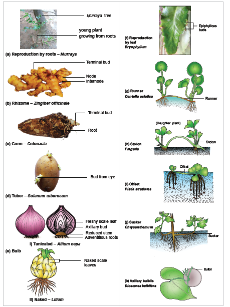
Figure 1.1 a-k: Natural methods of vegetative reproduction in plants.
Only one parent is required for propagation.
The new individual plants produced are genetically identical.
In some plants, this enables to spread rapidly. Example:Spinifex
Horticulturists and farmers utilize these organs of natural vegetative reproduction for cultivation and to harvest plants in large scale.
New plants produced have no genetic variation.
1. 2.2 Artificial Methods
Apart from the above-mentioned natural methods of vegetative reproduction, a number of methods
are used in agriculture and horticulture to propagate plants from their parts. Such methods are said to be artificial propagation. Some of the artificial propagation methods have been used by man for a long time and are called conventional methods. Now-a-days, technology is being used for propagation to produce large number of plants in a short period of time. Such methods are said to be modern methods.
The common methods of conventional propagation are cutting, grafting and layering.
It is the method of producing a new plant by cutting the plant parts such as root, stem and leaf from the parent plant. The cut part is placed in a suitable medium for growth. It produces root and grows into a new plant. Depending upon the part used it is called as root cutting OPEN BRACKET Malus CLOSE BRACKET , stem cutting OPEN BRACKET Hibiscus, Bougainvillea and Moringa CLOSE BRACKETand leaf cutting OPEN BRACKET Begonia, Bryophyllum CLOSE BRACKET Stem cutting is widely used for propagation.
In this, parts of two different plants are joined so that they continue to grow as one plant. Of the two plants, the plant which is in contact with the soil is called stock and the plant used for grafting is called scion OPEN BRACKET Figure 1.2 a CLOSE BRACKET . Examples are Citrus, Mango and Apple. There are different types of grafting based on the method of uniting the scion and stock. They are bud grafting, approach grafting, tongue grafting, crown grafting and wedge grafting.
![Figure 1.2 (a): Artificial methods of vegetative reproduction in plants. i. Bud grafting : A T- shaped incision is made in the stock plant. The scion bud with little wood is placed. Then properly bandaged. ii. Approach grafting: Both the scion and stock remain rooted. Both of them should have the same thickness. After 1-4 weeks stock and base of the scion are cut the plants. iii. Tongue grafting: A scion and stock cut in obliquely and is fit into the stock. iv. Crown grafting: Stock is large in size scions cut wedge shape and are inserted on the slits. stock and fixed in position using graft wax. v. Wedge grafting : stock or the bark is cut. A twig of scion is inserted tightly.](images/image-10.png)
Figure 1.2OPEN BRACKET a CLOSE BRACKETArtificial methods of vegetative reproduction in plants
A T-shaped incision is made in the stock and the bark is lifted. The scion bud with little wood is placed in the incision beneath the bark and properly bandaged with a tape.
In this method both the scion and stock remain rooted. The stock is grown in a pot and it is brought close to the scion. Both of them should have the same thickness. A small slice is cut from both and the cut surfaces are brought near and tied together and held by a tape. After 1-4 weeks the tip of the stock and base of the scion are cut off and detached and grown in a separate pot.
A scion and stock having the same thickness is cut obliquely and the scion is fit into the stock and bound with a tape.
When the stock is large in size scions are cut into wedge shape and are inserted on the slits or clefts of the stock and fixed in position using graft wax.
In this method a slit is made in the stock or the bark is cut. A twig of scion is inserted and tightly
bound so that the cambium of the two is joined.
Activity
Visit a nursery, observe the method of grafting, layering and do these techniques with plants growing in your school or home
In this method, the stem of a parent plant is allowed to develop roots while still intact. When the root develops, the rooted part is cut and planted to grow as a new plant. Examples: Ixora and Jasminum. Mound layering and Air layering are few types of layering OPEN BRACKET Figure 1.2 b CLOSE BRACKET
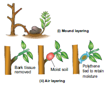
Figure 1.2OPEN BRACKET b CLOSE BRACKETArtificial methods of vegetative reproduction in plants
This method is applied for the plants having flexible branches. The lower branch with leaves is bent to the ground and part of the stem is buried in the soil and tip of the branch is exposed above the soil. After the roots emerge from the part of the stem buried in the soil, a cut is made in parent plant so that the buried part grow into a new plant.
In this method the stem is girdled at nodal region and hormones are applied to this region which promotes rooting. This portion is covered with damp or moist soil using a polythene sheet. Roots emerge in these branches after 2 to 4 months. Such branches are removed from the parent plant and grown in a separate pot or ground.
The plants produced are genetically uniform.
Many plants can be produced quickly by this method.
Some plants produce little or no seeds; in others, the seeds produced do not germinate. In such cases, plants can be produced in a short period by this method.
Some plants can be propagated more economically by vegetative propagation.
Example: Solanum tuberosum.
Two different plants with desirable characters such as disease resistance and high yield can be grafted and grown as a new plant with the same desirable characters.
Use of virus infected plants as parents produces viral infected new plants.
Vegetative structures used for propagation are bulky and so they are difficult to handle
and store.
In previous classes reproduction in lower plants like algae and bryophytes was discussed in detail.
Sexual reproduction involves the production and fusion of male and female gametes. The former is called gametogenesis and the latter is the process of fertilization. Let us recall the sexual reproduction in algae and bryophytes. They reproduce by the production of gametes which may be motile or non motile depending upon the species. The gametic fusion is of three types OPEN BRACKET Isogamy, Anisogamy and Oogamy CLOSE BRACKET . In algae external fertilization takes place whereas in higher plants internal fertilization occurs.
A flower is viewed in multidimensional perspectives from time immemorial. It is an inspirational tool for the poets. It is a decorative material for all the celebrations. In Tamil literature the five lands are denoted by different flowers. The flags of some countries are embedded with flowers. Flowers are used in the preparation of perfumes. For a Morphologist, a flower is a highly
condensed shoot meant for reproduction. As you have already learned about the parts of a flower in Unit II of Class XI, let us recall the parts of a flower. A Flower possesses four whorls Calyx, Corolla, Androecium and Gynoecium. Androecium and Gynoecium are essential organs OPEN BRACKET Figure 1.3 CLOSE BRACKET . The process or changes involved in sexual reproduction of higher plants include three stages. They are Prefertilization, Fertilization and Post fertilization changes. Let us discuss these events in detail.
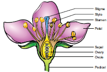
Figure 1.3 Parts of a Flower
The hormonal and structural changes in plant lead to the differentiation and development of floral primordium. The structures and events involved in prefertilization are given below
Androecium is made up of stamens. Each stamen possesses an anther and a filament. Anther bears pollen grains which represent the male gametophyte. In this chapter we shall discuss the structure and development of anther in detail.
A very young anther develops as a homogenous mass of cells surrounded by an epidermis. During its development, the anther assumes a fourlobed structure. In each lobe, a row or a few rows of hypodermal cells becomes enlarged with conspicuous nuclei. This functions as archesporium. The archesporial cells divide by periclinal divisions to form primary parietal cells towards the epidermis and primary sporogenous cells towards the inner side of the anther. The primary parietal cells undergo a series of periclinal and anticlinal division and form 2-5 layers of anther walls composed of endothecium, middle layers and tapetum, from periphery to centre.
The stages involved in the formation of haploid microspores from diploid microspore mother cell through meiosis is called Microsporogenesis. The primary sporogeneous cells directly, or may undergo a few mitotic divisions to form sporogenous tissue. The last generation of sporogenous tissue functions as microspore mother cells. Each microspore mother cell divides meiotically to form a tetrad of four haploid microspores OPEN BRACKET microspore tetrad CLOSE BRACKETMicrospores soon separate from one another and remain free in the anther locule and develop into pollen grains. The stages in the development of microsporangia is given in Figure 1.4. In some plants, all the microspores in a microsporangium remain held together called pollinium. Example: Calotropis. Pollinia are attached to a clamp or clip like sticky structure called corpusculum. The filamentous or thread like part arising from each pollinium is called retinaculum.The whole structure looks like inverted letter 'Y' and is called translator
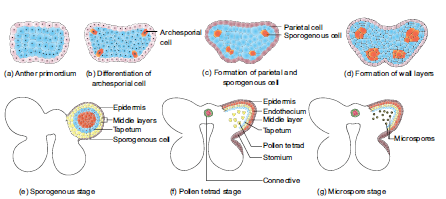
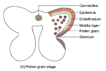
Figure 1.4 Stages in the development of anther
Box item
Activity
Collect buds and opened flowers of Datura metel. Dissect the stamens, separate the anthers and take thin transverse sections and observe the structure under the microscope. Record the various stages of anther development from your observations.
Transverse section of mature anther reveals the presence of anther cavity surrounded by an anther wall It is bilobed, each lobe having 2 thecae OPEN BRACKET dithecous CLOSE BRACKETA typical anther is tetrasporangiate.The T.S. of Mature anther is given in Figure 1.5.
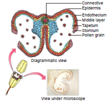
Figure 1.5 T. S of Mature anther
The mature anther wall consists of the following layers a. Epidermis b. Endothecium c. Middle layers d. Tapetum.
It is single layered and protective in function. The cells undergo repeated anticlinal divisions to cope up with the rapidly enlarging internal tissues.
It is generally a single layer of radially elongated cells found below the epidermis. The inner tangential wall develops bands OPEN BRACKET sometimes radial walls also CLOSE BRACKETof α cellulose OPEN BRACKET sometimes also slightly lignified CLOSE BRACKET The cells are hygroscopic. In the anthers of aquatic plants, saprophytes, cleistogamous flowers and extreme parasites endothecial differentiation is absent. The cells along the junction of the two sporangia of an anther lobe lack these thickenings. This region is called stomium. This region along with the hygroscopic nature of endothecium helps in the dehiscence of anther at maturity.
Two to three layers of cells next to endothecium constitute middle layers. They are generally ephemeral. They disintegrate or get crushed during maturity.
It is the innermost layer of anther wall and attains its maximum development at the tetrad stage of microsporogenesis. It is derived partly from the peripheral wall layer and partly from the connective tissue of the anther lining the anther locule. Thus, the tapetum is dual in origin. It nourishes the developing sporogenous tissue, microspore mother cells and microspores. The cells of the tapetum may remain uninucleate or may contain more than one nucleus or the nucleus may become polyploid. It also contributes to the wall materials, sporopollenin, pollenkitt, tryphine and number of proteins that control incompatibility reaction Tapetum also controls the fertility or sterility of the microspores or pollen grains.
There are two types of tapetum based on its behaviour. They are: Secretory tapetum OPEN BRACKET parietalSLASHglandularSLASH cellular CLOSE BRACKETThe tapetum retains the original position and cellular integrity and nourishes the developing microspores. Invasive tapetum OPEN BRACKET periplasmodial CLOSE BRACKET: The cells loose their inner tangential and radial walls and the protoplast of all tapetal cells coalesces to form a periplasmodium.
Functions of Tapetum:
It supplies nutrition to the developing microspores.
It contributes sporopollenin through ubisch bodies thus plays an important role in pollen wall formation.
The pollenkitt material is contributed by tapetal cells and is later transferred to the pollen surface.
Exine proteins responsible for ‘rejection reaction’ of the stigma are present in the cavities of the exine. These proteins are derived from tapetal cells.
Box item
DO YOU KNOW QUESTION MARK
Many botanists speak of a third type of tapetum called amoeboid, where the cell wall is not lost. The cells protrude into the anther cavity through an amoeboid movement. This type is often associated with male sterility and should not be confused with periplasmodial type.
The anther cavity is filled with microspores in young stages or with pollen grains at maturity. The meiotic division of microspore mother cells gives rise to microspores which are haploid in nature.
It is the column of sterile tissue surrounded by the anther lobe. It possesses vascular tissues. It also contributes to the inner tapetum.
Microspores are the immediate product of meiosis of the microspore mother cell whereas the pollen grain is derived from the microspore. The microspores have protoplast surrounded by a wall which is yet to be fully developed. The pollen protoplast consists of dense cytoplasm with a centrally located nucleus. The wall is differentiated into two layers, namely, inner layer called intine and outer layer called exine. Intine is thin, uniform and is made up of pectin, hemicellulose, cellulose and callose together with proteins. Exine is thick and is made up of cellulose, sporopollenin and pollenkitt. The exine is not uniform and is thin at certain areas. When these thin areas are small and round it is called germ pores or when elongated it is called furrows. It is associated with germination of pollen grains. The sporopollenin is generally absent in germ pores. The surface of the exine is either smooth or sculptured in various patterns OPEN BRACKET rod like, grooved, warty, punctuate etc. CLOSE BRACKET The sculpturing pattern is used in the plant identification and classification. Shape of a pollen grain varies from species to species. It may be globose, ellipsoid, fusiform, lobed, angular or crescent shaped. The size of the pollen varies from 10 micrometers in Myosotis to 200 micrometers in members of the family Cucurbitaceae and Nyctaginaceae
Palynology is the study of pollen grains It helps to identify the distribution of coal and to locate oil fields. Pollen grains reflect the vegetation of an area. Liquid nitrogen OPEN BRACKET -196 Celcious CLOSE BRACKET is used to preserve pollen in viable condition for prolonged duration. This technique is called cryopreservation and is used to store pollen grains OPEN BRACKET pollen banks CLOSE BRACKET of economically important crops for breeding programmes.
Bee pollen is a natural substance and contains high protein, carbohydrate, trace amount of minerals and vitamins. Therefore, it is used as dietary supplement and is sold as pollen tablets and syrups. Further, it increases the performance of athletes, race horses and also heals the wounds caused by burns. The study of honey pollen is called Mellitopalynology.Pollenkitt is contributed by the tapetum and coloured yellow or orange and is chiefly made of carotenoids or flavonoids. It is an oily layer forming a thick viscous coating over pollen surface. It attracts insects and protects damage from UV radiation.
Development of Male gametophyte:
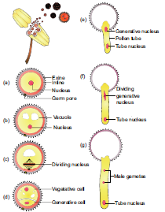
Figure 1.6 Development of male gametophyte
The microspore is the first cell of the male gametophyte and is haploid. The development of male gametophyte takes place while they are still in the microsporangium. The nucleus of the microspore divides mitotically to form a vegetative and a generative nucleus. A wall is laid around the generative nucleus resulting in the formation of two unequal cells, a large irregular nucleus bearing with abundant food reserve called vegetative cell and a small generative cell. Generally, at these 2 celled stages, the pollens are liberated from the anther. In some plants the generative cell again undergoes a division to form two male gametes. The pollen is liberated at 2 celled stage In 60 percentage of the angiosperms pollen is liberated in 2 celled stage. Further, the growth of the male gametophyte occurs only if the pollen reaches the right stigma. The pollen on reaching the stigma absorbs moisture and swells.
The intine grows as pollen tube through the germ pore. In case the pollen is liberated at 2 celled stage the generative cell divides in the pollen into 2 male cells OPEN BRACKET sperms CLOSE BRACKET after reaching the stigma or in the pollen tube before reaching the embryo sac. The stages in the development of male gametophyte is given in Figure 1.6.
The gynoecium represents the female reproductive part of the flower. The word gynoecium represents one or more pistils of aflower. The word pistil refers to the ovary, style and stigma. A pistil is derived from a carpel. The word ovary represents the part that contains the ovules. The stigma serves as a landing platform for pollen grains. The style is an elongated slender part beneath the stigma. The basal swollen part of the pistil is the ovary. The ovules are present inside the ovary cavity OPEN BRACKET locule CLOSE BRACKETon the placenta. Gynoecium OPEN BRACKET carpel CLOSE BRACKET arises as a small papillate outgrowth of meristematic tissue from the growing tip of the floral primordium. It grows actively and soon gets differentiated into ovary, style and stigma. The ovules or megasporangia arise from the placenta. The number of ovules in an ovary may be one OPEN BRACKET paddy, wheat and mango CLOSE BRACKET or many OPEN BRACKET papaya, water melon and orchids CLOSE BRACKET.
Structure of ovule OPEN BRACKET Megasporangium CLOSE BRACKET:
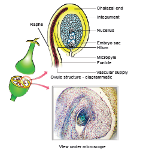
Figure 1.7 Structure of an ovule
Ovule is also called megasporangium and is protected by one or two covering called integuments. A mature ovule consists of a stalk and a body. The stalk or the funiculus OPEN BRACKET also called funicle CLOSE BRACKET is present at the base and it attaches the ovule to the placenta. The point of attachment of funicle to the body of the ovule is known as hilum. It represents the junction between ovule and funicle. In an inverted ovule, the funicle is adnate to the body of the ovule forming a ridge called raphe. The body of the ovule is made up of a central mass of parenchymatous tissue called nucellus which has large reserve food materials. The nucellus is enveloped by one or two protective coverings called integuments. Integument encloses the nucellus completely except at the top where it is free and forms a pore called micropyle. The ovule with one or two integuments are said to be unitegmic or bitegmic ovules respectively. The basal region of the body of the ovule where the nucellus, the integument and the funicle meet or merge is called as chalaza. There is a large, oval, sac-like structure in the nucellus toward the micropylar end called embryo sac or female gametophyte. It develops from the functional megaspore formed within the nucellus. In some speciesOPEN BRACKET unitegmic tenuinucellate CLOSE BRACKET the inner layer of the integument may become specialized to perform the nutritive function for the embryo sac and is called as endothelium or integumentary tapetum OPEN BRACKET Example: Asteraceae CLOSE BRACKET There are two types of ovule based on the position of the sporogenous cell. If the sporogenous cell is hypodermal with a single layer of nucellar tissue around it is called tenuinucellate type. Normally tenuinucellate ovules have very small nucellus. Ovules with subhypodermal sporogenous cell is called crassinucellate type. Normally these ovules have fairly large nucellus. Group of cells found at the base of the ovule between the chalaza and embryo sac is called hypostase and the thick -walled cells found above the micropylar end above the embryo sac is called epistase. The structure of ovule is given in Figure 1.7
The ovules are classified into six main types based on the orientation, form and position of the micropyle with respect to funicle and chalaza. Most important ovule types are orthotropous, anatropous, hemianatropous and campylotropous. The types of ovule is given in Figure 1.8.
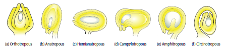
Figure 1.8 Types of ovule
In this type of ovule, the micropyle is at the distal end and the micropyle, the funicle and the
chalaza lie in one straight vertical line. Examples: Piperaceae, Polygonaceae
The body of the ovule becomes completely inverted so that the micropyle and funiculus come to lie very close to each other. This is the common type of ovules found in dicots and monocots.
In this, the body of the ovule is placed transversely and at right angles to the funicle.
Example: Primulaceae.
The body of the ovule at the micropylar end is curved and more or less bean shaped. The embryo sac is slightly curved. All the three, hilum, micropyle and chalaza are adjacent to one another, with the micropyle oriented towards the placenta. Example: Leguminosae In addition to the above main types there are two more types of ovules they are,
The distance between hilum and chalaza is less. The curvature of the ovule leads to horse-shoe shaped nucellus.Example: some Alismataceae.
Funiculus is very long and surrounds the ovule. Example: Cactaceae
Megasporogenesis
The process of development of a megaspore from a megaspore mother cell is called megasporogenesis.
As the ovule develops, a single hypodermal cell in the nucellus becomes enlarged and functions as archesporium. In some plants, the archesporial cell may directly function as megaspore mother cell. In others, it may undergo a transverse division to form outer primary parietal cell and inner primary sporogenous cell. The parietal cell may remain undivided or divide by few periclinal and anticlinal divisions to embed the primary sporogenous cell deep into the nucellus. The primary sporogenous cell functions as a megaspore mother cell. The megaspore mother cell OPEN BRACKET MMO CLOSE BRACKET undergoes meiotic division to form four haploid megaspores. Based on the number of megaspores that develop into the Embryo sac, we have three basic types of development: monosporic, bisporic and tetrasporic.
The megaspores are usually arranged in a linear tetrad. Of the four megaspores formed, usually the chalazal one is functional and other three megaspores degenerate. The functional megaspore forms the female gametophyte or embryo sac. This type of development is called monosporic development OPEN BRACKET Example: Polygonum CLOSE BRACKET .Of the four megaspores formed if two are involved in Embryo sac formation the development is called bisporic OPEN BRACKET Example: Allium CLOSE BRACKET . If all the four megaspores are involved in Embryo sac formation the development is called tetrasporic OPEN BRACKET Example: Peperomia CLOSE BRACKET. An ovule generally has a single embryo sac. The development of monosporic embryo sac OPEN BRACKET Polygonum type CLOSE BRACKET is given in Figure 1.9.
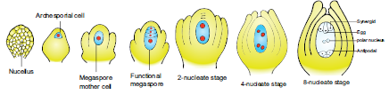
Figure 1.9 Development of ovule and embryo sac OPEN BRACKET Polygonum type CLOSE BRACKET.
To describe the stages in embryo sac development and organization the simplest monosporic type of development is given below. The functional megaspore is the first cell of the embryo sac or female gametophyte. The megaspore elongates along micropylar- chalazal axis. The nucleus undergoes a mitotic division. Wall formation does not follow the nuclear division. A large central vacuole now appears between the two daughter nuclei. The vacuole expands and pushes the nuclei towards the opposite poles of the embryo sac. Both the nuclei divide twice mitotically, forming four nuclei at each pole. At this stage all the eight nuclei are present in a common cytoplasm OPEN BRACKET free nuclear division CLOSE BRACKET. After the last nuclear division the cell undergoes appreciable elongation, assuming a sac-like appearance. This is followed by cellular organization of the embryo sac. Of the four nuclei at the micropylar end of the embryo sac, three organize into an egg apparatus, the fourth one is left free in the cytoplasm of the central cell as the upper polar nucleus. Three nuclei of the chalazal end form three antipodal cells whereas the fourth one functions as the lower polar nucleus. Depending on the plant the 2 polar nuclei may remain free or may fuse to form a secondary nucleus OPEN BRACKET central cell CLOSE BRACKET. The egg apparatus is made up of a central egg cell and two synergids, one on each side of the egg cell. Synergids secrete chemotropic substances that help to attract the pollen tube. The special cellular thickening called filiform apparatus of synergids help in the absorption, conduction of nutrients from the nucellus to embryo sac. It also guides the pollen tube into the egg. Thus, a 7 celled with 8 nuclei embryo sac is formed. The structure of embryo sac is given in Figure 1.10.
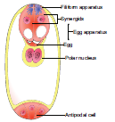
Figure 1.10 Structure of Embryo sac
Pollination is a wonderful mechanism which provides food, shelter etc., for the pollinating animals. Many plants are pollinated by a particular animal species and the flowers are modified accordingly and thus there exists a co-evolution between plants and animals. Let us imagine if pollination fails.
Do you think there will be any seed and fruit formation QUESTION MARK If not, what happens to pollinating organisms and those that depend on this pollinating organism for the food QUESTION MARK Here lies the significance of the process of pollination. The pollen grains produced in the anther will germinate only when they reach the stigma of the pistil. The reproductive organs, stamens and pistil of the flower are spatially separated, a mechanism which is essential for pollen grains to reach the stigma is needed. This process of transfer of pollen grains from the anther to a stigma of a flower is called pollination.
Pollinationis a characteristic feature of spermatophyte OPEN BRACKET Gymnosperms and Angiosperms CLOSE BRACKET. Pollination in gymnosperms is said to be direct as the pollens are deposited directly on the
exposed ovules, whereas in angiosperms it is said to be indirect, as the pollens are deposited on the stigma of the pistil. In majority of angiosperms, the flower opens and exposes its mature anthers and stigma for pollination. Such flowers are called chasmogamous and the phenomenon is chasmogamy. In other plants, pollination occurs without opening and exposing their sex organs. Such flowers are called cleistogamous and the phenomenon is cleistogamy Based upon the flower on which the pollen of a flower reaches, the pollination is classified into two kinds, namely, self-pollination OPEN BRACKET Autogamy CLOSE BRACKET and cross-pollinationOPEN BRACKET Allogamy CLOSE BRACKET.
OPEN BRACKET GreekAuto IS EQUAL TO self, gamos IS EQUAL TO marriage CLOSE BRACKET:According to a majority of Botanists, the transfer of pollen on the stigma of the same flower is called self-pollination or Autogamy. Self-pollination is possible only in those plants which bear bisexual flowers. In order to promote self- pollination the flowers of the plants have several adaptations or mechanisms. They are:
In cleistogamy OPEN BRACKET Greek Kleisto IS EQUAL TO closed. Gamos IS EQUAL TO marriage CLOSE BRACKET flowers never open and expose the reproductive organs and thus the pollination is carried out within the closed flower. Commelina, Viola, Oxalis are some examples for cleistogamous flowers. In Commelina benghalensis, two types of flowers are producedaerial and underground flowers. The aerial flowers are brightly coloured, chasmogamous and insect pollinated. The underground flowers are borne on the subterranean branches of the rhizome that are dull, cleistogamous and self pollinated and are not dependent on pollinators for pollination OPEN BRACKET Figure 1.11 CLOSE BRACKET.
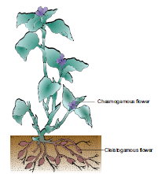
Figure 1.11 Commelina with Cleistogamous and Chasmogamous flowers
When the stamens and stigma of a flower mature at the same time it is said to be homogamy. It favours self pollination to occur. Example: Mirabilis jalapa, Catharanthus roseus
In dichogamous flowers the stamen and stigma of a flower mature at different time. Sometimes, the time of maturation of these essential organs overlap so that it becomes favourable for self-pollination.
It refers to the transfer of pollens on the stigma of another flower. The cross-pollination is of two types:
When the pollen deposits on another flower of the same individual plant, it is said to be geitonogamy. It usually occurs in plants which show monoecious condition. It is functionally
cross-pollination but is generally similar to autogamy because the pollen comes from same plant.
When the pollen OPEN BRACKET genetically different CLOSE BRACKET deposits on another flower of a different plant of the same species , it is called as xenogamy.
The flowers have several mechanisms that promote cross-pollination which are also called
contrivances of cross-pollination or outbreeding devices. It includes the following
When the flowers are unisexual only crosspollination is possible. There are two types.
1. Monoecious:
Male and female flowers on the same plant. Coconut, Bitter gourd. In plants like castor and maize, autogamy is prevented but geitonogamy takes place.
2. Dioecious :
Male and female flowers on different plants. Borassus, Carica and phoenix. Here both autogamy and geitonogamy are prevented.
Flowers are bisexual and the special adaptation of the flowers prevents self-pollination.
1. Dichogamy:
In bisexual flowers anthers and stigmas mature at different times, thus checking self-pollination. It is of two types.
a. Protandry:
The stamens mature earlier than the stigmas of the flowers. Examples: Helianthus, Clerodendrum OPEN BRACKET Figure 1.12 a CLOSE BRACKET.
b. Protogyny:
The stigmas mature earlier than the stamens of the flower. Examples: Scrophularia nodosa and Aristolochia bracteata OPEN BRACKET Figure 1.12 b CLOSE BRACKET.
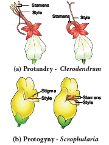
Figure 1.12 Dichogamy
2. Herkogamy:
In bisexual flowers the essential organs, the stamens and stigmas, are arranged in such a way that self-pollination becomes impossible. For example in Gloriosa superba, the style is reflexed away from the stamens and in Hibiscus the stigmas project far above the stamens OPEN BRACKET Figure 1.13 CLOSE BRACKET.
Figure 1.13 Herkogamy – Gloriosa
3. Heterostyly:
Some plants produce two or three different forms of flowers that are different in their length of stamens and style. Pollination will take place only between organs of the same length.
OPEN BRACKET Figure 1.14 CLOSE BRACKET
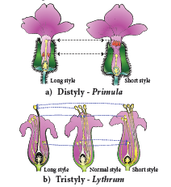
Figure 1.14 Heterostyly
a. Distyly:
The plant produces two forms of flowers, Pin or long style, long stigmatic papillae, short stamens and small pollen grains; Thrum-eyed or short style, small stigmatic papillae, long stamens and large pollen grains. Example: Primula OPEN BRACKET Figure 1.14a CLOSE BRACKET. The stigma of the Thrum-eyed flowers and the anther of the pin lie in same level to bring out pollination. Similarly the anther of Thrum-eyed and stigma of pin ones is found in same height. This helps in effective pollination.
b. Tristyly:The plant produces three kinds of flowers, with respect to the length of the style and stamens. Here, the pollen from flowers of one type can pollinate only the other two types but not their own type. Example Lythrum OPEN BRACKET Figure 1.14b CLOSE BRACKET.
iv. Self sterilitySLASH Self- incompatibility:In some plants, when the pollen grain of a flower reaches the stigma of the same, it is unable to germinate or prevented to germinate on its own stigma. Examples: Abutilon, Passiflora. It is a genetic mechanism.
Pollination is effected by many agents like wind, water, insects etc. On the basis of the agents that bring about pollination, the mode of pollination is divided into abiotic and biotic. The latter type is used by majority of plants.
1. Anemophily - pollination by Wind
2. Hydrophily - pollination by Water
3. Zoophily--Zoophily refers to pollination through animals and pollination through insects is
called Entomophily.
Pollination by wind. The wind pollinated flowers are called anemophilous. The wind pollinated plants are generally situated in wind exposed regions. Anemophily is a chance event. Therefore,
the pollen may not reach the target flower effectively and are wasted during the transit from one flower to another. The common examples of wind pollinated flowers are grasses, sugarcane,
bamboo, coconut, palm, maize etc.,
Anemophilous plants have the following characteristic features:
1.The flowers are produced in pendulous, catkin-like or spike inflorescence.
2.The axis of inflorescence elongates so that the flowers are brought well above the leaves.
3.The perianth is absent or highly reduced.
4.The flowers are small, inconspicuous, colourless, not scented, do not secrete nectar.
5.The stamens are numerous, filaments are long, exerted and versatile.
6.Anthers produce enormous quantities of pollen grains compared to number of ovules available for pollination. They are minute, light and dry so that they can be carried to long distances by wind.
7.In some plants anthers burst violently and release the pollen into the air. Example: Urtica.
8.Stigmas are comparatively large, protruding, sometimes branched and feathery, adapted to catch the pollen grains. Generally single ovule is present.
9. Plant produces flowers before the new leaves appear, so the pollen can be carried without hindrance of leaves.
Pollination in Maize OPEN BRACKET Zea mays CLOSE BRACKET:
The maize is monoecious and unisexual. The male inflorescence OPEN BRACKET tassel CLOSE BRACKET is borne terminally and female inflorescence OPEN BRACKET cob CLOSE BRACKET laterally at lower levels. Maize pollens are large and heavy and cannot be carried by light breeze. However, the mild wind shakes the male inflorescence to release the pollen which falls vertically below. The female inflorescence has long stigma OPEN BRACKET silk CLOSE BRACKET measuring upto 23 cm in length, which projects beyond leaves. The pollens drop from the tassel is caught by the stigma OPEN BRACKET Figure 1.15 CLOSE BRACKET.
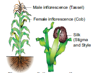
Figure 1.15 Pollination in Zea mays
Pollination by water is called hydrophily and the flowers pollinated by water are said to be hydrophilous
OPEN BRACKET Example: Vallisneria, Hydrilla CLOSE BRACKET.
Though there are a number of aquatic plants, onl in few plants pollination takes place by water. The floral envelop of hydrophilous plants are reduced or absent. In water plants like Eichhornia and water lilly pollination takes place through wind or by insects. There are two types of hydrophily, Epihydrophily and Hypohydrophily. In most of the hydrophilous flowers, the pollen grains possesses mucilage covering which protects them from wetting.
a. Epihydrophily:
Pollination occurs at the water level. Examples: Vallisneria spiralis, Elodea.
Pollination in Vallisneria spiralis:
It is a dioecious, submerged and rooted hydrophyte. The female plant bears solitary flowers which rise to the surface of water level using a long coiled stalk at the time of pollination. A small cup shaped depression is formed around the female flower on the surface of the water. The male plant produces male flowers which get detached and float on the surface of the water. As soon as a male flowers comes in contact with the female flower and pollination takes place, Stalk of the female flower coils and goes under water where fruits are produced. OPEN BRACKET Figure 1.16 CLOSE BRACKET.
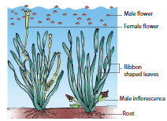
Figure 1.16 Pollination in Vallisneria
b. Hypohydrophily:
Pollination occurs inside the water. Examples: Zostera marina and Ceratophyllum.
Box item
Activity
Visit to a nearby park and observe the different flowers. Record the adaptations or modifications found in the flowers for different types of pollination.
Pollination by the agency of animals is called zoophily and flowers are said to be zoophilous. Animals that bring about pollination may be birds, bats, snails and insects. Of these, insects are well adapted to bring pollination. Larger animals like primates OPEN BRACKET lemurs CLOSE BRACKET, arboreal rodents, reptiles OPEN BRACKET gecko lizard and garden lizard CLOSE BRACKET have also been reported as pollinators.
A. Ornithophily:
Pollination by birds is called Ornithophily. Some common plants that are pollinated by birds are Erythrina, Bombax, Syzygium, Bignonia, Sterlitzia etc., Humming birds, sun birds, and honey eaters are some of the birds which regularly visit flowers and bring about pollination.
The ornithophilous flowers have the following characteristic features:
1.The flowers are usually large in size.
2.The flowers are tubular, cup shaped or urnshaped.
3.The flowers are brightly coloured, red, scarlet, pink, orange, blue and yellow which attracts the birds.
4.The flowers are scentless and produce nectar in large quantities. Pollen and nectar form the floral rewards for the birds visiting the flowers.
5.The floral parts are tough and leathery to withstand the powerful impact of the visitors.
B. Cheiropterophily:
Pollination carried out by bats is called cheiropterophily. Some of the common cheiropterophilous plants are Kigelia africana, Adansonia digitata, etc.,
C. Malacophily:
Pollination by slugs and snails is called malacophily. Some plants of Araceae are pollinated by snails. Water snails crawling among Lemna pollinate them.
D. Entomophily:
Pollination by insects is called Entomophily. Pollination by ant is called myrmecophily. Insects that are well adapted to bring pollination are bees, moths, butterflies, flies, wasps and beetles. Of the insects, bees are the main flower visitors and dominant pollinators. Insects are chief pollinating agents and majority of angiosperms are adapted for insect pollination. It is the most common type
of pollination.
The characteristic features of entomophilous flowers are as follows:
Flowers are generally large or if small they are aggregated in dense inflorescence.
Example: Asteraceae flowers.
Flowers are brightly coloured. The adjacent parts of the flowers may also be brightly coloured to attract insect. For example, in Poinsettia and Bougainvillea the bracts become coloured.
Flowers are scented and produce nectar.
Flowers in which there is no secretion of nectar, the pollen is either consumed as food or used in building up of its hive by the honeybees. Pollen and nectar are the floral rewards for the visitors.
Flowers pollinated by flies and beetles produce foul odour to attract pollinators.
In some flowers juicy cells are present which are pierced and the contents are sucked by the insects.
POLLINATION
Two types
1 self pollination open bracket Autogamy close bracket
2 Cross pollination open bracket xenogamy or Allogamy close bracket
Abiotic Agencies
1 Anemophily open bracket Wind close bracket
2 Hydrophly open bracket water close bracket
Biotic Agencies
Cantharophily open bracket Beetle close bracket
Phalaenophily open bracket Moths close bracket
Mellitophily open bracket Bees close bracket
Psychophily open bracket Butterflies close bracket
Malacophily open bracket snails close bracket
Ornithophily open bracket Birds close braket
Chieropterophily open bracket bats close bracket
Myrmecophily open bracket Ants close bracket
The flower is protandrous and the corolla is bilabiate with 2 stamens. A lever mechanism helps in pollination. Each anther has an upper fertile lobe and lower sterile lobe which is separated by a long connective which helps the anthers to swing freely. When a bee visits a flower, it sits on the lower lip which acts as a platform. It enters the flower to suck the nectar by pushing its head into the corolla. During the entry of the bee into the flower the body strikes against the sterile end ofthe connective. This makes the fertile part of the stamen to descend and strike at the back of the bee. The pollen gets deposited on the back of the bee. When it visits another flower, the pollengets rubbed against the stigma and completes the act of pollination in Salvia OPEN BRACKET Figure 1.17 CLOSE BRACKET. Some of the other interesting pollination mechanisms found in plants are a CLOSE BRACKET Trap mechanism OPEN BRACKET Aristolochia CLOSE BRACKET; Pit fall mechanism OPEN BRACKET Arum CLOSE BRACKET; Clip or translator mechanism OPEN BRACKET Asclepiadaceae CLOSE BRACKET and Piston mechanism OPEN BRACKET Papilionaceae CLOSE BRACKET.
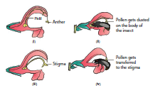
Figure 1.17 Pollination in Salvia – Lever mechanism
The fusion of male and female gamete is called fertilization. Double fertilization is seen in angiosperms.
The stages involved in double fertilization are: germination of pollen to form pollen tube in the stigma; growth of pollen tube in the style; direction of pollen tube towards the micropyle of the ovule; entry of the pollen tube into one of the synergids of the embryo sac, discharge of male gametes; syngamy and triple fusion. The events from pollen deposition on the stigma to the entry of pollen tube in to the ovule is called pollen- pistil interaction. It is a dynamic process which involves recognition of pollen and to promote or inhibit its germination and growth.
In nature, a variety of pollens fall on the receptive stigma, but all of them do not germinate and bring out fertilization. The receptive surface of the stigma receives the pollen. If the pollen is compatible with the stigma it germinates to form a tube. This is facilitated by the stigmatic fluid in wet stigma and pellicle in dry stigma. These two also decide the incompatibility and compatibility of the pollen through recognitionrejection protein reaction between the pollen and stigma surface. Sexual incompatibility may exist between different species OPEN BRACKET interspecific CLOSE BRACKET or between members of the same species OPEN BRACKET intraspecific CLOSE BRACKET.The latter is called self incompatibility. The first visible change in the pollen, soon after it lands on stigma is hydration. The pollen wall proteins are released from the surface. During the germination of pollen its entire content moves into the pollen tube. The growth is restricted to the tip of the tube and all the cytoplasmic contents move to the tip region. The remaining part of the pollen tube is occupied by a vacuole which is cut off from the tip by callose plug. The extreme tip of pollen tube appears hemispherical and transparent when viewed through the microscope. This is called cap block. As soon as the cap block disappear the growth of the pollen tube stops.
Box item
Pollination – A composite event
Pollination provides information about evolution, ecology, animal learning and foraging behaviour. Flowers not only supply nectar but also provide microclimate, site and shelter for egg laying insects. The association of insects benefits the flower by getting pollinated and ensures the propagation of its own progeny. The floral parts are well modified in shape, size to attract the pollinators to accomplish pollination.
The relationship between Yucca and moth OPEN BRACKET Tegeticula yuccasella CLOSE BRACKET is an example for obligate mutualism. The moth bores a hole in the ovary of the flower and lays eggs in it. Then it collects pollen and pushes it in the form of balls down the hollow end of the stigma. Fertilization takes place and seeds develop. Larvae feed on developing seeds. Some seeds remain unconsumed for the propagation of the plant species. It is interesting that the moth cannot survive without Yucca flowers and the plant fails to reproduce sexually without the moth.
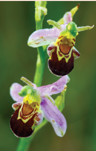
Similarly, in Amorphophallus, flowers apart from providing floral rewards, also forms safe site for laying eggs. Many visitors consume pollen and nectar and do not help in pollination. They are called pollen SLASH nectar robbers.
In Bee orchid OPEN BRACKET Ophrys CLOSE BRACKET the morphology of the flower mimics that of female wasp OPEN BRACKET Colpa CLOSE BRACKET. The male wasp mistakes the flowers for a female wasp and tries to copulate. This act of pseudocopulation helps in polli nation. The pollination in Fig OPEN BRACKET Ficus carica CLOSE BRACKET by the Wasp OPEN BRACKET Blastophaga psenes CLOSE BRACKET is also an example for similar Plant insect interaction
After the germination the pollen tube enters into the style from the stigma. The growth of the pollen tube in the style depends on the type of style.
There are three types of style a CLOSE BRACKET Hollow or open style b CLOSE BRACKET solid style or closed style c CLOSE BRACKET semisolid or half-closed style.
It is common among monocots. A hollow canal running from the stigma to the base of the style is present. The canal is lined by a single layer of glandular canal cells OPEN BRACKET Transmitting tissue CLOSE BRACKET. They secrete mucilaginous substances. The pollen tube grows on the surface of the cells lining the stylar canal. The canal is filled with secretions which serve as nutrition for growing pollen tubes and also controlling incompatibility reaction between the style and pollen tube. The secretions contain carbohydrates, lipids and some enzymes like esterases, acid phosphatases as well as compatibility controlling proteins.
It is common among dicots. It is characterized by the presence of central core of elongated, highly specialised cells called transmitting tissue. This is equivalent to the lining cells of hollow style and does the same function. Its contents are also similar to the content of those cells. The pollen tube grows through the intercellular spaces of the transmitting tissue.
This is intermediate between solid and open type. There is a difference of opinion on the nature of transmitting tissue. Some authors consider that it is found only in solid styles while others consider the lining cells of hollow style also has transmitting tissue.
There are three types of pollen tube entry into the ovuleOPEN BRACKET Figure 1.18 CLOSE BRACKET.
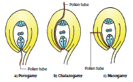
Figure 1.18 Path of pollen tube entry into the ovule
A close bracket Porogamy:
when the pollen tube enters through the micropyle.
B close bracket Chalazogamy:
when the pollen tube enters through the chalaza.
C close bracket Mesogamy:
when the pollen tube enters through the integument.
Irrespective of the place of entry of pollen tube into ovule, it enters the embryo sac at the micropylar end. The pollen enters into embryo sac directly into one of the synergids. The growth of pollen tube towards the ovary, ovule and embryo sac is due to the presence of chemotropic substances. The pollen tube after travelling the whole length of the style enters into the ovary locule where it is guided towards the micropyle of the ovule by a structure called obturator OPEN BRACKET See Do you know CLOSE BRACKET. After reaching the embryo sac, a pore is formed in pollen tube wall at its apex or just behind the apex. The content of the pollen tube OPEN BRACKET two male gametes, vegetative nucleus and cytoplasm CLOSE BRACKET are discharged into the synergids into which pollen tube enters. The pollen tube does not grow beyond it, in the embryo sac. The tube nucleus disorganizes.
S.G. Nawaschin and L. Guignard in 1898 and 1899, observed in Lilium and Fritillaria that both the male gametes released from a male gametophyte are involved in the fertilization. They fertilize two different components of the embryo sac. Since both the male gametes are involved in fertilization, the phenomenon is called double fertilization and is unique to angiosperms. One of the male gametes fuses with the egg nucleus OPEN BRACKET syngamy CLOSE BRACKET to form Zygote. OPEN BRACKET Figure 1.19 CLOSE BRACKET
The second gamete migrates to the central cell where it fuses with the polar nuclei or their fusion product, the secondary nucleus and forms the primary endosperm nucleus OPEN BRACKET PEN CLOSE BRACKET. Since this involves the fusion of three nuclei, this phenomenon is called triple fusion. This act results in endosperm formation which forms the nutritive tissue for the embryo.
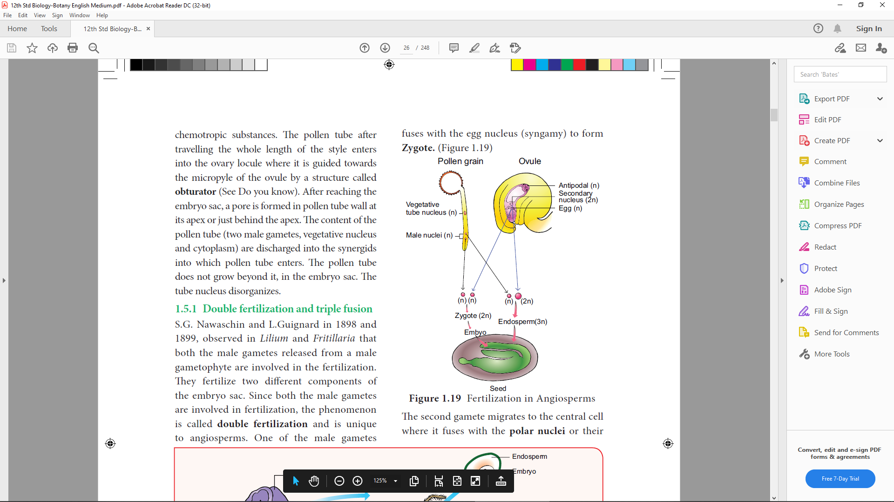
Figure 1.19 Fertilization in Angiosperms
After fertilization, several changes take place in the floral parts up to the formation of the seed OPEN BRACKET Figure 1.20 CLOSE BRACKET.
The events after fertilization OPEN BRACKET endosperm, embryo development, formation of seed, fruits CLOSE BRACKET are called post fertilization changes.
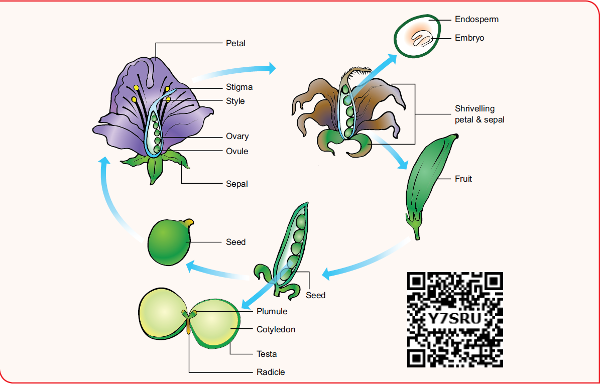
Figure 1.20 Post Ferilization changes in the flower of an angiosperm
Parts before fertilization |
Transformation after fertilization |
Sepals, petals, stamens, style and stigma |
Usually wither and fall off |
Ovary |
Fruit |
Ovule |
Seed |
Egg |
Zygote |
Funicle |
Stalk of the seed |
Micropyle OPEN BRACKET ovule CLOSE BRACKET |
Micropyle of the seed OPEN BRACKET facilitates O2 and water uptake CLOSE BRACKET |
Nucellus |
Perisperm |
Outer integument of ovule |
Testa OPEN BRACKET outer seed coat CLOSE BRACKET |
Inner integument |
Tegmen OPEN BRACKET inner seed coat CLOSE BRACKET |
Synergid cells |
Degenerate |
Secondary nucleus |
Endosperm |
Antipodal cells |
Degenerate |
The primary endosperm nucleus OPEN BRACKET PEN CLOSE BRACKET divides immediately after fertilization but before the zygote starts to divide, to form the endosperm. The primary endosperm nucleus is the result of triple fusion OPEN BRACKET two polar nuclei and one sperm nucleus CLOSE BRACKET and thus has 3n number of chromosomes.
It is a nutritive tissue and regulatory structure that nourishes the developing embryo. Depending upon the mode of development three types of endosperm are recognized in angiosperms. They are nuclear endosperm, cellular endosperm and helobial endosperm OPEN BRACKET Figure 1.21 CLOSE BRACKET.
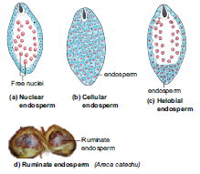
Figure 1.21 Types of Endosperm
Primary Endosperm Nucleus undergoes several mitotic divisions without cell wall formation thus a free nuclear condition exists in the endosperm. Examples: Coccinia, Capsella and Arachis
Primary endosperm nucleus divides into 2 nuclei and it is immediately followed by wall formation.
Subsequent divisions also follow cell wall formation. Examples: Adoxa, Helianthus and Scoparia
Primary Endosperm Nucleus moves towards base of embryo sac and divides into two nuclei. Cell wall formation takes place leading to the formation of a large micropylar and small chalazal chamber. The nucleus of the micropylar chamber undergoes several free nuclear division whereas that of chalazal chamber may or may not divide. Examples : Hydrilla and Vallisneria.
The endosperms may either be completely consumed by the developing embryo or it may persist in the mature seeds. Those seeds without endosperms are called non- endospermous or ex- albuminous seeds. Examples: Pea, Groundnut and Beans. Those seeds with endosperms are called endospermous or albuminous seeds. Theendosperms in these seeds supply nutrition to the embryo during seed germination. Examples: Paddy, Coconut and Castor.
Box item
Aleurone tissue consists of highly specialised cells of one or few layers which are found around theendosperm of cereals OPEN BRACKET barley and maize CLOSE BRACKET. Aleurone grain contains sphaerosomes. During seed germination cells secrete certain hydrolytic enzymes like amylases, proteases which digest reserved food material present in the endosperm cells.
The endosperm with irregularity and unevenness in its surface forms ruminate endosperm. Examples: Areca catechu, Passiflora and Myristica
Functions of endosperm:
It is the nutritive tissue for the developing embryo.
In majority of angiosperms, the zygote divides only after the development of endosperm.
Endosperm regulates the precise mode of embryo development.
Box item
Coconut milk is a basic nutrient medium which induces the differentiation of embryo OPEN BRACKET embryoids CLOSE BRACKET and plantlets from various plant tissues. Coconut water from tender coconut is free nuclear endosperm and white kernel part is cellular.
Embryogenesis
The Stages involved in the development of Dicot embryo OPEN BRACKET Capsella bursa-pastoris – Onagrad or crucifer type CLOSE BRACKET is given in Figure 1. 22 The embryo develops at micropylar end of embryo sac. The zygote undergoes transverse division to form upper or terminal cell and lower or basal cell.
Further divisions in the zygote during the development lead to the formation of embryo. Embryo undergoes globular, heart shaped stages before reaching a mature stage. The mature embryo has a radicle, two cotyledons and a plumule.
Box item
Collect the fruits of Tridax OPEN BRACKET Cypsella CLOSE BRACKET. Using a needle dissect out the content, separate the embryo and observe different stages of dicot embryo – globular, torpedo, heart shaped under a dissection microscope.
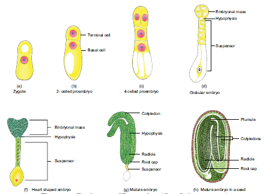
Figure 1.22 Development of Dicot embryo OPEN BRACKET Capsella bursa-pastoris CLOSE BRACKET
The fertilized ovule is called seed and possesses an embryo, endosperm and a protective coat. Seeds may be endospermous OPEN BRACKET wheat, maize, barley and sunflower CLOSE BRACKET or non endospermous.
OPEN BRACKET Bean, Mango, Orchids and cucurbits CLOSE BRACKET.
Box item
Fresh weight of an orchid seed may be 20.33 microgram and that of double coconut Lodoicea maldivica CLOSE BRACKET is about 6 kg.
Cicer seed OPEN BRACKET example for Dicot seed CLOSE BRACKET
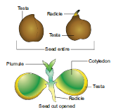
Figure 1.23OPEN BRACKET a CLOSE BRACKET Dicot seed - Cicer arientinum
The mature seeds are attached to the fruit wall by a stalk called funiculus. The funiculus disappears leaving a scar called hilum. Below the hilum a small pore called micropyle is present.
It facilitates entry of oxygen and water into the seeds during germination. Each seed has a thick outer covering called seed coat. The seed coat is developed from integuments of the ovule. The outer coat is called testa and is hard whereas the inner coat is thin, membranous and is called tegmen. In Pea plant the tegmen and testa are fused.
Two cotyledons laterally attached to the embryonic axis and store the food materials in pea whereas in other seeds like castor the endosperm contains reserve food and the cotyledons are thin. The portion of embryonal axis projecting beyond the cotyledons is called radicle or embryonic root. The other end of the axis called embryonic shoot is the plumule. Embryonal axis above the level of cotyledon is called epicotyl whereas the cylindrical region between the level of cotyledon is called hypocotyl OPEN BRACKET Figure 1.23 a CLOSE BRACKET.
The seed of paddy is one seeded and is called Caryopsis. Each seed remains enclosed by a brownish husk which consists of glumes arranged in two rows. The seed coat is a brownish, membranous layer closely adhered to the grain. Endosperm forms the bulk of the grain and is the storage tissue. It is separated from embryo by a definite layer called epithelium. The embryo is small and consists of one shieldshaped cotyledon known as scutellum present towards lateral
side of embryonal axis. A short axis with plumule and radicle protected by the root cap is present. The plumule is surrounded by a protective sheath called coleoptile. The radicle including root cap is also covered by a protective sheath called coleorhiza. The scutellum supplies the growing embryo with food material absorbed from the endosperm with the help of the epithelium OPEN BRACKET Figure 1.23 b CLOSE BRACKET
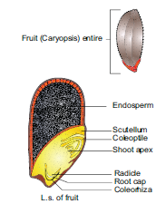
Figure 1.23OPEN BRACKET b CLOSE BRACKET Mon ocot seed - Oryza sativa
Activity
Soak seeds of green gram for three hours. Drain the water and place few seeds in a clean tray containing moist cotton or filter paper. Allow the seeds to sprout. Collect the sprouted seeds, cut open and observe the parts. Record your observation.
Reproduction involving fertilization in flowering plants is called amphimixis and wherever reproduction does not involve union of male and female gametes is called apomixis. The term Apomixis was introduced by Winkler in the year 1908. It is defined as the substitution of the usual sexual system OPEN BRACKET Amphimixis CLOSE BRACKET by a form of reproduction which does not involve meiosis and syngamy. Maheswari OPEN BRACKET 1950 CLOSE BRACKET classified Apomixis into two types - Recurrent and Non recurrent
It includes vegetative reproduction and agamospermy
Haploid embryo sac developed after meiosis, develops into a embryo without fertilization. The outline classification of Recurrent apomixis is given below.
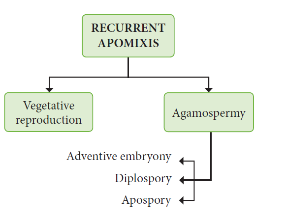
Vegetative reproduction:
Plants propagate by any part other than seeds Bulbils – Fritillaria imperialis; Bulbs – Allium;
Runner – Mentha arvensis; Sucker - Chrysanthemum
Agamospermy:
It refers to processes by which Embryos are formed by eliminating meiosis and syngamy.
Adventive embryony
An Embryo arises directly from the diploid sporophytic cells either from nucellus or integument.
It is also called sporophytic budding because gametophytic phase is completely absent. Adventive embryos are found in Citrus and Mangifera
Diplospory OPEN BRACKET Generative apospory CLOSE BRACKET:
A diploid embryo sac is formed from megaspore mother cell without a regular meiotic division Examples. Eupatorium and Aerva.
Apospory:
Megaspore mother cell OPEN BRACKET MMC CLOSE BRACKET undergoes the normal meiosis and four megaspores formed gradually disappear. A nucellar cell becomes activated and develops into a diploid embryo sac. This type of apospory is also called somatic apospory. Examples Hieracium and Parthenium.
Occurrence of more than one embryo in a seed is called polyembryony OPEN BRACKET Figure 1.24 CLOSE BRACKET. The first case of polyembryony was reported in certain oranges by Anton von Leeuwenhoek in the year 1719. Polyembryony is divided into four categories based on its origin.
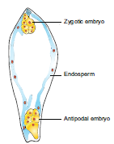
Figure 1.24: Polyembryony – Embryo sac of Ulmus glabra showing zygotic and antipodal embryo
a. Cleavage polyembryony OPEN BRACKET Example: Orchids CLOSE BRACKET
b. Formation of embryo by cells of the Embryo sac other than egg OPEN BRACKET Synergids – Aristolochia;
antipodals – Ulmus and endosperm – Balanophora CLOSE BRACKET
c. Development of more than one Embryo sac within the same ovule. OPEN BRACKET Derivatives of same
MMC, derivatives of two or more MMC – Casuarina CLOSE BRACKET
d. Activation of some sporophytic cells of the ovule OPEN BRACKET NucellusSLASH integuments-Citrus and
Syzygium CLOSE BRACKET.
Practical applications
The seedlings formed from the nucellar tissue in Citrus are found better clones for Orchards.
Embryos derived through polyembryony are found virus free.
As mentioned earlier, the ovary becomes the fruit and the ovule becomes the seed after fertilization. However in a number of cases, fruit like structures may develop from the ovary without the act of fertilization. Such fruits are called parthenocarpic fruits. Invariably they will not have true seeds. Many commercial fruits are made seedless.
Examples: Banana, Grapes and Papaya.
Significance
The seedless fruits have great significance in horticulture.
The seedless fruits have great commercial importance.
Seedless fruits are useful for the preparation of jams, jellies, sauces, fruit drinks etc.
High proportion of edible part is available in parthenocarpic fruits due to the absence of seeds.
Reproduction is one of the attributes of living things. Lower plants, microbes and animals reproduce by different methods OPEN BRACKET fragmentation, gemma, binary fission, budding, regeneration CLOSE BRACKET. Organisms reproduce through asexual and sexual methods. Asexual methods in angiosperms occur through natural or artificial methods. The natural methods take place through vegetative propagules or diaspores. Artificial method of reproduction involves cutting, layering and grafting. Micropropagation is a modern method used to raise new plants.
Sexual reproduction includes gametogenesis and fertilization. External fertilization occurs in lower plants like algae but in higher plants internal fertilization takes place. A flower is a modified shoot meant for reproduction. Stamen is the male reproductive part and produces pollen grains. The development of microspore is called microsporogenesis. The microspore mother cell undergoes meiotic division to produce four haploid microspores. In majority of Angiosperms the anther is dithecous and are tetrasporangiate. It possesses epidermis, endothecium, middle layers and tapetum. The hygroscopic nature of endothecial cell along with thin walled stomium helps in the dehiscence of anther. Tapetum nourishes the microspores and also contributes to the wall materials of the pollen grain. Pollen grain is derived from the microspore and possesses thin inner intine and thick outer exine. Sporopollenin is present in exine and is resistant to physiological and biological decomposition. Microspore is the first cell of male gametophyte. The nucleus of the microspore divides to form a vegetative nucleus and a generative nucleus. The generative nucleus divides to form two male nuclei. Gynoecium is the female reproductive part of a flower and it represents one or more pistils. The ovary bears ovules which are attached to the placenta. There are six major types of ovules. The development of megaspore from megaspore mother cell is called megasporogenesis. A monosporic embryo sac OPEN BRACKET Polygonum type CLOSE BRACKET possesses three antipodals in chalazal end, three cells in the micropylar end constituting egg apparatusOPEN BRACKET 1 egg and 2 Synergids CLOSE BRACKET and two polar nucleus fused to form secondary nucleus. Thus, a 7 celled 8 nucleated Embryo sac is present. The transfer of pollen grains to the stigma of a flower is called pollination. Selfpollination and cross-pollination are two types of pollination. Double fertilization
and triple fusion are characteristic features of angiosperms. After fertilization the ovary transforms into a fruit and the ovule becomes a seed. Endosperm is triploid in angiosperms and is of three types – Nuclear, cellular, helobial. Reproduction which doesn’t involve meiosis and syngamy is called apomixis. Occurrence of more than one embryo in a seed is called polyembryony. Formation of fruit without the act of fertilization is called parthenocarpy.
1. Choose the correct statement from the following
a CLOSE BRACKET Gametes are involved in asexual reproduction
b CLOSE BRACKET Bacteria reproduce asexually by budding
c CLOSE BRACKET Conidia formation is a method of sexual reproduction
d CLOSE BRACKET Yeast reproduce by budding
2. An eminent Indian embryologist is
a CLOSE BRACKET S.R.Kashyap
b CLOSE BRACKET P.Maheswari
c CLOSE BRACKET M.S. Swaminathan
d CLOSE BRACKET K.C.Mehta
3. Identify the correctly matched pair
a CLOSE BRACKET Tuber - Allium cepa
b CLOSE BRACKET Sucker - Pistia
c CLOSE BRACKET Rhizome - Musa
d CLOSE BRACKET Stolon – Zingiber
4. Size of pollen grain in Myosotis
a CLOSE BRACKET 10 micrometer
b CLOSE BRACKET 20 micrometer
c CLOSE BRACKET 200 micrometer
d CLOSE BRACKET 2000 micrometer
5. First cell of male gametophyte in angiosperm is
a CLOSE BRACKET Microspore
b CLOSE BRACKET megaspore
c CLOSE BRACKET Nucleus
d CLOSE BRACKET Primary Endosperm Nucleus
6. Match the following
1 CLOSE BRACKET External fertilization 1 CLOSE BRACKET pollen grain
2 CLOSE BRACKET Androecium 2 CLOSE BRACKETanther wall
3 CLOSE BRACKET Male gametophyte 3 CLOSE BRACKETalgae
4 CLOSE BRACKET Primary parietal layer 4 CLOSE BRACKETstamens
a CLOSE BRACKET 1-4; 2-1; 3-2; 4-3
b CLOSE BRACKET 1-3; 2-4; 3-1; 4-2
c CLOSE BRACKET 1-3; 2-4; 3-2, 4-1
d CLOSE BRACKET 1-3; 2-1; 3-4; 4-2
7. Arrange the layers of anther wall from locus to periphery
a CLOSE BRACKET Epidermis,middle layers, tapetum, endothecium
b CLOSE BRACKET Tapetum, middle layers, epidermis, endothecium
c CLOSE BRACKET Endothecium, epidermis, middle layers, tapetum
d CLOSE BRACKET Tapetum, middle layers endothecium epidermis
8. Identify the incorrect pair
a CLOSE BRACKET sporopollenin - exine of pollen grain
b CLOSE BRACKET tapetum – nutritive tissue for developing microspores
c CLOSE BRACKET Nucellus – nutritive tissue for developing embryo
d CLOSE BRACKET obturator – directs the pollen tube into micropyle
9. Assertion : Sporopollenin preserves pollen in fossil deposits
Reason : Sporopollenin is resistant to physical and biological decomposition
a CLOSE BRACKET assertion is true; reason is false
b CLOSE BRACKET assertion is false; reason is true
c CLOSE BRACKET Both Assertion and reason are not true
d CLOSE BRACKET Both Assertion and reason are true.
10. Choose the correct statementOPEN BRACKET s CLOSE BRACKET about tenuinucellate ovule
a CLOSE BRACKET Sporogenous cell is hypodermal
b CLOSE BRACKET Ovules have fairly large nucellus
c CLOSE BRACKET sporogenous cell is epidermal
d CLOSE BRACKET ovules have single layer of nucellus tissue
11. Which of the following represent megagametophyte
a CLOSE BRACKET Ovule
b CLOSE BRACKET Embryo sac
c CLOSE BRACKET Nucellus
d CLOSE BRACKET Endosperm
12. In Haplopappus gracilis, number of chromosomes in cells of nucellus is 4. What will be the chromosome number in Primary endosperm cell QUESTION MARK
a CLOSE BRACKET 8 b CLOSE BRACKET 12 c CLOSE BRACKET 6 d CLOSE BRACKET2
13. Transmitting tissue is found in
a CLOSE BRACKET Micropylar region of ovule
b CLOSE BRACKET Pollen tube wall
c CLOSE BRACKET Stylar region of gynoecium
d CLOSE BRACKET Integument
14. The scar left by funiculus in the seed is
a CLOSE BRACKET tegmen
b CLOSE BRACKET radicle
c CLOSE BRACKET epicotyl
d CLOSE BRACKET hilum
15. A Plant called X possesses small flower with reduced perianth and versatile anther. Theprobable agent for pollination would be
a CLOSE BRACKE water
b CLOSE BRACKET air
c CLOSE BRACKET butterflies
d CLOSE BRACKET beetles
16. Consider the following statementOPEN BRACKET s CLOSE BRACKET
1 CLOSE BRACKET In Protandrous flowers pistil matures earlier
2 CLOSE BRACKET In Protogynous flowers pistil matures earlier
3 CLOSE BRACKET Herkogamy is noticed in unisexual flowers
4 CLOSE BRACKET Distyly is present in Primula
a CLOSE BRACKET 1 and 2 are correct
b CLOSE BRACKET 2 and 4 are correct
c CLOSE BRACKET 2 and 3 are correct
d CLOSE BRACKET 1 and 4 are correct
17. Coelorhiza is found in
a CLOSE BRACKET Paddy
b CLOSE BRACKET Bean
c CLOSE BRACKET Pea
d CLOSE BRACKET Tridax
18. Parthenocarpic fruits lack
a CLOSE BRACKET Endocarp
b CLOSE BRACKET Epicarp
c CLOSE BRACKET Mesocarp
d CLOSE BRACKET seed
19. In majority of plants pollen is liberated at
a CLOSE BRACKET 1 celled stage
b CLOSE BRACKET 2 celled stage
c CLOSE BRACKET 3 celled stage
d CLOSE BRACKET 4 celled stage
20. What is reproduction QUESTION MARK
21.List out two sub-aerial stem modifications with example.
22. What is layering QUESTION MARK
23. What are clones QUESTION MARK
24. A detached leaf of Bryophyllum produces new plants. How QUESTION MARK
25. Differentiate Grafting and Layering.
26. “Tissue culture is the best method for propagating rare and endangered plant species”- Discuss.
27. Distinguish mound layering and air layering.
28. Explain the conventional methods adopted in vegetative propagation of higher plants.
29. What is Cantharophily.
30. List any two strategy adopted by bisexual flowers to prevent self-pollination.
31. What is endothelium.
32. “The endosperm of angiosperm is different from gymnosperm”. Do you agree.
Justify your answer.
33. Define the term Diplospory.
34. What is polyembryony. How it can commercially exploited.
35. Why does the zygote divides only after the division of Primary endosperm cell.
36. What is Mellitophily QUESTION MARK
37. “Endothecium is associated with dehiscence of anther” Justify the statement.
38. List out the functions of tapetum.
39. Write short note on Pollen kitt.
40. Distinguish tenuinucellate and crassinucellate ovules.
41. ‘Pollination in Gymnosperms is different from Angiosperms’ – Give reasons.
42. Write short note on Heterostyly.
43. Enumerate the characteristic features of Entomophilous flowers
44. Discuss the steps involved in Microsporogenesis.
45. With a suitable diagram explain the structure of an ovule.
46. Give a concise account on steps involved in fertilization of an angiosperm plant.
47. What is endosperm. Explain the types.
48. Differentiate the structure of Dicot and Monocot seed.
49. Give a detailed account on parthenocarpy. Add a note on its significance.
The process of embryo sac formationfrom diploid cells of nucellus as a result ofmitosis
A method of asexual reproduction where small outgrowthOPEN BRACKET Bud CLOSE BRACKET from a parent cell are produced
Undifferentiated mass of cells obtained through tissue culture.
Genetically identical individuals.
A single layer of hygroscopic, radially elongated cells found below the epidermis of anther which helps in dehiscence of anther.
The act of fusion of male and female gamete
Conventional method of reproduction where stock and scion are joined to produce new plant.
Horticulture:
Branch of plant science that deals with the art of growing fruits, vegetables, flowers and
ornamental plants.
The diploid tissue found on the inner part of ovule next to the integuments.
A sticky covering found on the surface of the pollen that helps to attract insects.
Ability of organisms to replace or restore the lost parts.
Pollen wall material derived from carotenoids and is resistant to physical and biological decomposition.
Nutritive tissue for the developing sporogenous tissue
A single layer of glandular canal cells lining the inner part of style.
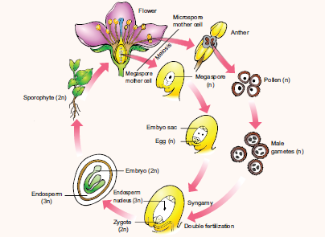
Box item
Pollen calendar shows the production of pollen by plants during different seasons. This benefits the allergic persons. Pollen grains cause allergic reactions like asthma, bronchitis, hay fever, allergic rhinitis etc., Parthenium hysterophorus L. OPEN BRACKET Family-Asteraceae CLOSE BRACKET is commonly called Carrot grass is a native of tropical America and was introduced into India as a contaminant along with cereal wheat. The pollen of this plant cause Allergy.
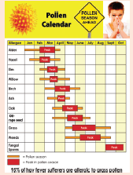
The receptacle becomes fleshy and edible around the fruit enclosing the seeds as in Pyrus malus OPEN BRACKET apple CLOSE BRACKET
The calyx may persist and enlarge OPEN BRACKET Solanum melongena CLOSE BRACKET or may cover the fruit OPEN BRACKET Physalis minima CLOSE BRACKET
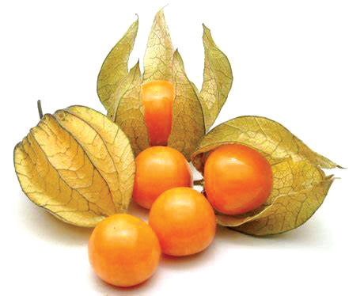
Physalis - Persistent calyx
The flower stalk or axis below the gynoecium enlarges into a juicy pear shaped body which is edible OPEN BRACKET Anacardium occidentale CLOSE BRACKET. The Perianth becomes fleshy as in Jack fruit.
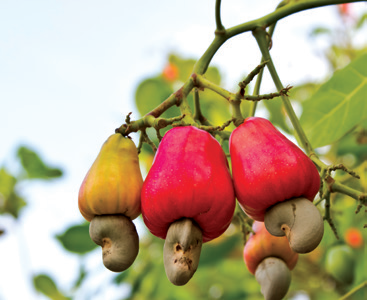
Anacardium - pedicel OPEN BRACKET edible CLOSE BRACKET
The cells present at the tip of the outer integument around the micropyle develop into a fleshy structure called caruncle. OPEN BRACKET Ricinus communis CLOSE BRACKET.
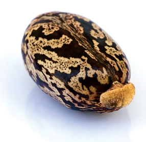
Ricinus – Caruncle
The funiculus develops into a fleshy structure which is often very colourful and called aril. OPEN BRACKET Myristica and Pithecellobium CLOSE BRACKET
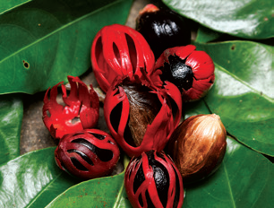
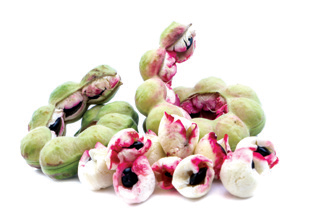
Myristica Pithecellobium
The nucellar tissue is either absorbed completely by the developing embryo sac and embryo or small portion may remain as storage tissue. Thus the remnant of nucellar tissue in the seed is called perisperm. Example: Black pepper and beet root

The Learner will be able to
Differentiate classical and modern genetics.
Understand the concepts of principles of inheritance.
Describe the extensions of Mendelism.
Explain polygenic inheritance and Pleiotropy.
Analyze extra chromosomal inheritance in cytoplasmic organelles.
2.1 Heredity and Variation
2.2 Mendelism
2.3 Monohybrid, Dihybrid, cross, Backcross and Testcross
2.4 Interaction of Genes
2.5 Polygenic inheritance in Wheat kernel colour, Pleiotropy – Pisum sativum
2.6Extra chromosomal inheritance- Cytoplasmic inheritance in Chloroplast.
2.7 Atavism
Genetics is the study of how living things receive common traits from previous generations. No field of science has changed the world more, in the past 50 years than genetics. The scientific and technological advances in genetics have transformed agriculture, medicine and forensic science etc.
Genetics – The Science of heredity OPEN BRACKET Inheritance CLOSE BRACKET - “Genetics” is the branch of biological science which deals with the mechanism of transmission of characters from parents to offsprings. The term Genetics was introduced by W. Bateson in 1906.
The four major subdisciplines of genetics are
1. Transmission Genetics SLASH Classical Genetics – Deals with the transmission of genes from parents to offsprings. The foundation of classical genetics came from the study of hereditary behaviour of seven genes by Gregor Mendel.
2. Molecular Genetics – Deals with the structure and function of a gene at molecular level.
3. Population Genetics – Deals with heredity in groups of individuals for traits which is determined by a few genes.
4. Quantitative Genetics – Deals with heredity of traits in groups of individuals where the traits are governed by many genes simultaneously.
What is the reason for similarities, differences of appearance and skipping of generations QUESTION MARK
Genes – Functional Units of inheritance: The basic unit of heredity OPEN BRACKET biological information CLOSE BRACKET which transmits biochemical, anatomical and behavioural traits from parents to offsprings.
Genetics is often described as a science which deals with heredity and variation.
Heredity is the transmission of characters from parents to offsprings.
The organisms belonging to the same natural population or species that shows a difference in the characteristics is called variation. Variation is of two types OPEN BRACKET 1 CLOSE BRACKET Discontinuous variation and OPEN BRACKET 2 CLOSE BRACKET Continuous variation
Within a population there are some characteristics which show a limited form of variation. Example: Style length in Primula, plant height of garden pea. In discontinuous variation, the characteristics are controlled by one or two major genes which may have two or more allelic forms. These variations are genetically determined by inheritance factors. Individuals produced by this variation show differences without any intermediate form between them and there is no overlapping between the two phenotypes. The phenotypic expression is unaffected by environmental conditions. This is also called as qualitative inheritance.
This variation may be due to the combining effects of environmental and genetic factors. In a population most of the characteristics exhibit a complete gradation, from one extreme to the other without any break. Inheritance of phenotype is determined by the combined effects of many genes, OPEN BRACKET polygenes CLOSE BRACKET and environmental factors. This is also known as quantitative inheritance. Example: Human height and skin color.
Importance of variations
Variations make some individuals better fitted in the struggle for existence.
They help the individuals to adapt themselves to the changing environment.
It provides the genetic material for natural selection
Variations allow breeders to improve better yield, quicker growth, increased resistance and lesser input.
They constitute the raw materials for evolution.
The contribution of Mendel to Genetics is called Mendelism. It includes all concepts brought out by Mendel through his original research on plant hybridization. Mendelian genetic concepts are basic to modern genetics. Therefore, Mendel is called as Father of Genetics.

Figure 2.1: Gregor Johann Mendel
The first Geneticist, Gregor Johann Mendel unraveled the mystery of heredity. He was born on 22nd July 1822 in Heinzendorf Silesia OPEN BRACKET now Hyncice, Czechosl ovakia CLOSE BRACKET , Austria. After school education, later he studied botany, physics and mathematics at the University of Vienna.He then entered a monastery of St.Thomas at Brunn in Austria and continued his interest in plant hybridization.In 1849 Mendel got a temporary position in a school as a teacher and he performed a series of elegant experiments with pea plants in his garden. In 1856, he started his historic studies on pea plants. 1856 to 1863 was the period of Mendel’s hybridization experiments on pea plants. Mendel discovered the principles of heredity by studying the inheritance of seven pairs of contrasting traits of pea plant in his garden. Mendel crossed and catalogued 24,034 plants through many generations. His paper entitled “Experiments on Plant Hybrids” was presented and published in The Proceedings of the Brunn Society of Natural History in 1866. Mendel was the first systematic researcher in the field of genetics.
Mendel was successful because:
He applied mathematics and statistical methods to biology and laws of probability to his
breeding experiments.
He followed scientific methods and kept accurate and detailed records that include quantitative data of the outcome of his crosses.
His experiments were carefully planned and he used large samples.
The pairs of contrasting characters which were controlled by factor OPEN BRACKET genes CLOSE BRACKETwere present on separate chromosomes. OPEN BRACKET Figure 2.4 CLOSE BRACKET
The parents selected by Mendel were pure breed lines and the purity was tested by self
crossing the progeny for many generations.
Mendel’s Experimental System – The Garden pea.
He chose pea plant because,
It is an annual plant and has clear contrasting characters that are controlled by a single gene separately.
Self-fertilization occurred under normal conditions in garden pea plants. Mendel used both self-fertilization and cross fertilization.
The flowers are large hence emasculation and pollination are very easy for hybridization.
Mendel’s theory of inheritance, known as the Particulate theory, establishes the existence of minute particles or hereditary units or factors, which are now called as genes. He performed artificial pollination or cross pollination experiments with several true-breeding lines of pea plants. A true breeding lines OPEN BRACKET Pure-breeding strains CLOSE BRACKET means it has undergone continuous self pollination having stable trait inheritance from parent to offspring. Matings within pure breeding lines produce offsprings having specific parental traits that are constant in inheritance and expression for many generations. Pure line breed refers to homozygosity only. Fusion of male and female gametes produced by the same individual that is pollen and egg are derived from the same plant is known as selffertilization. Self pollination takes place in Mendel’s peas.

Figure 2.2: Steps in cross pollination of pea flowers
The experimenter can remove the anthers OPEN BRACKET Emasculation CLOSE BRACKET before fertilization and transfer the pollen from another variety of pea to the stigma of flowers where the anthers are removed. This results in cross-fertilization, which leads to the creation of hybrid varieties with different traits. Mendel’s work on the study of the pattern of inheritance and the principles or laws formulated, now constitute the Mendelian Genetics.
The First Model Organism in Genetics – Garden Peas OPEN BRACKET Pisum sativum CLOSE BRACKET – Seven characters studied by Mendel.
Character |
Gene |
Dominant Trait |
Recessive Trait |
Plant height |
Le |
Tall |
Dwarf |
Pod shape |
V |
Inflated |
Constricted |
Seed shape |
R |
Round |
Wrinkled |
Cotyledon Colour |
I |
Yellow |
Green |
Flower position |
Fa |
Axial |
Terminal |
Flower colour |
A |
Purple |
White |
Pod colour |
GP |
Green |
Yellow |
|
|
|
|
Figure 2.3: Seven characters of Pisum sativum studied by Mendel.
Table 2.1 Seven characters of Pisum sativum with genes

Figure:2.4 mendel’s seven characters in garden peas, shown on the plant’s seven chromosomes
Mendel worked at the rules of inheritance and arrived at the correct mechanism before any knowledge of cellular mechanism, DNA, genes, chromosomes became available. Mendel insights and meticulous work into the mechanism of inheritance played an important role which led to the development of improved crop varieties and a revolution in crop hybridization.
Mendel died in 1884. In 1900 the work of Mendel’s experiments were rediscovered by three biologists, Hugo de Vries of Holland, Carlorrens of Germany and Erich von Tschermak of Austria.

Figure 2.5: Purple flower
Can you identify Mendel’s gene for regulating white colour in peas QUESTION MARK Let us find the molecular answer to understand the gene function. Now the genetic mystery of Mendel’s white flowers is solved. It is quite fascinating to trace the Mendel’s genes. In 2010, the gene responsible for regulating flower colour in peas were identified by an international team of researchers. It was called Pea Gene A which encodes a protein that functions as a transcription factor which is responsible for the production of anthocyanin pigment. So the flowers are purple. Pea plants with white flowers do not have anthocyanin, even though they have the gene that encodes the enzyme involved in anthocyanin synthesis. Researchers delivered normal copies of gene A into the cells of the petals of white flowers by the gene gun method. When Gene A entered in a small percentage of cells of white flowers it is expressed in those particular cells, accumulate anthocyanin pigments and became purple. In white flowers the gene A sequence showed a single-nucleotide change that makes the transcription factor inactive. So the mutant form of gene A do not accumulate anthocyanin and hence they are white.
Mendel noticed two different expressions of a trait – Example: Tall and dwarf. Traits are expressed in different ways due to the fact that a gene can exist in alternate forms OPEN BRACKET versions CLOSE BRACKET for the same trait is called alleles.
If an individual has two identical alleles of a gene, it is called as homozygousOPEN BRACKET TT CLOSE BRACKET. An individual with two different alleles is called heterozygousOPEN BRACKET Tt CLOSE BRACKET. Mendels non-true breeding plants are heterozygous, called as hybrids.
When the gene has two alleles the dominant allele is symbolized with capital letter and the recessive with small letter. When both alleles are recessive the individual is called homozygous recessive OPEN BRACKET tt CLOSE BRACKET dwarf pea plants. An individual with two dominant alleles is called homozygous dominant OPEN BRACKET TT CLOSE BRACKET tall pea plants. One dominant allele and one recessive allele OPEN BRACKET Tt CLOSE BRACKET denotes nontrue breeding tall pea plants heterozygous tall.
Mendel proposed two rules based on his observations on monohybrid cross, today these rules are called laws of inheritance The first law is The Law of Dominance and the second law is The Law of Segregation. These scientific laws play an important role in the history of evolution.
The characters are controlled by discrete units called factors which occur in pairs. In a dissimilar pair of factors one member of the pair is dominant and the other is recessive. This law gives an explanation to the monohybrid cross OPEN BRACKET a CLOSE BRACKET the expression of only one of the parental characters in F1 generation and OPEN BRACKET b CLOSE BRACKET the expression of both in the F2 generation. It also explains the proportion of 3:1 obtained at the F2
Alleles do not show any blending, both characters are seen as such in the F2 generation although one of the characters is not seen in the F1 generation. During the formation of gametes, the factors or alleles of a pair separate and segregate from each other such that each gamete receives only one of the two factors. A homozygous parent produces similar gametes and a heterozygous parent produces two kinds of gametes each having one allele with equal proportion. Gametes are never hybrid.
Monohybrid inheritance is the inheritance of a single character that is. plant height It involves the inheritance of two alleles of a single gene. When the F1 generation was selfed Mendel noticed that 787 of 1064 F2 plants were tall, while 277 of 1064 were dwarf. The dwarf trait disappeared in the F1 generation only to reappear in the F2 generation The term genotype is the genetic constitution of an individual. The term phenotype refers to the observable characteristic of an organism. In a genetic cross the genotypes and phenotypes of offspring, resulting from combining gametes during fertilization can be easily understood with the help of a diagram called Punnett’s Square named after a British Geneticist Reginald C.Punnett It is a graphical representation to calculate the probability of all possible genotypes of offsprings in a genetic cross.The Law of Dominance and the Law of Segregation give suitable explanation to Mendel’s monohybrid cross.
Parent generation open bracket True Tall breeding capital T capital T close bracket open bracket True Dwarf breeding small t small t close bracket
F 1 generation capital T samll t open bracket tall close bracket capital T samll t open bracket tall close bracket
capital T samll t open bracket tall close bracket capital T samll t open bracket tall close bracket
F 1 Selfed open bracket capital T samll t cross capital T samll t close bracket
F 2 generation capital T capital T homozygous tall plant open bracket capital T capital T close bracket Heterozygous tall plant open bracket capital T samll t close bracket
Heterozygous tall plant open bracket capital T samll t close bracket Homozygous dwarf plant open bracket small t small t
Close bracket
Offspring open bracket F 2 genotypes capital T capital T capital T samll t small t small t
Genotypic Ratio 1 isto 2 Tall isto 1 Dwarf
Phenotypic Ratio 3 isto 1
Figure 2. 6: Monohybrid Cross
In one experiment, the tall pea plants were pollinated with the pollens from a true-breeding dwarf plants, the result was all tall plants. When the parental types were reversed, the pollen from a tall plant was used to pollinate a dwarf pea plant which gave only tall plants. The result was the same - All tall plants. Tall OPEN BRACKET T CLOSE BRACKET into Dwarf OPEN BRACKET D CLOSE BRACKET and Tall OPEN BRACKET T CLOSE BRACKET into Dwarf OPEN BRACKET D CLOSE BRACKET matings are done in both ways which are called reciprocal crosses.The results of the reciprocal crosses are the same. So it was concluded that the trait is not sex dependent. The results of Mendel’s monohybrid crosses were not sex dependent.
The gene for plant height has two alleles: Tall OPEN BRACKET T CLOSE BRACKET into Dwarf OPEN BRACKET t CLOSE BRACKET. The phenotypic and genotypic analysis of the crosses has been shown by Checker board method or by Forkline method.
Mendel chose two contrasting traits for each character. So it seemed logical that two distinct factors exist. In F1 the recessive trait and its factors do not disappear and they are hidden or masked only to reappear in ¼ of the F2 generation. He concluded that tall and dwarf alleles of F1 heterozygote segregate randomly into gametes. Mendel got 3:1 ratio in F2 between the dominant and recessive trait. He was the first scientist to use this type of quantitative analysis in a biological experiment. Mendel’s data is concerned with the proportions of offspring.
Test cross is crossing an individual of unknown genotype with a homozygous recessive.
If heterozygous tall test cross
Parental open bracket P close bracket F 1 Heterozygous tall cross Homozygous dwar
Phenotypes
Genotypes capital T small t small t small t
Gametes capital T small t small t small t
Offspring F 2 genotypes capital T small t small t small t
Geneotypic Ratio 1 isto 1
Phenotypes Tall Dwarf
Phenotypic Ratio 1 isto 1
capital T samll t Heterozygous tall Plant open bracket capital T samll t close bracket capital T samll t Heterozygous tall plant open bracket capital T samll t close bracket
Capital T small t Heterozygous tall Plant open bracket capital T samll t close bracket capital T samll t Heterozygous tall Plant open bracket capital T samll t close bracket
The genotypes of tall plants capital T capital T or T t from F 1and F 2 cannot be predicted. But how we can tell if a tall plant is homozygous or heterozygous QUESTION MARK To determine the genotype of a tall plant Mendel crossed the plants from F 2 with the homozygous recessive dwarf plant. This he called a test cross. The progenies of the test cross can be easily analysed to predict the genotype of the plant or the test organism. Thus in a typical test cross an organism OPEN BRACKET pea plants CLOSE BRACKET showing dominant phenotype OPEN BRACKET whose genotype is to be determined CLOSE BRACKET is crossed with the recessive parent instead of self crossing. Test cross is used to identify whether an individual is homozygous or heterozygous for dominant character.
Why Mendel’s pea plants are tall and dwarf QUESTION MARK Find out the molecular explanation.
Molecular characterization of Mendel’s gene for plant height.
The plant height is controlled by a single gene with two alleles. The reason for this difference in plant height is due to the following facts:
OPEN BRACKET 1 CLOSE BRACKET the cells of the pea plant have the ability to convert a precursor molecule of gibberellins into an active form OPEN BRACKET G A 1 CLOSE BRACKET
OPEN BRACKET 2 CLOSE BRACKET Tall pea plants have one allele OPEN BRACKET Le CLOSE BRACKET that codes for a protein OPEN BRACKET functional enzyme CLOSE BRACKET which functions normally in the gibberellin-synthesis pathway and catalyzes the formation of gibberellins OPEN BRACKET GA1 CLOSE BRACKET.
The allele is dominant even if it is two OPEN BRACKET Le Le CLOSE BRACKET or single OPEN BRACKET Le le CLOSE BRACKET, it produces gibberellins and the pea plants are tall. Dwarf pea plants have two recessive alleles OPEN BRACKET le le CLOSE BRACKET which code for non-functional protein, hence they are dwarf.
Gene for plant height in Peas
Tall pea Plants open bracket Le Le slash Le le close bracket Dwarf pea plant open bracket le le close bracket
Gibberellin precursor molecule gives G A 1 active gibberellins Gibberellin Precursor molecule gives Gibberellins are not produced
Le allele codes fir fuctional enzyme G A 1 Le akkeke codes for nonfunctional enzyme
Figure 2.8: Gene for plant height in Peas
Back cross is a cross of F 1 hybrid with any one of the parental genotypes. The back cross is of two types; they are dominant back cross and recessive back cross.
It involves the cross between the F 1 offspring with either of the two parents.
When the F1offsprings are crossed with the dominant parents all the F2 develop dominant character and no recessive individuals are obtained in the progeny.
If the F 1 hybrid is crossed with the recessive parent individuals of both the phenotypes appear in equal
proportion and this cross is specified as test cross.
The recessive back cross helps to identify the heterozygosity of the hybrid.
It is a genetic cross which involves individuals differing in two characters. Dihybrid inheritance is the inheritance of two separate genes each with two alleles.
Homozygous Round seeds Yellow cotyledon multiply Homozygous wrinkled seeds Green cotyledon
Parental capital R capital R capital Y capital Y Meiosis small r small r small y small y Meiosis
Gametes Fused with capital R capital Y small r small y the Progeny
F 1 generation capital R small r capital Y small y
Heterozygous
Round seeds Yellow cotyledon
Capital Rsmall r capital Y small y cross capital R small r capital Y small y
Gametes capital R Y capital R small y small r capital Y small r capital Y capital R Y capital R small y small r capital Y small r capital y
Selfed Genes are present on separate chromosomes and random assortment takes place. So four diferent types of gametes in equal proportions are formed. Law of independent assortment.
Figure 2.9: Dihybrid cross – Segregation of gametes
When two pairs of traits are combined in a hybrid, segregation of one pair of characters is independent to the other pair of characters. Genes that are located in different chromosomes assort independently during meiosis. Many possible combinations of factors can occur in the gametes. Independent assortment leads to genetic diversity. If an individual produces genetically dissimilar gametes it is the consequence of independent assortment. Through independent assortment, the maternal and paternal members of all pairs were distributed to gametes, so all possible chromosomal combinations were produced leading to genetic variation. In sexually reproducing plants SLASH organisms, due to independent assortment, genetic variation takes place which is important in the process of evolution. The Law of Segregation is concerned with alleles of one gene but the Law of Independent Assortment deals with the relationship between genes.
The crossing of two plants differing in two pairs of contrasting traits is called dihybrid cross. In dihybrid cross, two characters OPEN BRACKET colour and shape CLOSE BRACKET are considered at a time. Mendel considered the seed shape OPEN BRACKET round and wrinkled CLOSE BRACKET and cotyledon colour OPEN BRACKET yellow & green CLOSE BRACKET as the two characters. In seed shape round OPEN BRACKET R CLOSE BRACKET is dominant over wrinkled OPEN BRACKET r CLOSE BRACKET ; in cotyledon colour yellow OPEN BRACKET Y CLOSE BRACKET is dominant over green OPEN BRACKET y CLOSE BRACKET. Hence the pure breeding round yellow parent is represented by the genotype RRYY and the pure breeding green wrinkled parent is represented by the genotype rryy. During gamete formation the paired genes of a character assort out independently of the other pair.
Parent Generation Parental Phenotype parent 1 female Round seeds Yellow cotyledon cross parent 2 male wrinkled seeds green cotyledon
Diploid parental genotype capital R capital R capital Y capital Y small r small r small r small y small y
Haploid gametes capital R Capital Y cross small r small y
F 1 generation gametes the fused with Capital R capital Y smll r small y the progeny capital R small r Capital Y small y
F 1 phenotype : All round seeds Yellow cotyledon
F 1 genotype : All capital R small r capital Y small y
F 1 generation open bracket selfed close bracket female Round seeds Yellow cotyledon Capital R small r capital Y small y cross male Round seeds Yellow cotyledon capital Y small r capital Y small y
Haploid F 1 gametes capital R small y capital R small y small r capital Y small r small y capital R capital Y capital R small y small r capital y
Female F 1 gametes |
Capital R capital Y |
Capital R small y |
Small r capital Y |
Small r small y |
Male F 1 gametes |
|
|
|
|
Capital R capital Y |
Capital R capital R capital y small y |
Capital R small r capital Y capital Y |
Capital R small r capital Y capital Y |
Capital R small r capital Y small y |
Capital R small y |
Capital R capital R capital Y small y |
Capital R capital R small Y small y |
Capital R small r capital Y small y |
Capital R small r small y small y |
Small r capital Y |
Capital R small r capital Y capital Y |
Capital R small r capital Y small y |
Small r small r capital y capital y |
Small r small r capital y small y |
Small r small y |
Capital R small r capital Y small y |
Capital R small r small y small y |
Small r small r capital y small y |
Small r small r small y smally |
Figure 2.10: Dihybrid Cross in Garden peas
During theF1 by F1 fertilization each zygote with an equal probability receives one of the four combinations from each parent. The resultant gametes thus will be genetically different and they are of the following four types:
1 CLOSE BRACKET Yellow round OPEN BRACKET YR CLOSE BRACKET - 9 by 16
2 CLOSE BRACKET Yellow wrinkled OPEN BRACKET Yr CLOSE BRACKET - 3 by 16
3 CLOSE BRACKET Green round OPEN BRACKET yR CLOSE BRACKET- 3 by 16
4 CLOSE BRACKET Green wrinkled OPEN BRACKET yr CLOSE BRACKET - 1 by 16
These four types of gametes of F1 dihybrids unite randomly in the process of fertilization and produce sixteen types of individuals in F2 in the ratio of 9:3:3:1 as shown in the figure. Mendel’s 9:3:3:1 dihybrid ratio is an ideal ratio based on the probability including segregation, independent assortment and random fertilization. In sexually reproducing organism SLASH plants from the garden peas to human beings, Mendel’s findings laid the foundation for understanding inheritance and revolutionized the field of biology. The dihybrid cross and its result led Mendel to propose a second set of generalisations that we called Mendel's Law of independent assortment.
Box item
How does the wrinkled gene make Mendel’s peas wrinkled QUESTION MARK Find out the molecular explanation.
The protein called starch branching enzyme OPEN BRACKET SBEI CLOSE BRACKET is encoded by the wild-type allele of the gene OPEN BRACKET RR CLOSE BRACKET which is dominant. When the seed matures, this enzyme SBEI catalyzes the formation of highly branched starch molecules. Normal gene OPEN BRACKET R CLOSE BRACKET has become interrupted by the insertion of extra piece of DNA OPEN BRACKET 0.8 kb CLOSE BRACKET into the gene, resulting in r allele. In the homozygous mutant form of the gene OPEN BRACKET rr CLOSE BRACKET which is recessive, the activity of the enzyme SBEI is lost resulting in wrinkled peas. The wrinkled seed accumulates more sucrose and high-water content. Hence the osmotic pressure inside the seed rises. As a result, the seed absorbs more water and when it matures it loses water as it dries. So, it becomes wrinkled at maturation. When the seed has atleast one copy of normal dominant gene heterozygous, the dominant allele helps to synthesize starch, amylopectin an insoluble carbohydrate, with the osmotic balance which minimises the loss of water resulting in smooth structured round seed.
The wrinkled gene make Mendel’s peas wrinkled

Figure 2.11: Molecular explanation of round and wrinkled peas.
The Dihybrid test cross
The F 1 hybrid plant open bracket round yellow peas close bracket is crossed with homozygous double recessive geneotype, wrinkled greedn peas open bracket small r small r small y small y close bracket . This is called dihybrid test cross with the ratio of 1 is to 1 is to 1 is to 1 .
Parental open bracket P close bracket phenotypes F 1 Heterozygous round jpeas Yeloow cotyledon cross Homozygous Wrinkled peas Green cotyledon
Genotypes capial R small r capital y small y cross small r small r small y small y
gametes Capital R capital Y Capital R small y small y capital y small r small y small r small r small y small r small y small r small y
Gamestes |
Capital R capital Y |
Capial R small y |
Small r capital Y |
Small r small y |
All small r small y |
Capital r small r capital Y small y round Yellow |
Capital R small r small y small y roung Green |
Small r small r capital y small y wrinkled yellow |
Small r small r small y small y wrinkled Green |
Genotypes Genotypic capital R small r capital y small y capital R small r small y small y small r small r capital y small y small r small r small y small y
ratio 1 is to 1 is to 1 is to 1
Phenotypes round yellow round yellow Green wrinkled yellow wrinkled Green
Phenotypic ratio 25 percentage 25 percentage 25 percentage 25 percentage
Figure 2.12: Dihybrid test cross
Apart from monohybrid, dihybrid and trihybrid crosses, there are exceptions to Mendelian principles, that is, the occurrence of different phenotypic ratios. The more complex patterns of inheritance are the extensions of Mendelian Genetics. There are examples where phenotype of the organism is the result of the interactions among genes.
A single phenotype is controlled by more than one set of genes, each of which has two or more alleles. This phenomenon is called Gene Interaction. Many characteristics of the organism including structural and chemical which constitute the phenotype are the result of interaction between two or more genes.
Mendelian experiments prove that a single gene controls one character. But in the post Mendelian findings, various exception have been noticed, in which different types of interactions are possible between the genes. This gene interaction concept was introduced and explained by W. Bateson. This concept is otherwise known as Factor hypothesis or Bateson’s factor hypothesis. According to Bateson’s factor hypothesis, the gene interactions can be classified as
Intragenic gene interactions or Intra allelic or allelic interactions
Intergenic gene interactions or inter allelic or non-allelic interactions

Gene interactions
1 Intralocus interactions open bracket Allelic interactions close bracket
Roman letter 1 Dominant relationship
a Complete dominance example : Tall and dwarf pea plants
b Incomplete dominance
c Codominance
d Over dominance
Roman letter 2 Lethal Genes
a Dominant lethals
b Recessive lethals
c Conditional lethals
d sex linked lethals
e balanced lethals
Roman letter 3 Multiple alleles
Figure 2.13: Gene Interaction
Interactions take place between the alleles of the same gene that is, alleles at the same locus is
called intragenic or intralocus gene interaction. It includes the following:
1 CLOSE BRACKET Incomplete dominance
OPEN BRACKET 2 CLOSE BRACKET Codominance
OPEN BRACKET 3 CLOSE BRACKET Multiple alleles
OPEN BRACKET 4 CLOSE BRACKET Pleiotropic genes are common examples for intragenic interaction.
The German Botanist Carl Correns’s OPEN BRACKET 1905 CLOSE BRACKET Experiment - In 4 O’ clock plant, Mirabilis jalapa when the pure breeding homozygous red OPEN BRACKET R1R1 CLOSE BRACKET parent is crossed with homozygous white OPEN BRACKET R2R2 CLOSE BRACKET, the phenotype of the F1 hybrid is heterozygous pink OPEN BRACKET R1R2 CLOSE BRACKET. The F1 heterozygous phenotype differs from both the parental homozygous phenotype. This cross did not exhibit the character of the dominant parent but an intermediate colour pink. When one allele is not completely dominant to another allele it shows incomplete dominance. Such allelic interaction is known as incomplete dominance. F1 generation produces intermediate phenotype pink coloured flower. When pink coloured plants of F1 generation were interbred in F2 both phenotypic and genotypic ratios were found to be identical as 1 : 2 : 1OPEN BRACKET 1 red : 2 pink : 1 white CLOSE BRACKET. Genotypic ratio is 1 R1R1 : 2 R1R2 : 1 R2R2.From this we conclude that the alleles themselves remain discrete and unaltered proving theMendel’s Law of Segregation. The phenotypic and genotypic ratios are the same. There is no blending of genes. In the F2 generation R1 and R2 genes segregate and recombine to produce red, pink and white in the ratio of 1 : 2 : 1. R1 allele codes for an enzyme responsible for the formation of red pigment. R2 allele codes for defective enzyme. R1 and R2 genotypes produce only enough red pigments to make the flower pink. Two R1R1 are needed for producing red flowers. Two R2 R2 genes are needed for white flowers. If blending had taken place, the original pure traits would not have appeared and all F2 plants would have pink flowers. It is very clear that Mendel’s particulate inheritance takes place in this cross which is confirmed by the reappearance of original phenotype in F 2.
parent generation capital R 1 capital R 1 open bracket Red close bracket capital R 2 Capital R 2 open bracket white close bracket
F 1 generation capital R 1 capial R 2 open bracket selfed close bracket intermediate phenotype Pink heterozygote
Capital R 1 Capital R 2
Capital R 1 |
Capital R 1 Capital R 1 |
Capital R 1 Capital R 2 |
Capital R 2 |
Capital R 1 Capital R 2 |
Capital R 2 Capital R 2 |
Figure 2. 14: Incomplete dominance in 4 O’ clock plant
This pattern occurs due to simultaneous OPEN BRACKET joint CLOSE BRACKET expression of both alleles in the heterozygote - The phenomenon in which two alleles are both expressed in the heterozygous individual is known as codominance. Example: Red and white flowers of Camellia, inheritance of sickle cell haemoglobin, A B O blood group system in humanbeings. In humanbeings, IA and IB alleles of I gene are codominant which follows Mendels law of segregation. The codominance was demonstrated in plants with the help of electrophoresis or chromatography for protein or flavonoid substance. Example: Gossypium hirsutum and Gossypium sturtianum, their F1 hybrid OPEN BRACKET amphiploid CLOSE BRACKET was tested for seed proteins by electrophoresis. Both the parents have different banding patterns for their seed proteins. In hybrids, additive banding pattern was noticed. Their hybrid shows the presence of both the types of proteins similar to their parents. The heterozygote genotype gives rise to a phenotype distinctly different from either of the homozygous genotypes. The F1 heterozygotes produce a F2 progeny in a phenotypic and genotypic ratios of 1 : 2 : 1.
Box item
How are we going to interpret the lack of dominance and give explanation to the intermediate heterozygote phenotype QUESTION MARK
How will you explain incomplete dominance at the molecular level QUESTION MARK
Gene expression is explained in a quantitative way. Wild-type allele which is a functional allele when present in two copies OPEN BRACKET R1 R1 CLOSE BRACKET produces an functional enzyme which synthesizes red pigments. The mutant allele which is a defective allele in two copies OPEN BRACKET R2 R2 CLOSE BRACKET produces an enzyme which cannot synthesize necessary red pigments. The white flower is due to the mutation causing complete loss of function. The F1 intermediate phenotype heterozygote OPEN BRACKET R1R2 CLOSE BRACKET has one copy of the allele R1. R1 produces 50 percentage of the functional protein resulting in half of the pigment of red flowered plant and so it is pink. The intermediate phenotype pink heterogyzote with 50 percentage of functional protein is not enough to create the red phenotype homozygous, which makes 100 percentage of the functional protein.
An allele which has the potential to cause the death of an organism is called a “Lethal Allele”. In 1907, E. Baur reported a lethal gene in snapdragon OPEN BRACKET Antirrhinum sp. CLOSE BRACKET. It is an example for recessive lethality. In snapdragon there are three kinds of plants.
1. Green plants with chlorophyll. OPEN BRACKET capital C capital C CLOSE BRACKET
2. Yellowish green plants with carotenoids are referred to as pale green, golden or aurea plants OPEN BRACKET capital C small c CLOSE BRACKET
3. White plants without any chlorophyll. OPEN BRACKET cc CLOSE BRACKET
The genotype of the homozygous green plants is CC. The genotype of the homozygous white plant is cc.
The aurea plants have the genotype Cc because they are heterozygous of green and white plants. When two such aurea plants are crossed the F1 progeny has identical phenotypic and genotypic ratio of 1 is to 2 is to 1 OPEN BRACKET that is, 1 Green OPEN BRACKET CC CLOSE BRACKET : 2 Aurea OPEN BRACKET Cc CLOSE BRACKET : 1 White OPEN BRACKET cc CLOSE BRACKET CLOSE BRACKET
F 1 Heterozygote Antirrhinum aurea cross Antirrhinum aurea
capital C small c cross Capital c small c
F 2 1 capital c capital c is to 2 capital c small c is to 1 small c small c
green auea white open bracket lethal close bracket
Figure: 2.15: Lethal genes
Since the white plants lack chlorophyll pigment, they will not survive. So the F2 ratio is modified into 1 : 2. In this case the homozygous recessive genotype OPEN BRACKET cc CLOSE BRACKET is lethal. The term “lethal” is applied to those changes in the genome of an organism which produces effects severe enough to cause death. Lethality is a condition in which the death of certain genotype occurs prematurely. The fully dominant or fully recessive lethal allele kills the carrier individual only in its homozygous condition. So the F2 genotypic ratio will be 2 : 1 or 1 : 2 respectively.
In Pleiotropy, the single gene affects multiple traits and alter the phenotype of the organism. The Pleiotropic gene influences a number of characters simultaneously and such genes are called pleiotropic gene. were crossed with a variety of peas having white flowers, light coloured seeds and no spot on the axils of the leaves, the three traits for flower colour, seed colour and a leaf axil spot all were inherited together as a single unit. Another example is: sickle cell anemia.

Interlocus interactions take place between the alleles at different loci i.e between alleles of different genes.It includes the following:
Dominant Epistasis – It is a gene interaction in which two alleles of a gene at one locus interfere and suppress or mask the phenotypic expression of a different pair of alleles of another gene at another locus. The gene that suppresses or masks the phenotypic expression of a gene at another locus is known as epistatic. The gene whose expression is interfered by non-allelic genes and prevents from exhibiting its character is known as hypostatic. When both the genes are present together, the phenotype is determined by the epistatic gene and not by the hypostatic gene. In the summer squash the fruit colour locus has a dominant allele ‘W’ for white colour and a recessive allele ‘w’ for coloured fruit. ‘W’ allele is dominant that masks the expression of any colour. In another locus hypostatic allele ‘G’ is for yellow fruit and its recessive allele ‘g’ for green fruit. In the first locus the white is dominant to colour where as in the second locus yellow is dominant to green. When the white fruit with genotype WWgg is crossed with yellow fruit with genotype wwGG, the F1 plants have white fruit and are heterozygous OPEN BRACKET WwGg CLOSE BRACKET. When F1 heterozygous plants are crossed they give rise to F2 with the phenotypic ratio of 12 white : 3 yellow : 1 green.
parent generation white fruit capital W capital W small g small g cross yellow fruit small w small w capital G capital G
Gametes captial W small g small capital G
F 1 open bracket selfed close bracket white fruit capital W small w capital G
F 2
|
Capital W capital G |
Capital W small g |
Small w capital G |
Small w small g |
Capital W capital G |
Capital W capital W Capital G capital G white |
Capital W capital W Capital G small g white |
Capital W small w Capital G capital G white |
Capital W small w Capital G small g white |
Capital W small g |
Capital W capital W Capital G small g white |
Capital W capital W small g small g white |
Capital W small w Capital G small G white |
Capital W small w small g small g white |
Small w capital G |
Capital W small w Capital G capital G white |
Capital W small w Capital G small g white |
Small w small w capital G capital G Yellow |
Small w small w capital G small g yellow |
Small w small g |
Capital W small w Capital G small g white |
Capital W small w small g small g white |
Small w small w capital G small g yellow |
Small w small w small g small g Green |
Phenotypes White fruit Yellow fruit Green fruit
Phenotypic ratio 12 is to 3 is to 1
Figure 2. 16: Dominant epistasis in summer squash
Since W is epistatic to the allele’s ‘G’ and ‘g’, the white which is dominant, masks the effect of yellow or green. Homozygous recessive ww genotypes only can give the coloured fruits OPEN BRACKET 4 by 16 CLOSE BRACKET. Double recessive ‘wwgg’ will give green fruit OPEN BRACKET 1 by 16 CLOSE BRACKET. The Plants having only ‘G’ in its genotype OPEN BRACKET wwGg or wwGG CLOSE BRACKET will give the yellow fruit OPEN BRACKET 3 by 16 CLOSE BRACKET.
Intra genic or allelic interaction
Serial number |
Gene interaction |
Example |
F2 Phenotypic ratio |
Serial number 1 |
Incomplete
Dominance |
Flower colourin Mirabilis jalapa.
Flower colour in snapdragon OPEN BRACKET Antirrhinum spp. CLOSE BRACKET
|
1 is to 2 is to 1
1 is to 2 is to 1 |
Serial number 2 |
Codominance |
ABO Blood group system in humans
|
1 is to 2 is to 1 |
Inter-genic or non-allelic interaction
Serial number |
Epistatic interaction |
Example |
F2 Ratio Phenotypic ratio |
Serial number 1 |
Dominant epistasis |
Fruit colour in summer squash |
12 is to 3 is to 1 |
Serial number 2 |
Recessive epistasis |
Flower colour of Antirrhinum spp. |
9 is to 3 is to 4 |
Serial number 3 |
Duplicate genes with cumulative effect |
Fruit shape in summer squash |
9 is to 6 is to 1 |
Serial number 4 |
Complementary genes |
Flower colour in sweet peas |
9 is to 7 |
Serial number 5 |
Supplementary genes |
Grain colour in Maize |
9 is to 3 is to 4 |
Serial number 6 |
Inhibitor genes |
Leaf colour in rice plants |
13 is to 3 |
Serial number 7 |
Duplicate genes |
Seed capsule shape OPEN BRACKET fruit shape CLOSE BRACKET in shepherd’s purse Bursa bursa-pastoris |
15 is to 1 |
Parent generation Dark Red capital R1 capital R1 capital R2 capital R2 cross white small r1 small r1 small r2 small r2
F 1 generation medium Red capital r1 small r1 capital r2 small r2
F 1 gneration open bracket selfed close bracket
capital r2 small r1 capital r2 small r2 cross capital r1 small r1 capital r2small r2
male capital r1 small r2 capital R2 small r2 small r1 capitalR2 small r1 small r2
Female |
|
|
|
|
Capital r1 capital r2 |
Capital r1 capitalr1 capital R2 Capital R2 |
Capital R1 capital R1 small R2 |
Capital R1 small r1 capital R2 capital R2 |
Capital R1 small r1 capital r2 small r2 |
Capital r1 small r2 |
Capital R1 capital R1 small r2 small r2 |
Capital R1 small r1 capital R2 small r2 |
Capital R1 small r1 small r2 small r2 |
Capital R1 small r1 small r2 small r2 |
Small r1 capital r2 |
Capital R1 small r1 capital R2 capital R2 |
Capital R1 small r1 capital R2 small r2 |
Small r1 small r1 capital R2 capital R2 |
Small r1 small r1 capital R2 small r2 |
Small r1 small r2 |
Capital R1 small r1 capital R2 small r2 |
Capital R2 small r1 small r1 small r2 |
Small r1 small r1 capital R2 small r2 |
Small r1 small r1 small r2 small r2 |
The data produce a bell shaped curve. which demonstrate continuous variation in wheat kernel from dark red to white in F 2
Dark Red gives wheat kernel colour the result in white
Figure 2.16 OPEN BRACKET a CLOSE BRACKET: Polygenic inheritance in wheat kernel colour
Polygenic inheritance - Several genes combine to affect a single trait.
A group of genes that together determine OPEN BRACKET contribute CLOSE BRACKET a characteristic of an organism is called polygenic inheritance. It gives explanations to the inheritance of continuous traits which are compatible with Mendel’s Law. The first experiment on polygenic inheritance was demonstrated by Swedish Geneticist H. Nilsson - Ehle OPEN BRACKET 1909 CLOSE BRACKET in wheat kernels. Kernel colour is controlled by two genes each with two alleles, one with red kernel colour was dominant to white. He crossed the two pure breeding wheat varieties dark red and a white. Dark red genotypes R1R1R2R2 and white genotypes are r1r1r2r2. In the F1 generation medium red were obtained with the genotype R1r1R2r2. F1 wheat plant produces four types of gametes R1R2, R1r2, r1R2, r1r2. The intensity of the red colour is determined by the number of R genes in the F2 generation.
Four R genes: A dark red kernel colour is obtained.
Three R genes: Medium - dark red kernel colour is Obtained.
Two R genes : Medium red kernel colour is obtained.
One R gene: Light red kernel colour is obtained.
Absence of R gene: Results in White kernel colour. The R gene in an additive manner produces the red kernel colour. The number of each phenotype is plotted against the intensity of red kernel colour which produces a bell Shaped curve. This represents the distribution of phenotype. Other example: Height and skin colour in humans are controlled by three pairs of genes.
Parents capital R1 capital R1 Captial R2 capital R2 dark red cross white small r1 small r1 small r2 small r2
F 1 capital R1 small r1 capital R2 small r2 medium red
F 2 genotype phenotype
1 Capital R1 capital R1 capital R2 Capital R2 Dark red
2 Capital R1 capital R1 capital R2 small R2
2 capital R1 small r1 capital R2 capital R2 the total 4 medium dark red , medium dark red
4 capital R1 small r1 capital R2 small r2 medium red
1 capital R1 Capital R1 small r2 small r2 medium red
1 small r1 small r1 capital R2 Capital R2 the total 6 medium red
2 capital R1 small r1 small r2 small r2 light red
2 small r1 small r1 capital R2 small r2 the total 4 light red
1 small r1 small r1 small r2 small r2 white
Figure 2.17 OPEN BRACKET b CLOSE BRACKET : The genetic control of colour in wheat kernels
Finally the loci that was studied by Nilsson – Ehle were not linked and the genes assorted independently.
Later, researchers discovered the third gene that also affect the kernel colour of wheat. The three independent pairs of alleles were involved in wheat kernel colour. Nilsson – Ehle found the ratio of 63 red : 1 white in F2 generation – 1 : 6 : 15 : 20 : 15 : 6 : 1 in F2 generation. From the above results Nilsson – Ehle showed that the blending inheritance was not taking place in the kernel of wheat. In F2 generation plants have kernels with wide range of colour variation. This is due to the fact that the genes are segregating and recombination takes place. Another evidence for the absence of blending inheritance is that the parental phenotypes dark red and white appear again in F2. There is no blending of genes, only the phenotype. The cumulative effect of several pairs of gene interaction gives rise to many shades of kernel colour. He hypothesized that the two loci must contribute additively to the kernel colour of wheat. The contribution of each red allele to the kernel colour of wheat is additive.
parents capital A capital A Capital B Capital B Capital C Capital C Dark red wheat kernel cross small a small a
small b small b small c small c white wheat kernel
F 1 capial A small a Capital B small b capital C small c intermediate red open bracket selfed close bracket
F 2
1 |
6 |
15 |
20 |
15 |
6 |
1 |
Dark red |
Moderated red |
Red |
Intermediate red |
Light red |
Very light red |
white |
63 red open bracket many shades close bracket 1 white
Figure 2.18: Polygenic inheritance in Wheat kernel
OPEN BRACKET Cytoplasmic Inheritance CLOSE BRACKET
DNA is the universal genetic material. Genes located in nuclear chromosomes follow Mendelian inheritance. But certain traits are governed either by the chloroplast or mitochondrial genes. This phenomenon is known as extra nuclear inheritance. It is a kind of Non - Mendelian inheritance.
Since it involves cytoplasmic organelles such as chloroplast and mitochondrion that act as inheritance vectors, it is also called Cytoplasmic inheritance. It is based on independent, self-replicating extra chromosomal unit called plasmogene located in the cytoplasmic organelles, chloroplast and mitochondrion.
Chloroplast Inheritance
Dark Green leaved plant open bracket male close bracket cross pale Green leaved plant open bracket female close bracket ganetes fused with the progeny F 1 pale Green leaved
pale green leaved plant open bracket male close bracket cross dark green leaved plant open bracket female close bracket gantes fused with the progeny F 1 dark green leaved
Figure 2.19: Chloroplast inheritance
It is found in 4 O’ Clock plant OPEN BRACKET Mirabilis jalapa CLOSE BRACKET. In this, there are two types of variegated leaves namely dark green leaved plants and pale green leaved plants. When the pollen of dark green leaved plant OPEN BRACKET male CLOSE BRACKET is transferred to the stigma of pale green leaved plant OPEN BRACKET female CLOSE BRACKET and pollen of pale green leaved plant is transferred to the stigma of dark green leaved plant, the F1 generation of both the crosses must be identical as per Mendelian inheritance. But in the reciprocal cross the F1 plant differs from each other. In each cross, the F1 plant reveals the character of the plant which is used as female plant This inheritance is not through nuclear gene. It is due to the chloroplast gene found in the ovum of the female plant which contributes the cytoplasm during fertilization since the male gamete contribute only the nucleus but not cytoplasm.

Figure 2. 20: A cellular explanation of the variegated phenotype of the leaves in Mirabilis jalapa
Recently it has been discovered that cytoplasmic genetic male sterility is common in many plant species. This sterility is maintained by the influence of both nuclear and cytoplasmic genes. There are commonly two types of cytoplasm N OPEN BRACKET normal CLOSE BRACKET and S OPEN BRACKET sterile CLOSE BRACKET. The genes for these are found in mitochondrion. There are also restores of fertility OPEN BRACKET Rf CLOSE BRACKET genes. Even though these genes are nuclear genes, they are distinct from genetic male sterility genes of other plants. Because the Rf genes do not have any expression of their own, unless the sterile cytoplasm is present. Rf genes are required to restore fertility in S cytoplasm which is responsible for sterility. So, the combination of N cytoplasm with rfrf and S cytoplasm with RfRf produces plants with fertile pollens, while S cytoplasm with rfrf produces only male sterile plants.
Atavism is a modification of a biological structure whereby an ancestral trait reappears after having been lost through reemergence of sexual reproduction in the flowering plant Hieracium pilosella is the best example for Atavism in plants.
Gregor Johann Mendel, father of Genetics unraveled the mystery of heredity through his experiments on garden peas. Mendel’s laws, analytical and empirical reasoning endure till now guiding geneticists to study variation. The monohybrid cross of Mendel proved his particulate theory of inheritance. In F2 the alternative traits were expressed in the ratio of 3 dominant and 1 recessive. The characteristic 3 : 1 segregation is referred to as Mendelian ratio. Parents transmit discrete information about the traits to their offspring which Mendel called it as “factors”. To test his experimental results Mendel devised a powerful procedure called the test cross. Test cross is used to determine the genotype of an individual when two genes are involved. In Mendel’s dihybrid cross, the two pairs of factors were inherited independently. From the results of dihybrid cross Mendel gave the Law of Independent Assortment. Mendel’s dihybrid ratio of 9 : 3 : 3 : 1 with the representation of two new recombinations appeared in the progeny, i.e. round green peas or wrinkled yellow peas. Molecular explanation of Mendel’s gene for monohybrid cross, dihybrid cross were explained. Extension of Mendelian Genetics was dealt with examples for interaction among genes. Incomplete dominance is not an example for blending inheritance. Incomplete dominance exhibits a phenotypic heterozygote intermediate between the two homozygous. In plants codominance can be demonstrated by the methods of electrophoresis or chromatography for protein or flavonoid substances. Lethal genes with an example are explained. Pleiotropy a single gene which affects multiple traits was explained with an example of Pisum sativum. Dominant epistatis in summer squash with 12.: 3 : 1 ratio was discussed. Polygenic inheritance is an example for inheritance of continuous traits which is compatible with Mendel’s laws. The inheritance of mitochondrial and chloroplast genes were explained with examples which does not follow the rules of nuclear genes.

1. Extra nuclear inheritance is a consequence of presence of genes in
a CLOSE BRACKET Mitrochondria and chloroplasts
b CLOSE BRACKET Endoplasmic reticulum and mitrochondria
c CLOSE BRACKET Ribosomes and chloroplast
d CLOSE BRACKET Lysososmes and ribosomes
2. In order to find out the different types of gametes produced by a pea plant having the genotype AaBb, it should be crossed to a plant with the genotype
a CLOSE BRACKET a A b B
b CLOSE BRACKET A a B B
c CLOSE BRACKET A A B B
d CLOSE BRACKET a a b b
3. How many different kinds of gametes will be produced by a plant having the genotype AABbCC QUESTION MARK
a CLOSE BRACKET Three
b CLOSE BRACKET Four
c CLOSE BRACKET Nine
d CLOSE BRACKET Two
4. Which one of the following is an example of polygenic inheritance QUESTION MARK
a CLOSE BRACKET Flower colour in Mirabilis Jalapa
b CLOSE BRACKET Production of male honey bee
c CLOSE BRACKET Pod shape in garden pea
d CLOSE BRACKET Skin Colour in humans
5. In Mendel’s experiments with garden pea, round seed shape OPEN BRACKET RR CLOSE BRACKET was dominant over wrinkled seeds OPEN BRACKET rr CLOSE BRACKET, yellow cotyledon OPEN BRACKET YY CLOSE BRACKET was dominant over green cotyledon OPEN BRACKET yy CLOSE BRACKET. What are the expected phenotypes in the F2 generation of the cross RRYY x rryy QUESTION MARK
a CLOSE BRACKET Only round seeds with green cotyledons
b CLOSE BRACKET Only wrinkled seeds with yellow cotyledons
c CLOSE BRACKET Only wrinkled seeds with green cotyledons
d CLOSE BRACKET Round seeds with yellow cotyledons an wrinkled seeds with yellow cotyledons
6. Test cross involves
a CLOSE BRACKET Crossing between two genotypes with recessive trait
b CLOSE BRACKET Crossing between two F1 hybrids
c CLOSE BRACKET Crossing the F1 hybrid with a double recessive genotype
d CLOSE BRACKET Crossing between two genotypes with dominant trait
7. In pea plants, yellow seeds are dominant to green. If a heterozygous yellow seed pant is crossed with a green seeded plant, what ratio of yellow and green seeded plants would you expect in F1 generation QUESTION MARK
a CLOSE BRACKET 9:1
b CLOSE BRACKET 1:3
b CLOSE BRACKET 3:1
d CLOSE BRACKET 50:50
8. Select the correct statement from the ones given below with respect to dihydrid cross
a CLOSE BRACKET Tightly linked genes on the same chromosomes show very few combinations
b CLOSE BRACKET Tightly linked genes on the same chromosomes show higher combinations
c CLOSE BRACKET Genes far apart on the same chromosomes show very few recombinations
d CLOSE BRACKET Genes loosely linked on the same chromosomes show similar recombinations as the tightly linked ones
9. Which Mendelian idea is depicted by a cross in which the F1 generation resembles
both the parents
a CLOSE BRACKET Incomplete dominance
b CLOSE BRACKET Law of dominance
c CLOSE BRACKET Inheritance of one gene
d CLOSE BRACKET Co-dominance
10. Fruit colour in squash is an example of
a CLOSE BRACKET Recessive epistatsis
b CLOSE BRACKET Dominant epistasis
c CLOSE BRACKET Complementary genes
d CLOSE BRACKET Inhibitory genes
11. In his classic experiments on Pea plants, Mendel did not use
a CLOSE BRACKETFlowering position
b CLOSE BRACKET Seed colour
c CLOSE BRACKET Pod length
d CLOSE BRACKET Seed shape
12. The epistatic effect, in which the dihybrid cross 9:3:3:1 between AaBb.into Aabb is modified as
a CLOSE BRACKET Dominance of one allele on another allele of both loci
b CLOSE BRACKET Interaction between two alleles of different loci
c CLOSE BRACKET Dominance of one allele to another alleles of same loci
d CLOSE BRACKET Interaction between two alleles of some loci
13. In a test cross involving F1 dihybrid flies, more parental type offspring were produced than the recombination type offspring. This indicates
a CLOSE BRACKET The two genes are located on two different chromosomes
b CLOSE BRACKET Chromosomes failed to separate during meiosis
c CLOSE BRACKET The two genes are linked and present on the some chromosome
d CLOSE BRACKET Both of the characters are controlled by more than one gene
14. The genes controlling the seven pea characters studied by Mendel are known to be located on how many different chromosomes QUESTION MARK
a CLOSE BRACKET Seven
b CLOSE BRACKET Six
c CLOSE BRACKET Five
d CLOSE BRACKET Four
15. Which of the following explains how progeny can posses the combinations of traits that none of the parent possessed QUESTION MARK
a CLOSE BRACKET Law of segregation
b CLOSE BRACKET Chromosome theory
c CLOSE BRACKET Law of independent assortment
d CLOSE BRACKET Polygenic inheritance
16. “Gametes are never hybrid”. This is a statement of
a CLOSE BRACKET Law of dominance
b CLOSE BRACKET Law of independent assortment
c CLOSE BRACKET Law of segregation
d CLOSE BRACKET Law of random fertilization
17. Gene which suppresses other genes activity but does not lie on the same locus is called as
a CLOSE BRACKET Epistatic
b CLOSE BRACKET Supplement only
c CLOSE BRACKET Hypostatic
d CLOSE BRACKET Codominant
18. Pure tall plants are crossed with pure dwarf plants. In the F1 generation, all plants were tall. These tall plants of F1 generation were selfed and the ratio of tall to dwarf plants obtained was
3:1. This is called
a CLOSE BRACKET Dominance
b CLOSE BRACKET Inheritance
c CLOSE BRACKET Codominance
d CLOSE BRACKET Heredity
19. The dominant epistatis ratio is
a CLOSE BRACKET 9:3:3:1
b CLOSE BRACKET 12:3:1
c CLOSE BRACKET 9:3:4
d CLOSE BRACKET 9:6:1
20. Select the period for Mendel’s hybridization experiments
a CLOSE BRACKET 1856 to 1863
b CLOSE BRACKET 1850 to 1870
c CLOSE BRACKET 1857 to 1869
dCLOSE BRACKET 1870 to 1877
21. Among the following characters which one was not considered by Mendel in his
experimentation pea QUESTION MARK
a CLOSE BRACKET Stem – Tall or dwarf
b CLOSE BRACKET Trichomal glandular or non-glandular
c CLOSE BRACKET Seed – Green or yellow
d CLOSE BRACKET Pod – Inflated or constricted
22. Name the seven contrasting traits of Mendel.
23. What is meant by true breeding or pure breeding lines SLASH strain QUESTION MARK
24. Give the names of the scientists who rediscovered Mendelism.
25. What is back cross QUESTION MARK
26. Define Genetics.
27.What are multiple alleles
28. What are the reasons for Mendel’s successes in his breeding experiment QUESTION MARK
29.Explain the law of dominance in monohybrid cross.
30. Differentiate incomplete dominance and codominance.
31. What is meant by cytoplasmic inheritance
32. Describe dominant epistasis with an example.
33.Explain polygenic inheritance with an example.
34. Differentiate continuous variation with discontinuous variation.
35.Explain with an example how single genes affect multiple traits and alleles the phenotype of an organism.
36.Bring out the inheritance of chloroplast gene with an example.
Alleles:
Alternative forms of a gene.
Back Cross:
Crosses between F1 off-springs with either of the two parents OPEN BRACKET hybrid CLOSE BRACKET are known
as back cross
F1 SLASH First Filial Generation:
The second stage of Mendel’s experiment is called F1 generation
Gene:
The determinant of a characteristic of an organism OPEN BRACKET Mendelian factor CLOSE BRACKET. Gene symbols are underlined or italicized.
Genetic Code:
The set of 64 triplets of bases OPEN BRACKET codons CLOSE BRACKET corresponding to the twenty amino acids in proteins and
the signals for initiation and termination of polypeptide synthesis.
Genotype:
The types of alleles in a single individual is called genotype
Genome:
The total complement of genes contained in a cell.
Heterozygous:
Diploid organisms that have two different allels at a specific gene locus are said to be heterozygous.
Homozygous:
A diploid organism in which both alleles are the same at a given gene locus is said to be homozygous.
Hybrid Vigour or Heterosis:
The superiority of hybrid over either of its parents in one or more traits.
Locus:
The site or position of a particular gene on a chromosome.
Phenotype:
The physical expression of an individuals gene. The physical observable characteristics of an organism.
Punnett Square SLASH Checkerboard:
A sort of cross-multiplication matrix used in the prediction of the outcome of a genetic cross, in which male and female gametes and their frequencies are arranged along the edges.


The Learner will be able to
Understand chromosomal theory of inheritance.
Analyze the three-point test crosses and appreciate results in linkage map construction.
Differentiate mutation types with examples.
3.1 Chromosomal theory of Inheritance
3.2 Linkage - Eye colour in Drosophila and Seed colour in Maize
3.3 Crossing over, Recombination and Gene mapping
3.4 Multiple alleles
3.5 Mutation-types, mutagenic agents and their significance.
In the previous chapter you have learned about Mendelian genetics, now you are going to be study with deviations of concepts related to Mendelian genetics and chromosomal theory of inheritance. You must recall the structure of chromosome and cell division from eleventh standard.
G. J. Mendel OPEN BRACKET 1865 CLOSE BRACKET studied the inheritance of well-defined characters of pea plant but for several reasons it was unrecognized till 1900. Three scientists OPEN BRACKET de Vries, Correns and Tschermak CLOSE BRACKET independently rediscovered Mendel’s results on the inheritance of characters. Various cytologists also observed cell division due to advancements in microscopy. This led to the discovery of structures inside nucleus. In eukaryotic cells, worm-shaped structures formed during cell division are called chromosomes OPEN BRACKET colored bodies, visualized by staining CLOSE BRACKET. An organism which possesses two complete basic sets of chromosomes are known as diploid. A chromosome consists of long, continuous coiled piece of DNA in which genes are arranged in linear order. Each gene has a definite position OPEN BRACKET locus CLOSE BRACKET on a chromosome. These genes are hereditary units. Chromosomal theory of inheritance states that Mendelian factors OPEN BRACKET genes CLOSE BRACKET have specific locus OPEN BRACKET position CLOSE BRACKET on chromosomes and they carry information from one generation to the next generation.
The important cytological findings related to the chromosome theory of inheritance are
given below.
Wilhelm Roux OPEN BRACKET 1883 CLOSE BRACKET postulated that the chromosomes of a cell are responsible for transferring heredity.
Montgomery OPEN BRACKET 1901 CLOSE BRACKET was first tosuggest occurrence of distinct pairs ofchromosomes and he also concluded thatmaternal chromosomes pair with paternalchromosomes only during meiosis.
T. Boveri OPEN BRACKET 1902 CLOSE BRACKET supported the idea that the chromosomes contain genetic determiners, and he was largely responsible for developing the chromosomal theory of inheritance.
W.S. Sutton OPEN BRACKET 1902 CLOSE BRACKET, a young American student independently recognized a parallelism OPEN BRACKET similarity CLOSE BRACKET between the behaviour of chromosomes and Mendelian factors during gamete formation.
Sutton and Boveri OPEN BRACKET 1903 CLOSE BRACKET independently proposed the chromosome theory of inheritance. Sutton united the knowledge of chromosomal segregation with Mendelian principles and called it chromosomal theory of inheritance.
Somatic cells of organisms are derived from the zygote by repeated cell division OPEN BRACKET mitosis CLOSE BRACKET. These consist of two identical sets of chromosomes. One set is received from female parent OPEN BRACKET maternal CLOSE BRACKET and the other from male parent OPEN BRACKET paternal CLOSE BRACKET. These two chromosomes constitute the homologous pair.
Chromosomes retain their structural uniqueness and individuality throughout the life cycle of an organism.
Each chromosome carries specific determiners or Mendelian factors which are now termed as genes.
The behaviour of chromosomes during the gamete formation OPEN BRACKET meiosis CLOSE BRACKET provides evidence to the fact that genes or factors are located on chromosomes.
Around twentieth century cytologists established that, generally the total number of chromosomes is constant in all cells of a species. A diploid eukaryotic cell has two haploid sets of chromosomes, one set from each parent. All somatic cells of an organism carry the same genetic complement. The behaviour of chromosomes during meiosis not only explains Mendel’s principles but leads to new and different approaches to study about heredity.

Figure 3.1: Comparison of chromosome and gene behaviour
Table 3. 1: Parallelism between Mendelian factors and chromosomal behaviour.
Mendelian factors |
Chromosomes behaviour |
Alleles of a factor occur in pair |
Chromosomes occur in pairs |
Similar or dissimilar alleles of a factor separate during the gamete formation |
The homologous chromosomes separate during meiosis |
Mendelian factors can assort independently |
The paired chromosomes can separate independently during meiosis but the linked genes in the same chromosome normally do not assort independently. |
Table 3. 2 : Number of Chromosomes
Organism |
Number of chromosomes OPEN BRACKET 2n CLOSE BRACKET |
Adder’s tongue fern OPEN BRACKET Ophioglossum CLOSE BRACKET |
1262 |
Horsetail OPEN BRACKET Equisetum CLOSE BRACKET |
216 |
Giant sequoia |
22 |
Arabidopsis |
10 |
Sugarcane |
80 |
Apple |
34 |
Rice |
24 |
Potato |
48 |
Maize |
20 |
Onion |
16 |
Haplopappus gracilis |
4 |

Thomas Hunt Morgan OPEN BRACKET 1933 CLOSE BRACKET received Nobel Prize in Physiology or Medicine for his
discoveries concerning the role played by chromosomes in heredity.
Box item
Fossil Genes: Some of the junk DNA is made up of pseudo genes, the sequences presence in that was once working genes. They lost their ability to make proteins. They tell the story of evolution through fossilized parts.
The genes which determine the character of an individual are carried by the chromosomes. The genes for different characters may be present either in the same chromosome or in different chromosomes. When the genes are present in different chromosomes, they assort independently according to Mendel’s Law of Independent Assortment. Biologists came across certain genetic characteristics that did not assort out independently in other organisms after Mendel’s work. One such case was reported in Sweet pea OPEN BRACKET Lathyrus odoratus CLOSE BRACKET by William Bateson and Reginald C. Punnet in 1906. They crossed one homozygous strain of sweet peas having purple flowers and long pollen grains with another homozygous strain having red flowers and round pollen grains. All the F1 progenies had purple flower and long pollen grains indicating purple flower long pollen OPEN BRACKET capital PL SLASH capital PL CLOSE BRACKET was dominant over red flower round pollen OPEN BRACKET small pl SLASH small pl CLOSE BRACKET. When they crossed the F1 with double recessive parent OPEN BRACKET test cross CLOSE BRACKET in results F2 progenies did not exhibit in 1 is to 1 is to 1 is to 1 ratio as expected with independent assortment. A greater number of F2 plants had purple flowers and long pollen or red flowers and round pollen. So they concluded that genes for purple colour and long pollen grain and the genes for red colour and round pollen grain were found close together in the same homologous pair of chromosomes. These genes do not allow themselves to be separated. So they do not assort independently. This type of tendency of genes to stay together during separation of chromosomes is called Linkage.

Figure 3.2: Arrangement of linked and unlinked genes on chromosome
Genes located close together on the same chromosome and inherited together are called linked genes. But the two genes that are sufficiently far apart on the same chromosome are called unlinked genes or syntenic genes OPEN BRACKET Figure 3.3 CLOSE BRACKET. Such condition is known as synteny. It is to be differentiated by the value of recombination frequency. If the recombination frequency value is more than 50 percentage the two genes show unlinked. when the recombination frequency value is less than 50 percentage, they show linked. Closely located genes show strong linkage, while genes widely located show weak linkages.
The two dominant alleles or recessive alleles occur in the same homologous chromosomes, tend to inherit together into same gamete are called coupling or cis configuration OPEN BRACKET Figure: 3.5 CLOSE BRACKET. If dominant or recessive alleles are present on two different, but homologous chromosomes they inherit apart into different gamete are called repulsion or trans configuration OPEN BRACKET Figure: 3. 6 CLOSE BRACKET.


Figure 3.4: Alleles in coupling or cis configuration

T.H. Morgan found two types of linkage. They are complete linkage and incomplete linkage depending upon the absence or presence of new combination of linked genes.
If the chances of separation of two linked genes are not possible those genes always remain together as a result, only parental combinations are observed. The linked genes are located very close together on the same chromosome such genes do not exhibit crossing over. This phenomenon is called complete linkage. It is rare but has been reported in male Drosophila.
C.B Bridges OPEN BRACKET 1919 CLOSE BRACKET discovered that crossing over is completely absent in some species of male Drosophila.
If two linked genes are sufficiently apart, the chances of their separation are possible. As a result, parental and non-parental combinations are observed. The linked genes exhibit some crossing
over. This phenomenon is called incomplete linkage. This was observed in maize. It was reported by Hutchinson.
The groups of linearly arranged linked genes on a chromosome are called Linkage groups. In any species the number of linkage groups corresponds to the number haploid set of chromosomes. Example:
Name of organism |
Linkage groups |
Mucor |
2 |
Drosophila |
4 |
Sweet pea |
7 |
Neurospora |
7 |
Maize |
10 |
Table 3.3 : linkage groups.in.some organism
Linkage and crossing over are two processes that have opposite effects. Linkage keeps particular genes together but crossing over mixes them. The differences are given below.
Linkage |
Crossing over |
1. The genes present on chromosome stay close together |
It leads to separation of linked genes |
2. It involves same chromosome of homologous chromosome |
It involves exchange of segments between non-sister chromatids of homologous chromosome. |
3. It reduces new gene combinations |
It increases variability by forming new gene combinations. lead to formation of new organism |
Table 3.4: Differences between linkage and crossing over
Crossing over is a biological process that produces new combination of genes by interchanging the corresponding segments between non-sister chromatids of homologous pair of chromosomes. The term 'crossing over' was coined by Morgan OPEN BRACKET 1912 CLOSE BRACKET. It takes place during pachytene stage of prophase I of meiosis. Usually crossing over occurs in germinal cells during gametogenesis. It is called meiotic or germinal crossing over. It has universal occurrence and has great significance. Rarely, crossing over occurs in somatic cells during mitosis. It is called somatic or mitotic crossing over.
Crossing over is a precise process that includes stages like synapsis, tetrad formation, cross over and terminalization.
Intimate pairing between two homologous chromosomes is initiated during zygotene stage of prophase 1 of meiosis I. Homologous chromosomes are aligned side by side resulting in a pair of homologous chromosomes called bivalents. This pairing phenomenon is called synapsis or syndesis. It is of three types,
1 Procentric synapsis: Pairing starts from middle of the chromosome.
2 Proterminal synapsis: Pairing starts from the telomeres.
3 Random synapsis: Pairing may start from anywhere.
Each homologous chromosome of a bivalent begin to form two identical sister chromatids, which remain held together by a centromere. At this stage each bivalent has four chromatids. This stage is called tetrad stage.
After tetrad formation, crossing over occurs in pachytene stage. The non-sister chromatids of homologous pair make a contact at one or more points. These points of contact between nonsister chromatids of homologous chromosomes are called Chiasmata OPEN BRACKET singular-Chiasma CLOSE BRACKET. At chiasma, cross-shaped or X-shaped structures are formed, where breaking and rejoining of two chromatids occur. This results in reciprocal exchange of equal and corresponding segments 
Figure 3.6: Structure of Synaptonemal Complex

After crossing over, chiasma starts to move towards the terminal end of chromatids. This is known as terminalisation. As a result, complete separation of homologous chromosomes occurs. OPEN BRACKET Figure 3.10 CLOSE BRACKET
Box item
Consider two hypothetical recessive autosomal genes a and b, where a heterozygote is testcrossed to a double homozygous mutant. Predict the phenotypic ratios under the following conditions:
OPEN BRACKET a CLOSE BRACKET a and b are located on separate autosomes.
OPEN BRACKET b CLOSE BRACKET a and b are linked on the same autosome but are so far apart that a crossover occurs
between them.
OPEN BRACKET c CLOSE BRACKET a and b are linked on the same autosome but are so close together that a crossover almost
never occurs.
Crossing over occurs in all organisms like bacteria, yeast, fungi, higher plants and animals.
Its importance is
Exchange of segments leads to new gene combinations which plays an important role in evolution.
Studies of crossing over reveal that genes are arranged linearly on the chromosomes.
Genetic maps are made based on the frequency of crossing over.
Crossing over helps to understand the nature and mechanism of gene action.
If a useful new combination is formed it can be used in plant breeding.
Crossing over results in the formation of new combination of characters in an organism called recombinants. In this, segments of DNA are broken and recombined to produce new combinations of alleles. This process is called Recombination.
The percentage of recombinant progeny in a cross is called recombination frequency. The recombination frequency OPEN BRACKET cross over frequency CLOSE BRACKET OPEN BRACKET RF CLOSE BRACKET is calculated by using the following formula.
RF is equal to Total number of Recombinations divided by Total number of Off springs into 100
Genes are present in a linear order along the chromosome. They are present in a specific location called locus OPEN BRACKET plural: loci CLOSE BRACKET. The diagrammatic representation of position of genes and related distances between the adjacent genes is called genetic mapping. It is directly proportional to the frequency of recombination between them. It is also called as linkage map. The concept of gene mapping was first developed by Morgan’s student Alfred H Sturtevant in 1913. It provides clues about where the genes lies on that chromosome.
The unit of distance in a genetic map is called a map unit OPEN BRACKET m.u CLOSE BRACKET. One map unit is equivalent to one percent of crossing over OPEN BRACKET Figure 4. CLOSE BRACKET. One map unit is also called a centimorgan OPEN BRACKET cM CLOSE BRACKET in honour of T.H. Morgan. 100 centimorgan is equal to one Morgan OPEN BRACKET M CLOSE BRACKET. For example: A distance between A and B genes is estimated to be 3.5 map units. It is equal to 3.5 centimorgans or 3.5 percentage or 0.035 recombination frequency between the genes.

It is used to determine gene order, identify the locus of a gene and calculate the
distances between genes.
They are useful in predicting results of dihybrid and trihybrid crosses.
It allows the geneticists to understand the overall genetic complexity of particular organism.
A given phenotypic trait of an individual depends on a single pair of genes, each of which occupies a specific position called the locus on homologous chromosome. When any of the three or more allelic forms of a gene occupy the same locus in a given pair of homologous chromosomes, they are said to be called multiple alleles.
There may be multiple alleles within the population, but individuals have only two of those alleles. Why QUESTION MARK
Multiple alleles of a series always occupy the same locus in the homologous chromosome. Therefore, no crossing over occurs within the alleles of a series.
Multiple alleles are always responsible for the same character.
The wild type alleles of a series exhibit dominant character whereas mutant type will influence dominance or an intermediate phenotypic effect.
When any two of the mutant multiple alleles are crossed the phenotype is always mutant type and not the wild type
In plants, multiple alleles have been reported in association with self-sterility or Self incompatibility. Self-sterility means that the pollen from a plant is unable to germinate on its own stigma and will not be able to bring about fertilization in the ovules of the same plant. East OPEN BRACKET 1925 CLOSE BRACKET observed multiple alleles in Nicotiana which are responsible for self-incompatibility or self-sterility. The gene for self-incompatibility can be designated as S, which has allelic series S1, S2, S3, S4 and S5 OPEN BRACKET Figure 3.8 CLOSE BRACKET.

Figure: 3.8 The self-incompatibility in relation to its genotype in tobacco
The cross-fertilizing tobacco plants were not always homozygous as S1S1 or S2S2, but all plants were heterozygous as S1S2, S3S4, S5S6. When crosses were made between different S1S2 plants, the pollen tube did not develop normally. But effective pollen tube development was observed when crossing was made with other than S1S2 for example S3S4.
When crosses were made between seed parents with S1S2 and pollen parents with S2S3, two kinds of pollen tubes were distinguished. Pollen grains carrying S2 were not effective, but the pollen grains carrying S3 were capable of fertilization. Thus, from the cross S1S2XS3S4, all the pollens were effective and four kinds of progeny resulted: S1S3, S1S4, S2S3 and S2S4. Some combinations are showed in the table-3.5.
Female parent (stigma spot) |
Male parent (pollen source) |
|
|
|
S1 S2 |
S2 S3 |
S3 S4 |
S1 S2 |
SELF STERILE |
S3 S2 S3 S1 |
S3 S1 S3 S2 S4 S1 S4 S2
|
S2 S3 |
S1 S2 S1S3 |
SELF STERILE |
S4 S2 S4 S3 |
S3 S4 |
S1 S3 S1 S4 S2 S3 S2 S4 |
S2 S3 S2 S4 |
SELF STERILE |
Table: 3.5. Different combinations of progeny in self-incompatibility

Inflorescence of Zea mays
Zea mays OPEN BRACKET maize CLOSE BRACKET is an example for monoecious, which means male and female flowers are present on the same plant. There are two types of inflorescence The terminal inflorescence which bears staminate florets develops from shoot apical meristem called tassel. The lateral inflorescence which develop pistillate florets from axillary bud is called ear or cob. Unisexuality in maize occurs through the selective abortion of stamens in ear florets and pistils in tassel florets. A substitution of two single gene pairs 'ba' for barren plant and 'ts' for tassel seed makes the difference between monoecious and dioecious OPEN BRACKET rare CLOSE BRACKET maize plants. The allele for barren plant OPEN BRACKET ba CLOSE BRACKET when homozygous makes the stalk staminate by eliminating silk and ears. The allele for tassel seed OPEN BRACKET ts CLOSE BRACKET transforms tassel into a pistillate structure that produce no pollen. The table 3.6is the resultant sex expression based on the combination of these alleles.Most of these mutations are shown to be defects in gibberellin biosynthesis. Gibberellins play an important role in the suppression of stamens in florets on the ears.
Genotype |
DominantSLASH recessive |
Modification |
Sex |
Barren SLASH Barren Tassel SLASH tassel |
Double recessive |
Lacks silk on the stalk, but transformed tassel to pistil |
Rudimentary female |
Barren SLASH barren Tassel plus SLASH tassel plus |
Recessive and dominant |
Lacks silk and have tassel |
Male |
barren dominant SLASH barren dominant tassel recessive SLASH ts recessive |
Double dominant |
Have both tassel and cob |
Monoecious |
Barren dominant SLASH barren dominant Tassel SLASH tassel |
Dominant and recessive |
Bears cob and lacks tassel |
Normal female |
Table 3.6: Sex determination in Maize OPEN BRACKET Superscript OPEN BRACKET plus CLOSE BRACKET denotes dominant character CLOSE BRACKET

Genetic variation among individuals provides the raw material for the ultimate source of evolutionary changes. Mutation and recombination are the two major processes responsible for genetic variation. A sudden change in the genetic material of an organisms is called mutation. The term mutation was introduced by Hugo de Vries OPEN BRACKET 1901 CLOSE BRACKET while he has studying on the plant, evening primrose OPEN BRACKET Oenothera lamarkiana CLOSE BRACKET and proposed ‘Mutation theory’. There are two broad types of changes in genetic material. They are point mutation and chromosomal mutations.
Mutational events that take place within individual genes are called gene mutations or point mutation, whereas the changes occur in structure and number of chromosomes is called chromosomal mutation. Agents which are responsible for mutation are called mutagens, that increase the rate of mutation. Mutations can occur either spontaneously or induced. The production of mutants through exposure of mutagens is called mutagenes is , and the organism is said to be mutagenized.

Mutant Leaf
Let us see the two general classes of gene mutation:
Mutations affecting single base or base pair of DNA are called point mutation
Mutations altering the number of copies of a small repeated nucleotide sequence within a gene
a No Mutation
Wild type protein produced.
b Transition Mutation
changes a purine nucleotide to another pruine or pyrimiddine to another pyrimidine
c Transiversion mutation
single purine changed to pyrimidine or vice versa.
d Missense mutation
The new codon encodes a different amino acid due to transition mutation.
e non sense mutation
The new codon is a stop codon open bracket UAA close bracket due to transition mutation , it leads to premature termination translation
f silent mutation
The new codon encodes the same amino acid after transition mutation
g frame shift mutation
Addition or Deletion of one nucleotide, change the reading frame results completely different translation
Figure 3.9 Types of point mutation
Serial number |
Basis of classification |
Major types of mutations |
Major features |
Serial number 1 |
origin |
spontaneous |
Occurs in the absence of known mutagen |
Serial number 1 |
origin |
induced |
Occurs in the presence of known mutagen |
Serial number 2 |
Cell type |
somatic |
Occurs in non reproductive cells |
Serial number 2 |
Cell type |
Germ line |
Occurs in reproductive cells |
Serial number 3 |
Effect on function |
Loss of function (knockout null ) |
Eliminates norml function |
Serial number 3 |
Effect on function |
Hypomorphic (leaky) |
Reduces normal function |
Serial number 3 |
Effect on function |
Hypermorphic |
Increases normal function |
Serial number 3 |
Effect on function |
Gain of function(ectopic expression) |
Expressed at incorrect time or inappropriate cells |
Serial number 4 |
Molecular change |
Nucleotide substitution transition |
A base pair in D N A duplex is replaced with a different base pair Purine to purine (A gives G) or pyrimidine to pyrimidine(T gives C) |
Serial number 4 |
Molecular change |
Transversion |
Purine to pyrimidine (A gives T) or pyrimidine to purine (C gives G) |
Serial number 4 |
Molecular change |
Insertion |
One or more extra nucleotides are present |
Serial number 4 |
Molecular change |
deletion |
One or more nucleotides are missing |
Serial number 5 |
Effect on translation |
silent |
No change in amino acid encoded |
Serial number 5 |
Effect on translation |
Missense (non synonymous) |
Change in amino acid encoded |
Serial number 5 |
Effect on translation |
Nonsense (termination) |
Creates translation termination codon (U A A,U A G,OR U GA ) |
Serial number 5 |
Effect on translation |
Frameshift |
Shift Triplet Reading Of Codons out of correct phase
|
Table 3.7: Major types of mutations
It refers to alterations of single base pairs of D N A or of a small number of adjacent base pairs
Point mutation in D N A are categorised into two main types. They are base pair substitutions and base pair insertions or deletions. Base substitutions are mutations in which there is a change in the D N A such that one base pair is replaced by another. It can be divided into two subtypes: transitions and transversions. Addition or deletion mutations are actually additions or deletions of nucleotide pairs and also called base pair addition or deletions. Collectively, they are termed indel mutations OPEN BRACKET for insertion-deletion CLOSE BRACKET.
Substitution mutations or indel mutations affect translation. Based on these different types of mutations are given below.
The mutation that changes one codon for an amino acid into another codon for that same amino acid are called Synonymous or silent mutations. The mutation where the codon for one amino acid is changed into a codon for another amino acid is called Missense or non-synonymous mutations. The mutations where codon for one amino acid is changed into a termination or stop codon is called Nonsense mutation. Mutations that result in the addition or deletion of a single base pair of D N A that changes the reading frame for the translation process as a result of which there is complete loss of normal protein structure and function are called Frameshift mutations OPEN BRACKET Figure: 3.19 CLOSE BRACKET.
The factors which cause genetic mutation are called mutagenic agents or mutagens. Mutagens
are of two types, physical mutagen and chemical mutagen. Muller OPEN BRACKET 1927 CLOSE BRACKET was the first to find out physical mutagen in Drosophila.
Scientists are using temperature and radiations such as X rays, gamma rays, alfa rays, beta rays, neutron, cosmic rays, radioactive isotopes, ultraviolet rays as physical mutagen to produce mutation in various plants and animals.
Increase in temperature increases the rate of mutation. While rise in temperature, breaks the hydrogen bonds between two DNA nucleotides which affects the process of replication and transcription.
The electromagnetic spectrum contains shorter and longer wave length rays than the visible spectrum. These are classified into ionizing and non-ionizing radiation. Ionizing radiation are short wave length and carry enough higher energy to ionize electrons from atom. X rays, gamma rays, alfa rays, beta rays and cosmic rays which breaks the chromosomes OPEN BRACKET chromosomal mutation CLOSE BRACKET and chromatids in irradiated cells. Non-ionizing radiation, UV rays have longer wavelengths and carry lower energy, so they have lower penetrating power than the ionizing radiations. It is used to treat unicellular microorganisms, spores, pollen grains which possess nuclei located near surface membrane.
Sharbati Sonora is a mutant variety of wheat, which is developed from Mexican variety OPEN BRACKET Sonora 64 CLOSE BRACKET by irradiating of gamma rays. It is the work of Dr. M.S. Swaminathan who is known as ‘Father of Indian green revolution’ and his team.
Castor Aruna is mutant variety of castor which is developed by treatment of seeds with thermal neutrons in order to induce very early maturity OPEN BRACKET 120 days instead of 270 days as original variety CLOSE BRACKET.
Chemicals which induce mutation are called chemical mutagens. Some chemical mutagens are mustard gas, nitrous acid, ethyl and methyl methane sulphonate OPEN BRACKET EMS and MMS CLOSE BRACKET, ethyl urethane, magnous salt, formaldehyde, eosin and enthrosine. Example: Nitrous oxide alters the nitrogen bases of DNA and disturb the replication and transcription that leads to the formation of incomplete and defective polypeptide during translation.
Mustard gas OPEN BRACKET Dichloro ethyl sulphide CLOSE BRACKET used as chemical weapon in world war 1. H J Muller OPEN BRACKET 1928 CLOSE BRACKET first time used X rays to induce mutations in fruit fly. L J Stadler reported induced mutations in plants by using X rays and gamma rays. Chemical mutagenesis was first reported by C. Auerback OPEN BRACKET 1944 CLOSE BRACKET.
The compounds which are not having own mutagenic properties but can enhance the effects of known mutagens are called comutagens.
Example: Ascorbic acid increase the damage caused by hydrogen peroxide. Caffeine increase the toxicity of methotrexate
The genome can also be modified on a larger scale by altering the chromosome structure or by changing the number of chromosomes in a cell. These large-scale variations are termed as chromosomal mutations or chromosomal aberrations. Gene mutations are changes that take place within a gene, whereas chromosomal mutations are changes to a chromosome region consisting of many genes. It can be detected by microscopic examination, genetic analysis, or both. In contrast, gene mutations are never detectable microscopically. Chromosomal mutations are divided into two groups: changes in chromosome number and changes in chromosome structure.
1. Changes in chromosome number Each cell of living organisms possesses fixed number of chromosomes. It varies in different species. Even though some species of plants and animals are having identical number of chromosomes, they will not be similar in character. Hence the number of chromosomes will not differentiate the character of species from one another but the nature of hereditary material OPEN BRACKET gene CLOSE BRACKET in chromosome that determines the character of species.
Sometimes the chromosome number of somatic cells are changed due to addition or elimination of individual chromosome or basic set of chromosomes. This condition in known as numerical chromosomal aberration or ploidy. There are two types of ploidy.
OPEN BRACKET 1 CLOSE BRACKET. Ploidy involving individual chromosomes within a diploid set OPEN BRACKET Aneuploidy CLOSE BRACKET
OPEN BRACKET 2 CLOSE BRACKET. Ploidy involving entire sets of chromosomes OPEN BRACKET Euploidy CLOSE BRACKET OPEN BRACKET Figure 3.20 CLOSE BRACKET
Polidy two types
1 Aneuplodiy
2 Euplodiy
aneuploidy in two ways
1 hyperploidy
Trisomy open bracket 2 n plus 1 close bracket
Double trisomy open bracket 2 n plus 1 plus 1 close bracket
Tetrasomy open bracket 2 n plus 2 close bracket
Double tetrasomy open bracket 2 n plus 2 plus 2 close bracket
penasomy open bracket 2 n plus 3 close bracket
2 Hypoplodiy in five types
monosomy open bracket 2 n minus 1 close bracket
Double monosomey open bracket 2 n minus 1 minus 1 close bracket
Nullisomy open bracket 2 n minus 2 close bracket
Double nullisomy open bracket 2 n minus 2 minus 2 close bracket
Double nullisomy open bracket 2 n minus 2 mins 2 close bracket
3 Euploidy
Haploidy open bracket n close bracket in four types
diploidy open bracket 2 n close bracket
polyploidy open bracket 2 n plus n plus n close bracket
Haplodiy open bracket n close bracket in one type
monoploidy open bracket x close bracket
Ploy ploidy open bracket 2 n plus n plus n close bracket in two types
Autoploy ploidy
Allopolyplodiy
Autoployploidy in two types
Autotriploidy
Autoteraploid
Figure 3.10 Types of Ploidy
It is a condition in which diploid number is altered either by addition or deletion of one or more chromosomes. Organisms showing aneuploidy are known as aneuploids or heteroploids. They are of two types, Hyperploidy and Hypoploidy OPEN BRACKET Figure 3.11 CLOSE BRACKET.
Types of aneuploidy
Disomy open bracket normal close bracket 2 n
Monosomy open bracket 2 n minus 1 close bracket
Double Monosomy open bracket 2 n minus 1 minus 1 close bracket
Nullisomy open bracket 2 n minus 2 close bracket
Trisomy open bracket 2 n plus 1 close bracket
Double Trisomy open bracket 2 n plus 1 plus 1 close bracket
Tetrasomy open bracket 2 n plus 2 close bracket
pentasomy open bracket 2 n plus 3 close bracket
Addition of one or more chromosomes to diploid sets are called hyperploidy. Diploid set of chromosomes represented as Disomy. Hyperploidy can be divided into three types. They are as follows,
OPEN BRACKET a CLOSE BRACKET Trisomy
Addition of single chromosome to diploid set is called Simple trisomyOPEN BRACKET 2n plus 1 CLOSE BRACKET. Trisomics were first reported by Blackeslee OPEN BRACKET 1910 CLOSE BRACKET in Datura stramonium OPEN BRACKET Jimson weed CLOSE BRACKET. But later it was reported in Nicotiana, Pisum and Oenothera. Sometimes addition of two individual chromosome from different chromosomal pairs to normal diploid sets are called Double trisomy OPEN BRACKET 2n plus 1 plus 1 CLOSE BRACKET.
OPEN BRACKET b CLOSE BRACKET Tetrasomy
Addition of a pair or two individual pairs of chromosomes to diploid set is called tetrasomy OPEN BRACKET 2n plus 2 CLOSE BRACKET and Double tetrasomy OPEN BRACKET 2n plus 2 plus 2 CLOSE BRACKET respectively. All possible tetrasomics are available in Wheat.
OPEN BRACKET c CLOSE BRACKET Pentasomy
Addition of three individual chromosome from different chromosomal pairs to normal diploid set are called pentasomy OPEN BRACKET 2n plus 3 CLOSE BRACKET.
Loss of one or more chromosome from the diploid set in the cell is called hypoploidy. It can be divided into two types. They are
OPEN BRACKET a CLOSE BRACKET Monosomy
Loss of a single chromosome from the diploid set are called monosomyOPEN BRACKET 2n- minus1 CLOSE BRACKET. However loss of two individual or three individual chromosomes are called double monosomy OPEN BRACKET 2n-1-1 CLOSE BRACKET and triple monosomy OPEN BRACKET 2n-1-1-1 CLOSE BRACKET respectively. Double monosomics are observed in maize.
OPEN BRACKET b CLOSE BRACKET Nullisomy
Loss of a pair of homologous chromosomes or two pairs of homologous chromosomes from the diploid set are called Nullisomy OPEN BRACKET 2n-2 CLOSE BRACKET and double Nullisomy OPEN BRACKET 2n-2-2 CLOSE BRACKET respectively. Selfing of monosomic plants produce nullisomics. They are usually lethal.
Euploidy is a condition where the organisms possess one or more basic sets of chromosomes.
Euploidy is classified as monoploidy, diploidy and polyploidy. The condition where an organism or somatic cell has two sets of chromosomes are called diploid OPEN BRACKET 2n CLOSE BRACKET. Half the number of somatic chromosomes is referred as gametic chromosome number called haploidOPEN BRACKET n CLOSE BRACKET. It should be noted that haploidy OPEN BRACKET n CLOSE BRACKET is different from a monoploidy OPEN BRACKET x CLOSE BRACKET. For example, the common wheat plant is a polyploidy OPEN BRACKET hexaploidy CLOSE BRACKET 2n IS EQUAL TO6x IS EQUAL TO72 chromosomes. Its haploid number OPEN BRACKET n CLOSE BRACKET is 36, but its monoploidy OPEN BRACKET x CLOSE BRACKET is 12. Therefore, the haploid and diploid condition came regularly one after another and the same number of chromosomes is maintained from generation to generation, but monoploidy condition occurs when an organism is under polyploidy condition. In a true diploid both the monoploid and haploid chromosome number are same. Thus a monoploid can be a haploid but all haploids cannot be a monoploid.
Polyploidy is the condition where an organism possesses more than two basic sets of chromosomes. When there are three, four, five or six basic sets of chromosomes, they are called triploidy OPEN BRACKET 3x CLOSE BRACKET tetraploidy OPEN BRACKET 4x CLOSE BRACKET, pentaploidy OPEN BRACKET 5x CLOSE BRACKET and hexaploidy OPEN BRACKET 6x CLOSE BRACKET respectively. Generally, polyploidy is very common in plants but rarer in animals. An increase in the number of chromosome sets has been an important factor in the origin of new plant species. But higher ploidy level leads to death. Polyploidy is of two types. They are autopolyploidy and allopolyploidy
The organism which possesses more than two haploid sets of chromosomes derived from within the same species is called autopolyploid. They are divided into two types. Autotriploids and autotetraploids.
Autotriploids have three set of its own genomes. They can be produced artificially by crossing between autotetraploid and diploid species. They are highly sterile due to defective gamete formation. Example: The cultivated banana are usually triploids and are seedless having larger fruits than diploids. Triploid sugar beets have higher sugar content than diploids and are resistant to moulds. Common doob grass OPEN BRACKET Cyanodon dactylon CLOSE BRACKET is a natural autotriploid. Seedless watermelon, apple, sugar beet, tomato, banana are man made autotriploids.
Autotetraploids have four copies of its own genome. They may be induced by doubling the chromosomes of a diploid species. Example: rye, grapes, alfalfa, groundnut, potato and coffee.
An organism which possesses two or more basic sets of chromosomes derived from two different species is called allopolyploidy. It can be developed by interspecific crosses and fertility is restored by chromosome doubling with colchicine treatment. Allopolyploids are formed between closely related species only. OPEN BRACKET Figure 3.22 CLOSE BRACKET

Raphanobrassica, G.D. Karpechenko OPEN BRACKET 1927 CLOSE BRACKET a Russian geneticist, crossed the radish OPEN BRACKET Raphanus sativus, 2n IS EQUAL TO18 CLOSE BRACKET and cabbage OPEN BRACKET Brassica oleracea, 2n IS EQUAL TO18 CLOSE BRACKET to produce F1 hybrid which was sterile. When he doubled the chromosome of F1 hybrid he got it fertile. He expected this plant to exhibit the root of radish and the leaves like cabbage, which would make the entire plant edible, but the case was vice versa, so he was greatly disappointed.
Example: 2 Triticale, the successful first man made cereal. Depending on the ploidy level Triticale can be divided into three main groups.
OPEN BRACKET 1 CLOSE BRACKET. Tetraploidy: Crosses between diploid wheat and rye.
OPEN BRACKET 2 CLOSE BRACKET. Hexaploidy: Crosses between tetraploid wheat Triticum durum OPEN BRACKET macaroni wheat CLOSE BRACKET and rye
OPEN BRACKET 3 CLOSE BRACKET. Octoploidy: Crosses between hexaploidy wheat T. aestivum OPEN BRACKET bread wheat CLOSE BRACKET and rye
Hexaploidy Triticale hybrid plants demonstrate characteristics of both macaroni wheat and rye.
For example, they combine the high-protein content of wheat with rye’s high content of the amino acid lysine, which is low in wheat. It can be explained by chart below OPEN BRACKET Figure: 3.14 CLOSE BRACKET.
parent generation Triticcum durum cross Secale cereale
2 n equal to 4 x equal to 28 2 n equal to 2 x equal to 14
Tetraploidy Diploidy
Gametes n equal to 2 x equal to 14 n equal to x equal to 7
F 1 hybrid open bracket sterile close bracket is given 2 n equal to 3 x equal to 21
open bracket Triplodiy close bracket chromosome doubling by colchicine
2 n equal to 6 x equal to 42
Triticale open bracket Hexaploidy close bracket
Box item

Colchicine , an alkaloid is extracted from root and corms of Colchicum autumnale, when applied in low concentration to the growing tips of the plants it will induce polyploidy. Surprisingly it does not affect the source plant Colchicum, due to presence of anticolchicine.
Box item
When two plants OPEN BRACKET A and B CLOSE BRACKET belonging to the same genus but different species are crossed, the F1 hybrid is viable and has more ornate flowers. Unfortunately, this hybrid is sterile and can only be propagated by vegetative cuttings. Explain the sterility of the hybrid and what would have to occur for the sterility of this hybrid to be reversed.
Many polyploids are more vigorous and more adaptable than diploids.
Many ornamental plants are autotetraploids and have larger flowers and longer flowering duration than diploids.
Autopolyploids usually have higher in fresh weight due to more water content.
Aneuploids are useful to determine the phenotypic effects of loss or gain of different chromosomes.
Many angiosperms are allopolyploids and they play a role in the evolution of plants.
2 Structural changes in chromosome OPEN BRACKET Structural chromosomal aberration CLOSE BRACKET
Structural variations caused by addition or deletion of a part of chromosome leading to rearrangement of genes is called structural chromosomal aberration. It occurs due to ionizing radiation or chemical compounds. On the basis of breaks and reunion in chromosomes, there are four types of aberrations. They are classified under two groups.
1. Deletion or Deficiency
2. Duplication or Repeat
B. Changes in the arrangement of gene loci
3. Inversion
4. Translocation
Loss of a portion of chromosome is called deletion. On the basis of location of breakage on chromosome, it is divided into terminal deletion and intercalary deletion. It occurs due to chemicals, drugs and radiations. It is observed in Drosophila and Maize. OPEN BRACKET Figure 3.14 CLOSE BRACKET

The process of arrangement of the same order of genes repeated more than once in the same chromosome is known as duplication. Due to duplication some genes are present in more than two copies. It was first reported in Drosophila by Bridges OPEN BRACKET 1919 CLOSE BRACKET and other examples are Maize and Pea. It is three types.
Figure 3.15 Duplication
A rearrangement of order of genes in achromosome by reversed by an angle 1800 .This involve two chromosomal breaks and reunion. During this process there is neither gain nor loss but the gene sequences is rearranged.inversion was first reported in Drosophila by Sturtevant(1926).There are two types of inversion ,paracentric and pericentric (figure 3.16)
Open bracket 1.closed bracket paracentric inversion An inversion which takes place apart from the centromere
inversion lead to evolution of a new species

The transfer of a segment of chromosome to a non-homologous chromosome is called translocation. Translocation should not be confused with crossing over, in which an exchange of genetic material between homologous chromosome takes place. Translocation occurs as a result of interchange of chromosome segments in non-homologous chromosomes. There are three types
1. Simple translocation
2. Shift translocation
3. Reciprocal translocation

Summary
Chromosomal theory of inheritance states that Mendelian factors have specific locus on chromosomes and they carry information from one generation to the next generation. Genes located close together on the same chromosome and inherited together are called linked genes the phenomenon is called Linkage. Two types of linkage are complete linkage and incomplete linkage. The groups of linearly arranged linked genes are called Linkage groups. Crossing over is a biological process that produces new combination of genes by inter-changing the corresponding segments between non-sister chromatids of homologous pair of chromosomes. In this segment of DNA are broken and recombined to produce new combinations of alleles a process is called Recombination. The diagrammatic representation of distances between the adjacent genes which is directly proportional to the frequency of recombination between them is called genetic mapping. When any of the three or more allelic forms of a gene occupy the same locus in a given pair of homologous chromosomes, they are said to be multiple alleles. They are m, M1 and M2 of a single gene. Mutational events that take place within individual genes are called gene mutations or point mutation, whereas the changes that occur in structure and number of chromosomes are called chromosomal mutation. The agents which are responsible for mutation is called mutagen

1. An allohexaploidy contains
a CLOSE BRACKET Six different genomes
b CLOSE BRACKET Six copies of three different genomes
c CLOSE BRACKET Two copies of three different genomes
d CLOSE BRACKET Six copies of one genome
2. Match list1 with list 2
List 1 |
List 2 |
A. A pair of chromosomes extra with diploid |
1 CLOSE BRACKET monosomy |
B. One chromosome extra to the diploid |
2 CLOSE BRACKET tetrasomy |
C. One chromosome loses from diploid |
3 CLOSE BRACKET trisomy |
D. Two individual chromosomes lose from diploid |
4 CLOSE BRACKET double monosomy |
a CLOSE BRACKET A-1, B-3, C-2, D-4
b CLOSE BRACKET A-2, B-3, C-4, D-1
c CLOSE BRACKET A-2, B-3, C-1, D-4
d CLOSE BRACKET A-3, B-2, C-1, D-4
3. Which of the following sentences are correct QUESTION MARK
1. The offspring exhibit only parental combinations due to incomplete linkage
2. The linked genes exhibit some crossing over in complete linkage
3. The separation of two linked genes are possible in incomplete linkage
4. Crossing over is absent in complete linkage
a CLOSE BRACKET 1 and 2
b CLOSE BRACKET 2 and 3
c CLOSE BRACKET 3 and 4
d CLOSE BRACKET 1 and 4
4. Due to incomplete linkage in maize, the ratio of parental and recombinants are
a CLOSE BRACKET 50:50
b CLOSE BRACKET 7:1:1:7
c CLOSE BRACKET 96.4: 3.6
d CLOSE BRACKET 1:7:7:1
5. The point mutation sequence for transition, transition, transversion and transversion in
DNA are
a CLOSE BRACKET A to T, T to A, C to G and G to C
b CLOSE BRACKET A to G, C to T, C to G and T to A
c CLOSE BRACKET C to G, A to G, T to A and G to A
d CLOSE BRACKET G to C, A to T, T to A and C to G
6. If haploid number in a cell is 18. The double monosomic and trisomic number will be
a CLOSE BRACKET 35 and 37
b CLOSE BRACKET 34 and 35
c CLOSE BRACKET 37 and 35
d CLOSE BRACKET 17 and 19
7. Changing the codon AGC to AGA represents
a CLOSE BRACKET missense mutation
b CLOSE BRACKET nonsense mutation
c CLOSE BRACKET frameshift mutation
d CLOSE BRACKET deletion mutation
8. Assertion OPEN BRACKET A CLOSE BRACKET: Gamma rays are generally use to induce mutation in wheat varieties.
Reason OPEN BRACKET R CLOSE BRACKET: Because they carry lower energy to non-ionize electrons from atom
a CLOSE BRACKET A is correct. R is correct explanation of A
b CLOSE BRACKET A is correct. R is not correct explanation of A
c CLOSE BRACKET A is correct. R is wrong explanation of A
d CLOSE BRACKET A and R is wrong
9. When two different genes came from same parent they tend to remain together.
i CLOSE BRACKET What is the name of this phenomenon QUESTION MARK
ii CLOSE BRACKET Draw the cross with suitable example.
iii CLOSE BRACKET Write the observed phenotypic ratio.
10. What is the difference between missense and nonsense mutation QUESTION MARK
11.

From the above figure identify the type of mutation and explain it.
12. Write the salient features of Sutton and Boveri concept.
13. Explain the mechanism of crossing over.
14. How is Nicotiana exhibit selfincompatibility. Explain its mechanism.
15. How sex is determined in monoecious plants. write their genes involved in it.
16. What is gene mapping QUESTION MARK Write its uses.
17. Draw the diagram of different types of aneuploidy.
18. Mention the name of man-made cereal. How it is formed QUESTION MARK
Branch Migration:
The process in which base pairs on homologous strands are consequently exchanged at a Holliday junction, moving the branch up or down the DNA sequence.
Cis configuration:
The presence of dominant alleles of two or more pairs on one chromosome and the recessive
alleles on the homologous chromosome.
Feminizing Masculinizing:
To induce female characteristics in male To induce male characteristics in female
Heteroduplex:
A double stranded molecule of nucleic acid originated through genetic recombination from different sources
Self incompatibility:
A genetic mechanism which prevent self fertilization thus encourage outcross.
Synapsis:
The pairing of two homologous chromosomes that occurs during meiosis.
Tassel seed:
Feminization of the tassel
Trans configuration:
An arrangement in which the dominant allele of one pair of genes and the recessive allele of another pair are on the same chromosome
Transesterification:
A reaction that breaks and makes chemical bonds in a coordinated transfer, so that no energy is required.
Vestigial:
Rudimentary organ of body become functionless in the course of evolution


The learner will be able to
Apply the knowledge of traditional and modern biotechnology in day-to-day life.
Appreciate the uses of fermentation process.
Acquire the knowledge on the process of genetic engineering
Analyse the uses and limitations of genetically modified plants
Cognize the terms of bio prospecting and bio piracy.
4.1 Development of Biotechnology
4.2 Methods of Biotechnology
4.3 Advancements in Modern Biotechnology
4.4 Tools for Genetic Engineering
4.5 Methods of Gene transfer
4.6 Screening for Recombiants
4.7 Transgenic Plants SLASH Genetically Modified Crops
4.8 Applications of Biotechnology.

Karl Ereky
Biotechnology is the science of applied biological processes. In other words, it is science of development and utilization of biological processes, forms and systems for the benefit of mankind and other life forms. The term biotechnology was coined by Karl Ereky, a Hungarian Engineer in 1919 and has been extended to include any process in which organisms, tissues, cells, organelles or isolated molecules such as enzymes are used to convert biological or other raw materials to products of greater value.
Biotechnology has developed by leaps and bounds during the past century and its development can be well understood under two main heads namely conventional or traditional biotechnology and modern biotechnology
This is the kitchen technology developed by our ancestors, and it is as old as human civilization. It uses bacteria and other microbes in the daily usage for preparation of dairy products like curd, ghee, cheese and in preparation of foods like idli, dosa, nan, bread and pizza. This conventional biotechnology also extends to preparation of alcoholic beverages like beer, wine, etc. With the advancement of the science and technology during the 18th century, these kitchen technologies gained scientific validation.
There are two main features of this technology, that differentiated it from the conventional technology they are i CLOSE BRACKET ability to change the genetic material for getting new products with specific requirement through recombinant DNA technology ii CLOSE BRACKET ownership of the newly developed technology and its social impact. Today, biotechnology is a billion-dollar business around the world, where in pharmaceutical companies, breweries, agro industries and other biotechnology-based industries apply biotechnological tools for their product improvement. Modern biotechnology embraces all methods of genetic modification by recombinant DNA and cell fusion technology. The major focus of biotechnology arew.
Fermentation for production of acids, enzymes, alcohols, antibiotics, fine chemicals, vitamins and toxins
Biomass for bulk production of single cell protein, alcohol, and biofuel
Enzymes as biosensors, in processing industry
Biofuels for production of hydrogen, alcohol, methane
Microbial inoculants as biofertiliser, and nitrogen fixers
Plant and animal cell culture for production of secondary metabolites, monoclonal antibodies
Recombinant DNA technology for production of fine chemicals, enzymes, vaccines, growth hormones,
antibiotics, and interferon
Process engineering – tools of biotechnology is used for effluent treatment, water recycling.
This unit will reveal the various aspects of modern biotechnology, its products and applications.
The word fermentation is derived from the Latin verb ‘fervere’ which means ‘ to boil’. Fermentation refers to the metabolic process in which organic molecules OPEN BRACKET normally glucose CLOSE BRACKET are converted into acids, gases, or alcohol in the absence of oxygen or any electron transport chain. The study of fermentation, its practical uses is called zymology and originated in 1856, when French chemist Louis Pasteur demonstrated that fermentation was caused by yeast. Fermentation occurs in certain types of bacteria and fungi that require an oxygenfree environment to live. The processes of fermentation are valuable to the food and beverage industries, with the conversion of sugar into ethanol to produce alcoholic beverages, the release of CO2 by yeast used in the leavening of bread, and with the production of organic acids to preserve and flavor vegetables and dairy products.
Bioreactor OPEN BRACKET Fermentor CLOSE BRACKET is a vessel or a container that is designed in such a way that it can provide an optimum environment in which microorganisms or their enzymes interact with a substrate to produce the required product. In the bioreactor aeration, agitation, temperature and pH are controlled. Fermentation involves two process namely upstream and downstream process.
All the process before starting of the fermenter such as sterilization of the fermenter, preparation and sterilization of culture medium and growth of the suitable inoculum are called upstream process.
All the process after the fermentation process is known as the downstream process. This process includes distillation, centrifuging, filtration and solvent extraction. Mostly this process involves the purification of the desired product.

Figure 4.1: Bioreactor
a. Depending upon the type of product, bioreactor is selected.
b. A suitable substrate in liquid medicine is added at a specific temperature, pH and then diluted.
c. The organism OPEN BRACKET microbe, animalSLASHplant cell, sub-cellular organelle or enzyme CLOSE BRACKET is added to it.
d. Then it is incubated at a specific temperature for the specified time.
e. The incubation may either be aerobic or anaerobic.
f. Withdrawal of product using downstream processing methods
Fermentation has industrial application such as:
1. Microbial biomass production
Microbial cells OPEN BRACKET biomass CLOSE BRACKET like algae, bacteria, yeast, fungi are grown, dried and used as source of a complete protein called ‘single cell protein OPEN BRACKET SCP CLOSE BRACKET’ which serves as human food or animal feed.
2. Microbial metabolites
Microbes produce compounds that are very useful to man and animals. These compounds called metabolites, can be grouped into two categories:
1. Primary metabolites:
Metabolites produced for the maintenance of life process of microbes are known as primary metabolites Eg. Ethanol, citric, acid, lactic acid, acetic acid.
2. Secondary metabolites:
Secondary metabolites are those which are not required for the vital life process of microbes, but have value added nature, this includes antibiotics example Amphotericin B OPEN BRACKET Streptomyces nodosus CLOSE BRACKET, Penicillin OPEN BRACKET Penicillium chryosogenum CLOSE BRACKET Streptomycin OPEN BRACKET
S. grises CLOSE BRACKET , Tetracycline OPEN BRACKET S. aureofacins CLOSE BRACKET,alkaloids, toxic pigments, vitamins etc.
3. Microbial enzymes
When microbes are cultured, they secrete some enzymes into the growth media. These enzymes are industrially used in detergents, food processing, brewing and pharmaceuticals. Example protease, amylase, isomerase, and lipase.
4. Bioconversion, biotransformation or modification of the substrate
The fermenting microbes have the capacity to produce valuable products, example conversion of ethanol to acetic acid OPEN BRACKET vinegar CLOSE BRACKET, isopropanol to acetone, sorbitol to sorbose OPEN BRACKET this is used in the manufacture of vitamin C CLOSE BRACKET, sterols to steroids.
Single cell proteins are dried cells of microorganism that are used as protein supplement in human foods or animal feeds. Single Cell Protein OPEN BRACKET SCP CLOSE BRACKET offers an unconventional but plausible solution to protein deficiency faced by the entire humanity. Although single cell protein has high nutritive value due to their higher protein, vitamin, essential amino acids and lipid content, there are doubts on whether it could replace conventional protein sources due to its high nucleic acid content and
slower in digestibility. Microorganisms used for the production of Single Cell Protein are as follows:
Bacteria - Methylophilus methylotrophus, Cellulomonas, Alcaligenes
Fungi - Agaricus campestris, Saccharomyces cerevisiae OPEN BRACKET yeast CLOSE BRACKET, Candida utilis
Algae - Spirulina, Chlorella, Chlamydomonas

The single cell protein forms an important source of food because of their protein content, carbohydrates, fats, vitamins and minerals. It is used by Astronauts and Antarctica expedition scientists. Spirulina can be grown easily on materials like waste water from potato processing plants OPEN BRACKET containing starch CLOSE BRACKET, straw, molasses, animal manure and even sewage, to produce large quantities and can serve as food rich in protein, minerals, fats, carbohydrate and vitamins. Such utilization also reduces environmental pollution. 250 g of Methylophilus methylotrophus, with a high rate of biomass production and growth, can be expected to produce 25 tonnes of protein.
Applications of Single-Cell Protein
It is used as protein supplement
It is used in cosmetics products for healthy hair and skin
It is used as the excellent source of protein for feeding cattle, birds, fishes etc.
It is used in food industry as aroma carriers, vitamin carrier, emulsifying agents to improve the nutritive value of baked products, in soups, in ready-to-serve-meals, in diet recipes
It is used in industries like paper processing, leather processing as foam stabilizers.
Modern biotechnology embraces all the genetic manipulations, protoplasmic fusion techniques and the improvements made in the old biotechnological processes. Some of the major advancements in modern biotechnology are described below.
Genetic engineering or recombinant DNA technology or gene cloning is a collective term that includes different experimental protocols resulting in the modification and transfer of DNA from one organism to another.
The definition for conventional recombination was already given in Unit II. Conventional recombination involves exchange or recombination of genes between homologous chromosomes during meiosis. Recombination carried out artificially using modern technology is called recombinant DNA technology OPEN BRACKET r-DNA technology CLOSE BRACKET. It is also known as gene manipulation technique.
This technique involves the transfer of DNA coding for a specific gene from one organism into another organism using specific agents like vectors or using instruments like electroporation, gene gun, liposome mediated, chemical mediated transfers and microinjection.


Figure 4.3: Steps involved in r-DNA Technology
The steps involved in recombinant DNA technology are:
Isolation of a DNA fragment containing a gene of interest that needs to be cloned. This is called an insert.
PCR:
Polymerase Chain Reaction is a common laboratory technique used to make copies OPEN BRACKET millions CLOSE BRACKET of a particular region of DNA.
Generation of recombinant DNA OPEN BRACKET rDNA CLOSE BRACKET molecule by insertion of the DNA fragment into a carrier molecule called a vector that can self-replicate within the host cell.
Selection of the transformed host cells is carrying the rDNA and allowing them to multiply thereby multiplying the Rdna molecule.
The entire process thus generates either a large amount of rDNA or a large amount of protein expressed by the insert.
Wherever vectors are not involved the desired gene is multiplied by PCR technique. The multiple
copies are injected into the host cell protoplast or it is shot into the host cell protoplast by shot gun method.
In order to generate recombinant DNA molecule, certain basic tools are necessary. The basic tools
are enzymes, vectors and host organisms. The most important enzymes required for genetic
engineering are the restriction enzymes, DNA ligase and alkaline phosphatase.
Restriction enzyme |
Microbial source |
Recognition sequence |
Fragments |
Alu I |
Arthrobacter luteus |
5’AG SLASH CT3’ 3’TCSLASHGA5’ |
A-G C-T Blunt
T-C G-A ends
|
BamHI |
Bacillus amyloliquefaciens |
5’GSLASHGATCC3’ 3’CCTAGSLASHG5’ |
G G-A-T-C-C Sticky
C-C-T-A-G G ends
|
EcoRI |
Escherichia coli |
5’GSLASHAATTC3’ 3’CCTAGSLASHG5’ |
G A-A-T-T-C Sticky C-T-T-A-A G ends
|
HaeIII |
Haemophilus aegyptus |
5’GGSLASHCC3’ 3’CCSLASHGG5 |
G-G C-C Blunt
C-C G-G ends
|
HindIII |
Haemophilus influenza |
5’ASLASHAGCTT3’ 3’TTCGASLASHA5’ |
A A-G-C-T-T Sticky
T-T-C-G-A A ends
|
Table 4.1: Type II restriction enzyme with source, recognition and cleavage site
The two enzymes responsible for restricting the growth of bacteriophage in Escherichia coli were isolated in the year 1963. One was the enzyme which added methyl groups to DNA, while the other cut DNA. The latter was called restriction endonuclease. A restriction enzyme or restriction endonuclease is an enzyme that cleaves DNA into fragments at or near specific recognition sites within the molecule known as restriction sites. Based on their mode of action restriction enzymes are classified into Exonucleases and Endonucleases.
a. Exonucleases are enzymes which remove nucleotides one at a time from the end of a DNA molecule. Example, Bal 31, Exonuclease 3.
b. Endonucleases are enzymes which break the internal phosphodiester bonds within a DNA molecule. Example, Hind 2, EcoRI, Pvul, BamHI, TaqI.
Restriction endonucleases: Molecular scissors
The restriction enzymes are called as molecular scissors. These act as foundation of recombinant DNA technology. These enzymes exist in many bacteria where they function as a part of their defence mechanism called restrictionmodification system.
There are three main classes of restriction endonucleases: Type 1, Type 2 and Type 3, which differ slightly by their mode of action. Only type II enzyme is preferred for use in recombinant DNA technology as they recognise and cut DNA within a specific sequence typically consisting of 4-8 bp. Examples of certain enzymes are given in table 5.1.
The restriction enzyme Hind II always cut DNA molecules at a point of recognising a specific sequence of six base pairs. This sequence is known as recognition sequence. Today more than 900 restriction enzymes have been isolated from over 230 strains of bacteria with different recognition sequences. This sequence is referred to as a restriction site and is generally –palindromic which means that the sequence in both DNA strands at this site read same in 5’ to 3’ direction and in the 3’-5’ direction
Example: MALAYALAM: This phrase is read the same in either of the directions.
Palindromic repeats:
A symmetrical repeated sequence in DNA strands
5’ ... CATTATATAATG ... 3’
3’ ... GTAATATATTAC ... 5’
Note: That the sequence of the base pairs in the reverse direction when compare to the first sequence.

Figure 4.4: Sticky and Blunt ends
Restriction endonucleases are named by a standard procedure. The first letter of the enzymes indicates the genus name, followed by the first two letters of the species, then comes the strain of the organism and finally a roman numeral indicating the order of discovery. For example, EcoRI is from Escherichia OPEN BRACKET E CLOSE BRACKET coli OPEN BRACKET co CLOSE BRACKET, strain RY 13 OPEN BRACKET R CLOSE BRACKET and first endonuclease OPEN BRACKET I CLOSE BRACKET to be discovered.
The exact kind of cleavage produced by a restriction enzyme is important in the design of a gene cloning experiment. Some cleave both strands of DNA through the centre resulting in blunt or flush end. These are known as symmetric cuts. Some enzymes cut in a way producing protruding and recessed ends known as sticky or cohesive end. Such cut are called staggered or asymmetric cuts.Two other enzymes that play an important role in recombinant DNA technology are DNA ligase and alkaline phosphatase
DNA ligase enzyme joins the sugar and phosphate molecules of double stranded DNA OPEN BRACKET dsDNA CLOSE BRACKET with 5’-PO4 and a 3’-OH in an Adenosine Triphosphate OPEN BRACKET ATP CLOSE BRACKET dependent reaction. This is isolated from T4 phage.

Figure 4.5: DNA ligase reaction
It is a DNA modifying enzyme and adds or removes specific phosphate group at 5’ terminus of double stranded DNA OPEN BRACKET dsDNA CLOSE BRACKET or single stranded DNA OPEN BRACKET ssDNA CLOSE BRACKET or RNA. Thus it prevents self ligation. This enzyme is purified from bacteria and calf intestine.


Figure 4.6: Action of Alkaline Phosphatase

Another major component of a gene cloning experiment is a vector such as a plasmid. A Vector is a small DNA molecule capable of self-replication and is used as a carrier and transporter of DNA fragment which is inserted into it for cloning experiments. Vector is also called cloning vehicle or cloning DNA. Vectors are of two types: i CLOSE BRACKET Cloning Vector, and ii CLOSE BRACKET Expression Vector. Cloning vector is used for the cloning of DNA insert inside the suitable host cell. Expression vector is used to express the DNA insert for producing specific protein inside the host.
Vectors are able to replicate autonomously to produce multiple copies of them along with their DNA insert in the host cell.
It should be small in size and of low molecular weight, less than 10 Kb OPEN BRACKET kilo base pair CLOSE BRACKET in size so that entrySLASHtransfer into host cell is easy.
Vector must contain an origin of replication so that it can independetly replicate within the host.
It should contain a suitable marker such as antibiotic resistance, to permit its detection in transformed host cell.
Vector should have unique target sites for integration with DNA insert and should have the ability to integrate with DNA insert it carries into the genome of the host cell. Most of the commonly used cloning vectors have more than one restriction site. These are Multiple Cloning Site OPEN BRACKET MCS CLOSE BRACKET or polylinker. Presence of MCS facilitates the use of restriction enzyme of choice.
The following are the features that are required to facilitate cloning into a vector.

Figure 4.7: Properties of Vector
This is a sequence from where replication starts and piece of DNA when linked to this sequence
can be made to replicate within the host cells.
In addition to ori the vector requires a selectable marker, which helps in identifying and eliminating non transformants and selectively permitting the growth of the transformants.
In order to link the alien DNA, the vector needs to have very few, preferably single, recognition
sites for the commonly used restriction enzymes.
Few types of vectors are discussed in detail below:

Figure 4.8: Bacterial chromosome and plasmids
Plasmids are extra chromosomal , self replicating ds circular DNA molecules, found in the bacterial
cells in addition to the bacterial chromosome. Plasmids contain Genetic information for their own replication.
pBR 322 plasmid is a reconstructed plasmid and most widely used as cloning vector; it contains 4361 base pairs. In pBR, p denotes plasmid, Band R respectively the names of scientist Boliver and Rodriguez who developed this plasmid. The number 322 is the number of plasmid developed from their laboratory. It contains ampR and tetR two different antibiotic resistance genes and recognition sites for several restriction enzymes. OPEN BRACKET Hind 3, EcoRI, BamH 1, Sal 1, Pvu 2, Pst 1, Cla 1 CLOSE BRACKET, ori and antibiotic resistance genes. Rop codes for the proteins involved in the replication of the plasmid.

Figure 4.9: pBR 322
Ti Plasmid Bacteria
Ti plasmid is found in Agrobacterium tumefaciens, a bacteria responsible for inducing tumours in several dicot plants. The plasmid carries transfer OPEN BRACKET tra CLOSE BRACKET gene which help to transfer T- DNA from one bacterium to other bacterial or plant cell. It has Onc gene for oncogenecity, ori gene for origin for replication and inc gene for incompatibility. T-DNA of Ti-Plasmid is stably integrated with plant DNA. Agrobacterium plasmids have been used for introduction of genes of desirable traits into plants.

Figure 4.10: Ti Plasmid
The propagation of the recombinant DNA molecules must occur inside a living system or host. Many types of host cells are available for gene cloning which includes E.coli, yeast, animal or plant cells. The type of host cell depends upon the cloning experiment. E.coli is the most widely used organism as its genetic make-up has been extensively studied, it is easy to handle and grow, can accept a range of vectors and has also been studied for safety. One more important feature of E.coli to be preferred as a host cell is that under optimal growing conditions the cells divide every 20 minutes.
Since the DNA is a hydrophilic molecule,it cannot pass through cell membranes, In order to force bacteria to take up the plasmid, the bacterial cells must first be made competent to take up DNA. This is done by treating them with a specific concentration of a divalent cation such as calcium. Recombinant DNA can then be forced into such cells by incubating the cells with recombinant DNA on ice, followed by placing them briefly at 420C OPEN BRACKET heatshock CLOSE BRACKET and then putting them back on ice. This enables bacteria to take up the Recombinant DNA.
For the expression of eukaryotic proteins, eukaryotic cells are preferred because to produce a functionally active protein it should fold properly and post translational modifications should also occur, which is not possible by prokaryotic cell OPEN BRACKET E.coli CLOSE BRACKET.
The next step after a recombinant DNA molecule has been generated is to introduce it into a suitable host cell. There are many methods to introduce recombinant vectors and these are dependent on several factors such as the vector type and host cell. For achieving genetic transformation in plants, the basic pre-requisite is the construction of a vector which carries the gene of interest flanked by the necessary controlling sequences, that is, the promoter and terminator, and deliver the genes into the host plant. There are two kinds of gene transfer methods in plants. It includes:
Direct or vectorless gene transfer
Indirect or vector – mediated gene transfer

Figure 4.11: Liposome mediated method of Gene Transfer
In the direct gene transfer methods, the foreign gene of interest is delivered into the host plant
without the help of a vector. The following are some of the common methods of direct gene
transfer in plants.
Certain chemicals like polyethylene glycol OPEN BRACKET PEG CLOSE BRACKET and dextran sulphate induce DNA uptake into plant protoplasts.
The DNA is directly injected into the nucleus using fine tipped glass needle or micro pipette to transform plant cells. The protoplasts are immobilised on a solid support OPEN BRACKET agarose on a microscopic slide CLOSE BRACKET or held with a holding pipette under suction.
A pulse of high voltage is applied to protoplasts, cells or tissues which makes transient pores in the plasma membrane through which uptake of foreign DNA occurs.

Figure 4.12: Electroporation Methods of Gene Transfer
Liposomes the artificial phospholipid vesicles are useful in gene transfer. The gene or DNA is transferred from liposome into vacuole of plant cells. It is carried out by encapsulated DNA into the vacuole. This technique is advantageous because the liposome protects the introduced DNA from being damaged by the acidic pH and protease enzymes present in the vacuole. Liposome and tonoplast of vacuole fusion resulted in gene transfer. This process is called lipofection.

Figure 4.13: Gene gun method of Gene Transfer
The foreign DNA is coated onto the surface of minute gold or tungsten particles OPEN BRACKET 1-3 μm CLOSE BRACKET and bombarded onto the target tissue or cells using a particle gun OPEN BRACKET also called as gene gunSLASHmicro projectile gunSLASHshotgun CLOSE BRACKET. Then the bombarded cells or tissues are cultured on selected medium
to regenerate plants from the transformed cells.OPEN BRACKET Figure 4.16 CLOSE BRACKET
Gene transfer is mediated with the help of a plasmid vector is known as indirect or vector mediated gene transfer. Among the various vectors used for plant transformation, the Ti-plasmid from Agrobacterium tumefaciens has been used extensively. This bacterium has a large size plasmid, known as Ti plasmid OPEN BRACKET Tumor inducing CLOSE BRACKET and a portion of it referred as T-DNA OPEN BRACKET transfer DNA CLOSE BRACKET is transferred to plant genome in the infected cells and cause plant tumors OPEN BRACKET crown gall CLOSE BRACKET. Since this bacterium has the natural ability to transfer T-DNA region of its plasmid into plant genome, upon infection of cells at the wound site, it is also known as the natural genetic engineer of plants.The foreign gene OPEN BRACKET Example, Bt gene for insect resistance CLOSE BRACKET and plant selection marker gene, usually an antibiotic gene like npt II which confers resistance to antibiotic kanamycin are cloned in the T DNA region of Ti-plasmid in place of unwanted DNA sequences.OPEN BRACKET Figure 4.14 CLOSE BRACKET

Figure 4.14: Agrobacterium mediated gene transfer in plants
After the introduction of r-DNA into a suitable host cell, it is essential to identify those cells which have received the r-DNA molecule. This process is called screening. The vector or foreign DNA present in recombinant cells expresses the characters, while the non-recombinants do not express the characters or traits. For this some of the methods are used and one such method is Blue-White Colony Selection method.
It is a powerful method used for screening of recombinant plasmid. In this method, a reporter gene lac Z is inserted in the vector. The lacZ encodes the enzyme Beta-galactosidase and contains several recognition sites for restriction enzyme.
Beta-galactosidase breaks a synthetic substrate called X-gal OPEN BRACKET 5-bromo-4-chloro-indolyl- Beta - D-galacto-pyranoside CLOSE BRACKET into an insoluble blue coloured product. If a foreign gene is inserted into lacZ, this gene will be inactivated. Therefore, no-blue colour will develop OPEN BRACKET white CLOSE BRACKET because Beta-galactosidase is not synthesized due to inactivation of lacZ. Therefore, the host cell containing r-DNA form white coloured colonies on the medium contain X-gal, whereas the other cells containing non-recombinant DNA will develop the blue coloured colonies. On the basis of colony colour, the recombinants can be selected.

Figure 4.15: a. Plasmid vector designed forblue-white screening
b. Blue-white colony selection method
An antibiotic resistance marker is a gene that produces a protein that provides cells with resistance to an antibiotic. Bacteria with transformed DNA can be identified by growing on a medium containing an antibiotic. Recombinants will grow on these media as they contain genes encoding resistance to antibiotics such as ampicillin, chloro amphenicol, tetracycline or kanamycin, etc., while others may not be able to grow in these media, hence it is considered useful selectable marker.
A technique in which the pattern of colonies growing on a culture plate is copied. A sterile filter plate is pressed against the culture plate and then lifted. Then the filter is pressed against a second sterile culture plate. This results in the new plate being infected with cell in the same relative positions as the colonies in the original plate. Usually, the medium used in the second plate will differ from that used in the first. It may include an antibiotic or exclude a growth factor. In this way, transformed cells can be selected.

Figure 4.16: Replica plating technique
Electrophoresis is a separating technique used to separate different biomolecules with positive and negative charges.
By applying electricity OPEN BRACKET DC CLOSE BRACKET the molecules migrate according to the type of charges they have. The electrical charges on different molecules are variable.
Positive charged Cations will move negative towards Cathode
negativecharged Anions will move Positive towards Anode

Figure 4. 17: a. Bands of DNA in Agarose gel b. Gel Electrophoresis Instrument
It is used mainly for the purification of specific DNA fragments. Agarose is convenient for separating DNA fragments ranging in size from a few hundred to about 20000 base pairs. Polyacrylamide is preferred for the purification of smaller DNA fragments. The gel is complex network of polymeric molecules. DNA molecule is negatively charged molecule - under an electric field DNA molecule migrates through the gel. The electrophoresis is frequently performed with marker DNA fragments of known size which allow accurate size determination of an unknown DNAmolecule by interpolation. The advantages of agarose gel electrophoresis are that the DNA bands can be readily detected at high sensitivity. The bands of DNA in the gel are stained with the dye
Ethidium Bromide and DNA can be detected as visible fluorescence illuminated in UV light will give orange fluorescence, which can be photographed.
Agricultural diagnostics refers to a variety of tests that are used for detection of pathogens in plant
tissues. Two of the most efficient methods are
Elisa is a diagnostic tool for identification of pathogen species by using antibodies and diagnostic
agents. Use of ELISA in plant pathology especially for weeding out virus infected plants from large scale planting is well known.
DNA Probes, isotopic and non-isotopic OPEN BRACKET Northern and Southern blotting CLOSE BRACKET are popular tools for
identification of viruses and other pathogens
Blotting techniques are widely used analytical tools for the specific identification of desired DNA or RNA fragments from larger number of molecules. Blotting refers to the process of immobilization of sample nucleic acids or solid support OPEN BRACKET nitrocellulose or nylon membranes. CLOSE BRACKET The blotted nucleic acids are then used as target in the hybridization experiments for their specific detection.
The transfer of DNA from agarose gels to nitrocellulose membrane.
The transfer of RNA to nitrocellulose membrane.
Electrophoretic transfer of Proteins to nitrocellulose membrane.

Figure 4.18: Diagrammatic representation of a typical blotting apparatus
The transfer of denatured DNA from Agarose gel to Nitrocellulose Blotting or Filter Paper technique was introduced by Southern in 1975 and this technique is called Southern Blotting Technique.
Steps
The transfer of DNA from agarose gel to nitrocellulose filter paper is achieved by Capillary Action.
A buffer Sodium Saline Citrate OPEN BRACKET SSC CLOSE BRACKET is used, in which DNA is highly soluble, it can be drawn up through the gel into the Nitrocellulose membrane.
By this process ss-DNA becomes ‘Trapped’ in the membrane matrix.
This DNA is hybridized with a nucleic acid and can be detected by autoradiography.
Autoradiography - A technique that captures the image formed in a photographic emulsion due to emission of light or radioactivity from a labelled component placed together with unexposed film.

Figure 4.19: Steps involved in southern blotting technique
It was found that RNA is not binding to cellulose nitrate. Therefore, Alwin et al. OPEN BRACKET 1979 CLOSE BRACKET devised a procedure in which RNA bands are transferred from the agarose gel into nitrocellulose filter paper. This transfer of RNA from gel to special filter paper is called Northern Blot hybridization. The filter paper used for Northern blot is Amino Benzyloxymethyl Paper which can be prepared from Whatman 540 paper.
Refers to the electrophoretic transfer of proteins to blotting papers. Nitrocellulose filter paper can be used for western blot technique. A particular protein is then identified by probing the blot with a radio-labelled antibody which binds on the specific protein to which the antibody was prepared.
|
Southern blotting |
Northern blotting |
Western blotting |
Name |
Southern name of the inventor |
Northern a misnomer |
Western a misnomer |
Separation of |
DNA |
RNA |
Proteins |
Denaturation |
Needed |
Not needed |
Needed |
Membrane |
NitrocelluloseSLASH nylon |
Amino benzyloxymethyl |
Nitrocellulose |
Hybridisaiton |
DNA-DNA |
RNA-DNA |
Protein-antibody |
Visualising |
Autoradiogram |
Autoradiogram |
Dark room |
Table 4.2: Difference between Blotting Techniques
Target gene is target DNA, foreign DNA, passenger DNA, exogenous DNA, gene of interest or insert DNA that is to be either cloned or specifically mutated. Gene targeting experiments have been targeting the nuclei and this leads to ‘gene knock-out’. For this purpose, two types of targeting vectors are used. They are insertion vectors and replacement or transplacement vectors.
1. Insertion vectors are entirely inserted into targeted locus as the vectors are linearized within the homology region. Initially, these vectors are circular but during insertion, become linear. It leads to duplication of sequences adjacent to selectable markers.
2 The replacement vector has the homology region and it is co-linear with target. This vector is linearized prior to transfection outside the homology region and then consequently a crossing over occurs to replace the endogenous DNA with the incoming DNA.
Transfection:
Introduction of foreign nucleic acids into cells by non-viral methods.
The whole complement of genes that determine all characteristics of an organism is called genome. Which may be nuclear genome, mitochondrial genome or plastid genome. Genome of many plants contain both functional and non-expressive DNA proteins. Genome project refers to a project in which the whole genome of plant is analysed using sequence analysis and sequence homology with other plants. Such genome projects have so far been undertaken in ChlamydomonasOPEN BRACKET algae CLOSE BRACKET, Arabidopsis thaliana, rice and maize plants. Genome content of an organism is expressed in terms of number of base pairs or in terms of the content of DNA which is expressed as c-value.
In recent years the evolutionary relationship between different plant taxa is assessed using DNA content as well as the similarities and differences in the DNA sequence OPEN BRACKET sequence homology CLOSE BRACKET.
Based on such analysis the taxa and their relationship are indicated in cladogram. Which will show the genetic distance between two taxa. It also shows antiquity or modernity of any taxon with respect to one another OPEN BRACKET See also Unit-2, Chapter-5 of XI Std. CLOSE BRACKET
Barcode:
You might have seen in all books barcoding and also in items you buy in supermarket. This will
reveal the identity of the book or item as well the details like prize. Similarily, Barcode in genetic term refer to the identity of the taxon based on its genetic makeup. In practice, it is an optical, machine readable representation of data which describes about the characters of any plants or any
objects.
Genome editing or gene editing is a group of technologies that has the ability to change an organism’s DNA. These technologies allow genetic material to be added, removed, or altered at particular locations in the genome. Several approaches to genome editing have been developed. A recent one is known as CRISPR-Cas9, which is short form of Clustered Regularly Interspaced Short Palindromic Repeats and CRISPR-associated protein 9. The CRISPR-Cas9 system has generated a lot of excitement in the scientific community because it is faster, cheaper, more accurate, and more efficient than other existing genome editing methods.
Rice, was among the first plants to be used to demonstrate the feasibility of CRISPR mediated targeted mutagenesis and gene replacement. The gene editing tool CRISPR can be used to make hybrid rice plants that can clone their seed. Imtiyaz Khand and Venkatesan Sundaresan and colleagues reported in a new study which clearly shows one can re-engineer rice to switch it from a sexual to an asexual mode.
All characters of organism are the result of expression of different genes which are regions of nuclear DNA. This expression involves transcription and translation. Transcription refers to the copying of genetic information from one strand of the DNA OPEN BRACKET called sense strand CLOSE BRACKET by RNA. This RNA, as soon as it formed cannot be straight away sent to the cytoplasm to undertake the process of translation. It has to be edited and made suitable for translation which brings about protein synthesis. One of the main items removed from the RNA strand are the introns. All these changes before translation normally take place whereby certain regions of DNA are silence. However, there is an OPEN BRACKET RNAi CLOSE BRACKET pathway. RNA interference is a biological process in which RNA molecules inhibit gene expression or translation. This is done by neutralising targeted mRNA molecules.
A simplified model for the RNAi pathway is based on two steps, each involving ribonuclease enzyme. In the first step, the trigger RNA OPEN BRACKET either dsRNA or miRNA primary transcript CLOSE BRACKET is processed into a short interfering RNA OPEN BRACKET siRNA CLOSE BRACKET by the RNase II enzymes called Dicer and Drosha. In the second step, siRNAs are loaded into the effector complex RNA-induced silencing complex OPEN BRACKET RISC CLOSE BRACKET. The siRNA is unwound during RISC assembly and the single-stranded RNA hybridizes with mRNA target. This RNAi is seen in plant feeding nematodes.
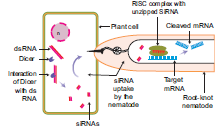
Figure 4.20: RNA Interference
Weeds are a constant problem in crop fields. Weeds not only compete with crops for sunlight, water, nutrients and space but also acts as a carrier for insects and diseases. If left uncontrolled, weeds can reduce crop yields significantly.
Transgenic plants contain a novel DNA introduced into the genome.
Glyphosate herbicide produced by Monsanto, USA company under the trade name ‘Round up’ kills plants by blocking the 5-enopyruvate shikimate-3 phosphate synthase OPEN BRACKET EPSPS CLOSE BRACKET enzyme, an enzyme involved in the biosynthesis of aromatic amino acids, vitamins and many secondary plant metabolites. There are several ways by which crops can be modified to be glyphosate-tolerant.
One strategy is to incorporate a soil bacterium gene that produces a glyphosate tolerant form of EPSPS. Another way is to incorporate a different soil bacterium gene that produces a glyphosate degrading enzyme.
Weed control improves higher crop yields;
Reduces spray of herbicide;
Reduces competition between crop plant and weed;
Use of low toxicity compounds which do not remain active in the soil; and
The ability to conserve soil structure and microbes.
Trade name ‘Basta’ refers to a non-selective herbicide containing the chemical compound phosphinothricin. Basta herbicide tolerant gene PPT OPEN BRACKET L-phosphinothricin CLOSE BRACKET was isolated from Medicago sativa plant. It inhibits the enzyme glutamine synthase which is involved in ammonia assimilation. The PPT gene was introduced into tobacco and transgenic tobacco produced was resistant to PPT. Similar enzyme was also isolated from Streptomyces hygroscopicus with bar gene encodes for PAT OPEN BRACKET Phosphinothricin acetyl transferase CLOSE BRACKET and was introduced into crop plants like potato and sugar-beet and transgenic crops have been developed.
Bt cotton is a genetically modified organism OPEN BRACKET GMO CLOSE BRACKET or genetically modified pest resistant plant cotton variety, which produces an insecticide activity to bollworm.
Strains of the bacterium Bacillus thuringiensis produce over 200 different Bt toxins, each harmful to different insects. Most Bt toxins are insecticidal to the larvae of moths and butterflies, beetles, cotton bollworms and gadflies but are harmless to other forms of life.
The genes are encoded for toxic crystals in the Cry group of endotoxins. When insects attack and eat the cotton plant the Cry toxins are dissolved in the insect’s stomach.
The epithelial membranes of the gut block certain vital nutrients thereby sufficient regulation of potassium ions are lost in the insects and results in the death of epithelial cells in the intestine membrane which leads to the death of the larvae.
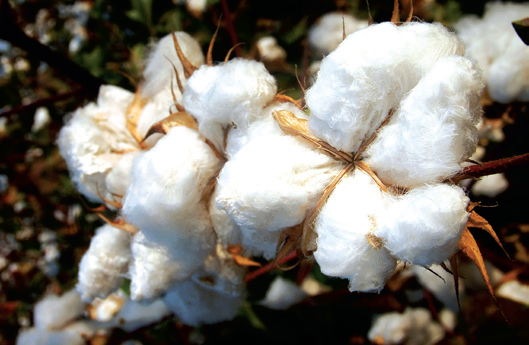
Figure 4.21: Bt Cotton
The advantages of Bt cotton are:
Yield of cotton is increased due to effective control of bollworms.
Reduction in insecticide use in the cultivation of Bt cotton
Potential reduction in the cost of cultivation.
Bt cotton has some limitations:
Cost of Bt cotton seed is high.
Effectiveness up to 120 days after that efficiency is reduced
Ineffective against sucking pests like jassids, aphids and whitefly.
Affects pollinating insects and thus yield.
The Bt brinjal is another transgenic plant created by inserting a crystal protein gene OPEN BRACKET Cry1Ac CLOSE BRACKET from the soil bacterium Bacillus thuringiensis into the genome of various brinjal cultivars. The insertion of the gene, along with other genetic elements such as promoters, terminators and an antibiotic resistance marker gene into the brinjal plant is accomplished using Agrobacterium- mediated genetic transformation. The Bt brinjal has been developed to give resistance against Lepidopberan insects, in particular the Brinjal Fruit and Shoot Borer OPEN BRACKET Leucinodes orbonalis CLOSE BRACKET.
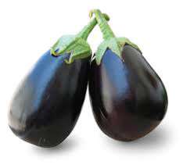
Figure 4.22: Bt Brinjal
Dhara Mustard Hybrid 11 is transgenic mustard developed by a team of scientists at the Centre for Genetic Manipulation of Crop Plants Delhi University under Government sponsored project. It is genetically modified variety of Herbicide Tolerant OPEN BRACKET HT CLOSE BRACKET mustard. It was created by using “barnase SLASH barstar” technology for genetic modification by adding genes from soil bacterium that makes mustard, a self-pollinating plant. Dhara Mustard Hybrid 11 contains three genes through Bar gene, Barnase and Barstar sourced from soil bacterium. The bar gene had made plant resistant to herbicide named Basta.
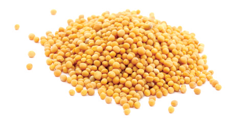
Figure 4 .2 3:Dhara mustard
Many plants are affected by virus attack resulting in series loss in yield and even death.
Biotechnological intervention is used to introduce viral resistant genes into the host plant so that they can resist the attack by virus. This is by introducing genes that produce resistant enzymes which can deactivate viral DNA.
Agrobacterium mediated genetic engineering technique was followed to produce Flavr-Savr
tomato, that is, retaining the natural colour and flavor of tomato.
Through genetic engineering, the ripening process of the tomato is slowed down and thus prevent it from softening and to increase the shelf life. The tomato was made more resistant to rotting by Agrobacterium mediated gene transfer mechanism of introducing an antisense gene which interferes with the production of the enzyme polygalacturonase, which help in delaying the ripening process of tomato during long storage and transportation.
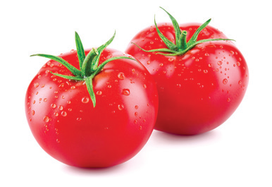
Figure 4.24: FlavrSavr Tomato
Golden rice is a variety of Oryza sativa OPEN BRACKET rice CLOSE BRACKET produced through genetic engineering of biosynthesized beta-carotene, a precursor of Vitamin-A in the edible parts of rice developed by Ingo Potrykus and his group. The aim is to produce a fortified food to be grown and consumed in areas with a shortage of dietary Vitamin-A. Golden rice differs from its parental strain by the addition of three beta-carotene biosynthesis genes namely ‘psy’ OPEN BRACKET phytoene synthase CLOSE BRACKET from daffodil plant Narcissus pseudonarcissus and ‘crt-1’ gene from the soil bacterium Erwinia auredorora and ‘lyc’ OPEN BRACKET lycopene cyclase CLOSE BRACKET gene from wild-type rice endosperm.
The endosperm of normal rice, does not contain beta-carotene. Golden-rice has been genetically altered so that the endosperm now accumulates Beta-carotene. This has been done using Recombinant DNA technology. Golden rice can control childhood blindness - Xerophthalmia.
High yield without pest
70 percentage reduction of pesticide usage
Reduce soil pollution problem
Conserve microbial population in soil.
Affect liver, kidney function and cancer
Hormonal imbalance and physical disorder
Anaphylactic shock OPEN BRACKET sudden hypersensitive reaction CLOSE BRACKET and allergies.
Adverse effect in immune system because of bacterial protein.
Loss of viability of seeds seen in terminator seed technology of GM crops.
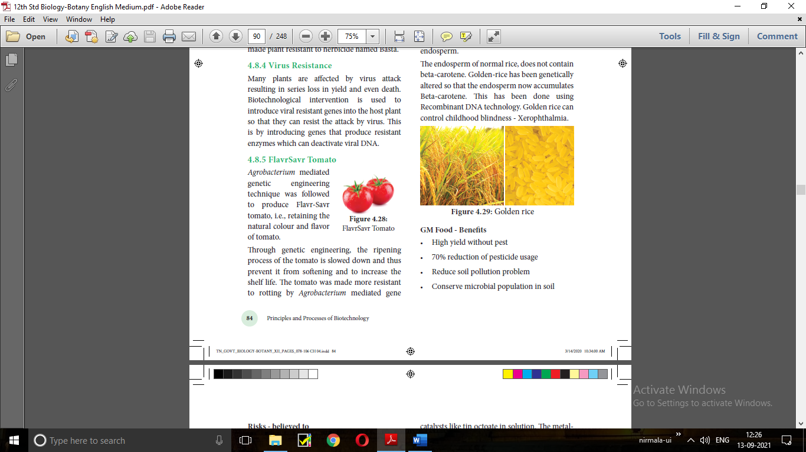
Synthetic polymers are non-degradable and pollute the soil and when burnt add dioxin in the environment which cause cancer. So, efforts were taken to provide an alternative eco-friendly
biopolymers. Polyhydroxyalkanoates OPEN BRACKET PHAs CLOSE BRACKET and polyhydroxybutyrate OPEN BRACKET PHB CLOSE BRACKET are group of degradable biopolymers which have several medical applications such as drug delivery, scaffold and heart valves. PHAs are biological macromolecules and thermoplastics which are biodegradable and biocompatible.
Several microorganisms have been utilized to produce different types of PHAs including Gram-positive like Bacillus megaterium, Bacillussubtilis and Corynebacterium glutamicum, Gram-negative bacteria like group of Pseudomonas sp. and Alcaligenes eutrophus.
Polylactic acid or polylactide OPEN BRACKET PLA CLOSE BRACKET is a biodegradable and bioactive thermoplastic. It is an aliphatic polyester derived from renewable resources, such as corn starch, cassava root, chips or starch or sugarcane. For the production of PLA, two main monomers are used: lactic acid, and the cyclic diester, lactide. The most common route is the ringopening polymerization of lactide with metal catalysts like tin octoate in solution. The metalcatalyzed reaction results in equal amount of d and polylactic acid.
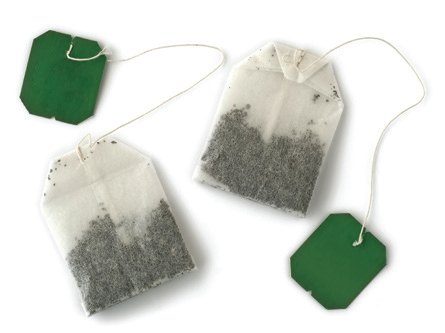
Figure 4.26: Polylactic acid product
The green fluorescent protein OPEN BRACKET GFP CLOSE BRACKET is a protein containing 238 amino acid residues of 26.9 kDa that exhibits bright green fluorescence when exposed to blue to ultraviolet range OPEN BRACKET 395 nm CLOSE BRACKET. GFP refers to the protein first isolated from the jellyfish Aequorea victoria. GFP is an excellent tool in biology due to its ability to form internal chromophore without requiring any accessory cofactors, gene products, enzymes or substrates other than molecular oxygen. In cell and molecular biology, the GFP gene is frequently used as a reporter of expression. It has been used in modified forms to make biosensors.
Biopharming also known as molecular pharming is the production and use of transgenic plants genetically engineered to produce pharmaceutical substances for use of human beings. This is also called “molecular farming or pharming”. These plants are different from medicinal plants which are naturally available. The use of plant systems as bioreactors is gaining more significance in modern biotechnology. Many pharmaceutical substances can be produced using transgenic plants. Example: Golden rice
It is defined as the use of microorganisms or plants to manage environmental pollution. It is an approach used to treat wastes including wastewater, industrial waste and solid waste. Bioremediation process is applied to the removal of oil, petrochemical residues, pesticides or heavy metals from soil or ground water. In many cases, bioremediation is less expensive and more sustainable than other physical and chemical methods of remediation. An eco-friendly approach and can deal with lower concentrations of contaminants more effectively. The strategies for bioremediation in soil and water can be as follows:
Use of indigenous microbial population as indicator species for bioremediation process.
Bioremediation with the addition of adapted or designed microbial inoculants.
Use of plants for bioremediation – green technology.
Some examples of bioremediation technologies are:
Phytoremediation - use of plants to bring about remediation of environmental pollutants.
Mycoremediation - use of fungi to bring about remediation of environmental pollutants.
Bioventing a process that increases the oxygen or air flow to accelerate the degradation of environmental pollutants.
Bioleaching use of microorganisms in solution to recover metal pollutants from contaminated sites.
Bioaugmentation a addition of selected microbes to speed up degradation process.
Composting process by which the solid waste is composted by the use of microbes into manure which acts as a nutrient for plant growth.
Rhizofiltration uptake of metals or degradation of organic compounds by rhizosphere microorganisms.
Rhizostimulation stimulation of plant growth by the rhizosphere by providing better growth condition or reduction in toxic materials.
Only biodegradable contaminants can be transformed using bioremediation processes.
Bioremediation processes must be specifically made in accordance to the conditions at the contaminated site.
Small-scale tests on a pilot scale must be performed before carrying out the procedure at the contaminated site.
The use of genetic engineering technology to create genetically modified microorganism or a consortium of microbes for bioremediation process has great potential.
Algal fuel, also known as algal biofuel, or algal oil is an alternative to liquid fossil fuels, the petroleum products. This is also used as a source of energy-rich oils. Also, algal fuels are an alternative to commonly known biofuel sources obtained from corn and sugarcane. The energy crisis and the worldfood crisis have initiated interest in algal culture OPEN BRACKET farming algae CLOSE BRACKET for making biodiesel and other biofuels on lands unsuitable for agriculture. Botryococcus braunii is normally used to produce algal biofuel.
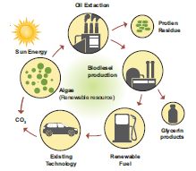
Figure 4.27: Algal Biofuel
The biological hydrogen production with algae is a method of photo biological water splitting. In normal photosynthesis the alga, Chlamydomonas reinhardtii releases oxygen. When it is deprived of sulfur, it switches to the production of hydrogen during photosynthesis and the electrons are transported to ferredoxins. [Fe]-hydrogenase enzymes combine them into the production of hydrogen gas.
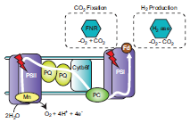
Figure 4.28: Hydrogen production by algae
Bioprospecting is the process of discovery and commercialization of new products obtained from biological resources. Bioprospecting may involve biopiracy, in which indigenous knowledge of nature, originating with indigenous people, is used by others for profit, without authorization or compensation to the indigenous people themselves.
Biopiracy can be defined as the manipulation of intellectual property rights laws by corporations to gain exclusive control over national genetic resources, without giving adequate recognition or remuneration to the original possessors of those resources. Examples of biopiracy include recent patents granted by the U.S. Patent and Trademarks Office to American companies on turmeric, ‘neem’ and, most notably, ‘basmati’ rice. All three products are indigenous to the Indo-Pak subcontinent.
The people of India used neem and its oil in many ways to controlling fungal and bacterial skin
infections. Indian’s have shared the knowledge of the properties of the neem with the entire world. Pirating this knowledge, the United States Department of Agriculture OPEN BRACKET USDA CLOSE BRACKET and an American
MNC OPEN BRACKET Multi Nation Corporation CLOSE BRACKET W.R.Grace in the early 90’s sought a patent from the European Patent Office OPEN BRACKET EPO CLOSE BRACKET on the “method for controlling of diseases on plants by the aid of extracted hydrophobic neem oil”. The patenting of the fungicidal and antibacterial properties of Neem was an example of biopiracy but the traditional knowledge of the Indians was protected in the end.
The United States Patent and Trademark Office, in the year 1995 granted patent to the method of use of turmeric as an antiseptic agent. Turmeric has been used by the Indians as a home remedy
for the quick healing of the wounds and also for purpose of healing rashes. The journal article published by the Indian Medical Association, in the year 1953 wherein this remedy was mentioned. Therefore, in this way it was proved that the use of turmeric as an antiseptic is not new to the world and is not a new invention, but formed a part of the traditional knowledge of the Indians. The objection in this case US patent and trademark office was upheld and traditional knowledge of the Indians was protected. It is another example of Biopiracy.
On September 2, 1997, the U.S. Patent and Trademarks Office granted Patent on “basmati rice lines and grains” to the Texas-based company RiceTec. This broad patent gives the company several rights, including exclusive use of the term 'basmati', as well proprietary rights on the seeds and grains from any crosses. The patent also covers the process of breeding RiceTec’s novel rice lines and the method to determine the cooking properties and starch content of the rice grains. India had periled the United States to take the matter to the WTO as an infringement of the TRIPS agreement, which could have resulted in major embarrassment for the US. Hence voluntarily and due to few decisions take by the US patent office, Rice Tec had no choice but to lose most of the claims and most importantly the right to call the rice “Basmati”. In the year 2002, the final decision was taken. Rice Tec dropped down 15 claims, resulting in clearing the path of Indian Basmati rice exports to the foreign countries. The Patent Office ordered the patent name to be changed to ‘Rice lines 867’.
Biotechnology is one of the most important applied interdisciplinary sciences of the 21st century. It is the trusted area that enables us to find the beneficial way of life.
Biotechnology has wide applications in various sectors like agriculture, medicine, environment and commercial industries.
This science has an invaluable outcome like transgenic varieties of plants Example, transgenic cotton OPEN BRACKET Bt-cotton CLOSE BRACKET, rice, tomato, tobacco, cauliflower, potato and banana.
The development of transgenics as pesticide resistant, stress resistant and disease resistant varieties of agricultural crops is the immense outcome of biotechnology.
The synthesis of human insulin and blood protein in E.coli and utilized for insulin deficiency disorder in human is a breakthrough in biotech industries in medicine.
The synthesis of vaccines, enzymes, antibiotics, dairy products and beverages are the products of biotech industries.
Biochip based biological computer is one of the successes of biotechnology.
Genetic engineering involves genetic manipulation, tissue culture involves aseptic cultivation of totipotent plant cell into plant clones under controlled atmospheric conditions.
Single cell protein from Spirulina is utilized in food industries.
Production of secondary metabolites, biofertilizers, biopesticides and enzymes.
Biomass energy, biofuel, Bioremediation, phytoremediation for environmental biotechnology.
Biotechnology is the science of applied biological process in which there is a controlled use of biological agents such as microorganisms or cellular components for beneficial use. A Hungarian Engineer, Karl Ereky OPEN BRACKET 1919 CLOSE BRACKET coined the term biotechnology. Biotechnology broadly categorized into traditional practices and modern practices. Traditional biotechnology includes our ancient practices such as fermentation. Single Cell Protein OPEN BRACKET SCP CLOSE BRACKET organisms are grown in large quantities to produce goods rich in protein, minerals, fats, carbohydrates and vitamins. The modern biotechnology embraces all the genetic manipulations. The recombinant DNA technology is a technique of modern biotechnology in which transfer of DNA coding for a specific gene from one organism is introduced into another organism using specific agents like vectors or using instruments like electroporation, gene gun, liposome mediated, chemical mediated and micro injection. Other tools are enzymes and host organisms. The enzyme restriction endonuclease is a molecular scissor that cleaves DNA into fragments at or near specific recognition sites with the molecule known as restriction sites. Other enzymes are DNA ligase and alkaline phosphatase. DNA ligase enzyme joins the sugar and phosphate molecules of double stranded DNA. Alkaline phosphatase is an enzyme which adds or removes specific phosphate group of double stranded DNA. A vector is a small DNA molecule capable of self replication and used as a carrier of DNA inserted in the host cell. Few examples of vectors are plasmid – pBR 322, cosmid – Lambda phage, M13, Phagmid , BAC, YAC, transposon, shuttle vector and expression vector. After production of recombinant DNA molecule has been generated is introduced into a suitable host cell. Type of host cell depends upon the cloning experiment. E.coli is the most widely used
host organism. There are two kinds of gene transfer methods in plants. They are direct or vectorless gene transfer and indirect or vector mediated gene transfer. Direct gene transfer includes chemical mediated gene transfer, micro injection, electroporation. Gene gun method and Liposome mediated method of gene transfer. Indirect or vector mediated gene transfer is a method of gene transfer with the help of a plasmid vector. In this method Ti-plasmid from Agrobactirum tumefeciens has been used extensively for vector mediated gene transfer.
After the introduction of rDNA into a host cell, it is essential to identify those cells which have received the rDNA molecule. This process is called screening. One of the method of recombinant screening is blue white selection method Replica plating technique in which the pattern of colonies growing on a culture plate is copied. Electrophoresis is a separating technique used to separate different biomolecules.
Blotting techniques are widely used tools for identification of desired DNA or RNA fragments from larger number of molecules. Some of the genetically modified crops are herbicide tolerant – Basta, Dhara mustard, insects resistance – Bt crops, flavrSavr – Tomato, Golden rice. Biopolymers are polyhydroxybutyrate OPEN BRACKET PHB CLOSE BRACKET, polylactic acid OPEN BRACKET PLA CLOSE BRACKET and green fluorescent protein OPEN BRACKET GFP CLOSE BRACKET is used to make biosensors. Other applications are biopharming, bioprospecting, biomedication and biofuel, etc.

1. Restriction enzymes are
a. Not always required in genetic engineering
b. Essential tools in genetic engineering
c. Nucleases that cleave DNA at specific sites
d. both b and c
2. Plasmids are
a. circular protein molecules
b. required by bacteria
c. tiny bacteria
d. confer resistance to antibiotics
3. EcoRI cleaves DNA at
a. AGGGTT
b. GTATATC
c. GAATTC
d. TATAGC
4. Genetic engineering is
a. making artificial genes.
b. hybridization of DNA of one organism to that of the others.
c. production of alcohol by using micro-organisms.
d. making artificial limbs, diagnostic instruments such as ECG, EEG etc.,
5. Consider the following statements:
1. Recombinant DNA technology is popularly known as genetic engineering is a stream of biotechnology which deals with the manipulation of genetic materials by man invitro
2. pBR322 is the first artificial cloning vector developed in 1977 by Boliver and Rodriguez from E. coli plasmid
3. Restriction enzymes belongs to a class of enzymes called nucleases.
Choose the correct option regarding above statements
a. 1 and 2
b. 1 and 3
c. 2 and 3
d. 1, 2 and 3
6. The process of recombinant DNA technology has the following steps
1. amplication of the gene
2. Insertion of recombinant DNA into the host cells
3. Cutting of DNA at specific location using restriction enzyme.
4. Isolation of genetic material OPEN BRACKET DNA CLOSE BRACKET Pick out the correct sequence of step for recombinant
DNA technology.
a. 2, 3, 4,1
b. 4, 2, 3, 1
c. 1, 2, 3, 4
d. 4, 3,1,2
7. Which one of the following palindromic base sequences in DNA can be easily cut at about the middle by some particular restriction enzymes QUESTION MARK
a. 5 CGTTCG 3 3 ATCGTA 5
b. 5 GATATG 3 3 CTACTA 5
c. 5 GAATTC 3 3 CTTAAG 5
d. 5 CACGTA 3 3 CTCAGT 5
8. pBR 322, BR stands for
a. Plasmid Bacterial Recombination
b. Plasmid Bacterial Replication
c. Plasmid Boliver and Rodriguez
d. Plasmid Baltimore and Rodriguez
9.Match the following :
Column A |
Column B |
1 Exonuclease |
a. add or remove phosphate |
2 Endonuclease |
b. binding the DNA fragments |
3 Alkaline Phosphatase |
c. cut the DNA at terminus |
4 Ligase |
d. cut the DNA at middle |
1 2 3 4
A CLOSE BRACKET a b c d
B CLOSE BRACKET c d b a
C CLOSE BRACKET a c b d
D CLOSE BRACKET c d a b
10. In which techniques Ethidium Bromide is used QUESTION MARK
a. Southern Blotting techniques
b. Western Blotting techniques
c. Polymerase Chain Reaction
d. Agrose Gel Electroporosis
11. Assertion : Agrobacterium tumifaciens is popular in genetic engineering because this bacteriumis associated with the root nodules of all cereals and pulse crops
Reason : A gene incorporated in the bacterial chromosomal genome gets atomatically transferred
to the cross with which bacterium is associated.
a CLOSE BRACKET Both assertion and reason are true. But reason is correct explanation of assertion.
b CLOSE BRACKET Both assertion and reason are true. But reason is not correct explanation of assertion.
c CLOSE BRACKET Assertion is true, but reason is false.
d CLOSE BRACKET Assertion is false, but reason is true.
e CLOSE BRACKET Both assertion and reason are false.
12. Which one of the following is not correct statement.
a CLOSE BRACKET Ti plasmid causes the bunchy top disease
b CLOSE BRACKET Multiple cloning site is known as Polylinker
c CLOSE BRACKET Non viral method transfection of Nucleic acid in cell
d CLOSE BRACKET Polylactic acid is a kind of biodegradable and bioactive thermoplastic.
13. An analysis of chromosomal DNA using the southern hybridisation technique does not use
a CLOSE BRACKET Electrophoresis
b CLOSE BRACKET Blotting
c CLOSE BRACKET Autoradiography
d CLOSE BRACKET Polymerase Chain Reaction
14. An antibiotic gene in a vector usually helpsin the selection of
a CLOSE BRACKET Competent cells
b CLOSE BRACKET Transformed cells
c CLOSE BRACKET Recombinant cells
d CLOSE BRACKET None of the above
15. Some of the characteristics of Bt cotton are
a CLOSE BRACKET Long fibre and resistant to aphids
b CLOSE BRACKET Medium yield, long fibre and resistant to beetle pests
c CLOSE BRACKET high yield and production of toxic protein crystals which kill dipteran pests.
d CLOSE BRACKET High yield and resistant to ball worms
16. How do you use the biotechnology in modern practice QUESTION MARK
17. What are the materials used to grow microorganism like Spirulina QUESTION MARK
18. You are working in a biotechnology lab with a becterium namely E.coli. How will you cut the nucleotide sequence QUESTION MARK explain it.
19. What are the enzymes you can used to cut terminal end and internal phosph di ester bond of nucleotide sequence QUESTION MARK
20. Name the chemicals used in gene transfer.
21. What do you know about the word pBR332 QUESTION MARK
22. Mention the application of Biotechnology.
23. What are restriction enzyme. Mention their type with role in Biotechnology.
24. Is their any possibilities to transfer a suitable desirable gene to host plant without vector QUESTION MARK Justify your answer.
25. How will you identify a vectors QUESTION MARK
26. Compare the various types of Blotting techniques.
27. Write the advantages of herbicide tolerant crops.
28. Write the advantages and disadvantages of Bt cotton.
29. What is bioremediation QUESTION MARK give some examples of bioremediation.
30. Write the benefits and risk of Genetically Modified Foods.
3’ Hydroxy end:
The hydroxyl group attached to 3’ carbon atom of sugar of the terminal nucleotide of a
nucleic acid.
Bacterial artificial chromosomes OPEN BRACKET BAC CLOSE BRACKET:
A cloning vector for isolation of genomic DNA constructed on the basis of F-factor.
Chimeric DNA:
A recombinant DNA molecule containing unrelated genes.
Cleave:
To break phosphodiester bonds of dsDNA, usually with a restriction enzyme.
Cloning site:
A location on a cloning vector into which DNA can be inserted.
Cloning:
Incorporation of a DNA molecule into a chromosomal site or a cloning vector.
Cloning Vector:
A small, self-replicating DNA inserted in a cloning gene.
COS sites:
The 12-base, single strand, complementary extension of phage lambda OPEN BRACKET l CLOSE BRACKET DNA.
DNA Polymerase:
An enzyme that catalyses the phosphodiester bond in the formation of DNA.
Endonucleases:
An enzyme that catalyses the cleavage of DNA at internal position, cutting
DNA at specific sites.
Genome:
The entire complement of genetic material of an organism.
Insert DNA:
A DNA molecule incorporated into a cloning vector.
Ligase:
An enzyme used in genetic engineering experiment to join the cut
ends of dsDNA.
M-13:
AssDNA bacteriophage used as vector for DNA sequencing.
Phagemid:
A cloning vector that contains components derived from both phage DNA and plasmid.
Plasmid:
Extrachromosomal, self-replicating, circular dsDNA containing some non-essential genes.
Restriction map:
A linear array of sites on DNA cleaved by various restriction enzymes.
Shuttle Vector:
A plasmid cloning vector that can replicate in two different organisms due to the presence of two different origin of replication Ori EUK and OriE. coli
Taq polymerase:
A heat stable DNA polymerase isolated from a thermophilic bacterium
Thermus aquaticus.
Vectors:
Vehicles for transferring DNA from one cell to another.
Biofuel:
Fuels like hydrogen, ethanol and methanol produced from a biological source by the action of microorganisms.
Bioleaching:
Process of using microorganisms to recover metals from their ores or contaminant
environment
Bioremediation:
Process of using organisms to remove or reduce pollutants from the environment.
Green Technology:
Pollution-free technology in which pollution is controlled at source.
Phytoremediation:
Use of certain plants to remove contaminants or pollutants from the environment
OPEN BRACKET soil, water or air CLOSE BRACKET.
Recombinant:
Cell SLASH Organism formed by a recombination of genes.
Transformation:
Process of transferring a foreign DNA into a cell and changing its genome.
Vector:
Agent used in recombinant DNA technique to carry new genes into foreign cells.
Wild Type:
Natural form of organisms.

Interdisciplinarity Fields of Biotechnology
The major historical events for the development of Biotechnology, as an interdisciplinary
field with multidisciplinary applications are listed below:
6000 BC to 3000 BC – Bread making, fermentation of fruit juices and plant exudates to produce alcoholic beverages using yeast.
1770 – Antoine Lavoisier gave chemical basis of alcoholic fermentation.
1798 – Edward Jenner uses first viral vaccine to inoculate a child from smallpox.
1838 – Protein discovered, named and recorded by Gerardus Johannes Mulder and Jons Jacob Berzelius.
1871 – Ernst Hoppe, Seyler discovered enzyme invertase, which is still used for making artificial sweeteners.
1876 – Louis Pasteur identified role of microorganisms in fermentation.
1919 – The term biotechnology was coined by Karl Ereky
1928 – Discovery of Penicillin by Alexander Fleming
1941 – Experiment with Neurospora crassa resulting in one gene one enzyme hypothesis by George Beadle and Edward Tatum.
1944 – Identification of DNA as the genetic material Avery–MacLeod–McCarty
1953 – Discovery of double helix structure of DNA by James Watson and Francis Crick.
1972 – Discovery of Restriction enzymes by Arber, Smith and Nathans.
1973 – Fragmentation of DNA-combined with Plasmid DNA, r-DNA technology - Genetic engineering -Modified gene by Stanley Cohen, Annie Chang, Robert Helling and Herbert Boyer.
1975 – Production of Monoclonal antibodies by Kohler and Milstein
1976 – Sanger and Gilbert developed techniques to sequence DNA
1978 – Production of human insulin in E.Coli
1979 – Development of Artificial gene – functioning within the living cells by H.G. Khorana
1982 – U.S approved humulin OPEN BRACKET human insulin CLOSE BRACKET the first pharmaceutical product of rDNA technology,
for human use.
1983 – Use of Ti plasmids to genetically transform plants
1986 – Development of Polymerase Chain Reaction OPEN BRACKET PCR CLOSE BRACKET technology by Kary Mullis.
1987 – Gene transfer by biolistic transformation
1992 – First chromosomes of yeast is sequenced
1994 – U.S approved the first Genetically Modified food: Flavr Savr tomato.
1997 – The first transgenic animal, mammalian sheep, Dolly developed
by nuclear cloning by Ian Wilmet.
2000 – First plant Genome of Arabidopsis thaliana sequenced
2001 – Human genome Project creates a draft of the human genome sequence.
2002 – First crop plant genome sequenced in Oryza sativa
2003 – Human genome project is completed, providing information on the locations and sequence of human genes on all 46 chromosomes.
2010 – Sir Robert G. Edwards developed in vitro fertilization in animal.
2016 – Stem cells injected into stroke patients reenable patient to walk – Stem cell therapy
2017 – Blood stem cells grown in lab.
2018 – James Allison and TasukuHonjo discovered protein found in immune cells.
This found a new role in cancer therapy.
Cosmid

Cosmids are plasmids containing the ‘cos’ – Cohesive Terminus, the sequence having cohesive ends. They are hybrid vectors derived from plasmids having a fragment of lambda phage DNA with its Cos site and a bacterial plasmid

Bacteriophages are viruses that infect bacteria. The most commonly used E. coli phages are l phage OPEN BRACKET Lambda phage CLOSE BRACKET and M13 phage. Phage vectors are more efficient than plasmids - DNA upto 25 Kb can be inserted into phage vector.
Lambda genome: Lambda phage is a temperate bacteriophage that infects Escherichia coli. The genome of lambda-Phage is 48502 bp long, that is 49 K b and has 50 genes.

Phagemids are reconstructed plasmid vectors, which contain their own origin - ‘ori’ gene and also contain origin of replication from a phage. pBluescript SK OPEN BRACKET plus SLASH– CLOSE BRACKET is an example of phagemid vector.

BAC is a shuttle plasmid vector, created for cloning large-sized foreign DNA. BAC vector is one of the most useful cloning vector in r-DNA technology they can clone DNA inserts of upto 300 Kb and they are stable and more user-friendly.

YAC plasmid vector behaves like a yeast chromosome, which occurs in two forms, i.e. circular and linear. The circular YAC multiplies in Bacteria and linear YAC multiplies in Yeast Cells.

The shuttle vectors are plasmids designed to replicate in cells of two different species. These vectors are created by recombinant techniques. The shuttle vectors can propagate in one host and then move into another host without any extra manipulation. Most of the Eukaryotic vectors are Shuttle Vectors.
Principles and Processes of Biotechnology

BIO TECH STUDY APP
Let us know about the information Bio Technology through this activity
Steps
Type the URL or scan the QR code to open the activity page.
Click on the topic to know in detail.
To know the sub topics in detail, click on the dots in top right corner.


URL:
https:SLASHSLASHplay.google.comSLASHstoreSLASHappsSLASHdetails QUESTION MARKid=info.therithal.brainkart. biotechstudyapp
biotechstudyapp

The learner will be able to
Perceive the concepts of tissue culture.
Cognize the steps of tissue culture techniques and its types.
Understand the protoplast culture in detail.
Elicit the list of secondary metabolites obtained through cell suspension culture.
Learn plant regeneration pathway.
Appreciate the uses of micro propagation, somatic hybridization, shoot meristem culture and germplasm conservation.
Acquire the knowledge of patenting Biosafety and Bioethics.

5.1 Basic concepts in plant disuse culture
5.2 Plant tissue culture techniques and types
5.3 Plant regeneration pathway
5.4 Applications of plant tissue culture
5.5 Conservation of plant genetic resources
5.6 Intellectual rights of property OPEN BRACKET IPR CLOSE BRACKET, Biosafety and Bioethics
5.7 Future Biotechnology

Gottlieb Haberlandt
Growing plant protoplasts, cells, tissues or organs away from their natural or normal environment, under artificial condition, is known as Tissue Culture. It is also known as in vitro OPEN BRACKET In vitro is a Latin word, it means that - in glass or in test-tube CLOSE BRACKET growth of plant protoplasts, cells, tissues and organs.
A single explant can be multiplied into several thousand plants in a short duration and space under controlled conditions.
Tissue culture techniques are often used for commercial production of plants as well as for plant research. Plant tissue culture serves as an indispensable tool for regeneration of transgenic plants. Apart from this some of the main applications of Plant tissue culture are clonal propagation of elite varieties, conservation of endangered plants, production of virus-free plants, germplasm preservation, industrial production of secondary metabolites. etc., In this chapter let us discuss the history , techniques, types , applications of plant tissue culture and get awareness on ethical issues.
Gottlieb Haberlandt OPEN BRACKET 1902 CLOSE BRACKET the German Botanist proposed the concept Totipotency and he was also the first person to culture plant cells in artificial conditions using the mesophyll cells of Lamium purpureum in culture medium and obtained cell proliferation. He is regarded as the father of tissue culture.
Basic concepts of plant tissue culture are totipotency, differentiation, dedifferentiation and redifferentiation.
The property of live plant cells that they have the genetic potential when cultured in nutrient medium to give rise to a complete individual plant.

Figure 5.1: Totipotency
The process of biochemical and structural changes by which cells become specialized in form and function.
The further differentiation of already differentiated cell into another type of cell. For example, when the component cells of callus have the ability to form a whole plant in a nutrient medium, the phenomenon is called redifferentiation.
The phenomenon of the reversion of mature cells to the meristematic state leading to the formation of callus is called dedifferentiation. These two phenomena of redifferentiation and dedifferentiation are the inherent capacities of living plant cells or tissue. This is described as totipotency.
Plant tissue culture is used to describe the in vitro and aseptic growth of any plant part on a tissue culture medium. This technology is based on three fundamental principles:
The plant part or explant must be selected and isolated from the rest of plant body.
The explant must be maintained in controlled physically OPEN BRACKET environmental CLOSE BRACKET and chemicallydefined OPEN BRACKET nutrient medium CLOSE BRACKET conditions.
The tissue taken from a selected plant transferred to a culture medium often to establish a new plant.
For PTC, the laboratory must have the following facilities:

Figure 5.2: Tissue culture lab
Washing facility for glassware and ovens for drying glassware.
Medium preparation room with autoclave, electronic balance and pH meter.
Transfer area sterile room with laminar air-flow bench and a positive pressure ventilation unit called High Efficiency Particulate Air OPEN BRACKET HEPA CLOSE BRACKET filter to maintain aseptic condition.
Culture facility: Growing the explant inoculated into culture tubes at 22 to 28 degree celcius with illumination of light 2400 lux, with a photoperiod of 8 to 16 hours and a relative humidity of about 60 percentage.
Sterilization is the technique employed to get rid of microbes such as bacteria and fungi in the culture medium, vessels and explants.
During in vitro tissue culture maintenance of aseptic environmental condition should be followed, that is, sterilization of glassware, forceps, scalpels, and all accessories in wet steam sterilization by autoclaving at 15 psi OPEN BRACKET 121 degree celcius CLOSE BRACKET for 15 to 30 minutes or dipping in 70 percentage ethanol followed by flaming and cooling.
Floor and walls are washed first with detergent and then with 2 percentage sodium hypochlorite or 95 percentage ethanol. The cabinet of laminar airflow is sterilized by clearing the work surface with 95 percentage ethanol and then exposure of UV radiation for 15 minutes
Culture media are dispensed in glass containers, plugged with non-absorbent cotton or sealed with plastic closures and then sterilized using autoclave at 15 psi OPEN BRACKET 121°C CLOSE BRACKET for 15 to 30 minutes. The plant extracts, vitamins, amino acids and hormones are sterilized by passing through Millipore filter with 0.2 mm pore diameter and then added to sterilized culture medium inside Laminar Airflow Chamber under sterile condition.
The plant materials to be used for tissue culture should be surface sterilized by first exposing the material in running tap water and then treating it in surface sterilization agents like 0.1 percentage mercuric chloride, 70 percentage ethanol under aseptic condition inside the Laminar Air Flow Chamber.

The success of tissue culture lies in the composition of the growth medium, plant growth
regulators and culture conditions such as temperature, pH, light and humidity. No single medium
is capable of maintaining optimum growth of all plant tissues. Suitable nutrient medium as per the principle of tissue culture is prepared and used.
MS nutrient medium OPEN BRACKET Murashige and Skoog 1962 CLOSE BRACKET is commonly used. It has carbon sources, with suitable vitamins and hormones. The media formulations available for plant tissue culture other than MS are B5 medium OPEN BRACKET Gamborg.et.al 1968 CLOSE BRACKET, White medium OPEN BRACKET white 1943 CLOSE BRACKET, Nitsch’s medium OPEN BRACKET Nitsch & Nitsch 1969 CLOSE BRACKET. A medium may be solid or semisolid or liquid. For solidification, a gelling agent such as agar is added.
Agar:
A complex mucilaginous polysaccharide obtained from marine algae OPEN BRACKET sea weeds CLOSE BRACKET used as
solidifying agent in media preparation.
The pH of medium is normally adjusted between 5.6 to 6.0 for the best result.
The cultures should be incubated normally at constant temperature of 25 degree celcius for optimal growth.
The cultures require 50 to 60 percentage relative humidity and 16 hours of photoperiod by the illumination
of cool white fluorescent tubes of approximately 1000 lux.
Aeration to the culture can be provided by shaking the flasks or tubes of liquid culture on automatic shaker or aeration of the medium by passing with filter-sterilized air.

Figure 5.4: Induction of callus
Explant of 1 to 2 cm sterile segment selected from leaf, stem, tuber or root is inoculated OPEN BRACKET transferring the explants to sterile glass tube containing nutrient medium CLOSE BRACKET in the MS nutrient medium supplemented with auxins and incubated at 25 degree celcius in an alternate light and dark period of 12 hours to induce cell division and soon the upper surface of explant develops into callus. Callus is a mass of unorganized growth of plant cells or tissues in in vitro culture medium.
The callus cells undergoes differentiation and produces somatic embryos, known as Embryoids. The embryoids are sub-cultured to produce plantlets.

Figure 5.5: Embryogenesis
The plantlets developed in vitro require a hardening period and so are transferred to greenhouse or hardening chamber and then to normal environmental conditions. Hardening is the gradual exposure of in vitro developed plantlets in humid chambers in diffused light for acclimatization so as to enable them to grow under normal field conditions.
Based on the type of explants other plant tissue culture types are
1. Organ culture
2. Meristem culture
3. Protoplast culture
4. Cell suspension culture.
The culture of embryos, anthers, ovaries, roots, shoots or other organs of plants on culture media.
Figure 5.6: Organ Culture
The culture of any plant meristematic tissue on culture media.

figure 5.7 Meristem Culture
older leaves are removed from a cutting of carnation
magnified view of shoot tip after removal of larger leaves
shoot tip with growing tip after removal of enclosing leaves.
paper wick callus plantlets
Protoplasts are cells without a cell wall, but bound by a cell membrane or plasma membrane.
Using protoplasts, it is possible to regenerate whole plants from single cells and also develop
somatic hybrids. The steps involved in protoplast culture.
Figure 5.8 Protoplast culture
young palnt
Leaf sterilization
Epidermis peeling
Peeled leaf segments
plasmolylsed cells
plasmolysed cells
cells in enzyme mixture
cell wall digestion and release of protoplast
washing of protoplast
isolated protoplast
plating of protoplasts
cell wall regeneration
clump of cells
callus tissue
Differentiation of callus tissue
Plantlet derived from protoplast
Small bits of plant tissue like leaf tissue are used for isolation of protoplast. The leaf tissue is immersed in 0.5 percentage Macrozyme and 2 percentage Onozuka cellulase enzymes dissolved in 13 percentage sorbitol or mannitol at pH 5.4. It is then incubated over-night at 25 degree Celcius . After a gentle teasing of cells, protoplasts are obtained, and these are then transferred to 20 percentage sucrose solution to retain their viability. They are then centrifuged to get pure protoplasts as different from debris of cell walls.
It is done through the use of a suitable fusogen. This is normally PEG OPEN BRACKET Polyethylene Glycol CLOSE BRACKET. The isolated protoplast are incubated in 25 to 30 percentage concentration of PEG with Ca plus plus ions and the protoplast shows agglutination OPEN BRACKET the formation of clumps of cells CLOSE BRACKET and fusion.
MS liquid medium is used with some modification in droplet, plating or micro-drop array techniques. Protoplast viability is tested with fluorescein diacetate before the culture. The cultures
are incubated in continuous light 1000-2000 lux at 25 degree Celcius . The cell wall formation occurs within 24-
48 hours and the first division of new cells occurs between 2-7 days of culture.
The fusion product of protoplasts without nucleus of different cells is called a cybrid. Following this nuclear fusion take place. This process is called somatic hybridization.
4. Cell Suspension Culture
The growing of cells including the culture of single cells or small aggregates of cells in vitro in liquid medium is known as cell suspension culture. The cell suspension is prepared by transferring a portion of callus to the liquid medium and agitated using rotary shaker instrument. The cells are separated from the callus tissue and used for cell suspension culture.
Cell suspension culture can be useful for the production of secondary metabolites like alkaloids, flavonoids, terpenoids, phenolic compounds and recombinant proteins. Secondary metabolites are chemical compounds that are not required by the plant for normal growth and development but
are produced in the plant as ‘byproducts’ of cell metabolism. For Example: Biosynthesis and isolation of indole alkaloids from Catharanthus roseus plant cell culture.
The process of production of secondary metabolites can be scaled up and automated using bio-reactors for commercial production. Many strategies such as biotransformation, elicitation and immobilization have been used to make cell suspension cultures more efficient in the production
of secondary metabolites. Few examples of industrially important plant secondary metabolites
are listed below in the table:
Secondary metabolites |
Plant source |
Uses |
Digoxin |
Digitalis purpurea |
Cardiac tonic |
Codeine |
Papaver somniferum |
Analgesic |
Capsaicin |
Capsicum annuum |
Rheumatic pain treatment |
Vincristine |
Catharanthus roseus |
Anticarcinogenic |
Quinine |
Cinchona officinalis |
Antimalarial |
Table 5.1: Secondary metabolites and its plant resources
From the explants, plants can be regenerated by somatic embryogenesis or organogenesis.
Figure Flow chart of plant regeneration pathway
Explant
in ways
Direct embryogenesis
Embryoids
plantlets
Hardening
Transfer to field
Meristem in ways multiple shoot induction open bracket Micropropagation close bracket
Root induction
plantlets
Hardening
Transfer to field
shoot apex
Stem
Leaf
Root
Callus in ways
Indirect embryogenesis
shoot induction
Root induction
plantlets
Hardening
Transfer to field
Direct embryogenesis
in ways
Embryoids
plantelts
Hardening
Transfer to field
Direct organogenesis
Expalnts
Direct somatic embryogenesis
callus
Somtic embryo
Rooting
Root organogenesis
shoot organogenesis
Rooting
plantlets
indirect embryogenesis
Figure 5.10 Plant regeneration pathway

Somatic embryogenesis is the formation of embryos from the callus tissue directly and these embryos are called Embryoids or from the in vitro cells directly form pre-embryonic cells which differentiate into embryoids.
Applications
Somatic embryogenesis provides potential plantlets which after hardening period can establish into plants.
Somatic embryoids can be be used for the production of synthetic seeds.
Somatic embryogenesis is now reported in many plants such as Allium sativum, Hordeum vulgare, Oryza sativa, Zea mays and this possible in any plant.
Synthetic seeds are produced by encapsulation of embryoids in agarose gel or calcium alginate.
The morphological changes occur in the callus leading to the formation of shoot and roots is called organogenesis.

Organogenesis can be induced in vitro byintroducing plant growth regulators in the MSmedium.
Auxin and cytokinins induce shoot and root formation.
Plant tissue culture techniques have several applications such as:
1. Improved hybrids production through somatic hybridization.
2. Somatic embryoids can be encapsulated into synthetic seeds OPEN BRACKET synseeds CLOSE BRACKET. These encapsulated seeds or synthetic seeds help in conservation of plant biodiversity.
3. Production of disease resistant plants through meristem and shoot tip culture.
4. Production of stress resistant plants like herbicide tolerant, heat tolerant plants.
5. Micropropagation technique to obtain large numbers of plantlets of both crop and tree species useful in forestry within a short span of time and all through the year.
6. Production of secondary metabolites from cell culture utilized in pharmaceutical, cosmetic and food industries.
Somatic variations found in plants regenerated in vitro OPEN BRACKET That is, variations found in leaf, stem, root, tuber or propagule CLOSE BRACKET
Gametophytic variations found in plants regenerated in vitro gametic origin OPEN BRACKET i.e. variations found in gametes and gametophytes CLOSE BRACKET

Figure 5.11: Micropropagation of Banana
Artificial seeds or synthetic seeds OPEN BRACKET synseeds CLOSE BRACKET are produced by using embryoids OPEN BRACKET somatic embryos CLOSE BRACKET obtained through in vitro culture. They may even be derived from single cells from any part of the plant that later divide to form cell mass containing dense cytoplasm, large nuclceus, starch grains, proteins, and oils etc., To prepare the artificial seeds different inert materials are used for coating the somatic embryoids like agrose and sodium alginate.

Figure 5.12: Artificial seeds
Advantages of Artificial seeds
Artificial seeds have many advantages over the true seeds
Millions of artificial seeds can be produced at any time at low cost.
They provide an easy method to produce genetically engineered plants with desirable traits.
It is easy to test the genotype of plants.
They can potentially stored for long time under cryopreservation method.
Artificial seeds produce identical plants
The period of dormancy of artificial seeds is greatly reduced, hence growth is faster with a shortened life cycle.

Figure 5.13: Shoot tip - Apical Meristem
The field grown plants like perennial crops, usually are infected by variety of pathogens like fungi, bacteria, mycoplasma, viruses which cause considerable economic losses. Chemical methods can
be used to control fungal and bacterial pathogens, but not viruses generally.
Shoot meristem tip culture is the method to produce virus-free plants, because the shoot meristem tip is always free from viruses.
Germplasm conservation refers to the conservation of living genetic resources like pollen, seeds or tissue of plant material maintained for the purpose of selective plant breeding, preservation in live condition and used for many research works.
Germplasm conservation resources is a part of collection of seeds and pollen that are stored in seed or pollen banks, so as to maintain their viability and fertility for any later use such as hybridization and crop improvement. Germplasm conservation may also involve a gene bank, DNA bank of elite breeding lines of plant resources for the maintenance of biological diversity and also for food security.

Figure 5.14: Seed bank
Cryopreservation, also known as Cryoconservation, is a process by which protoplasts , cells, tissues, organelles, organs, extracellular matrix, enzymes or any other biological materials are subjected to preservation by cooling to very low temperature of –196 degree Celcius using liquid nitrogen. At this extreme low temperature any enzymatic or chemical activity of the biological material will be totally stopped and this leads to preservation of material in dormant status. Later these materials can be activated by bringing to room temperature slowly for any experimental work. Protective agents like dimethyl sulphoxide, glycerol or sucrose are added before cryopreservation process. These protective agents are called cryoprotectants, since they protect the cells, or tissues from the stress of freezing temperature.

Figure 5.15: Cryopreservation

Figure 5.16: IPR in India
Intellectual property right OPEN BRACKET IPR CLOSE BRACKET is a category of rights that includes intangible creation of the human intellect, and primarily consists of copyrights, patents, and trademarks. It also includes other types of rights, such as trade secrets, publicity rights, moral rights, and rights against unfair competition.
In biotechnology, the transformed microorganisms and plants and technologies for the production of commercial products are exclusively the property of the discoverer.
The discoverer has the full rights on his property. It should not be neglected by the others without legal permission.
The right of discoverer must be protected and it does by certain laws framed by a country.
The IPR is protected by different ways like patents, copyrights, trade secrets and trademarks, designs and geographical indications.
It is a special right to the discovererSLASHinventor that has been granted by the government through legislation for trading new articles.
A patent is a personal property which can be licensed or sold by the person or organisation just like any other property.
Patent terms give the inventor the rights to exclude others from making, using or selling his invention.
Advances in biotechnology and their applications deals with genetic manipulation.
Biosafety is the prevention of large-scale loss of biological integrity, focusing both on ecology and human health. These prevention mechanisms include conduction of regular reviews of the
biosafety in laboratory settings, as well as strict guidelines to follow. Many laboratories handling biohazards employ an ongoing risk management assessment and enforcement process for biosafety. Failures to follow such protocols can lead to increased risk of exposure to biohazards or pathogens.
Bioethics refers to the study of ethical issues emerging from advances in biology and medicine. It is also a moral discernment as it relates to medical policy and practice. Bioethicists are concerned with the ethical questions that arise in the relationships among life sciences, biotechnology and medicine. It includes the study of values relating to primary care and other branches of medicine.
The scope of bioethics is directly related to biotechnology, including cloning, gene therapy, life extension, human genetic engineering, astroethics life in space, and manipulation of basic biology through altered DNA, RNA and proteins. These developments in biotechnology will affect future evolution, and may require new principles, such as biotic ethics, that values life and its basic biological characters and structures. The Ethical, Legal, and Social Implications OPEN BRACKET ELSI CLOSE BRACKET program was founded in 1990 as an integral part of the Human Genome Project. The mission of the ELSI program was to identify and address issues raised by genomic research that would affect individuals, families, and society. A percentage of the Human Genome Project budget at the National Institutes of Health and the U.S. Department of Energy was devoted to ELSI research.
GEAC is an apex body under Ministry of Environment, Forests and Climate change for regulating manufacturing, use, import, export and storage of hazardous microbes or genetically modified organisms OPEN BRACKET GMOs CLOSE BRACKET and cells in the country. It was established as an apex body to accord approval of activities involving large scale use of hazardous microorganisms and recombinants in research and industrial production. The GEAC is also responsible for approval of proposals relating to release of genetically engineered organisms and products into the environment including experimental field trials.
Biotechnology has become a comprehensive scientific venture from the point of academic and commercial angles, within a short time with the sequencing of human genome and genome of some important organisms. The future developments in biotechnology will be exciting. Thus the development in biotechnology will lead to a new scientific revolution that would change the lives and future of people. Like industrial and computer revolution, biotechnological revolution will also promise major changes in many aspects of modern life.
Tissue culture is the in vitro asceptic culture of cells, tissues or organs into whole plants under controlled nutritional and environmental conditions. A German physiologist Gotllieb Haberlant in 1902 for the first time attempted to culture plant cells in artificial medium, hence he was regarded as father of Tissue culture. Tissue culture mainly based on the concepts totipotency, differentiation, redifferentiation and dedifferentiation. Plant tissue culture technique involves selection of explants, sterilization, media preparation, maintaining culture condition, callus formation, embryogenesis or organgenesis and hardening. Based on the explants chosen the types of tissue culture are organ culture, meristem culture, protoplast culture and cell suspension culture. From the explants, plants can be regenerated by somatic embryogenesis or organgenesis is said to be plant regeneration pathway. Some of the main applications of tissue culture are production of somatic hybrids, artificial seeds, disease resistant and stress resistant plants, germplasm conservation, micropropagation and production of secondary metabolites. Intellectual Property Right OPEN BRACKET IPR CLOSE BRACKET is primarily aimed at patents, copyrights, trade secret and trademark given to the discoverer SLASH inventor for the commercial production of transformed micro organisms or plants. Biosafety is the prevention mechanism to protect harmful incidents due to biohazards or pathogens. Bioethics dealt with ethical issue emerging from biotechnological advancement. ELSI program addresses issues related to genenomic research. GEAC OPEN BRACKET Genetic Engineering Appraisal Committee CLOSE BRACKET is a regulatory authority for release of genetically modified products or organisms into the environment.

Choose the correct answer from the given option:
1. Totipotency refers to
a CLOSE BRACKET capacity to generate genetically identical plants.
b CLOSE BRACKET capacity to generate a whole plant from any plant cell SLASH explant.
c CLOSE BRACKET capacity to generate hybrid protoplasts.
d CLOSE BRACKET recovery of healthy plants from diseased plants.
2. Micro propagation involves
a CLOSE BRACKET vegetative multiplication of plants by using micro-organisms.
b CLOSE BRACKET vegetative multiplication of plants by using small explants.
c CLOSE BRACKET vegetative multiplication of plants by using microspores.
d CLOSE BRACKET Non-vegetative multiplication of plants by using microspores and megaspores.
3. Match the following :
Column A |
Column B |
1 CLOSE BRACKET Totipotency |
A CLOSE BRACKET Reversion of mature cells into meristerm |
2 CLOSE BRACKET Dedifferentiation |
B CLOSE BRACKET Biochemical and structural changes of cells |
3 CLOSE BRACKET Explant |
C CLOSE BRACKET Properties of living cells develops into entire plant |
4 CLOSE BRACKET Differentiation |
D CLOSE BRACKET Selected plant tissue transferred to culture medium |
1 2 3 4
a CLOSE BRACKET C A D B
b CLOSE BRACKET A C B D
c CLOSE BRACKET B A D C
d CLOSE BRACKET D B C A
4. The time duration for sterilization process by using autoclave is dash minutes and the temperature is dash
a CLOSE BRACKET 10 to 30 minutes and 125° C
b CLOSE BRACKET 15 to 30 minutes and 121° C
c CLOSE BRACKET 15 to 20 minutes and 125° C
d CLOSE BRACKET 10 to 20 minutes and 121° C
5. Which of the following statement is correct
a CLOSE BRACKET Agar is not extracted from marine algae such as seaweeds.
b CLOSE BRACKET Callus undergoes differentiation and produces somatic embryoids.
c CLOSE BRACKET Surface sterilization of explants is done by using mercuric bromide
d CLOSE BRACKET PH of the culture medium is 5.0 to 6.0
6. Select the incorrect statement from given statement
a CLOSE BRACKET A tonic used for cardiac arrest is obtained from Digitalis purpuria
b CLOSE BRACKET Medicine used to treat Rheumatic pain is extracted from Capsicum annum
c CLOSE BRACKET An anti malarial drug is isolated from Cinchona officinalis.
d CLOSE BRACKET Anti-cancinogenic property is not seen in Catharanthus roseus.
7. Virus free plants are developed from
a CLOSE BRACKET Organ culture
b CLOSE BRACKET Meristem culture
c CLOSE BRACKET Protoplast culture
d CLOSE BRACKET Cell suspension culture
8. The prevention of large scale loss of biological interity
a CLOSE BRACKET Biopatent
b CLOSE BRACKET Bioethics
c CLOSE BRACKET Biosafety
d CLOSE BRACKET Biofuel
9. Cryopreservation means it is a process to preserve plant cells, tissues or organs
a CLOSE BRACKET at very low temperature by using ether.
b CLOSE BRACKET at very high temperature by using liquid nitrogen
c CLOSE BRACKET at very low temperature of -196 by using liquid nitrogen
d CLOSE BRACKET at very low temperature by using liquid nitrogen
10. Solidifying agent used in plant tissue culture is
a CLOSE BRACKET Nicotinic acid
b CLOSE BRACKET Cobaltous chloride
c CLOSE BRACKET EDTA
d CLOSE BRACKET Agar
11. What is the name of the process given below QUESTION MARK Write its 4 types.

12. How will you avoid the growing of microbes in nutrient medium during culture process QUESTION MARK
What are the techniques used to remove the microbes QUESTION MARK
13. Write the various steps involved in cell suspension culture.
14. What do you mean Embryoids QUESTION MARK Write its application.
15. Give the examples for micro propagation performed plants
16. Explain the basic concepts involved in plant tissue culture.
17. Based on the material used, how will you classify the culture technology QUESTION MARK Explain it.
18. Give an account on Cryopreservation.
19. What do you know about Germplasm conservation. Describe it.
20. Write the protocol for artificial seed preparation.
Aseptic condition:
Preparation of materials free from microbes in in vitro cultures.
Cell Culture:
Growing of cells in vitro, including the culture of single cells or small aggregates of cells in a
liquid medium.
Chemically defined medium:
A nutritive medium used for culturing cells or tissue; each chemical of this medium is known and defined;
Cybrid:
Cytoplasmic hybrid obtained by the fusion of cytoplasm of cells of different parental sources; a
term applied to the fusion of cytoplasms of two different protoplasts;
Organogenesis:
The process of initiation and development of shoot or root though in vitro culture particularly
from callus
Composition of MS OPEN BRACKET Murashings and Skoog CLOSE BRACKET Medium
Macronutrients:
Ammonium nitrate OPEN BRACKET NH4NO3 CLOSE BRACKET 1650.0 mgSLASHl
Potassium nitrate OPEN BRACKET KNO3 CLOSE BRACKET 1900.0 mgSLASHl
Calcium chloride OPEN BRACKET CaCl2 2H2O CLOSE BRACKET 440.0 mgSLASHl
Magnesium sulphate OPEN BRACKET MgSO4 6H2O CLOSE BRACKET 370.0 mgSLASHl
Potassium dihydrogen phosphate
OPEN BRACKET KH2PO4 CLOSE BRACKET 170.0 mgSLASHl
Micronutrients:
Manganese sulphate OPEN BRACKET MnSO4 4H2O CLOSE BRACKET 22.3 mgSLASHl
Zinc sulphate OPEN BRACKET ZnSO4 4H2O CLOSE BRACKET 8.6 mgSLASHl
Boric acid OPEN BRACKET H3BO3 CLOSE BRACKET 6.2 mgSLASHl
Potassium iodide OPEN BRACKET KI CLOSE BRACKET 0.83 mgSLASHl
Minor nutrient:
Sodium molybdate OPEN BRACKET Na2 MO4 2H2O CLOSE BRACKET 0.250 mgSLASHl
Cupric sulphate OPEN BRACKET CuSO4 5H2O CLOSE BRACKET 0.025 mgSLASHl
Cobaltous chloride OPEN BRACKET CoCl2 6H2O CLOSE BRACKET 0.025 mgSLASHl
Iron stock
Na EDTA 37.25 mgSLASHl
Ferrous Sulphate OPEN BRACKET FeSO4 7H2O CLOSE BRACKET 27.85 mgSLASHl
Vitamins
Glycine 2.0 mgSLASHl
Nicotinic acid 0.5 mgSLASHl
Pyridoxin HCl 0.5 mgSLASHl
Thaiamine HCl 0.1 mgSLASHl
Growth Hormones
IAA 1.30 mgSLASHl
Kinetin 0.4–10.0 mgSLASHl
Myo-inositol 100.0 mgSLASHl
Sucrose 30.0 gSLASHl
Solidifying Agent
Agar 8.0 gSLASHl
Haberlandt OPEN BRACKET 1902 CLOSE BRACKET
cultured plant cells in artificial condition called in vitro OPEN BRACKET inside glass CLOSE BRACKET in culture medium OPEN BRACKET Knop’s salt solution CLOSE BRACKET containing glucose and peptone and developed callus OPEN BRACKET unorganized growth of cells and tissue CLOSE BRACKET and proposed the concept Totipotency, it means the development of whole plant from isolated cells or tissue in in vitro condition.
P.R.White OPEN BRACKET 1934 CLOSE BRACKET developed root cultures, used Knop’s solution along with three vitamins like pyridoxine, thiamine and nicotinic acid
F.C. Steward OPEN BRACKET 1948 CLOSE BRACKET
used coconut water in plant tissue culture work and obtained cell proliferation from carrot
explants OPEN BRACKET Cellular totipotency CLOSE BRACKET.
Morel and Martin OPEN BRACKET 1952, 1955 CLOSE BRACKET
developed virus-free Dahlia and potato plants using shoot meristem culture.
Murashige and Skoog OPEN BRACKET 1962 CLOSE BRACKET
formulated tissue culture medium, a land mark in plant tissue culture and it is the most frequently used medium for all kinds of tissue culture work.
Kanta et al. OPEN BRACKET 1962 CLOSE BRACKET
produced test-tube fertilization in flowering plants.
Yamada et al. OPEN BRACKET 1963 CLOSE BRACKET
produced calli and free cells in tissue culture of Tradescantia reflexa.
Guha and Maheshwari OPEN BRACKET 1964 CLOSE BRACKET
developed in vitro production of haploid embryos from anthers of Datura.
Vasil and Hildbrandt OPEN BRACKET 1965 CLOSE BRACKET
achieved differentiation of tobacco plants from single, isolated cells in micro propagation.
Takebe et al. OPEN BRACKET 1971 CLOSE BRACKET
regenerated tobacco plants from isolated mesophyll protoplasts.
Carlson
and co-workers obtained protoplast fusion between Nicotiana glauca and Nicotiana longsdorffii
and developed first interspecific somatic hybrid in 1971.
Melchers and co-workers in 1978
developed intergenic hybrid between potato and tomato called pomato.
Chilton OPEN BRACKET 1983 CLOSE BRACKET
produced transformed tobacco plants from single cell transformation and gene insertion.
Horsh et al. OPEN BRACKET 1984 CLOSE BRACKET
developed transgenic tobacco by Agrobacterium mediated gene transfer.
Knop’s solution:
Nutrient solution used in growth experiments of plants which contains:
Calcium nitrate 3.0 g
Magnesium sulfate 1.0 g
Potassium nitrate 1.0 g
Dibasic Potassium phosphate 1.0 g
Sucrose 50.0 g OPEN BRACKET optimal CLOSE BRACKET
Deionized water 1000.0 ml


The learner will be able to
Understand the interaction between organisms and their environment.
Describe biotic and abiotic factors that influence the dynamics of populations.
Describe how organisms adapt themselves to environmental changes.
Learn the structure of various fruits and seeds related to their dispersal mechanism.
6.1 Ecology
6.2 Ecological factors
6.3 Ecological adaptations
6.4 Dispersal of seeds and fruits
Ecology is a division of biology which deals with the study of environment in relation to
organisms. It can be studied by considering individual organisms, population, community, biome
or biosphere and their environment. While observing our different environments, one can ask questions like
Why do plants or animals vary with places QUESTION MARK
What are the causes for variation in biological diversity of different places QUESTION MARK
How soil, climate and other physical features affect the flora and fauna or vice versa QUESTION MARK
These questions can be better answered with the study of ecology.
Ecology is essentially a practical science involving experiments, continuous observations to predict how organisms react to particular environmental circumstances and understanding the principles involved in ecology.
The term “ecology” OPEN BRACKET oekologie CLOSE BRACKET is derived from two Greek words – oikos OPEN BRACKET meaning house or dwelling place and logos meaning study CLOSE BRACKET It was first proposed by Reiter OPEN BRACKET 1868 CLOSE BRACKET. However, the most widely accepted definition of ecology was given by Ernest Haeckel OPEN BRACKET 1869 CLOSE BRACKET.

R. Misra
Alexander von Humbolt - Father of Ecology
Eugene P. Odum - Father of modern Ecology
R. Misra - Father of Indian Ecology
“The study of living organisms, both plants and animals, in their natural habitats or homes.”- Reiter OPEN BRACKET 1885 CLOSE BRACKET
“Ecology is the study of the reciprocal relationship between living organisms and their environment.” - Earnest Haeckel OPEN BRACKET 1889 CLOSE BRACKET
The interaction of organisms with their environment results in the establishment of grouping of organisms which is called ecological hierarchy or ecological levels of organization. The basic unit of ecological hierarchy is an individual organism. The hierarchy of ecological systems is illustrated below:

6. 1 .3 Branches of Ecology:
Ecology is mainly divided into two branches; they are autecology and synecology.
1. Autecology is the ecology of an individual species and is also called species ecology.
2. Synecology is the ecology of a population or community with one or more species and also called as community ecology.
Many advances and developments in the field ecology resulted in various new dimensions and branches. Some of the advanced fields are Molecular ecology, Eco technology, Statistical ecology and Environmental toxicology.
Habitat is a specific physical place or locality occupied by an organism or any species which has a particular combination of abiotic or environmental factors. But the environment of any community is called Biotope.
An ecological niche refers to an organism’s place in the biotic environment and its functional role in an ecosystem. The term was coined by the naturalist Roswell Hill Johnson but Grinell OPEN BRACKET 1917 CLOSE BRACKET was probably first to use this term. The habitat and niche of any organism is called Ecotope
The differences between habitat and niche are as follows.
|
Habitat |
Niche |
1. |
A specific physical space occupied by an organism OPEN BRACKET species CLOSE BRACKET |
A functional space occupied by an organism in the same eco-system |
2. |
Same habitat may be shared by many organisms OPEN BRACKET species CLOSE BRACKET |
A single niche is occupied by a single species |
3. |
Habitat specificity is exhibited by organism. |
Organisms may change their niche with time and season. |
Table 6.1: Difference between habitat and niche
Box item
DO YOU KNOW QUESTION MARK
Applied ecology or environmental technology:
Application of the Science of ecology is otherwise called as Applied ecology or Environmental technology. It helps us to manage and conserve natural resources, particularly ecosystems, forest and wild life conservative and management. Environmental management involves Bio-diversity conservation, Ecosystem restoration, Habitat management, Invasive species management, protected areas management and also help us plan landscapes and environmental impact designing for the futuristic ecology.
Application of the Science of ecology is otherwise called as Applied ecology or Environmental technology. It helps us to manage and conserve natural resources, particularly ecosystems, forest and wild life conservative and management. Environmental management involves Bio-diversity conservation, Ecosystem restoration, Habitat management, Invasive species management, protected areas management and also help us plan landscapes and environmental impact designing for the futuristic ecology.
Taxonomically different species occupying similar habitats OPEN BRACKET Niches CLOSE BRACKET in different geographical regions are called Ecological equivalents.
Examples:
Certain species of epiphytic orchids of Western Ghats of India differ from the epiphytic orchids of South America. But they are epiphytes.
Species of the grass lands of Western Ghats of India differ from the grass species of temperate grass lands of Steppe in North America. But they are all ecologically primary producers and fulfilling similar roles in their respective communities.
Many organisms, co-exist in an environment. The environment OPEN BRACKET surrounding CLOSE BRACKET includes physical, chemical and biological components. When a component surrounding an organism affects the life of an organism, it becomes a factor. All such factors together are called environmental factors or ecological factors. These factors can be classified into living OPEN BRACKET biotic CLOSE BRACKET and non-living OPEN BRACKET abiotic CLOSE BRACKET which make the environment of an organism. However the ecological factors are meaningfully grouped into four classes, which are as follows:
1. Climatic factors
2. Edaphic factors
3. Topographic factors
4. Biotic factors
We will discuss the above factors in a concise manner.
Box item
DO YOU KNOW QUESTION MARK
Flowers of poppy, chicory, dog rose and many other plants, blossom before the break of dawn OPEN BRACKET 4 – 5 am CLOSE BRACKET, evening primrose open up with the onset of dusk OPEN BRACKET 5 – 6 pm CLOSE BRACKET due to diurnal rhythm.
Flowers of poppy, chicory, dog rose and many other plants, blossom before the break of dawn OPEN BRACKET 4 to 5 am CLOSE BRACKET, evening primrose open up with the onset of dusk OPEN BRACKET 5 to 6 pm CLOSE BRACKET due to diurnal rhythm.
Climate is one of the important natural factors controlling the plant life. The climatic factors includes light, temperature, water, wind and fire.

Figure 6.1: Environmental factors affecting a plant
Light is a well known factor needed for the basic physiological processes of plants, such as photosynthesis, transpiration, seed germination and flowering. The portion of the sunlight which can be resolved by the human eye is called visible light. The visible part of light is madeup of wavelength from about 400 nm OPEN BRACKET violet CLOSE BRACKET to 700 nm OPEN BRACKET red CLOSE BRACKET. The rate of photosynthesis is maximum at blue OPEN BRACKET 400 – 500 nm CLOSE BRACKET and red OPEN BRACKET 600 – 700 nm CLOSE BRACKET. The green OPEN BRACKET 500 – 600 nm CLOSE BRACKET wave length of spectrum is less strongly absorbed by plants.
Effects of light on plants

Figure 6.2: Various effects of light upon a green plant
Based on the tolerance to intensities of light, the plants are divided into two types. They are
1. Heliophytes - Light loving plants.
Example: Angiosperms.
2. Sciophytes - Shade loving plants.
Example: Bryophytes and Pteridophytes.
In deep sea OPEN BRACKET >500m CLOSE BRACKET, the environment is dark and its inhabitants are not aware of the existence of celestial source of energy called Sun. What, then is their source of energy QUESTION MARK
Palaeoclimatology–Helps to reconstruct past climates of our planet and flora, fauna and ecosystem in which they lived. Example: Air bubbles trapped in ice for tens of thousands of years with fossilized pollen, coral, plant and animal debris.
Temperature is one of the important factors which affect almost all the metabolic activities of an organism. Every physiological process in an organism requires an optimum temperature at which
it shows the maximum metabolic rate. Three limits of temperature can be recognized for any organism. They are
1. Minimum temperature – Physiological activities are lowest.
2. Optimum temperature – Physiological activities are maximum.
3. Maximum temperature – Physiological activities will stop.
Based on the temperature prevailing in an area, Raunkiaer classified the world’s vegetation into the following four types. They are megatherms, mesotherms, microtherms and hekistotherms. In thermal springs and deep sea hydrothermal vents the average temperature exceed 100 degree celcius.
Based on the range of thermal tolerance, organisms are divided into two types.
1. Eurythermal:
Organisms which can tolerate a wide range of temperature fluctuations.
Example: Zostera OPEN BRACKET A marine Angiosperm CLOSE BRACKET and Artemisia tridentata.
2. Stenothermal:
Organisms which can tolerate only small range of temperature variations.
Example: Mango and Palm OPEN BRACKET Terrestrial Angiosperms CLOSE BRACKET.
Mango plant does not grow in temperate countries like Canada and Germany.
Thermal Stratification
It is usually found in aquatic habitat. The change in the temperature profile with increasing depth
in a water body is called thermal stratification. There are three levels of thermal stratifications.

Figure 6.3: Thermal stratification of pond
1. Epilimnion – The upper layer of warmer water.
2. Metalimnion – The middle layer with a zone of gradual decrease in temperature.
3. Hypolimnion - The bottom layer of colder water.
Variations in latitude and altitude do affect the temperature and the vegetation on the earth
surface. The latitudinal and altitudinal zonation of vegetation is illustrated below:
Latitude:
Latitude is an angle which ranges from 00 at the equator to 900 at the poles.
Altitude:
How high a place is located above the sea level is called the altitude of the place.

Figure 6.4: Latitudinal zonation of vegetation

Figure 6.5: Altitudinal zonation of vegetation
It is an imaginary line in a mountain or higher areas of land that marks the level above which trees do not grow. The altitudinal limit of normal tree growth is about 3000 to 4000m.
Effects of temperature
The following physiological processes are influenced by temperature:
Temperature affects the enzymatic action of all the bio-chemical reactions in a plant body.
It influences CO2 and O2 solubility in the biological systems. Increases respiration and stimulates growth of seedlings.
Low temperature with high humidity can cause spread of diseases in plants.
The varying temperature with moisture determines the distribution of the vegetation types.
Water is one of the most important climatic factors. It affects the vital processes of all living
organisms. It is believed that even life had originated only in water during the evolution of Earth. Water covers more than 70 percentage of the earth’s surface. In nature, water is available to plants in three ways. They are atmospheric moisture, precipitation and soil water.
Box item
DO YOU KNOW QUESTION MARK
Evergreen forests – Found where heavy rainfall occurs throughout the year.
Sclerophyllous forests – Found where heavy rainfall occurs during winter and low rainfall during summer.
The productivity and distribution of plants depend upon the availability of water. Further the quality of water is also important especially for the aquatic organisms. The total amount of water salinity in different water bodies are :
1 CLOSE BRACKET. 5 percentage in inland water OPEN BRACKET Fresh water CLOSE BRACKET
2 CLOSE BRACKET. 30 to 35 percentage in sea water and iii CLOSE BRACKET. More than 100 percentage in hypersaline water OPEN BRACKET Lagoons CLOSE BRACKET Based on the range of tolerance of salinity, organisms are divided into two types.
1. Euryhaline:
Organisms which can live in water with wide range of salinity. Examples: Marine algae and marina angiosperms
2. Stenohaline:
Organisms which can withstand only small range of salinity. Example: Plants of estuaries.

Table 6.2: Tolerance of Environmental factor
Examples of tolerance to toxicity
1. Soyabean and tomato manage to tolerate presence of cadmium poisoning by isolating cadmium and storing into few group of cells and prevent cadmium affecting other cells .
2. Rice and Eichhornia OPEN BRACKET water hyacinth CLOSE BRACKET tolerate cadmium by binding it to their proteins.
These plants otherwise can also be used to remove cadmium from contaminated soil ,this is
known as Phytoremediation.
Air in motion is called wind. It is also a vital ecological factor. The atmospheric air contains a number of gases, particles and other constituents. The composition of gases in atmosphere is as follows: Nitrogen -78 percentage , Oxygen -21 percentage , Carbon-di-oxide -0.03 percentage , Argon and other gases - 0.93 percentage .
The other components of wind are water vapour, gaseous pollutants, dust, smoke particles, microorganisms, pollen grains, spores, etc. Anemometer is the instrument used to measure the speed of wind.
Box item
DO YOU KNOW QUESTION MARK
Gases let out to atmosphere causes climatic change. Emission of dust and aerosols OPEN BRACKET small solids or liquid particles in suspension in the atmosphere CLOSE BRACKET from industries, automobiles, forest fire, So2 and DMS OPEN BRACKET dimethyl sulphur CLOSE BRACKET play an important role in disturbing the temperature level of any region. Aerosols with small particles is reflecting the solar radiation entering the atmosphere. This is known as Albedo effect. So it reduces the temperature OPEN BRACKET cooling CLOSE BRACKET limits, photosynthesis and respiration. The sulphur compounds are responsible for acid rain due to acidification of rain water and destroy the ozone.

Figure 6.6: Flag form in trees
Wind is an important factor for the formation of rain
Causes wave formation in lakes and ocean, promotes aeration of water
Strong wind causes soil erosion and reduces soil fertility
Increases the rate of transpiration
Helps in pollination in anemophilous plants
It also helps in dispersal of many fruits, seeds, spores, etc.
Strong wind may cause up-rooting of big trees
Unidirectional wind stimulates the development of flag forms in trees.
Fire is an exothermic factor caused due to the chemical process of combustion, releasing heat and light. It is mostly man-made and sometimes develops naturally due to the friction between the tree surfaces. Fire is generally divided into
1. Ground fire – Which is flameless and subterranean.
2. Surface fire – Which consumes the herbs and shrubs.
3. Crown fire – Which burns the forest canopy.
Fire has a direct lethal effect on plants
Burning scars are the suitable places for the entry of parasitic fungi and insects
It brings out the alteration of light, rainfall, nutrient cycle, fertility of soil, pH, soil flora and fauna
Some fungi which grow in soil of burnt areas called pyrophilous.
Example: Pyronema confluens.
Indicators of fire – Pteris OPEN BRACKET fern CLOSE BRACKET and Pyronema OPEN BRACKET fungus CLOSE BRACKET indicates the burnt up and fire disturbed areas. So they are called indicators of fire.
Fire break – It is a gap made in the vegetation that acts as a barrier to slow down or stop the
progress of fire.
A natural fire break may occur when there is a lack of vegetation such as River, lake and canyon found in between vegetation may act as a natural fire break.
It is the structural defense by plants against fire .The outer bark of trees which extends to the last formed periderm is called Rhytidome. It is composed of multiple layers of suberized periderm, cortical and phloem tissues. It protects the stem against fire , water loss, invasion of insects and
prevents infections by microorganisms.
Edaphic factors, the abiotic factors related to soil, include the physical and chemical composition of the soil formed in a particular area. The study of soils is called Pedology.
Soil is the weathered superficial layer of the Earth in which plants can grow. It is a complex
composite mass consisting of soil constituents, soil water, soil air and soil organisms, etc.
Soil formation
Soil originates from rocks and develops gradually at different rates, depending upon the ecological
and climatic conditions. Soil formation is initiated by the weathering process. Biological weathering takes place when organisms like bacteria, fungi, lichens and plants help in the breakdown of rocks through the production of acids and certain chemical substances.
Based on soil formation OPEN BRACKET pedogenesis CLOSE BRACKET, the soils are divided into
1. Residual soils –These are soils formed by weathering and pedogenesis of the rock.
2. Transported soils – These are transported by various agencies.
The important edaphic factors which affect vegetation are as follows:
Plants absorbs rain water and moisture directly from the air
Soil water is more important than any other ecological factors affecting the distribution of plants. Rain is the main source of soil water. Capillary water held between pore spaces of soil particles and angles between them is the most important form of water available to the plants.
Soil may be acidic or alkaline or neutral in their reaction. pH value of the soil solution determines the availability of plant nutrients. The best pH range of the soil for cultivation of crop plants is 5.5 to 6.8.
Soil fertility and productivity is the ability of soil to provide all essential plant nutrients such as minerals and organic nutrients in the form of ions.
Soil temperature of an area plays an important role in determining the geographical distribution
of plants. Low temperature reduces use of water and solute absorption by roots.
The spaces left between soil particles are called pore spaces which contains oxygen and
carbon-di-oxide.
Many organisms existing in the soil like bacteria, fungi, algae, protozoans, nematodes, insects, earthworms, etc. are called soil organisms.


Figure 6.7: Soil Profile
Horizon |
Description |
1.O-HorizonOPEN BRACKET organic horizon CLOSE BRACKEThumus |
it consisits of fresh or partially decomposed organic matters O1-freshly fallen leaves, twigs, flowers and fruitsO2-dead plants animals and their excreta decomposed by micro-organisms Usally absent in agricultural and deserts
|
2.A.HorizonOPEN BRACKET Leached horizon CLOSE BRACKET |
it consists of top soil with humus,living creatures And in-organic materials A1-dark and rich in organic matter because of mixture Of organic and mineral matters A2- Light coloured layer with large sized mineral particles
|
3.B-Horizon OPEN BRACKET accumulation horizon CLOSE BRACKETOPEN BRACKET Subsoil -poor in humus, rich in minerals CLOSE BRACKET |
it consists of iron, aluminium and silica rich clay organic compounds |
4.C-Horizon OPEN BRACKET partially weathered horizon CLOSE BRACKET Weathered rock fragments little or no plant or animal life |
it consists of parent materials of soil, composed of little amount of organic matters without life forms
|
5.R.Horizon-OPEN BRACKET parent material CLOSE BRACKET bedrock |
it is a parent bed rock upon which underground water is found |
Soil is commonly stratified into horizons at different depth. These layers differ in their physical, chemical and biological properties. This succession of super-imposed horizons is called soil profile.
Based on the relative proportion of soil particles, four types of soil are recognized.
|
Soil type |
Size |
Relative proportion |
1. |
Clayey soil |
Less than 0.002 mm |
50 percentage clay and 50 percentage silt OPEN BRACKET cold SLASH heavy soil CLOSE BRACKET |
2. |
Silt soil |
0.002 to 0.02mm |
90 percentage silt and 10 percentage sand |
3. |
Loamy soil |
0.002 to 2mm |
70 percentage sand and 30 percentage clay SLASH silt or both OPEN BRACKET Garden soil CLOSE BRACKET |
4. |
Sandy soil |
0.2 to 2 mm |
85 percentage sand and 15 percentage clay OPEN BRACKET light soil CLOSE BRACKET |
Table 6.3: Types of soil particles
Loamy soil is ideal soil for cultivation. It consists of 70 percentage sand and 30 percentage clay or silt or both. It ensures good retention and proper drainage of water. The porosity of soil provides adequate
aeration and allows the penetration of roots.
Based on the water retention, aeration and mineral contents of soil, the distribution of vegetation
is divided into following types.
1. Halophytes:
Plants living in saline soils
2. Psammophytes:
Plants living in sandy soils
3. Lithophytes:
Plants living on rocky surface
4. Chasmophytes:
Plants living in rocky crevices
5. Cryptophytes:
Plants living below the soil surface
6. Cryophytes:
Plants living on surface of ice
7. Oxylophytes:
Plants living in acidic soil
8. Calciphytes:
Plants living in calcium rich alkaline soil.
Holard –Total soil water content
Chresard –Water available to plants
Echard – Water not available to plants
The surface features of earth are called topography. Topographic influence on the climate of any area is determined by the interaction of solar radiation, temperature, humidity, rainfall, latitude and altitude. It affects the vegetation through climatic variations in small areas OPEN BRACKET micro climate CLOSE BRACKET and even changes the soil conditions. Topographic factors include latitude, altitude, direction of mountain, steepness of mountain etc.
Latitudes represent distance from the equator. Temperature values are maximum at the equator
and decrease gradually towards poles. Different types of vegetation occur from equator to poles
which are illustrated below.
Height above the sea level forms the altitude. At high altitudes, the velocity of wind remains high, temperature and air pressure decrease while humidity and intensity of light increases. Due to these factors, vegetation at different altitudes varies, showing distinct zonation.

Figure 6.8: Latitudinal and Altitudinal Vegetation
North and south faces of mountain or hill possess different types of flora and fauna because they differ in their humidity, rainfall, light intensity, light duration and temperature regions.
The two faces of the mountain or hill receive different amount of solar radiation, wind action and rain. Of these two faces, the windward region possesses good vegetation due to heavy rains and the leeward region possesses poor vegetation due to rain shadows OPEN BRACKET rain deficit CLOSE BRACKET.
Similarly in the soil of aquatic bodies like ponds the center and edge possess different depth of water due to soil slope and different wave actions in the water body. Therefore, different parts of the same area may possess different species of organisms.
Ecotone - The transition zone between two ecosystems. Example: The border between forest and grassland.
Edge effect – Spices found in ecotone areas are unique due to the effect of the two habitats. This is called edge effect.
Example: Owl in the ecotone area between forest and grassland.

Figure 6.9: Steepness of mountain
The steepness of the mountain or hill allows the rain to run off. As a result the loss of water causes water deficit and quick erosion of the top soil resulting in poor vegetation. On the other hand, the plains and valley are rich in vegetation due to the slow drain of surface water and better retention of water in the soil.
The interactions among living organisms such as plants and animals are called biotic factors, which may cause marked effects upon vegetation. The effects may be direct and indirect and modifies the environment. The plants mostly which lives together in a community and influence one another. Similarly, animals in association with plants also affect the plant life in one or several ways. The different interactions among them can be classified into following two types they are positive interaction and negative interaction
When one or both the participating species are benefited, it is positive interaction. Examples; Mutualism and Commensalism.
It is an interaction between two species of organisms in which both are benefitted from the obligate association. The following are common examples of mutualism.
Nitrogen fixation
Rhizobium OPEN BRACKET Bacterium CLOSE BRACKET forms nodules in the roots of leguminous plants and lives symbiotically.
The Rhizobium obtains food from leguminous plant and in turn fixes atmospheric nitrogen into
nitrate, making it available to host plants.
Other examples:

Figure 6.10: A nodulated legume plant root with bacteria
Water fern OPEN BRACKET Azolla CLOSE BRACKET and Nitrogen fixing Cyanobacterium OPEN BRACKET Anabaena CLOSE BRACKET.
Anabaena present in coralloid roots of Cycas. OPEN BRACKET Gymnosperm CLOSE BRACKET
Cyanobacterium OPEN BRACKET Nostoc CLOSE BRACKET found in the thalloid body of Anthoceros.OPEN BRACKET Bryophytes CLOSE BRACKET
Wasps present in fruits of fig.
Lichen is a mutual association of an alga and a fungus.
Roots of terrestrial plants and fungal hyphae- Mycorrhiza
It is an interaction between two organisms in which one is benefitted and the other is neither benefitted nor harmed. The species that derives benefit is called the commensal, while the other species is called the host. The common examples of commensalism are listed below:

Table 6.4: Different interactions of plant OPEN BRACKET plus CLOSE BRACKET Benefitted, OPEN BRACKET - CLOSE BRACKET Harmed OPEN BRACKET 0 CLOSE BRACKETUnaffected
The plants which are found growing on other plants without harming them are called epiphytes. They are commonly found in tropical rain forest.

Figure 6.11: An epiphytic plant-Vanda
The epiphytic higher plant OPEN BRACKET Orchid CLOSE BRACKET gets its nutrients and water from the atmosphere with the
help of the hygroscopic roots which contain special type of spongy tissue called Velamen. It prepares its own food and does not depend on the host. Using the host plant only they support and does not harm it in any way.
Many orchids, ferns, lianas, hanging mosses, Peperomia, money plant and Usnea OPEN BRACKET Lichen CLOSE BRACKET are
some of the examples of epiphytes.
Spanish Moss –Tillandsia grows on the bark of Oak and Pine trees.
DO YOU KNOW QUESTION MARK
Proto Cooperation
An interaction between organisms of different species in which both organisms benefit but neither is dependent on the relationship. Example: Soil bacteria SLASH fungi and plants growing in the soil.
When one of the interacting species is benefitted and the other is harmed, it is called negative interaction. Examples: predation, parasitism, competition and amensalism.
It is an interaction between two species, one of which captures, kills and eats up the other. The species which kills is called a predator and the species which is killed is called a prey. The predator is benefitted while the prey is harmed.
Examples:

Figure 6.12: Pitcher plant – with insect
A number of plants like Drosera OPEN BRACKET Sun dew Plant CLOSE BRACKET, Nepenthes OPEN BRACKET Pitcher Plant CLOSE BRACKET, Dionaea OPEN BRACKET Venus fly trap CLOSE BRACKET, Utricularia OPEN BRACKET Bladder wort CLOSE BRACKET and Sarracenia are predators which consume insects and other small animals for their food as a source of nitrogen. They are also called as insectivorous plants.

Figure 6.13: Insectivorous plant Utricularia
Many herbivores are predators. Cattles, Camels, Goats etc., frequently browse on the tender shoots of herbs, shrubs and trees. Generally annuals suffer more than the perennials. Grazing and browsing may cause remarkable changes in vegetation. Nearly 25 percent of all insects are known
as phytophagousOPEN BRACKET feeds on plant sap and other parts of plant CLOSE BRACKET
Many defense mechanisms are evolved to avoid their predations by plants. Examples: Calotropis produces highly poisonous cardiac glycosides, Tobacco produces nicotine, coffee plants produce caffeine, Cinchona plant produces quinine. Thorns of Bougainvillea, spines of Opuntia, and latex of cacti also protect them from predators.
It is an interaction between two different species in which the smaller partner OPEN BRACKET parasite CLOSE BRACKET obtains food from the larger partner OPEN BRACKET host or plant CLOSE BRACKET. So the parasitic species is benefited while the host species is harmed. Based on the host-parasite relationship, parasitism is classified into two types they are holoparasite and hemiparasite.
The organisms which are dependent upon the host plants for their entire nutrition are called Holoparasites. They are also called total parasites.

Figure 6.14: a CLOSE BRACKET Holoparasite – Cuscuta b CLOSE BRACKET A Partial stem parasite – Viscum
c CLOSE BRACKET Root parasite on the brinjal root Orobanche spp.
Examples:
Cuscuta is a total stem parasite of the host plant Acacia, Duranta and many other plants. Cuscuta even gets flower inducing hormone from its host plant.
Balanophora, Orobanche and Rafflesia are the total root parasites found on higher plants.
The organisms which derive only water and minerals from their host plant while synthesizing their own food by photosynthesis are called Hemiparasites. They are also called partial parasites.
Examples:
Viscum and Loranthus are partial stem parasites.
Santalum OPEN BRACKET Sandal Wood CLOSE BRACKET is a partial root parasite.
The parasitic plants produce the haustorial roots inside the host plant to absorb nutrients from the vascular tissues of host plants.
It is an interaction between two organisms or species in which both the organisms or species are harmed. Competition is the severest in population that has irregular distribution. Competition is classified into intraspecific and interspecific.
It is an interaction between individuals of the same species. This competition is very severe
because all the members of species have similar requirements of food, habitat, pollination etc. and they also have similar adaptations to fulfill their needs.
It is an interaction between individuals of different species. In grassland, many species of grasses grow well as there is little competition when enough nutrients and water is available. During drought shortage of water occurs. A life and death competition starts among the different species of grass lands. Survival in both these competitions is determined by the quantity of nutrients, availability of water and migration to new areas. Different species of herbivores, larvae and grass hopper competing for fodder or forage plants. Trees, shrubs and herbs in a forest struggle for sunlight, water and nutrients and also for pollination and dispersal of fruits and seeds. The Utricularia OPEN BRACKET Bladderwort CLOSE BRACKET competes with tiny fishes for small crustaceans and insects.
It is an interspecific interaction in which one species is inhibited while the other species is neither benefitted nor harmed. The inhibition is achieved by the secretion of certain chemicals called allelopathic substances. Amensalism is also called antibiosis.
Penicillium notatum produces penicillin to inhibit the growth of a variety of bacteria especially Staphylococcus.
Trichoderma inhibits the growth of fungus Aspergillus.
Roots and hulls of Black Walnut Juglans nigra secretes an alkaloid Juglone which inhibits the growth of seedlings of Apple, Tomato and Alfalfa around it.
Interspecific interactionsSLASH Co-evolutionary dynamics
1. Mimicry:
It is a phenomenon in which living organism modifies its form, appearance, structure or behavior and looks like another living organism as a self defence and increases the chance of its survival. Floral mimicry is for usually inviting pollinators but animal mimicry is often protective. Mimicry is a result of evolutionary significance due to shape and sudden heritable mutation and preservation by natural selection.

Figure 6.15: Mimicry. a CLOSE BRACKET Phyllium frondosum b CLOSE BRACKET Carausium morosus
Example:
The plant, Ophrys an orchid, the flower looks like a female insect to attract the male insect to get pollinated by the male insect and it is otherwise called ‘floral mimicry ‘.
Carausium morosus – stick insect or walking stick. It is a protective mimicry.
Phyllium frondosum – leaf insect, another example of protective mimicry.
2. Myrmecophily:
Sometimes, ants take their shelter on some trees such as Mango, Litchi, Jamun, Acacia etc. These ants act as body guards of the plants against any disturbing agent and the plants in turn provide food and shelter to these ants. This phenomenon is known as Myrmecophily. Example: Acacia and acacia ants.

Figure 6.16: Myrmecophily
3. Co-evolution:
The interaction between organisms, when continues for generations, involves reciprocal changes in genetic and morphological characters of both organisms. This type of evolution is called Co-evolution. It is a kind of co-adaptation and mutual change among interactive species.
Examples:

Figure 6.17: Co-evolution
Corolla length and proboscis length of butterflies and moths OPEN BRACKET Habenaria and Moth CLOSE BRACKET.
Bird’s beak shape and flower shape and size.
More examples: Horn bills and birds of Scrub jungles, Slit size of pollinia of Apocynaceae members and leg size of insects.
The modifications in the structure of organisms to survive successfully in an environment are called adaptations of organisms. Adaptations help the organisms to exist under the prevailing ecological habitat. Based on the habitats and the corresponding adaptations of plants, they are classified as hydrophytes, xerophytes, mesophytes, epiphytes and halophytes.
The plants which are living in water or wet places are called hydrophytes. According to their relation to water and air, they are subdivided into following categories:
1 CLOSE BRACKET Free floating hydrophytes,
2 CLOSE BRACKET Rooted- floating hydrophytes,
3 CLOSE BRACKET Submerged floating hydrophytes,
4 CLOSE BRACKET Rooted -submerged hydrophytes,
5 CLOSE BRACKET Amphibious hydrophytes.
These plants float freely on the surface of water. They remain in contact with water and air, but not with soil. Examples: Eichhornia, Pistia and Wolffia OPEN BRACKET smallest flowering plant CLOSE BRACKET.

Figure 6.18: Hydrophytes
In these plants, the roots are fixed in mud, but their leaves and flowers are floating on the surface of water. These plants are in contact with soil, water and air. Examples: Nelumbo, Nymphaea, Potomogeton and Marsilea.
Lotus seeds show highest longevity in plant kingdom.
These plants are completely submerged in water and not in contact with soil and air. Examples:
Ceratophyllum and Utricularia.
These plants are completely submerged in water and rooted in soil and not in contact with air.
Examples: Hydrilla, Vallisneria and Isoetes.
5. Amphibious hydrophytes
OPEN BRACKET Rooted emergent hydrophytes CLOSE BRACKET:
These plants are adapted to both aquatic and terrestrial modes of life. They grow in shallow water. Examples: Ranunculus, Typha and Sagittaria.
The plants which can grow in moist damp and shady places are called hygrophytes. Examples: Habenaria OPEN BRACKET Orchid CLOSE BRACKET, Mosses OPEN BRACKET Bryophytes CLOSE BRACKET, etc.
In root
Roots are totally absent in Wolffia and Salvinia or poorly developed in Hydrilla or well developed in Ranunculus.
The root caps are replaced by root pockets. Example: Eichhornia
In stem
The stem is long, slender, spongy and flexible in submerged forms.
In free floating forms the stem is thick, short stoloniferous and spongy; and in rooted floating forms, it is a rhizome .
Vegetative propagation is through runners, stolon, stem and root cuttings , tubers, dormant
apices and offsets.
In leaves
The leaves are thin, long and ribbon shaped in Vallisneria or long and linear in Potamogeton or finely dissected in Ceratophyllum
The floating leaves are large and flat as in Nymphaea and Nelumbo. In Eichhornia and Trapa petioles become swollen and spongy.
In emergent forms, the leaves show heterophylly OPEN BRACKET Submerged leaves are dissected and aerial leaves are entire CLOSE BRACKET. Example: Ranunculus, Limnophila heterophylla and Sagittaria
Cuticle is either completely absent or if present it is thin and poorly developed
Single layer of epidermis is present
Cortex is well developed with aerenchyma
Vascular tissues are poorly developed. In emergent forms vascular elements are well developed.
Mechanical tissues are generally absent except in some emergent forms. Pith cells are sclerenchymatous.
Hydrophytes have the ability to withstand anaerobic conditions .
They possess special aerating organs.

Figure 6.19: T.S. of Hydrilla stem
The plants which are living in dry or xeric condition are known as Xerophytes. Xerophytic habitat can be of two different types. They are:
In these habitats, soil has a little amount of water due to the inability of the soil to hold water because of low rainfall.
In these habitats, water is sufficiently present but plants are unable to absorb it because of the absence of capillary spaces. Example: Plants in salty and acidic soil.
Based on adaptive characters xerophytes are classified into three categories. They are Ephemerals, Succulents and Non succulent plants.
These are also called drought escapers or drought evaders. These plants complete their life cycle within a short period OPEN BRACKET single season CLOSE BRACKET. These are not true xerophytes.
Examples: Argemone, Mollugo, Tribulus and Tephrosia.

Figure 6.20: Argemone mexicana-Ephemerals
These are also called drought enduring plants. These plants store water in their plant parts during the dry period. These plants develop certain adaptive characters to resist extreme drought conditions.
Examples: Opuntia, Aloe, Bryophyllum and Begonia.
These are also called drought resistant plants OPEN BRACKET true xerophytes CLOSE BRACKET. They face both external and internal dryness. They have many adaptations to resist dry conditions. Examples: Casuarina, Nerium, Zizyphus and Acacia.

Figure 6.21: a CLOSE BRACKETSucculent xerophyte – Aloe b CLOSE BRACKET Non succulent perennial – Ziziphus
In root
Root system is well developed and is greater than that of shoot system.
Root hairs and root caps are also well developed.
In xerophytic plants with the leaves and stem are covered with hairs are called trichophyllous plants . Example: Cucurbits OPEN BRACKET Melothria and Mukia CLOSE BRACKET
In stem

Figure 6.22: Xerophytes
a CLOSE BRACKET A succulent xerophyte: Phylloclade – opuntia
b CLOSE BRACKET Non succulent: Perennial - Capparis
c CLOSE BRACKET Cladode of Asparagus
d CLOSE BRACKET Phyllode – Acacia
Stems are mostly hard and woody. They may be aerial or underground
The stems and leaves are covered with wax coating or covered with dense hairs.
In some xerophytes all the internodes in the stem are modified into a fleshy leaf structure called phylloclades OPEN BRACKET Opuntia CLOSE BRACKET .
In some of the others single or occasionally two internodes modified into fleshy green structure called cladode OPEN BRACKET Asparagus CLOSE BRACKET.
In some the petiole is modified into a fleshy leaf like structure called phyllode OPEN BRACKET Acacia melanoxylon CLOSE BRACKET.
In leaves
Leaves are generally leathery and shiny to reflect light and heat.
In some plants like Euphorbia, Acacia, Ziziphus and Capparis, the stipules are modified into spines.
The entire leaves are modified into spines OPEN BRACKET Opuntia CLOSE BRACKET or reduced to scales OPEN BRACKET Asparagus CLOSE BRACKET.

Figure 6.23: T.S. of Nerium leaf
Presence of multilayered epidermis with heavy cuticle to prevent water loss due to transpiration.
Hypodermis is well developed with sclerenchymatous tissues.
Sunken stomata are present only in the lower epidermis with hairs in the sunken pits.
Scotoactive type of stomata found in succulent plants .
Vascular bundles are well developed with several layered bundle sheath.
Mesophyll is well differentiated into palisade and spongy parenchyma.
In succulents the stem possesses a water storage region.

Figure 6.24: A Succulent leaf of Peperomia OPEN BRACKET T.S. CLOSE BRACKET OPEN BRACKET lateral wing portion only CLOSE BRACKET
Most of the physiological processes are designed to reduce transpiration.
Life cycle is completed within a short period OPEN BRACKET Ephemerals CLOSE BRACKET.
The plants which are living in moderate conditions OPEN BRACKET neither too wet nor too dry CLOSE BRACKET are known as mesophytes. These are common land plants. Example: Maize and Hibiscus.
Morphological adaptations
Root system is well developed with root caps and root hairs
Stems are generally aerial, stout and highly branched.
Leaves are generally large, broad, thin with different shapes.
Anatomical adaptations
Cuticle in aerial parts are moderately developed.
Epidermis is well developed and stomata are generally present on both the epidermis.
Mesophyll is well differentiated into palisade and spongy parenchyma.
Vascular and mechanical tissues are fairly developed and well differentiated.
Physiological adaptations
All physiological processes are normal.
Temporary wilting takes place at room temperature when there is water scarcity.
Tropophytes are plants which behave as xerophytes at summer and behave as mesophytes OPEN BRACKET or CLOSE BRACKET hydrophytes during rainy season.
Epiphytes
Epiphytes are plants which grow perched on other plants OPEN BRACKET Supporting plants CLOSE BRACKET. They use the supporting plants only as shelter and not for water or food supply. These epiphytes are commonly seen in tropical rain forests. Examples: Orchids, Lianas, Hanging Mosses and Money plant.
Morphological adaptations
Root system is extensively developed. These roots may be of two types. They are Clinging roots and Aerial roots.
Clinging roots fix the epiphytes firmly on the surface of the supporting objects.
Aerial roots are green coloured roots which may hang downwardly and absorb moisture from the atmosphere with the help of a spongy tissue called velamen.
Stem of some epiphytes are succulent and develop pseudobulb or tuber.
Generally the leaves are lesser in number and may be fleshy and leathery
Myrmecophily is a common occurrence in the epiphytic vegetation to prevent the predators.
The fruits and seeds are very small and usually dispersed by wind, insects and birds.
Anatomical adaptations

Figure 6.25: T.S. of an aerial root of Orchid showing velamen tissue
Multilayered epidermis is present. Inner to the velamen tissue, the peculiar exodermis layer is present.
Presence of thick cuticle and sunken stomata greatly reduces transpiration.
Succulent epiphytes contain well developed parenchymatous cells to store water.
Physiological adaptations
Special absorption processes of water by velamen tissue .
Halophytes
There are special type of Halophytic plants which grow on soils with high concentration of salts. Examples: Rhizophora, Sonneratia and Avicennia.
Halophytes are usually found near the seashores and Estuaries. The soils are physically wet but physiologically dry. As plants cannot use salt water directly they require filtration of salt using physiological processes. This vegetation is also known as mangrove forest and the plants are called mangroves.

Figure 6.26a: Pneumatophores of mangrove plant
Morphological adaptations
The temperate halophytes are herbaceous but the tropical halophytes are mostly bushy
In addition to the normal roots, many stilt roots are developed
A special type of negatively geotropic roots called pneumatophores with pneumathodes to get sufficient aeration are also present. They are called breathing roots. Example: Avicennia
Presence of thick cuticle on the aerial parts of the plant body
Leaves are thick, entire, succulent and glossy. Some species are aphyllous OPEN BRACKET without leaves CLOSE BRACKET.
Viviparous mode of seed germination is found in halophytes

Figure 6.26b: Succulent halophyte – Salicornia

Figure 6. 27: Viviparous type of seed germination
Epidermal cells of stem is heavy cutinized, almost squarish and are filled with oil and tannins.
‘Star’ shaped sclereids and ‘H’ shaped heavy thickened spicules that provide mechanical strength to cortex are present in the stem.
The leaves may be dorsiventral or isobilateral with salt secreting glands.
Physiological adaptations
High osmotic pressure exists in some plants .
Seeds germinate in the fruits while on the mother plant OPEN BRACKET Vivipary CLOSE BRACKET.
Out of three districts of Tamil Nadu OPEN BRACKET Nagapattinam, Thanjavur and Thiruvarur CLOSE BRACKET, Muthupet OPEN BRACKET Thiruvarur district CLOSE BRACKET was less damaged by Gaja cyclone OPEN BRACKET November 2018 CLOSE BRACKET due to the presence of mangrove forest.
Both fruits and seeds possess attractive colour, odour, shape and taste needed for the dispersal by birds, mammals, reptiles, fish, ants and insects even earthworms. The seed consists of an embryo, stored food material and a protective covering called seed coat. As seeds contain miniature but dormant future plants, their dispersal is an important criterion for distribution and establishment of plants over a wide geographical area. The dissemination of seeds and fruits to various distances from the parent plant is called seed and fruit dispersal. It takes place with the help of ecological factors such as wind, water and animals.
Seed dispersal is a regeneration process of plant populations and a common means of colonizing new areas to avoid seedling level competition and from natural enemies like herbivores, frugivores and pathogens.
Fruit maturation and seed dispersal is influenced by many ecologically favourable conditions such as Season OPEN BRACKET Example: Summer CLOSE BRACKET, suitable environment, and seasonal availability of dispersal agents like birds, insects etc.
Seeds require agents for dispersal which are crucial in plant community dynamics in many ecosystems around the globe. They offer many benefits to communities such as food and nutrients, migration of seeds across habitats and helps spreading plant genetic diversity.
The individual seeds or the whole fruit may be modified to help for the dispersal by wind. Wind dispersal of fruits and seeds is quite common in tall trees. The adaptation of the wind dispersed plants are
Minute seeds: Seeds are minute, very small, light and with inflated covering. Example: Orchids.
Wings:
Seeds or whole fruits are flattened to form a wing. Examples: Maple, Gyrocarpus, Dipterocarpus and Terminalia


Figure 6.28: Asclepias Figure 6.29: Gyrocarpus
Feathery Appendages:
Seeds or fruits may have feathery appendages which greatly increase their buoyancy to disperse to high altitudes. Examples: Vernonia and Asclepias.
Censor mechanisms:
The fruits of many plants open in such a way that the seeds can escape only when the fruit is violently shaken by a strong wind. Examples: Aristolochia and Poppy.
Guess!! Who am I QUESTION MARK I am dispersed by ant and I have caruncle.
Dispersal of seeds and fruits by water usually occurs in those plants which grow in or near water bodies. Adaptation of hydrochory are
Obconical receptacle with prominent air spaces. Example: Nelumbo.
Presence of fibrous mesocarp and light pericarp. Example: Coconut.
Seeds are light, small, provided with aril which encloses air. Example: Nymphaea.
The fruit may be inflated. Examples: Heritiera littoralis.
Seeds by themselves would not float may be carried by water current. Example: Coconut.


Figure 6.30: Nelumbo Figure 6.31: Coconut
Birds and mammals, including human beings play an efficient and important role in the dispersal
of fruit and seeds. They have the following devices.
1. Hooked fruit:
The surface of the fruit or seeds have hooks, OPEN BRACKET Xanthium CLOSE BRACKET, barbs OPEN BRACKET Andropogon CLOSE BRACKET, spines OPEN BRACKET Aristida CLOSE BRACKET by means of which they adhere to the body of animals or clothes of human beings and get dispersed.
2. Sticky fruits and seeds:
a. Some fruits have sticky glandular hairs by which they adhere to the fur of grazing animals.
Example: Boerhaavia and Cleome.
b. Some fruits have viscid layer which adhere to the beak of the bird which eat them and when
they rub them on to the branch of the tree, they disperse and germinate. Example: Cordia and
Alangium
3. Fleshy fruits:
Some fleshy fruits with conspicuous colours are dispersed by human beings to distant places after consumption. Example: Mango and Diplocyclos


Figure 6.32: Sunflower Figure 6.33: Papaya
Some fruits burst suddenly with a force enabling to throw seeds to a little distance away from the plant. Autochory shows the following adaptations.
Mere touch of some plants causes the ripened fruit to explode suddenly and seeds are thrown
out with great force. Example: Impatiens OPEN BRACKET Balsam CLOSE BRACKET, Hura.
Some fruits when they come in contact with water particularly after a shower of rain, burst suddenly with a noise and scatter the seeds.Examples: Ruellia and Crossandra.
Certain long pods explode with a loud noise like cracker, scattering the seeds in all directions. Example: Bauhinia vahlii OPEN BRACKET Camel’s foot climber CLOSE BRACKET
As the fruit matures, tissues around seeds are converted into a mucilaginous fluid, due to which a high turgor pressure develops inside the fruit which leads to the dispersal of seeds.
Example: Ecballium elatrium OPEN BRACKET Squirting cucumber CLOSE BRACKET Gyrocarpus and Dipterocarpus.


Figure 6.34: Ecballium Figure 6.35: Impatents
Human aided seed dispersal Seed Ball :
Seed ball is an ancient Japanese technique of encasing seeds in a mixture of clay and soil humus OPEN BRACKET also in cow dung CLOSE BRACKET and scattering them on to suitable ground, not planting of trees manually. This method is suitable for barren and degraded lands for tree regeneration and vegetation before monsoon period where the suitable dispersal agents become rare.
Guess QUESTION MARK what is atelochory or Achory QUESTION MARK Ecologically important days

Figure 6.36: Seed ball
Ecologically important days
March 21 - World forest day
April 22 - Earth day
May 22 - World bio diversity day
June 05 - World environment day
July 07 - Van Mohostav day
September 16 - International Ozone day
Advantages of seed dispersal:
Seeds escape from mortality near the parent plants due to predation by animals or getting diseases and also avoiding competition.
Dispersal also gives a chance to occupy favourable sites for growth.
It is an important process in the movement of plant genes particularly this is the only method available for self-fertilized flowers and maternally transmitted genes in outcrossing plants.
Seed dispersal by animals help in conservation of many species even in human altered ecosystems.
Understanding of fruits and seed dispersal acts as a key for proper functioning and establishment of many ecosystems from deserts to evergreen forests and also for the maintenance of biodiversity conservation and restoration of ecosystems.
Ecology is a division of biology and deals with the study of environment in relation to organisms. Ecology is mainly divided into two branches Autecology and Synecology. The environment OPEN BRACKET surrounding CLOSE BRACKET includes physical, chemical and biological components. These factors can be classified into living OPEN BRACKET biotic CLOSE BRACKET and non-living OPEN BRACKET abiotic CLOSE BRACKET, which make the environment of an organism. The ecological factors are meaningfully grouped into four classes, which are as follows: 1. Climatic factors 2. Edaphic factors 3. Topographic factors 4. Biotic factors.
Climate is one of the important natural factors controlling the plant life. The climatic factors includes light, temperature, water, wind, fire, etc. Edaphic factors, the abiotic factors related to soil, include the physical and chemical composition of the soil formed in a particular area. The surface features of earth are called topography. Topographic influence on the climate of any area is determined by the interaction of solar radiation, temperature, humidity ,rainfall, latitude and altitude. The interactions among living organisms, the plants and animals are called biotic factors, which may cause marked effects upon vegetation. The modifications in the structure of organisms to survive successfully in an environment are called adaptations of organisms. Based on the habitats and the corresponding adaptations of plants, they are classified into 1 CLOSE BRACKET Hydrophytes 2 CLOSE BRACKET Xerophytes 3 CLOSE BRACKET Mesophytes 4 CLOSE BRACKET Epiphytes and 5 CLOSE BRACKET Halophytes. The dissemination of seeds and fruits to various distances from the parent plant is called seed and fruit dispersal. It takes place with the help of ecological factors such as wind, water and animals.

1. Arrange the correct sequence of ecological hierarchy starting from lower to higher level.
a CLOSE BRACKET Individual organism linked to Population Landscape linked to Ecosystem
b CLOSE BRACKET Landscape linked to Ecosystem linked to Biome linked to Biosphere
c CLOSE BRACKET community linked to Ecosystem linked to Landscape linked to Biome
d CLOSE BRACKET Population linked to organism linked to Biome linked to Landscape
2. Ecology is the study of an individual species is called
1 CLOSE BRACKET Community ecology
2 CLOSE BRACKET Autecology
3 CLOSE BRACKET Species ecology
4 CLOSE BRACKET Synecology
a CLOSE BRACKET 1only
b CLOSE BRACKET 2 only
c CLOSE BRACKET 1 and 4 only
d CLOSE BRACKET 2 and 3 only
3. A specific place in an ecosystem, where an organism lives and performs its functions is
a CLOSE BRACKET habitat
b CLOSE BRACKET niche
c CLOSE BRACKET landscape
d CLOSE BRACKET biome
4. Read the given statements and select the correct option.
1 CLOSE BRACKET Hydrophytes possess aerenchyma to support themselves in water.
2 CLOSE BRACKET Seeds of Viscum are positively photoblastic as they germinate only in presence of light.
3 CLOSE BRACKET Hygroscopic water is the only soil water available to roots of plant growing in soil as it is present inside the micropores.
4 CLOSE BRACKET High temperature reduces use of water and solute absorption by roots.
A1,2 and 3 only
b CLOSE BRACKET 2,3 and 4
c CLOSE BRACKET 2 and 3 only
d CLOSE BRACKET 1 and 2 only
5. Which of the given plant produces cardiac glycosides QUESTION MARK
a CLOSE BRACKET Calotropis
b CLOSE BRACKET Acacia
c CLOSE BRACKET Nepenthes
d CLOSE BRACKET Utricularia
6. Read the given statements and select the correct option.
1 CLOSE BRACKET Loamy soil is best suited for plant growth as it contains a mixture of silt, sand and clay.
2 CLOSE BRACKET The process of humification is slow in case of organic remains containing a large amount of
lignin and cellulose.
3 CLOSE BRACKET Capillary water is the only water available to plant roots as it is present inside the micropores.
4 CLOSE BRACKET Leaves of shade plant have more total chlorophyll per reaction centre, low ratio of chl a and
chl b are usually thinner leaves.
a CLOSE BRACKET 1, 2 and 3 only
b CLOSE BRACKET 2, 3 and 4 only
c CLOSE BRACKET 1, 2 and 4 only
d CLOSE BRACKET 2 and 3 only
7. Read the given statements and select the correct option.
Statement A : Cattle do not graze on weeds of Calotropis.
Statement B : Calotropis have thorns and spines, as defense against herbivores.
a CLOSE BRACKET Both statements A and B are incorrect.
b CLOSE BRACKET Statement A is correct but statement B is incorrect.
c CLOSE BRACKET Both statements A and B are correct but statement B is not the correct explanation
of statement A.
d CLOSE BRACKET Both statements A and B are correct and statement B is the correct explanation of
statement A.
8. In soil water available for plants is
a CLOSE BRACKET gravitational water
b CLOSE BRACKET chemically bound water
c CLOSE BRACKET capillary water
d CLOSE BRACKET hygroscopic water
9. Read the following statements and fill up the blanks with correct option.
i CLOSE BRACKET Total soil water content in soil is called dash
ii CLOSE BRACKET Soil water not available to plants is called dash
iii CLOSE BRACKET Soil water available to plants is called dash
|
OPEN BRACKET 1 CLOSE BRACKET |
OPEN BRACKET 2 CLOSE BRACKET |
OPEN BRACKET 3 CLOSE BRACKET |
OPEN BRACKET a CLOSE BRACKET |
Holard |
Echard |
Chresard |
OPEN BRACKET b CLOSE BRACKET |
Echard |
Holard |
Chresard |
OPEN BRACKET c CLOSE BRACKET |
Chresard |
Echard |
Holard |
OPEN BRACKET d CLOSE BRACKET |
Holard |
Chresard |
Echard |
10. Column 1 represent the size of the soil particles and Column 2 represents type of soil components. Which of the following is correct match for the Column 1 and Column 2.
Column - 1 Column - 2
1 CLOSE BRACKET. 0.2 to 2.00 mm 1 CLOSE BRACKET Slit soil
2 CLOSE BRACKET Less than 0.002 mm 2 CLOSE BRACKET Clayey soil
3 CLOSE BRACKET 0.002 to 0.02 mm 3 CLOSE BRACKET Sandy soil
4 CLOSE BRACKET 0.002 to 0.2 mm 4 CLOSE BRACKET Loamy soil
|
1 |
2 |
3 |
4 |
|
a CLOSE BRACKET |
2 |
3 |
4 |
1 |
|
b CLOSE BRACKET |
4 |
1 |
3 |
2 |
|
c CLOSE BRACKET |
3 |
2 |
1 |
4 |
|
D close bracket |
None of the above |
|
|
|
|
11. The plant of this group are adapted to live partly in water and partly above substratum and free from water
a CLOSE BRACKET Xerophytes
b CLOSE BRACKET Mesophytes
c CLOSE BRACKET Hydrophytes
d CLOSE BRACKET Halophytes
12 . Identify the A, B, C and D in the given table
Interaction |
Effects on species X |
Effects on species Y |
Mutualism |
A |
positive |
B |
positive |
negative |
Competition |
negative |
C |
D |
negative |
0 |
|
A |
B |
C |
D |
a CLOSE BRACKET |
positive |
Parasitism |
negative |
Amensalism |
b CLOSE BRACKET |
negative |
Mutalism |
positive |
Competition |
c CLOSE BRACKET |
positive |
Competition |
OPEN BRACKET 0 CLOSE BRACKET |
Mutalism |
d CLOSE BRACKET |
OPEN BRACKET 0 CLOSE BRACKET |
Amensalism |
positive |
Parasitism |
13. Ophrys an orchid resembling the female of an insect so as to able to get pollinated is due to phenomenon of
a CLOSE BRACKET Myrmecophily
b CLOSE BRACKET Ecological equivalents
c CLOSE BRACKET Mimicry
d CLOSE BRACKET None of these
14. A free living nitrogen fixing cyanobacterium which can also form symbiotic association with the water fern Azolla
a CLOSE BRACKET Nostoc
b CLOSE BRACKET Anabaena
c CLOSE BRACKET chlorella
d CLOSE BRACKET Rhizobium
15. Pedogenesis refers to
a CLOSE BRACKET Fossils b CLOSE BRACKET Water
c CLOSE BRACKET Population d CLOSE BRACKET Soil
16. Mycorrhiza promotes plant growth by
a CLOSE BRACKET Serving as a plant growth regulators
b CLOSE BRACKET Absorbing inorganic ions from soil
c CLOSE BRACKET Helping the plant in utilizing atmospheric nitrogen
d CLOSE BRACKET Protecting the plant from infection
17. In a fresh water environment like pond, rooted autotrophs are
a CLOSE BRACKET Nymphaea and typha
b CLOSE BRACKET Ceratophyllum and Utricularia
c CLOSE BRACKET Wolffia and pistia
d CLOSE BRACKET Azolla and lemna
18. Match the following and choose the correct combination from the options given below:
Column 1 OPEN BRACKET Interaction CLOSE BRACKET Column 2 OPEN BRACKET Examples CLOSE BRACKET
1. Mutualism 1 CLOSE BRACKET. Trichoderma and Penicillium
2. Commensalism 2 CLOSE BRACKET. Balanophora, Orobanche
3. Parasitism 3 CLOSE BRACKET. Orchids and Ferns
4. Predation 4 CLOSE BRACKET. Lichen and Mycorrhiza
5. Amensalism 5 CLOSE BRACKET. Nepenthes and Diaonaea
|
1 |
2 |
3 |
4 |
5 |
a CLOSE BRACKET |
1 |
2 |
3 |
4 |
5 |
b CLOSE BRACKET |
2 |
3 |
4 |
5 |
1 |
c CLOSE BRACKET |
3 |
4 |
5 |
1 |
2 |
d CLOSE BRACKET |
4 |
3 |
2 |
5 |
1 |
19. Sticky glands of Boerhaavia and Cleome support
a CLOSE BRACKET Anemochory b CLOSE BRACKET Zoochory c CLOSE BRACKET Autochory d CLOSE BRACKET Hydrochory
20. Define ecology.
21. What is ecological hierarchy QUESTION MARK Name the levels of ecological hierarchy.
22. What are ecological equivalents QUESTION MARK Give one example .
23. Distinguish habitat and niche
24. Why are some organisms called as eurythermals and some others as stenohaline QUESTION MARK
25. ‘Green algae are not likely to be found in the deepest strata of the ocean’. Give at least one reason.
26. What is Phytoremediation QUESTION MARK
27. What is Albedo effect and write their effects QUESTION MARK
28. The organic horizon is generally absent from agricultural soils because tilling, Example, plowing, buries organic matter. Why is an organic horizon generally absent in desert soils QUESTION MARK
29. Soil formation can be initiated by biological organisms. Explain how QUESTION MARK
30. Sandy soil is not suitable for cultivation. Explain why QUESTION MARK
31. Describe the mutual relationship between the fig and wasp and comment on the phenomenon that operates in this relationship.
32. Lichen is considered as a good example of obligate mutualism. Explain.
33. What is mutualism QUESTION MARK Mention any two examples where the organisms involved are commercially exploited in modern agriculture.
34. List any two adaptive features evolved in parasites enabling them to live successfully on their host QUESTION MARK
35. Mention any two significant roles of predation plays in nature.
36. How does an orchid ophrys ensures its pollination by bees QUESTION MARK
37. Water is very essential for life. Write any three features for plants which enable them to survive in water scarce environment.
38. Why do submerged plants receive weak illumination than exposed floating plants in a lake QUESTION MARK
39. What is vivipary QUESTION MARK Name a plant group which exhibits vivipary.
40. What is thermal stratification QUESTION MARK Mention their types.
41. How is rhytidome act as the structural defence by plants against fire QUESTION MARK
42. What is myrmecophily QUESTION MARK
43. What is seed ball QUESTION MARK
44. How is anemochory differ from zoochory QUESTION MARK
45. What is co evolution QUESTION MARK
46. Explain Raunkiaer classification in the world’s vegetation based on the temperature.
47. List out the effects of fire to plants.
48. What is soil profile QUESTION MARK Explain the characters of different soil horizons.
49. Give an account of various types of parasitism with examples.
50. Explain different types of hydrophytes with examples.
51. Enumerate the anatomical adaptations of xerophytes.
52. List out any five morphological adaptations of halophytes.
53. What are the advantages of seed dispersal QUESTION MARK
54. Describe dispersal of fruit and seeds by animals.
Antibiosis:
An association of two organisms which is harmful to one of them.
Biome:
A major regional community of plants and animals with similar life forms and environmental conditions.
Biosphere:
The envelope containing all living organisms on earth.
Community:
A group of organism living in the same place.
Flora:
The kinds of plants in region
Frugivores:
Fruit eating organisms
Hekistotherms:
OPEN BRACKET Temperature less than 70°C CLOSE BRACKET Where very low temperature prevails and the dominant vegetation is alpine vegetation.
Landscape:
The visible features of an area of land.
Lianes:
Twining vines with woody stems, common in forest of warm climate.
Megatherms:
OPEN BRACKET Temperature more than 240 degree celsius CLOSE BRACKET Where high temperature prevails throughout the year and the dominant vegetation is tropical rain forest.
Mesotherms:
OPEN BRACKET Temperature ranges between 170 degree celsius and 240 degree celsius Where high temperature alternates with low temperature and the dominant vegetation is tropical deciduous forest.
Microtherms:
OPEN BRACKET Temperature ranges between 70 degree celsius and 170 degree celsius CLOSE BRACKET Where low temperature prevails and the dominant vegetation is mixed coniferous forest.
Population:
A group of individuals of a single species.
Scotoactive type of stomata:
Stomata opens during night in succulent plants and closes during the day.
Vivipary:
When seeds or embryos begin to develop before they detach from the parent.

Principles of Ecology
Let us know about the Environmental Studies-Complete Reference Guide in detail.
Steps
Type the URL or scan the QR code to open the activity page then Introduction page will open.
Click on the Content icon in the introduction page.
Click on the topic you like.
To know more applications related to this title click on More apps

URL: https:SLASHSLASHplay.google.comSLASHstoreSLASHappsSLASHdetails QUESTION MARKid=com.dhavaldev.EnvironmentalStudies

The learner will be able to,
Describe the Structure, functions and types of ecosystems
Draw ecological pyramids by means of number, biomass and energy
Interpret carbon and phosphorus cycle
Recognise pond ecosystem as a selfsufficient and self-regulating system
Analyse ecosystem services and its management
Discuss about the importance and conservation of ecosystem
Explain the types of plant succession

7.1 Structure of ecosystem
7.2 Functions of ecosystem
7.3 Plant succession
Have you seen lakes, ponds and pools in your surroundings QUESTION MARK They are all called water bodies with many components in them. Can you list out the things which are found in water bodies QUESTION MARK Mud, nutrients, clay, dissolved gases, planktons, microorganisms, plants like algae, Hydrilla, Nelumbo, Nymphaea and animals like snake, small fish, large fish, frog, tortoise and crane are the components of the water bodies which constitutes ecosystem. Further, we all know that plants and animals are prominent living components in the environment. They interact with space components such as air, water, soil, sunlight, etc. For example, you have studied in class XI, one of the life processes, photosynthesis which utilizes sunlight , water, carbondioxide, nutrients from the soil and release oxygen to the atmosphere. From this, we understand that the exchange of materials takes place between living and space components. Likewise, you can study the structure, function and types of ecosystem in this chapter. The term ‘ecosystem’ was proposed by A.G. Tansley OPEN BRACKET 1935 CLOSE BRACKET, who defined it as ‘the system resulting from the integration of all the living and nonliving factors of the environment’. Whereas, Odum OPEN BRACKET 1962 CLOSE BRACKET defined ecosystem ‘as the structural and functional unit of ecology’.
Parallel terms for ecosystem coined by various ecologists
Biocoenosis – Karl Mobius
Microcosm – S.A. Forbes
Geobiocoenosis – V. V. Dokuchaev, G.F. Morozov
Holocoen - Friederichs
Biosystem – Thienemann
Bioenert body – Vernadsky
Ecosystem comprises of two major components. They are:
It includes climatic factors OPEN BRACKET air, water, sunlight, rainfall, temperature and humidity CLOSE BRACKET, edaphic factors OPEN BRACKET soil air, soil water and pH of soil CLOSE BRACKET,topography OPEN BRACKET latitude, altitude CLOSE BRACKET, organic components OPEN BRACKET carbohydrates, proteins, lipids and humic substances CLOSE BRACKET and inorganic substances OPEN BRACKET C, H, O, N and P CLOSE BRACKET. Abiotic components play vital role in any ecosystem and hence the total inorganic substances present in any ecosystem at a given time is called standing quality OPEN BRACKET or CLOSE BRACKET standing state.
It includes all living organisms like plants, animals, fungi and bacteria. They form the trophic structures of any ecosystem. On the basis of nutritional relationships, trophic levels of an ecosystem have two components. OPEN BRACKET 1 CLOSE BRACKET autotrophic components and OPEN BRACKET 2 CLOSE BRACKET heterotrophic components.
Autotrophs are organisms which can manufacture the organic compounds from simple inorganic components through a process called photosynthesis. In most of the ecosystems, green plants are the autotrophs and are also called producers.
Those organisms which consume the producers are called consumers and can be recognized into macro and micro consumers. Macroconsumers refer to herbivores, carnivores and omnivores OPEN BRACKET primary, secondary and tertiary consumers CLOSE BRACKET. Microconsumers are called decomposers.
Decomposers are organisms that decompose the dead plants and animals to release organic and inorganic nutrients into the environment which are again reused by plants. Example: Bacteria, Actinomycetes and Fungi.
The amount of living materials present in a population at any given time is known as standing crop, which may be expressed in terms of number or biomass per unit area. Biomass can be measured as fresh weight or dry weight or carbon weight of organisms. Biotic components are essential to construct the food chain, food web and ecological pyramids.
The function of ecosystem include creation of energy creation, sharing of energy and cycling of materials between the living and non-living components of an ecosystem.
Before studying the productivity in any ecosystem, we should understand the essential role of sunlight used by producers of the first trophic level. The quantity of sunlight is directly proportional to the production of energy by plants.
The amount of light available for photosynthesis of plants is called Photosynthetically Active Radiation OPEN BRACKET PAR CLOSE BRACKET which is from of 400-700 nm in wave length. It is essential for photosynthesis and plant growth. PAR is not always constant because of clouds, tree shades, air, dust particles, seasons, latitudes and length of the daylight availability. Generally plants absorb more blue and red light for efficient photosynthesis.
Of the total sunlight, 34 percent that reaches the atmosphere is reflected back into the atmosphere, moreover 10 percentage is held by ozone, water vapours and atmospheric gases and the remaining 56 percentage reaches the earth’s surface. Out of this 56 percentage , only 2 – 10 percentage of the solar energy is used by green plants for photosynthesis while the remaining portion is dissipated as heat.
PAR is generally expressed in millimoles per square meter per second by using silicon photo voltic detectors which detect only 400 to 700 nm wavelength of light. PAR values range from 0 to 3000 millimoles per square meter per second. At night PAR is zero and during midday in the summer, PAR often reaches 2000 to 3000 millimoles per square meter per second.
Green carbon – carbon stored in the biosphere OPEN BRACKET by the process of photosynthesis CLOSE BRACKET.
Grey carbon – carbon stored in fossil fuel OPEN BRACKET coal, oil and biogas deposits in the lithosphere CLOSE BRACKET.
Blue carbon – carbon stored in the atmosphere and oceans.
Brown carbon – carbon stored in industrialized forests OPEN BRACKET wood used in making commercial articles CLOSE BRACKET
Black carbon – carbon emitted from gas, diesel engine and coal fired power plants.
The rate of biomass production per unit area in a unit time is called productivity. It can be expressed in terms of gm per square metre per year or KcalSLASH per square metre per year. It is classified as given bellow.
1. Primary productivity
2. Secondary productivity
3. Community productivity
The chemical energy or organic matter generated by autotrophs during the process of photosynthesis and chemosynthesis is called primary productivity. It is the source of energy for all organisms, from bacteria to human.
The total amount of food energy or organic matter or biomass produced in an ecosystem by
autotrophs through the process of photosynthesis is called gross primary productivity
The proportion of energy which remains after respiration loss in the plant is called net primary productivity. It is also called as apparent photosynthesis. Thus, the difference between GPP and respiration is known as NPP.
NPP IS EQUAL TO GPP – Respiration
NPP of whole biosphere is estimated to be about 170 billion tons OPEN BRACKET dry weight CLOSE BRACKET per year. Out of which NPP of oceanic producers is only 55 billion tons per year in unit time.
The amount of energy stored in the tissues of heterotrophs or consumers is called secondary productivity.
It is equivalent to the total amount of plant material is ingested by the herbivores minus the materials lost as faeces.
Storage of energy or biomass by consumers per unit area per unit time, after respiratory loss is called net secondary productivity.
The rate of net synthesis of organic matter OPEN BRACKET biomass CLOSE BRACKET by a group of plants per unit area per unit time is known as community productivity.
Primary productivity depends upon the plant species of an area, their photosynthetic capacity, availability of nutrients, solar radiation, precipitation, soil type, topographic factors OPEN BRACKET altitude, latitude, direction CLOSE BRACKET, and other environmental factors. It varies in different types of ecosystems.
OPEN BRACKET Greek word ‘ trophic’ IS EQUAL TO to food or feeding CLOSE BRACKET A trophic level refers to the position of an organism in the food chain. The number of trophic levels is equal to the number of steps in the food chain. The green plants OPEN BRACKET producers CLOSE BRACKET occupying the first trophic level OPEN BRACKET T1 CLOSE BRACKET are called producers. The energy produced by the producers is utilized by the plant eaters OPEN BRACKET herbivores CLOSE BRACKET they are called primary consumers and occupy the second trophic level OPEN BRACKET T2 CLOSE BRACKET.

Figure 7.1: Diagrammatic representation of trophic levels
Herbivores are eaten by carnivores, which occupy the third trophic level OPEN BRACKET T3 CLOSE BRACKET. They are also called secondary consumers or primary carnivores. Carnivores are eaten by the other carnivores, which occupy the fourth trophic level OPEN BRACKET T4 CLOSE BRACKET. They are called the tertiary consumers or secondary carnivores. Some organisms which eat both plants and animals are called as omnivores OPEN BRACKET Crow CLOSE BRACKET. Such organisms may occupy more than one trophic level in the food chain.

Figure 7.1: Diagrammatic representation of energy flow
The transfer of energy in an ecosystem between trophic levels can be termed as energy flow. It is the key function in an ecosystem. Part of the energy obtained from the sun by producers is transferred to consumers and decomposers through each trophic level, while some amount of energy is dissipated in the form of heat. Energy flow is always unidirectional in an ecosystem.
Laws of thermodynamics
The storage and loss of energy in an ecosystem is based on two basic laws of thermo-dynamics.
1. First law of thermodynamics
It states that energy can be transmitted from one system to another in various forms. Energy cannot be destroyed or created. But it can be transformed from one form to another. As a result, the quantity of energy present in the universe is constant.
Example:
In photosynthesis, the product of starch OPEN BRACKET chemical energy CLOSE BRACKET is formed by the combination of reactants OPEN BRACKET chlorophyll, H2O, CO2 CLOSE BRACKET. The energy stored in starch is acquired from the external sources OPEN BRACKET light energy CLOSE BRACKET and so there is no gain or loss in total energy. Here light energy is converted into chemical energy.

2. Second law of thermodynamics
It states that energy transformation results in the reduction of the free energy of the system. Usually energy transformation cannot be 100 percentage efficient. As energy is transferred from one organism to another in the form of food, a portion of it is stored as energy in living tissue, whereas a large part of energy is dissipated as heat through respiration. The transfer of energy is irreversible natural process. Example: Ten percent law
Ten percent law
This law was proposed by Lindeman OPEN BRACKET 1942 CLOSE BRACKET. It states that during transfer of food energy from one trophic level to other, only about 10 percentage stored at every level and rest of them OPEN BRACKET 90 percentage CLOSE BRACKET is lost in respiration, decomposition and in the form of heat. Hence, the law is called ten percent law.
Example: It is shown that of the 1000 Joules of Solar energy trapped by producers. 100 Joules of energy is stored as chemical energy through photosynthesis. The remaining 900 Joules would be lost in the environment. In the next trophic level herbivores, which feed on producers get only 10 Joules of energy and the remaining 90 Joules is lost in the environment. Likewise, in the next trophic level, carnivores, which eat herbivores store only 1 Joule of energy and the remaining 9 Joules is dissipated. Finally, the carnivores are eaten by tertiary consumers which store only 0.1 Joule of energy and the remaining 0.9 Joule is lost in the environment. Thus, at the successive trophic level, only ten percent energy is stored.

Figure 7.4: Ten percent law
7.2.5 Food chain
The movement of energy from producers upto top carnivores is known as food chain, that is, in any food chain, energy flows from producers to primary consumers, then from primary consumers to secondary consumers, and finally secondary consumers to tertiary consumers. Hence, it shows linear network links. Generally, there are two types of food chain, OPEN BRACKET 1 CLOSE BRACKET Grazing food chain and OPEN BRACKET 2 CLOSE BRACKET Detritus food chain.
1. Grazing food chain
Main source of energy for the grazing food chain is the Sun. It begins with the first link, producers OPEN BRACKET plants CLOSE BRACKET. The second link in the food chain is primary consumers OPEN BRACKET mouse CLOSE BRACKET which get their food from. The third link in the food chain is secondary consumers OPEN BRACKET snake CLOSE BRACKET which get their food from primary consumers. Fourth link in the food chain is tertiary consumers OPEN BRACKET eagle CLOSE BRACKET which get their food from secondary consumers.

Figure 7.4: Diagrammatic representation of Grazing food chain
2. Detritus food chain:
This type of food chain begins with dead organic matter which is an important source of energy. A large amount of organic matter is derived from the dead plants, animals and their excreta. This type of food chain is present in all ecosystems. The transfer of energy from the dead organic matter, is transferred through a series of organisms
called detritus consumers OPEN BRACKET detritivores CLOSE BRACKET- small carnivores - large OPEN BRACKET top CLOSE BRACKET carnivores with repeated eating and being eaten respectively. This is called the detritus food chain.

Figure 7.5: Diagrammatic representation of Detritus food chain.

Figure 7.7: Diagrammatic representation of Food web in a grassland ecosystem
The inter-locking pattern of a number of food chain form a web like arrangement called food web. It is the basic unit of an ecosystem, to maintain its stability in nature. Which is also called homeostasis.
Example: In a grazing food chain of a grass land, in the absence of a rabbit, a mouse may also eat food grains. The mouse in turn may be eaten directly by a hawk or by a snake and the snake may be directly eaten by hawks.
Hence, this interlocking pattern of food chains is the food web and the species of an ecosystem may remain balanced to each other by some sort of natural check.
Significance of food web
Food web is constructed to describe species interaction called direct interaction.
It can be used to illustrate indirect interactions among different species.
It can be used to study bottom-up or topdown control of community structure.
It can be used to reveal different patterns of energy transfer in terrestrial and aquatic ecosystems.
Graphic representation of the trophic structure and function at successive trophic levels of an
ecosystem is called ecological pyramids. The concept of ecological pyramids was introduced by Charles Elton OPEN BRACKET 1927 CLOSE BRACKET. Thus they are also called as Eltonian pyramids.
There are three types: OPEN BRACKET 1 CLOSE BRACKET pyramid of number OPEN BRACKET 2 CLOSE BRACKET pyramid of biomass OPEN BRACKET 3 CLOSE BRACKET pyramid of energy.

Figure 7.7: Pyramids of numbers OPEN BRACKET individuals per unit area CLOSE BRACKET in different types of ecosystems.
Upright-A CLOSE BRACKET Grassland ecosystem B CLOSE BRACKET Pond ecosystem , Spindle shaped -C CLOSE BRACKET Forest ecosystem,
Inverted-D CLOSE BRACKET Parasite ecosystem
A graphical representation of the number of organisms present at each successive trophic level in an ecosystem is called pyramids of number. There are three different shapes of pyramids upright, spindle and inverted.
There is a gradual decrease in the number of organisms in each trophic level from producers to primary consumers and then to secondary consumers, and finally to tertiary consumers. Therefore, pyramids of number in grassland and pond ecosystem are always upright.
In a forest ecosystem the pyramid of number is somewhat different in shape, it is because the base OPEN BRACKET T1 CLOSE BRACKET of the pyramid occupies large sized trees OPEN BRACKET Producer CLOSE BRACKET which are lesser in number.
Herbivores OPEN BRACKET T2 CLOSE BRACKET OPEN BRACKET Fruit eating birds, elephant, deer CLOSE BRACKET occupying second trophic level, are more in number than the producers. In final trophic level OPEN BRACKET T4 CLOSE BRACKET, tertiary consumers OPEN BRACKET lion CLOSE BRACKET are lesser in number than the secondary consumer OPEN BRACKET T3 CLOSE BRACKET OPEN BRACKET fox and snake CLOSE BRACKET. Therefore, the pyramid of number in forest ecosystem looks spindle shaped. The pyramid of number in a parasite ecosystem is always inverted, because it starts with a single tree. Therefore there is gradual increase in the number of organisms in successive tropic levels from producer to tertiary consumers.

Figure 7.8: Pyramids of biomass OPEN BRACKET dry weight per unit area CLOSE BRACKETin different types of ecosystems.
Upright-A CLOSE BRACKET Grassland ecosystem B CLOSE BRACKET Forest ecosystem, Inverted- C CLOSE BRACKETPond ecosystem
A graphical representation of the amount of organic material OPEN BRACKET biomass CLOSE BRACKET present at each successive trophic level in an ecosystem is called pyramid of biomass.
In grassland and forest ecosystems, there is a gradual decrease in biomass of organisms at successive trophic levels from producers to top carnivores OPEN BRACKET Tertiary consumer CLOSE BRACKET. Therefore, these two ecosystems show pyramids as upright pyramids of biomass.
However, in pond ecosystem, the bottom of the pyramid is occupied by the producers, which comprise very small organisms possessing the least biomass and so, the value gradually increases towards the tip of the pyramid. Therefore, the pyramid of biomass is always inverted in shape.

Figure 7.9: Pyramids of energyOPEN BRACKET KcalSLASHunit areaSLASHunit time CLOSE BRACKET in any ecosystem
A graphical representation of energy flow at each successive trophic level in an ecosystem is called pyramid of energy. The bottom of the pyramid of energy is occupied by the producers. There is a gradual decrease in energy transfer at successive tropic levels from producers to the upper levels. Therefore, the pyramid of energy is always upright.
Decomposition is a process in which the detritus OPEN BRACKET dead plants, animals and their excreta CLOSE BRACKET are breaken down in to simple organic matter by the decomposers. It is an essential process for recycling and balancing the nutrient pool in an ecosystem.
The process of decomposition varies based on the nature of the organic compounds, that is, some of the compounds like carbohydrate, fat and protein are decomposed rapidly than the cellulose, lignin, chitin, hair and bone.
Decomposition is a step wise process of degradation mediated by enzymatic reactions. Detritus acts as a raw material for decomposition. It occurs in the following steps.
Raw material for decomposition
senescence
Fragmentation
catabolism
leaching
Humification
mineralisation
Absorption by plants
Figure 7.10 Diagrammatic representation process of decomposition and cycling of nutrients
a. Fragmentation - The breaking down of detritus into smaller particles by detritivores like bacteria, fungi and earth worm is known as fragmentation. These detritivores secrete certain substances to enhance the fragmentation process and increase the surface area of detritus particles.
b. Catabolism - The decomposers produce some extracellular enzymes in their surroundings to break down complex organic and inorganic compounds in to simpler ones. This is called catabolism
c. Leaching or Eluviation - The movement of decomposed, water soluble organic and inorganic compounds from the surface to the lower layer of soil or the carrying away of the same by water is called leaching or eluviation.
d. Humification - It is a process by which simplified detritus is changed into dark coloured amorphous substance called humus. It is highly resistant to microbial action, therefore decomposition is very slow. It is the reservoir of nutrients.
e. Mineralisation - Some microbes are involved in the release of inorganic nutrients from the humus of the soil, such process is called mineralisation.
Factors affecting decomposition
Decomposition is affected by climatic factors like temperature, soil moisture, soil pH, oxygen and also the chemical quality of detritus.
Exchange of nutrients between organisms and their environment is one of the essential aspects of an ecosystem. All organisms require nutrients for their growth, development, maintenance and reproduction. Circulation of nutrients within the ecosystem or biosphere is known as biogeochemical cycles and also called as ‘cycling of materials.’ There are two basic types,
1. Gaseous cycle – It includes atmospheric Oxygen, Carbon and Nitrogen cycles.
2. Sedimentary cycle – It includes the cycles of Phosphorus, Sulphur and Calcium - Which are present as sediments of earth.
Many of the cycles mentioned above are studied by you in previous classes. Therefore, in this chapter, only the carbon and phosphorous cycles are explained.
The circulation of carbon between organisms and environment is known as the carbon cycle. Carbon is an inevitable part of all biomolecules and is substantially impacted by the change in global climate. Cycling of carbon between organisms and atmosphere is a consequence of two reciprocal processes of photosynthesis and respiration. The releasing of carbon in the atmosphere increases due to burning of fossile fuels, deforestration, forest fire, volcanic eruption and decomposition of dead organic matters. The details of carbon cycle are given in the figure.

Figure 7.12: Diagrammatic Sketch showing Carbon cycle
It is a type of sedimentary cycle. Already we know that phosphorus is found in the biomolecules like DNA, RNA, ATP, NADP and phospholipid molecules of living organisms. Phosphorus is not abundant in the biosphere, whereas a bulk quantity of phosphorus is present in rock deposits, marine sediments and guano. It is released from these deposits by weathering process. After that, it circulates in lithosphere as well as hydrosphere. The producers absorb phosphorus in the form of phosphate ions, and then it is transferred to each trophic level of food chain through food. Again death of the organisms and degradation by the action of decomposers, the phosphorus is released back into the lithosphere and hydrosphere to maintain phosphorus cycle.

Figure 7.12: Diagrammatic sketch showing Phosphorous cycle
Biosphere consists of different types of ecosystems, which are as follows:
Ecosystem in two types
Natural ecosystem
open bracket with or without human interference close bracket
artificial or manmade ecosystem
open bracket Artifically maintained by man close bracket
example : Rice field and maize field
Terrestrial Ecosystem
Example Forest ecosystem grass land ecosystem desert ecosystem
Aquatic ecosystem open bracket open water close bracket
Fresh water ecosystem
Lotic open bracket Running water bodies close bracket
Example river spring and stream
marine ecosystem
Lentic open bracket standing water bodies close bracket example pond and lake
Figure 7.1: Types of Ecosystem
Though there are many types of ecosystems as charted above. Only the pond ecosystem is detailed below.
It is a classical example for natural, aquatic, freshwater, lentic type of ecosystem. It helps us to understand the structure and function of an ecosystem. When rain water gathers in a shallow area, gradually over a period of time, different kinds of organisms OPEN BRACKET microbes, plants, animals CLOSE BRACKET become part of this ecosystem. This pond ecosystem is a self sustaining and self regulatory fresh water ecosystem, which shows a complex interaction between the abiotic and biotic components in it.

Figure 7.14: Diagram shows structure of pond ecosystem with abiotic and biotic components.
Collect few living and non-living components from any water body found near by.
A pond ecosystem consists of dissolved inorganic OPEN BRACKET CO2, O2, Ca, N, Phosphate CLOSE BRACKET and organic substances OPEN BRACKET amino acids and humic acid CLOSE BRACKET formed from the dead organic matter. The function of pond ecosystem is regulated by few factors like the amount of light, temperature, pH value of water and other climatic conditions.
They constitute the producers, variety of consumers and decomposers OPEN BRACKET microorganisms CLOSE BRACKET.
A variety of phytoplanktons like Oscillatoria, Anabaena, Chlamydomonas, Pandorina, Eudorina, Volvox and Diatoms. Filamentous algae such as Ulothrix, Spirogyra, Cladophora and Oedogonium; floating plants Azolla, Salvia, Pistia, Wolffia and Eichhornia; submerged plants Potamogeton and Phragmitis; rooted floating plants Nymphaea and Nelumbo; macrophytes like Typha and Ipomoea, constitute the major producers of a pond ecosystem.
The animals represent the consumers of a pond ecosystem which include zooplanktons like Paramoecium and Daphnia OPEN BRACKET primary consumers CLOSE BRACKET; benthos OPEN BRACKET bottom living animals CLOSE BRACKET like mollusces and annelids; secondary consumers like water beetles and frogs; and tertiary consumers OPEN BRACKET carnivores CLOSE BRACKET like duck , crane and some top carnivores which include large fish, hawk ,man, etc.
Box item
DO YOU KNOW QUESTION MARK
Sea grasses and mangroves of Estuarine and coastal ecosystems are the most efficient in carbon sequestration. Hence, these ecosystems are called as “ Blue carbon ecosystems”. They are not properly utilized and maintained all over the world although they have rich bioresources potential.
They are also called as microconsumers. They help to recycle the nutrients in the ecosystem. These are present in mud water and bottom of the ponds. Example: Bacteria and Fungi. Decomposers perform the process of decomposition in order to enrich the nutrients in the pond ecosystem. The cycling of nutrients between abiotic and biotic components is evident in the pond ecosystem, making itself self sufficient and self regulating.
Box item
DO YOU KNOW QUESTION MARK
Limnology It is the study of biological, chemical, physical and geological components of inland fresh water aquatic ecosystems OPEN BRACKET ponds, lakes, etc. CLOSE BRACKET. Oceanography – It is the study of biological, chemical, physical and geological components of ocean.

Figure 7.15: Diagrammatic sketch shows stratification of Pond ecosystem
Based on the factors like distance from the shore, penetration of light, depth of water, types of plants and animals, there may be three zones, littoral, limnetic and profundal. The littoral zone, which is closest to the shore with shallow water region, allows easy penetration of light. It is warm and occupied by rooted plant species. The limnetic zone refers the open water of the pond with an effective penetration of light and domination of planktons. The deeper region of a pond below the limnetic zone is called profundal zone with no effective light penetration and predominance of heterotrophs. The bottom zone of a pond is termed benthic and is occupied by a community of organisms called benthos OPEN BRACKET usually decomposers CLOSE BRACKET.The primary productivity through photosynthesis of littoral and limnetic zone is more due to greater penetration of light than the profundal zone.
Ecosystem services are defined as the benefits that people derive from nature. Robert Constanza et al OPEN BRACKET 1927 CLOSE BRACKET stated “Ecosystem services are the benefits provided to human, through the transformation of resources OPEN BRACKET or Environmental assets including land, water, vegetation and atmosphere CLOSE BRACKET into a flow of essential goods and services”.
Study on ecosystem services acts as an effective tool for gaining knowledge on ecosystem benefits and their sustained use. Without such knowledge gain, the fate of any ecosystem will be at stake and the benefits they provide to us in future will become bleak.
Box item
DO YOU KNOW QUESTION MARK
Robert Constanza and his colleagues estimated the value of global ecosystem services based on various parameters. According to them in 1997, the average global value of ecosystems services estimated was US $ 33 trillion a year. The updated estimate for the total global ecosystem services in 2011 is US $ 125 trillion SLASH year, indicating a four-fold increase in ecosystem services from 1997 to 2011.

Offers habitat and act as nursery for aquatic plants and animals
Provides medicine, fuel wood and timber.
Act as bridge between sea and rivers by balancing sedimentation and soil erosion.
Help to reduce water force during cyclones, tsunamis and high tide periods.
Help in wind break, O 2 production, carbon sequestration and prevents salt spray from waves.
How do anthropogenic activities affect ecosystem services QUESTION MARK
Now, we all exploit the ecosystem more than that of our needs. The Millennium Ecosystem Assessment OPEN BRACKET 2005 CLOSE BRACKET found that “over the past 50 years, humans have changed the ecosystem more rapidly and extensively than in any comparable period of time in human history, largely to meet rapidly growing demands for food, fresh water, medicine, timber, fiber and fuel.” The varieties of benefits obtained from the ecosystem are generally categorized into the following
four types

Figure 7.16: Types of Ecosystem services
Generally the following human activities disturb or re-engineer an ecosystem every day.
Habitat destruction
Deforestation and over grazing
Erosion of soils
Introduction of non-native species
Over harvesting of plant material
Pollution of land, water and air
Run off pesticides, fertilizers and animal wastes
Box item
DO YOU KNOW QUESTION MARK
Ecosystem is damaged by disturbances from fire, flood, predation, infection, drought, etc., removing a great amount of biomasss. However, ecosystem is endowed with the ability to resist the damage and recover quickly. This ability of ecosystem is called ecosystem resilience or ecosystem robustness.
It is a practice of protecting ecosystem at individual, organisational and governmental levels for the benefits of both nature and humans. Threats to ecosystems are many, like adverse human activities, global warming, pollution, etc. Hence, if we change our everyday life style, we can help to protect the planet and its ecosystem.
“If we fail to protect environment, we will fail to save posterity”.
Therefore, we have to practice the following in our day today life:
Buy and use only ecofriendly products and recycle them.
Grow more trees
Choose sustained farm products OPEN BRACKET vegetables, fruits, greens, etc. CLOSE BRACKET
Reduce the use of natural resources.
Recycle the waste and reduce the amountof waste you produce.
Reduce consumption of water and electricity.
Reduce or eliminate the use of house-hold chemicals and pesticides.
Maintain your cars and vehicles properly. OPEN BRACKET In order to reduce carbon emission CLOSE BRACKET
Create awareness and educate about ecosystem protection among your friends and family members.
Box item
DO YOU KNOW QUESTION MARK
Go green
It refers to the changing of one’s lifestyle for the safety and benefits of the environments OPEN BRACKET Reduce, Reuse, Recycle CLOSE BRACKET
Way to go green and save green
Close the tap when not in use.
Switch off the electrical gadgets when not in use.
Never use plastics and replace them with biodegradable products
Always use ecofriendly technology and products.
“USE ECOSYSTEM BUT DON’T LOSE ECOSYSTEM; MAKE IT SUSTAINABLE”
It is a process that integrates ecological, socio economic and institutional factors into a comprehensive strategy in order to sustain and enhance the quality of the ecosystem to meet current and future needs. Ecosystem management emphasis on human role in judicious use of ecosystem and for sustained benefits through minimal human impacts on ecosystems. Environmental degradation and biodiversity loss will result in depletion of natural resources, ultimately affecting the existence of human.
Box item
DO YOU KNOW QUESTION MARK
"By 2025, at least 3.5 billion people, nearly 50% of the world’s population are projected to face water scarcity." – IUCN.
"Forests house approximately 50% of global bio-diversity and at least 300 million people are dependent on forest’s goods and services to sustain their livelihood." – IUCN

It is used to maintain biodiversity of ecosystems.
It helps in indicating the damaged ecosystem OPEN BRACKET Some species indicate the health of the ecosystem: such species are called a flagship species CLOSE BRACKET.
It is used to recognize the inevitability of ecosystem change and plan accordingly.
It is one of the tools used for achieving sustainability of ecosystem through sustainable development programme OPEN BRACKET or projects CLOSE BRACKET.
It is also helpful in identifying ecosystems which are in need of rehabilitation.
It involves collaborative management with government agencies, local population, communities and NGO’s.
It is used to build the capacity of local institutions and community groups to assume responsibility for long term implementation of ecosystem management activities even after the completion of the project.

Adayar Poonga
Adayar Poonga is located in Chennai and covers an area around a total of 358 acres of Adayar creek and estuary, of which 58 acres were taken up for eco restoration under the auspices of Government of Tamil Nadu. It is maintained by Chennai Rivers Restoration Trust OPEN BRACKET CRRT CLOSE BRACKET.This was a dumping site previously. Presently it has 6 species of mangroves, about 170 species of littoral and tropical dry evergreen forests OPEN BRACKET TDF CLOSE BRACKET which have successfully established as a sustainable ecosystem. Restoration of plants species has brought other associated fauna such as butterflies, birds, reptiles, amphibians and other mammals of the ecosystem.
Currently Adayar Poonga functions as an environmental education Centre for school and college students and the public. The entire area stands as one of the best examples for urban eco restoration in the state of Tamil Nadu.
We very often see that forests and lands in our areas are drastically affected by natural calamities OPEN BRACKET Flood, earthquake CLOSE BRACKET and anthropogenic activities OPEN BRACKET Fire, over grazing, cutting of trees CLOSE BRACKET. Due to these reasons all plants of an area are destroyed and the areas become nude. When we observe this area, over a period of a time we can see that it will be gradually covered by plant community again and become fertile. Such successive replacement of one type of plant community by the other of the same areaSLASH place is known as plant succession. The first invaded plants in a barren area are called pioneers. On the other hand, a series of transitional developments of plant communities one after another in a given area are called seral communities. At the end a final stage and a final plant community gets established which are called as climax and climax community respectively.
It is a systematic process which causes changes in specific structure of plant community.
It is resultant of changes of abiotic and biotic factors.
It transforms unstable community into a stable community.
Gradual progression in species diversity, total biomass, niche specialisation, and humus content of soil takes place.
It progresses from simple food chain to complex food web.
It modifies the lower and simple life form to the higher life forms.
It creates inter-dependence of plants and animals.
The various types of succession have been classified in different ways on the basis of different aspects. These are as follows:
The development of plant community in a barren area where no community existed before is called primary succession. The plants which colonize first in a barren area is called pioneer species or primary community or primary colonies. Generally, Primary succession takes a very long time for the occurrence in any region.
Example: Microbes, Lichen, Mosses.
The development of a plant community in an area where an already developed community has been destroyed by some natural disturbance OPEN BRACKET Fire, flood, human activity CLOSE BRACKET is known as secondary succession. Generally, This succession takes less time than the time taken for primary succession.

|
Primary succession |
Secondary succession |
1. |
Developing in an barren area |
Developing in disturbed area |
2. |
Initiated due to a biological or any other external factors |
Starts due to external factors only |
3. |
No soil, while primary succession starts |
It starts where soil covers is already present |
4. |
Pioneer species come from outside environment |
Pioneer species develop from existing environment |
5. |
It takes more time to complete |
It takes comparatively less time to complete |
Figure 7.17: Diagrammatic representation of secondary succession
Table 1: Differences between primary and secondary succession
Example: The forest destroyed by fire and excessive lumbering may be re-occupied by herbs over a period of times.
Allogeneic succession occurs as a result of abiotic factors. The replacement of existing community is caused by other external factors OPEN BRACKET soil erosion, leaching, etc., CLOSE BRACKET and not by existing organisms.
Example: In a forest ecosystem soil erosion and leaching alter the nutrient value of the soil leading to the change of vegetation in that area.

Figure 7.18: Types of succession
Detailed study of Hydrosere and Lithosere are discussed below:

Figure 7.19: Classification of plant successionHydrosere
The succession in a freshwater ecosystem is also referred to as hydrosere. Succession in a pond, begins with colonization of the pioneers like phytoplankton and finally ends with the formation of climax community like forest stage. It includes the followi ng stages Fig 7.20.
ng stages Fig 7.20.
Figure 7.20: Diagrammatic representation shows different stages of hydrosere.
1. Phytoplankton stage - It is the first stage of succession consisting of the pioneer community like blue green algae, green algae, diatoms, bacteria, etc., The colonization of these organisms enrich the amount of organic matter and nutrients of pond due to their life activities and death. This favors the development of the next seral stages.
2. Submerged plant stage - As the result of death and decomposition of planktons, silt brought from land by rain water, lead to a loose mud formation at the bottom of the pond. Hence, the rooted submerged hydrophytes begin to appear on the new substratum. Example: Chara, Utricularia, Vallisneria and Hydrilla etc. The death and decay of these plants will build up the substratum of pond to become shallow. Therefore, this habitat now replaces another group of plants which are of floating type.
3. Submerged free floating stage – During this stage, the depth of the pond will become almost
2 to 5 feet. Hence, the rooted hydrophytic plants and with floating large leaves start colonising the pond. Example: Rooted floating plants like Nelumbo, Nymphaea and Trapa. Some free floating species like Azolla, Lemna, Wolffia and Pistia are also present in this stage. By death and decomposition of these plants, further the pond becomes more shallow. Due to this reason, floating plant species is gradually replaced by another species which makes new seral stage.
4. Reed-swamp stage - It is also called an amphibious stage. During this stage, rooted floating plants are replaced by plants which can live successfully in aquatic as well as aerial environment. Example: Typha, Phragmites, Sagittaria and Scirpus etc. At the end of this stage, water level is very much reduced, making it unsuitable for the continuous growth of amphibious plants.
5. Marsh meadow stage - When the pond becomes swallowed due to decreasing water level, species of Cyperaceae and Poaceae such as Carex, Juncus, Cyperus and Eleocharis colonise the area. They form a mat-like vegetation with the help of their much branched root system. This leads to an absorption and loss of large quantity of water. At the end of this stage, the soil becomes dry and the marshy vegetation disappears gradually and leads to shurb stage.
6. Shrub stage - As the disappearance of marshy vegetation continues, soil becomes dry. Hence,
these areas are now invaded by terrestrial plants like shrubs OPEN BRACKET Salix and Cornus CLOSE BRACKET and trees OPEN BRACKET Populus and Alnus CLOSE BRACKET. These plants absorb large quantity of water and make the habitat dry. Further, the accumulation of humus with a rich flora of microorganisms produce minerals in the soil, ultimately favouring the arrival of new tree species in the area.
7. Forest stage - It is the climax community of hydrosere. A variety of trees invade the area and develop any one of the diverse type of vegetation. Example:Temperate mixed forest OPEN BRACKET Ulmus,Acer
and Quercus CLOSE BRACKET, Tropical rain forest OPEN BRACKET Artocarpus and Cinnamomum CLOSE BRACKET and Tropical deciduous forest OPEN BRACKET Bamboo and Tectona CLOSE BRACKET.
In the 7 stages of hydrosere succession, stage1 is occupied by pioneer community, while the stage 7 is occupied by the climax community. The stages 2 to 6 are occupied by seral communities.

Succession is a dynamic process. Hence an ecologist can access and study the seral stages of a plant community found in a particular area.
The knowledge of ecological succession helps to understand the controlled growth of one or more species in a forest.
Utilizing the knowledge of succession, even dams can be protected by preventing siltation.
It gives information about the techniques to be used during reforestation and afforestation.
It helps in the maintenance of pastures.
Plant succession helps to maintain species diversity in an ecosystem.
Patterns of diversity during succession are influenced by resource availability and disturbance by various factors.
Primary succession involves the colonization of habitat of an area devoid of life.
Secondary succession involves the reestablishment of a plant community in disturbed area or habitat.
Forests and vegetation that we come across all over the world are the result of plant succession.
The interaction between biotic and abiotic components in an environment is called ecosystem. Autotrophs and heterotrophs are the producers and consumers respectively. The function of ecosystem refers to creation of energy, flow of energy and cycling of nutrients. The amount of light available for photosynthesis is called Photo synthetically Active Radiation It is essential for increase in the productivity of ecosystem. The rate of biomass production per unit area SLASHtime is called productivity. It is classified as primary productivity, secondary productivity and community productivity. The transfer of energy in an ecosystem can be termed as energy flow. It is explained through the food chain, food web, ecological pyramids OPEN BRACKET pyramid of number, biomass and energy CLOSE BRACKET and biogeochemical cycle. Cycling of nutrients between abiotic and biotic components is evident in the pond ecosystem, making itself self sufficient and self regulating Ecosystem protected for the welfare of posterity is called ecosystem management.
Successive replacement of one type of plant community by the other of the same areaSLASH place is known as plant succession. The first invaded plants in a barren OPEN BRACKET nude CLOSE BRACKET area are called pioneers OPEN BRACKET pioneers communities CLOSE BRACKET. On the other hand, a series of transitional developments of plant communities one after another in a given area are called seral communities. Succession is classified as primary succession,secondary succession, allogeneic succession and autotrophic succession. Plant succession is classified in to hydrosere OPEN BRACKET Initiating on a water bodies CLOSE BRACKET, Mesosere and xerosere. Further xerosere is subdivided in to Lithosere OPEN BRACKET Initiating on a barren rock CLOSE BRACKET, Halosere and Pasmmosere
Evaluation

1. Choose the most suitable answer from the given four alternatives and write the option code and the corresponding answer.
1. Which of the following is not a abiotic component of the ecosystem QUESTION MARK
a CLOSE BRACKET Bacteria
b CLOSE BRACKET Humus
c CLOSE BRACKET Organic compounds
d CLOSE BRACKET Inorganic compounds
2. Which of the following is SLASH are not a natural ecosystem QUESTION MARK
a CLOSE BRACKET Forest ecosystem
b CLOSE BRACKET Rice field
c CLOSE BRACKET Grassland ecosystem
d CLOSE BRACKET Desert ecosystem
3. Pond is a type of
a CLOSE BRACKET forest ecosystem
b CLOSE BRACKET grassland ecosystem
c CLOSE BRACKET marine ecosystem
d CLOSE BRACKET fresh water ecosystem
4. Pond ecosystem is
a CLOSE BRACKET not self sufficient and self regulating
b CLOSE BRACKET partially self sufficient and self regulating
c CLOSE BRACKET self sufficient and not self regulating
d CLOSE BRACKET self sufficient and self regulating
5. Profundal zone is predominated by heterotrophs in a pond ecosystem, because of
a CLOSE BRACKET with effective light penetration
b CLOSE BRACKET no effective light penetration
c CLOSE BRACKET complete absence of light
d CLOSE BRACKET a and b
6. Solar energy used by green plants for photosynthesis is only
a CLOSE BRACKET 2 to 8 percentage
b CLOSE BRACKET 2 to 10 percentage
c CLOSE BRACKET 3 to 10 percentage
d CLOSE BRACKET 2 to 9 percentage
7. Which of the following ecosystem has the highest primary productivity QUESTION MARK
a CLOSE BRACKET Pond ecosystem
b CLOSE BRACKET Lake ecosystem
c CLOSE BRACKET Grassland ecosystem
d CLOSE BRACKET Forest ecosystem
8. Ecosystem consists of
a CLOSE BRACKET decomposers
b CLOSE BRACKET producers
c CLOSE BRACKET consumers
d CLOSE BRACKET all of the above
9. Which one is in descending order of a food chain
a CLOSE BRACKET Producers linked to Secondary consumers linked to Primary consumers linked to Tertiary consumers
b CLOSE BRACKET Tertiary consumers linked to Primary consumers linked to Secondary consumers linked to Producers
c CLOSE BRACKET Tertiary consumers linked to Secondary consumers linked to Primary consumers linked to Producers
d CLOSE BRACKET Tertiary consumers linked to Producers linked to Primary consumers linked to Secondaryconsumers
10. Significance of food web is SLASH are
a CLOSE BRACKET it does not maintain stability in nature
b CLOSE BRACKET it shows patterns of energy transfer
c CLOSE BRACKET it explains species interaction
d CLOSE BRACKET b and c
11. The following diagram represents

a CLOSE BRACKET pyramid of number in a grassland ecosystem
b CLOSE BRACKET pyramid of number in a pond ecosystem
c CLOSE BRACKET pyramid of number in a forest ecosystem
d CLOSE BRACKET pyramid of biomass in a pond ecosystem
12. Which of the following is SLASH are not the mechanism of decomposition
a CLOSE BRACKET Eluviation
b CLOSE BRACKET Catabolism
c CLOSE BRACKET Anabolism
d CLOSE BRACKET Fragmentation
13. Which of the following is not a sedimentary cycle
a CLOSE BRACKET Nitrogen cycle
b CLOSE BRACKET Phosphorous cycle
c CLOSE BRACKET Sulphur cycle d CLOSE BRACKET Calcium cycle
14. Which of the following are not regulating services of ecosystem services
1 CLOSE BRACKET Genetic resources
2 CLOSE BRACKET Recreation and aesthetic values
3 CLOSE BRACKET Invasion resistance
4 CLOSE BRACKET Climatic regulation
a CLOSE BRACKET 1 and 3
b CLOSE BRACKET 2 and 4
c CLOSE BRACKET 1 and 2
d CLOSE BRACKET 1 and 4
15. Productivity of profundal zone will be low. Why QUESTION MARK
16. Discuss the gross primary productivity is more efficient than net primary productivity.
17. Pyramid of energy is always upright. Give reasons
18. What will happen if all producers are removed from ecosystem QUESTION MARK
19. Construct the food chain with the following data. Hawk, plants, frog, snake, grasshopper.
20. Name of the food chain which is generally present in all type of ecosystem. Explain and write their significance.
21. Shape of pyramid in a particular ecosystem is always different in shape. Explain with example.
22. Generally human activities are against to the ecosystem, where as you a student how will you help to protect ecosystem QUESTION MARK
23. Generally in summer the forest are affected by natural fire. Over a period of time it recovers itself by the process of successions . Find out the types of succession and explain.
24. Draw a pyramid from following details and explain in brief. Quantities of organisms are given-Hawks-50, plants-1000.rabbit and mouse-250 plus 250, pythons and lizard- 100 plus 50 respectively.
25. Various stages of succession are given bellow. From that rearrange them accordingly. Find
out the type of succession and explain in detail.
Reed-swamp stage, phytoplankton stage, shrub stage, submerged plant stage, forest stage, submerged free floating stage, marsh medow stage.
Ecosystem:
Study of interaction between living and non-living components
Standing quality:
Total inorganic substances presents in any ecosystem at a given time and given area
Standing crops:
Amount of living material present in a population at any time.
Biomass:
Can be measured as fresh weight or dry weight of organisms
Benthic:
Bottom zone of the pond
Trophic:
Refers to the position of organisms in food chain
Omnivores:
Those eats both plants and animals
Food chain:
Refers movement of energy from producers up to top carnivores
Food web:
Interlocking pattern of food chain
Pyramid of number:
Refers number of organisms in a successive trophic level
Pyramid of biomass:
Refers to quantitative relationship of the standing crops
Pyramid of energy:
Refers transformation of energy at successive trophic levels
Ten per cent law:
refers only 10 per cent of energy is stored in each successive trophic levels
Bio geo chemical cycle:
Exchange of nutrients between organisms and environments
Carbon cycle:
Circulation of carbon among organisms and environments
Guano:
It is a accumulated excrement of sea birds and bats.
Phosphorus cycle:
Circulation of Phosphorus among organisms and environments
Succession:
Successive replacement of one type of plant communities by other on barren or disturbed area.
Pioneers:
Invaded plants on barren area
Primary succession:
Plants colonising on, barren area
Secondary succession:
Plants colonising ondisturbed area.
Climax communities:
Final establishment of plant communities which are not replaced by others.

Let us know about the Ecosystem in detail through this activity.
Steps
Type the URL or scan the QR code to open the activity page then Introduction page will open.
Click on the Learn icon in the introduction page to know in detail.
Click on the Flashcards icon in the introduction page to know about the topics easily.
Click on the Test icon to write a quiz test finally it displays the marks we scored.


URL: https:SLASHSLASHplay.google.comSLASHstoreSLASHappsSLASHdetails QUESTION MARKid=com.ksolve. ecologyfree

The learner will be able to,
Understand the importance of growing more plants to mitigate the environmental problems.
Distinguish between the importance and conservation of endemic and endangered species.
Appreciate the use of technologies for agriculture and forestry.
Participate in community activities to improve environmental conditions.
Develop methods in conservation of water and plants for sustainable development.
Get acquainted with satellite technology and utilising it in our daily life needs.

8.1 Green house effect, ozone depletion
8.2 Forestry
8.3 Deforestation
8.4 Afforestation
8.5 Alien invasive species
8.6 Conservation
8.7 Carbon Capture and Storage OPEN BRACKET CCS CLOSE BRACKET
8.8 Rain water harvesting
8.9 Environmental Impact Assessment OPEN BRACKET EIA CLOSE BRACKET
8.10 Geographic Information System
After understanding the structure and functions of major ecosystems of the world, now student community should observe and understand environmental problems of their surroundings at local, national and international level.
Now we are going to understand some of the environmental issues such as

Figure 8.1: Environmental issues
Environmental issues are the problems and harmful effects created by human’s unmindful activity and over utilisation of valuable resources obtained from the nature OPEN BRACKET environment CLOSE BRACKET. Student should understand not only the environmental issues we are facing now, but also find solutions to rectify or reduce these problems.
Countries of the world agree that something needs to be done about these important environmental issues. Many global summits, conferences and conventions are regularly conducted by the United Nations and many steps are taken to minimise human-induced issues by signing agreements with around 150 countries.
Box item
Students may form ‘ECOGROUPS’ and discuss eco-issues of their premises and find solutions to the existing problems like, litter disposal, water stagnation, health and hygiene, greening the campus and its maintenance. Drastic increase in population resulted in demand for more productivity of food materials, fibres, fuels which led to many environmental issues in agriculture, land use
modifications resulting in loss of biodiversity, land degradation, reduction in fresh water availability and also resulting in man-made global warming by green house gases even altering climatic conditions.

Figure 8.2: Relative contribution of greenhouse gases
Green House Effect is a process by which radiant heat from the sun is captured by gases in the atmosphere that increase the temperature of the earth ultimately. The gases that capture heat are called Green House Gases which include carbon dioxide OPEN BRACKET CO2 CLOSE BRACKET, methane OPEN BRACKET CH4 CLOSE BRACKET, Nitrous Oxide OPEN BRACKET N2O CLOSE BRACKET and a variety of manufactured chemicals like chlorofluorocarbon OPEN BRACKET CFC CLOSE BRACKET. Increase in greenhouse gases lead to irreversible changes in major ecosystems and climate patterns. For example, coral ecosystem is affected by increase in temperature, especially coral bleaching observed in Gulf of Mannar, Tamil Nadu.
Human activities lead to produce the green house effect by
Burning fossil fuels, which releases CO2 andCH4
Way of Agriculture and animal husbandry practices
Electrical gadgets like refrigerator and air conditioners release chloro fluoro carbons
The fertilizers used in Agriculture which release N2O
The emissions from automobiles.
The increase in mean global temperature OPEN BRACKET highest in 4000 years CLOSE BRACKET due to increased concentration of
green house gases is called global warming.
One of the reasons for this is over population which creates growing need for food, fibre and fuel and considered to be the major cause of global warming.
Box item
Clouds and Dust particles can also produce Green House effect. That is why clouds, dusts and humid nights are warmer than clear dust free dry nights.
Rise in global temperature which causes sea levels to rise as polar ice caps and glaciers begin to melt causing submergence of many coastal cities in many parts of the world.
There will be a drastic change in weather patterns bringing more floods or droughts in some areas.
Biological diversity may get modified, some species ranges get redefined. Tropics and sub-tropics may face the problem of decreased food production.
CO2 OPEN BRACKET Carbon dioxide CLOSE BRACKET
Coal based power plants, by the burning of fossil fuels for electricity generation.
Combustion of fuels in the engines of automobiles, commercial vehicles and air planes contribute the most of global warming.
Agricultural practices like stubble burning result in emission of CO2.
Natural from organic matter, volcanoes, warm oceans and sediments.
Methane
Methane is 20 times as effective as CO2 at trapping heat in the atomosphere. Its sources are attributed paddy cultivation, cattle rearing, bacteria in water bodies, fossil fuel production, ocean, non-wetland soils and forest or wild fires.
It is naturally produced in Oceans from biological sources of soil and water due to microbial actions and rainforests. Man-made sources include nylon and nitric acid production, use of fertilizers in agriculture, manures cars with catalytic converter and burning of organic matter.
Global Warming Effects on Plants
Low agricultural productivity in tropics
Frequent heat waves OPEN BRACKET Weeds, pests, fungi need warmer temperature CLOSE BRACKET
Increase of vectors and epidemics
Strong storms and intense flood damage
Water crisis and decreased irrigation
Change in flowering seasons and pollinators
Change in Species distributional ranges
Species extinction
Increasing the vegetation cover, grow more trees
Reducing the use of fossil fuels and green house gases
Developing alternate renewable sources of energy
Minimising uses of nitrogeneous fertilizers, and aerosols.
Ozone layer is a region of Earth’s stratosphere that absorbs most of the Sun’s ultra violet radiation. The ozone layer is also called as the ozone shield and it acts as a protective shield, cutting the ultraviolet radiation emitted by the sun.
Just above the atmosphere there are two layers namely troposphere OPEN BRACKET the lower layer CLOSE BRACKET and stratosphere OPEN BRACKET the upper layer CLOSE BRACKET. The ozone layer of the troposphere is called bad ozone and the ozone layer of stratosphere is known as good ozone because this layer acts as a shield for absorbing the UV radiations coming from the sun which is harmful for living organisms causing DNA damage. The thickness of the ozone column of air from the ground to the top of the atmosphere is measured in terms of Dobson Units.
The ozone shield is being damaged by chemicals released on the Earth’s surface notably the chlorofluorocarbons widely used in refrigeration, aerosols, chemicals used as cleaners in many industries. The decline in the thickness of the ozone layer over restricted area is called Ozone hole.

Figure 8.3: The false colour view of total ozone
Ozone is a colourless gas, reacts readily with air pollutants and cause rubber to crack, hurt plant life, damages lung tissues. But ozone absorbs harmful ultra violet Beta OPEN BRACKET uv-Beta CLOSE BRACKET and UV – alpha radiation from sunlight.
What is Dobson Unit QUESTION MARK DU is the unit of measurement for total ozone. One DU OPEN BRACKET 0.001 atm. cm CLOSE BRACKET is the number of molecules of ozone that would be required to create a layer of pure ozone 0.01 millimetre thick at a temperature of 0° C and a pressure of 1 atmosphere OPEN BRACKET atm IS EQUAL TO the air pressure at the surface of earth CLOSE BRACKET. Total ozone layer over the earth surface is 0.3 centrimetres OPEN BRACKET 3 mm CLOSE BRACKET thick and is written as 300 DU.
The false colour view of total ozone - The purple and blue colours are where there is the least ozone, and the yellows and reds are where there is more ozone.
September 16 is WORLD OZONE DAY
Ozone depletion in the stratosphere results in more UV radiations especially UV B radiations OPEN BRACKET shortwaves CLOSE BRACKET. UV B radiation destroys biomolecules OPEN BRACKET skin ageing CLOSE BRACKET and damages living tissues.
UV – C is the most damaging type of UV radiation, but it is completely filtered by the atmosphere OPEN BRACKET ozone layer CLOSE BRACKET. UV – a contribute 95 percentage of UV radiation which causes tanning burning of skin and enhancing skin cancer. Hence the uniform ozone layer is critical for the wellbeing of life on earth.
During 1970’s research findings indicated that man-made chlorofluorocarbons OPEN BRACKET CFC CLOSE BRACKET reduce and convert ozone molecules in the atmosphere. The threats associated with reduced ozone pushed the issue to the forefront of global climate issues and gained promotion through organisation such as World Meterological Organisation and the United Nations. The Vienna Convention was agreed upon at the Vienna conference of 1985 but entered into force in 1988 provided the frameworks necessary to create regulative measures in the form of the Montreal protocol. The International treaty called the Montreal Protocol OPEN BRACKET 1987 CLOSE BRACKET was held in Canada on substances that deplete ozone layer and the main goal of it is gradually eliminating the production and consumption of ozone
depleting substances and to limit their damage on the Earth’s ozone layer.
Clean Development Mechanism OPEN BRACKET CDM CLOSE BRACKET is defined in the Kyoto protocol OPEN BRACKET 2007 CLOSE BRACKET which provides project based mechanisms with two objectives to prevent dangerous climate change and to reduce green house gas emissions. CDM projects helps the countries to reduce or limit emission and stimulate sustainable development.
An example for CDM project activity, is replacement of conventional electrification projects with solar panels or other energy efficient boilers. Such projects can earn Certified Emission Reduction OPEN BRACKET CER CLOSE BRACKET with credits SLASH scores, each equivalent to one tonne of CO2, which can be counted towards meeting Kyoto targets.
The presence or absence of certain plants indicate the state of environment by their response. The plant species or plant community acts as a measure of environmental conditions, it is referred as biological indicators or phytoindicators or plant indicators.
Examples
|
Plants |
Indicator for |
1. |
Lichens, Ficus, Pinus, Rose |
SO2 pollution |
2. |
Petunia, Chrysanthemum |
Nitrate |
3. |
Gladiolus |
Flouride pollution |
4. |
Robinia pseudoacacia OPEN BRACKET Black locust tree CLOSE BRACKET |
Indicator of heavy metal contamination |
The main ozone depletion effects are:
Increases the incidence of cataract, throat and lung irritation and aggravation of asthma or emphysema, skin cancer and diminishing the functioning of immune system in human beings.
Juvenile mortality of animals.
Increased incidence of mutations.
In plants, photosynthetic chemicals will be affected and therefore photosynthesis will be inhibited. Decreased photosynthesis will result in increased atmospheric CO2 resulting in global warming and also shortage of food leading to food crisis.
Increase in temperature changes the climate and rainfall pattern which may result in flood SLASH drought, sea water rise, imbalance in ecosystems affecting flora and fauna.
Agroforestry is an integration of trees, crops and livestock on the same plot of land. The main objective is on the interaction among them . Example: intercropping of two or more crops between different species of trees and shrubs, which results in higher yielding and reducing the operation costs. This intentional combination of agriculture and forestry has varied benefits including increased bio-diversity and reduced erosion.
Some of the major species cultivated in commercial Agroforestry include Casuarina, Eucalyptus, Malai Vembu, Teak and Kadambu trees which were among the 20 species identified as commercial timber. They are of great importance to wood-based industries.
It is an answer to the problem of soil and water conservation and also to stabilise the soil OPEN BRACKET salinity and water table CLOSE BRACKET reduce landslide and water run-off problem.
Nutrient cycling between species improves and organic matter is maintained.
Trees provide micro climate for crops and maintain O2 – CO2 balanced, atmospheric temperature and relative humidity.
Suitable for dry land where rainfall is minimum and hence it is a good system for alternate land use pattern.
Multipurpose tree varieties like Acacia are used for wood pulp, tanning, paper and firewood industries.
Agro-forestry is recommended for the following purposes. It can be used as Farm Forestry for the extension of forests, mixed forestry, shelter belts and linear strip plantation.
The production of woody plants combined with pasture is referred to silvopasture system. The trees and shrubs may be used primarily to produce fodder for livestock or they may be grown for timber, fuel wood and fruit or to improve the soil.
This system is classified into following categories.
1. Protein Bank:
In this various multipurpose trees are planted in and around farm lands and range lands mainly for fodder production.
Example:
Acacia nilotica, Albizzia lebbek, Azadirachta indica, Gliricidia sepium, Sesbania grandiflora.
2. Livefence of fodder trees and hedges:
Various fodder trees and hedges are planted as live fence to protect the property from stray animals or other biotic influences.
Example: Gliricidia sepium, Sesbania grandiflora, Erythrina spp., Acacia spp..
It refers to the sustainable management of forests by local communities with a goal of climate carbon sequestration, change mitigation, depollution, deforestation, forest restoration and providing indirect employment opportunity for the youth. Social forestry refers to the management of forests and afforestation on barren lands with the purpose of helping the environmental, social and rural development and benefits. Forestry programme is done for the benefit of people and participation of the people. Trees grown outside forests by government and public organisation reduce the pressure on forests.
In order to encourage tree cultivation outside forests, Tree cultivation in Private Lands was implemented in the state from 2007-08 to 2011- 12. It was implemented by carrying out block planting and inter-crop planting with profitable tree species like Teak, Casuarina, Ailanthus, Silver Oak, etc. in the farming lands and by a free supply of profitable tree species for planting in the bunds. The Tank foreshore plantations have been a major source of firewood in Tamil Nadu. The 32 Forestry extension centres provide technical support for tree growing in rural areas in Tamil Nadu. These centres provide quality tree seedlings like thorn SLASH thornless bamboo, casuarinas, teak, neem, Melia dubia, grafted tamarind and nelli, etc. in private lands and creating awareness among students by training SLASH camps.
Training on tree growing methods
Publicity and propaganda regarding tree growing
Formation of demonstration plots
Raising and supply of seedlings on subsidy
Awareness creation among school children and youth about the importance of forests through training and camps.
Deforestation is one of the major contributors to enhance green house effect and global warming. The conversion of forested area into a non-forested area is known as deforestation. Forests provide us many benefits including goods such as timber, paper, medicine and industrial products. The causes are
The conversion of forests into agricultural plantation and livestock ranching is a major cause of deforestation.
Logging for timber
evelopmental activities like road construction, electric tower lines and dams.
Over population, Industrialisation, urbanisation and increased global needs.
Effects of deforestation
Burning of forest wood release stored carbon, a negative impact just opposite of carbon sequestration.
Trees and plants bind the soil particles. The removal of forest cover increases soil erosion and decreases soil fertility. Deforestation in dry areas leads to the formation of deserts.
The amount of runoff water increases soil erosion and also creates flash flooding, thus reducing moisture and humidity.
The alteration of local precipitation patterns leading to drought conditions in many regions. It triggers adverse climatic conditions and alters water cycle in ecosystem.
It decreases the bio-diversity significantly as their habitats are disturbed and disruption of natural cycles.
Loss of livelihood for forest dwellers and rural people.
Increased global warming and account for one-third of total CO2 emission.
Loss of life support resources, fuel, medicinal herbs and wild edible fruits.
Afforestation is planting of trees where there was no previous tree coverage and the conversion of non-forested lands into forests by planting suitable trees to retrieve the vegetation. Example: Slopes of dams afforested to reduce water runoff, erosion and siltation. It can also provide a range of environmental services including carbon sequestration, water retention.
Jadav "Molai" Payeng OPEN BRACKET born 1963 CLOSE BRACKET is an environmental activist has single-handedly planted a forest in the middle of a barren wasteland. This Forest Man of India has transformed the world’s largest river island, Majuli, located on one of India’s major rivers, the Brahmaputra, into a dense forest, home to rhinos, deers, elephants, tigers and birds. And today his forest is larger than
Central Park.
Former vice-chancellor of Jawahar Lal Nehru University, Sudhir Kumar Sopory named Jadav
Payeng as Forest Man of India, in the month of October 2013. He was honoured at the Indian Institute of Forest Management during their annual event ‘Coalescence’. In 2015, he was honoured
with Padma Shri, the fourth highest civilian award in India. He received honorary doctorate degree from Assam Agricultural University and Kaziranga University for his contributions.
To increase forest cover, planting more trees, increases O2 production and air quality.
Rehabilitation of degraded forests to increase carbon fixation and reducing CO2 from atmosphere.
Raising bamboo plantations.
Mixed plantations of minor forest produce and medicinal plants.
Regeneration of indigenous herbs SLASH shrubs.
Awareness creation, monitoring and evaluation.
To increase the level and availability of water table or ground water and also to reduce nitrogen leaching in soil and nitrogen contamination of drinking water, thus making it pure not polluted with nitrogen.
Nature aided artificial regeneration.
Achievements
Degraded forests were restored
Community assets like overhead tanks bore-wells, hand pumps, community halls, libraries, etc were established
Environmental and ecological stability was maintained.
Conserved bio-diversity, wildlife and genetic resources.
Involvement of community especially women in forest management.
Invasion of alien or introduced species disrupts ecosystem processes, threaten biodiversity, reduce native herbs, thus reducing the ecosystem services OPEN BRACKET benefits CLOSE BRACKET. During eradication of these species, the chemicals used increases greenhouse gases. Slowly they alter ecosystem, micro climate and nature of soil and make it unsuitable for native species and create human health problems like allergy, thus resulting in local environmental degradation and loss of important local species.
According to World Conservation Union invasive alien species are the second most significant threat to bio diversity after habitat loss.
What is invasive species QUESTION MARK
A non-native species to the ecosystem or country under consideration that spreads naturally, interferes with the biology and existence of native species, poses a serious threat to the ecosystem and causes economic loss.
It is established that a number of invasive species are accidental introduction through ports via air or sea. Some research organisations import germplasm of wild varieties through which also it gets introduced. Alien species with edible fruits are usually spread by birds. Invasive species are fast growing and are more adapted. They alter the soil system by changing litter quality thereby affecting the soil community, soil fauna and the ecosystem processes.
It has a negative impact on decomposition in the soils by causing stress to the neighbouring native species. Some of the alien species which cause environmental issues are discussed below

Figure 8.4: Eichhornia crassipes
It is an invasive weed native to South America. It was introduced as aquatic ornamental plant, which grows faster throughout the year. Its widespread growth is a major cause of biodiversity loss worldwide. It affects the growth of phytoplanktons and finally changing the aquatic ecosystem.
It also decreases the oxygen content of the waterbodies which leads to eutrophication. It poses a threat to human health because it creates a breeding habitat for disease causing mosquitoes OPEN BRACKET particularly Anopheles CLOSE BRACKET and snails with its free floating dense roots and semi submerged leaves. It also blocks sunlight entering deep and the waterways hampering agriculture, fisheries, recreation and hydropower.

Figure 8.5: Prosopis juliflora
Prosopis juliflora is an invasive species native to Mexico and South America. It was first introduced in Gujarat to counter desertification and later on in Andhra Pradesh, Tamil Nadu as a source of firewood. It is an aggressive coloniser and as a consequence the habitats are rapidly covered by this species. Its invasion reduced the cover of native medicinal herbaceous species. It is used to arrest wind erosion and stabilize sand dunes on coastal and desert areas. It can absorb hazardous chemicals from soil and it is the main source of charcoal.


Figure 8.6: Flow chart on biodiversity conservation
India due to its topography, geology and climate patterns has diverse life forms. Now this huge diversity is under threat due to many environmental issues for this conservation becomes an important tool by which we can reduce many species getting lost from our native land. By employing conservation management strategies like germplasm conservation, in situ, ex-situ, in-vitro methods, the endemic as well as threatened species can be protected.
Conservation movement
A community level participation can help in preservation and conservation of our environment. Our environment is a common treasure for all the living organisms on earth. Every individual should be aware of this and participate actively in the programs meant for the conservation of the local environment. Indian history has witnessed many people movements for the protection of environment.
The tribal women of Himalayas protested against the exploitation of forests in 1972. Later on it transformed into Chipko Movement by Sundarlal Bahuguna in Mandal village of Chamoli district in 1974. People protested by hugging trees together which were felled by a sports goods company. Main features of Chipko movement were,
This movement remained non political
It was a voluntary movement based on Gandhian thought.
It was concerned with the ecological balance of nature
Main aim of Chipko movement was to give a slogan of five F’s – Food, Fodder, Fuel, Fibre and Fertilizer, to make the communities self sufficient in all their basic needs.
The famous Chipko Andolen of Uttarakhand in the Himalayas inspired the villagers of Uttar Karnataka to launch a similar movement to save their forests. This movement started in Gubbi
Gadde a small village near Sirsi in Karnataka by Panduranga Hegde. This movement started to protest against felling of trees, monoculture, forest policy and deforestation.
It means conservation and management of genetic resources in their natural habitats. Here the plant or animal species are protected within the existing habitat. Forest trees, medicinal and aromatic plants under threat are conserved by this method. This is carried out by the community or by the State conservation which include wildlife, National park and Biosphere reserve. The ecologically unique and biodiversity rich regions are legally protected as wildlife sanctuaries, National parks and Biosphere reserves. Megamalai, Sathyamangalam wildlife, Guindy and Periyar National park, and Western ghats, Nilgiris, Agasthyamalai and Gulf of Mannar are the biosphere reserves of Tamil Nadu.
These are the patches or grove of cultivated trees which are community protected and are based on strong religious belief systems which usually have a significant religious connotation for protecting community. Each grove is an abode of a deity mostly village God Or Goddesses like Aiyanar or Amman. 448 grooves were documented throughout Tamil Nadu, of which 6 groves OPEN BRACKET Banagudi shola, Thirukurungudi and Udaiyankudikadu, Sittannnavasal, Puthupet and Devadanam CLOSE BRACKET were taken up for detailed floristic and faunistic studies. These groves provide a number of ecosystem services to the neighbourhood like protecting watershed, fodder, medicinal plants and micro climate control.
It is a method of conservation where species are protected outside their natural environment. This includes establishment of botanical gardens, zoological parks, conservation strategies such as gene, pollen, seed, in-vitro conservation, cryo preservation, seedling, tissue culture and DNA banks. These facilities not only provide housing and care for endangered species, but also have educational and recreational values for the society.
Endemic species are plants and animals that exist only in one geographic region. Species can be endemic to large or small areas of the earth. Some are endemic to a particular continent, some to a part of a continent and others to a single island.
Any species found restricted to a specified geographical area is referred to as ENDEMIC.. It may be due to various reasons such as isolation, interspecific interactions, seeds dispersal problems, site specificity and many other environmental and ecological problems. There are 3 Megacentres of endemism and 27 microendemic centres in India. Approximately one third of Indian flora have been identified as endemic and found restricted and distributed in three major phytogeographical regions of india, that is Indian Himalayas, Peninsular India and Andaman nicobar islands. Peninsular India,especially Western Ghats has high concentration of endemic plants. Hardwickia binata and Bentinckia condapanna are good examples for endemic plants. A large percentage of Endemic species are herbs and belong to families such as Poaceae. Apiaceae, Asteraceae and Orchidaceae.
Endemic plants |
Habit |
Name of endemic centre |
Baccaurea courtallensis |
Tree |
Southern Western Ghats |
Agasthiyamalaia pauciflora |
Tree |
Peninsular india |
Hardwickia binata |
Tree |
Peninsular and northern India |
Bentinckia condappana |
Tree |
Western ghats of Tamil Nadu and kerala |
Nepenthes khasiyana |
Liana |
Khasi hills, Meghalaya |
Table 1: Endemic plants
Majority of endemic species are threatened due to their narrow specific habitat, reduced seed production, low dispersal rate, less viable nature and human intereferences.. Serious efforts need to be undertaken for their conservation, otherwise these species may become globally extinct.

Figure 8.7: Endemic Plants
a. Bentinckia condapanna b. Baccaurea courtallensis
Carbon capture and storage is a technology of capturing carbondioxide and injects it deep into the underground rocks to a depth of 1 km or more and it is an approach to mitigate global warming by capturing CO2 from large point sources such as industries and power plants and subsequently storing it instead of releasing it into the atmosphere. Various safe sites have been selected for permanent storage in various deep geological formations, liquid storage in the Ocean and solid storage by reduction of CO2 with metal oxide to produce stable carbonates. It is also known as Geological sequestration which involves injecting CO2 directly into the underground geological
formations OPEN BRACKET such as declining oil fields, gas fields saline aquifers and unmineable coal have been suggested as storage sites CLOSE BRACKET.
Carbon sequestration is the process of capturing and storing CO2 which reduces the amount of CO2 in the atmosphere with a goal of reducing global climate change.
Carbon sequestration occurs naturally by plants and in ocean. Terrestrial sequestration is typically accomplished through forest and soil conservation practices that enhance the storage carbon.
As an example microalgae such as species of Chlorella, Scenedesmus, Chroococcus and Chlamydomonas are used globally for CO2 sequestration. Trees like Eugenia caryophyllata, Tecoma stans, Cinnamomum verum have high capacity and noted to sequester carbon. Macroalgae and marine grasses and mangroves are also have ability to mitigate carbon-di-oxide.

Figure 8.8: Carbon foot print
Every human activity leaves a mark just like our footprint. This Carbon foot print is the total amount of green house gases produced by human activities such as agriculture, industries, deforestation, waste disposal, buring fossil fuels directly or indirectly. It can be measured for an individual, family, organisation like industries, state level or national level. It is usually estimated and expressed in equivalent tons of CO2 per year. The burning of fossil fuels releases CO2 and other green house gases. In turn these emissions trap solar energy and thus increase the global temperature resulting in ice melting, submerging of low lying areas and inbalance in nature like cyclones, tsunamis and extreme weather conditions. To reduce the carbon foot print we can follow some practices like OPEN BRACKET 1 CLOSE BRACKET Eating indigenous fruits and products OPEN BRACKET 2 CLOSE BRACKET Reducing use of electronic devices OPEN BRACKET 3 CLOSE BRACKET Reduce travelling OPEN BRACKET 4 CLOSE BRACKET Avoid buying fast and preserved, processed, packed foods. OPEN BRACKET 5 CLOSE BRACKET Plant a garden OPEN BRACKET 6 CLOSE BRACKET Reducing consumption of meat and sea food. Poultry requires little space, nutrients and less pollution compared cattle farming. OPEN BRACKET 7 CLOSE BRACKET reducing use of Laptops OPEN BRACKET when used for 8 hours, it releases nearly 2 kg. of CO2 annually CLOSE BRACKET OPEN BRACKET 8 CLOSE BRACKET Line drying clothes. OPEN BRACKET Example: If you buy imported fruit like kiwi, indirectly it increases CFP. How QUESTION MARK The fruit has travelled a long distance in shipping or airliner thus emitting tons of CO2 CLOSE BRACKET
Biochar is another long term method to store carbon. To increase plants ability to store more carbon, plants are partly burnt such as crop waste, waste woods to become carbon rich slow decomposing substances of material called Biochar. It is a kind of charcoal used as a soil amendment. Biochar is a stable solid, rich in carbon and can endure in soil for thousands of years. Like most charcoal, biochar is made from biomass via pyrolysis. OPEN BRACKET Heating biomas in low oxygen environment CLOSE BRACKET which arrests wood from complete burning. Biochar thus has the potential to help mitigate climate change via carbon sequestration. Independently, biochar when added to soil can increase soil fertility of acidic soils, increase agricultural productivity, and provide protection against some foliar and soil borne diseases. It is a good method of preventing waste woods and logs from getting decayed and instead we can convert them into biochar thus converting them to carbon storage material.
Any system having the capacity to accumulate more atmospheric carbon during a given time interval than releasing CO2.
Example: forest, soil, ocean are natural sinks. Landfills are artificial sinks.

Figure 8.9: Pictures of Rain Water Harvesting Structures in Ooraniers
Rainwater harvesting is the accumulation and storage of rain water for reuse in-site rather than allowing it to run off. Rainwater can be collected from rivers, roof tops and the water collected is directed to a deep pit. The water percolates and gets stored in the pit. RWH is a sustainable water management practice implemented not only in urban area but also in agricultural fields, which is an important economical cost effective method for the future.
Promotes adequacy of underground water and water conservation.
Mitigates the effect of drought.
Reduces soil erosion as surface run-off is reduced.
Reduces flood hazards.
Improves groundwater quality and water table SLASH decreases salinity.
Avoid land wastage for storage purpose and no population displacement is involved.
Stores water underground as an eco-friendly measure and us a part of sustainable water storage strategy for local communities.

Figure 8.10: Rain Water Harvesting Structures in Water Supply sources
Water bodies like lakes, ponds not only provide us a number of environmental benefits but they strengthen our economy as well as our quality of life like health. Lakes as a storage of rain water provide drinking water, improves ground water level and preserve the fresh water bio-diversity and habitat of the area where it occurs.
In terms of services lakes offer sustainable solutions to key issues of water management and climatic influences and benefits like nutrient retention, influencing local rainfall, removal of pollutants, phosphorous and nitrogen and carbon sequestration.
Environmental Impact Assessment is an environmental management tool. It helps to regulate and recommend optimal use of natural resources with minimum impact on ecosystem and biotic communities. It is used to predict the environmental consequences of future proposed developmental projects OPEN BRACKET example: river projects, dams, highway projects CLOSE BRACKET taking into account inter-related socio-economic, cultural and human-health impacts. It reduces environmental stress thus helping to shape the projects that may suit local environment by ensuring optimal utilization of natural resources and disposal of wastes to avoid environmental degradation.
The benefits of EIA to society
A healthier environment
Maintenance of biodiversity
Decreased resource usage
Reduction in gas emission and environment damage
The act of observing and assessing the current state and ongoing changes in ecosystem, biodiversity components, landscape including natural habitats, populations and species. An agricultural drone is an unmanned aerial vehicle applied to farming in order to help increased crop production and monitor crop growth. Agricultural drones let farmers see their fields from the sky. This bird’s eye-view can reveal many issues such as irrigation problems, soil variation and pest and fungal infestations. It is also used for cost effective safe method of spraying pesticides and fertilizers, which proves very easy and non-harmful.

Figure 8.11: Agricultural drone
Biodiversity Impact Assessment can be defined as a decision supporting tool to help biodiversity inclusive of development, planning and implementation. It aims at ensuring development
proposals which integrate biodiversity considerations. They are legally compliant and include mechanisms for the conservation of bio-diversity resources and provide fair and equitable sharing of the benefits arising from the use of bio-diversity.
Bio-diversity impacts can be assessed by
Change in land use and cover
Fragmentation and isolation
Extraction
External inputs such as emissions, effluents and chemicals
Introduction of invasive, alien or genetically modified species
Impact on endemic and threatened flora and fauna.

GIS is a computer system for capturing, storing, checking and displaying data related to positions on Earth’s surface. Also to manipulate, analyse, manage and present spacial or geographic data.
GPS is a satellite navigation system used to determine the ground position of an object. It is a constellation of approximately 30 well spaced satellites that orbit the earth and make it possible for the people with ground receivers to pinpoint their geographic location. Some applications in which GPS is currently being used for around the world include Mining, Aviation, Surveying Agricultural and Marine ecosystem.
Environmental impact assessment
Disaster management
Zoning of landslide hazard
Determination of land cover and land use
Estimation of flood damage
Management of natural resources
Soil mapping
Wetland mapping
Irrigation management and identification of volcanic hazard
Vegetation studies and mapping of threatened and endemic species.
Remote Sensing is the process of detecting and monitoring the physical characteristics of an area by measuring its reflected and emitted radiation at a distance from the targeted area. It is an tool used in conservation practices by giving exact picture and data on identification of even a single tree to large area of vegetation and wild life for classification of land use patterns and studies, identification of biodiversity rich or less areas for futuristic works on conservation and maintenance of various species including commercial crop, medicinal plants and threatened plants.
Helps predicting favourable climate, for the study of spreading of disease and controlling it.
Mapping of forest fire and species distribution.
Tracking the patterns of urban area development and the changes in Farmland or forests over several years
Mapping ocean bottom and its resources
Applications of Satellites
Name of the Satellites |
Year of Launch |
Application |
SCATSAT – 1 |
Sep. 2016 |
Weather forecasting, cyclone prediction and tracking services in India |
INSAT 3DR |
Sep. 2016 |
Disaster management |
CARTOSAT – 2 |
Jan. 2018 |
Earth observation |
GSAT – 6A |
March 2018 |
Communication |
CARTOSAT – 2 OPEN BRACKET hundredth Satellite CLOSE BRACKET |
Jan. 2018 |
To watch border surveillance |
Green house effect leads to climate change which results in global warming. Deforestation causes soil erosion, whereas Afforestation helps to restore vegetation and increases ground water table. Regeneration of trees by Agroforestry is possible with the involvement of community and government. Help to conserve the flora and fauna in their natural habitat and man-made environments like zoological parks and national parks. Mitigation of carbon in the atmosphere done in the form of sequestration. Rain water harvesting is done for improving the ground water table. Importance and location of lakes in Tamil Nadu which aids water supply to the city is a measure of conservation of drinking water. Assessment of Environment and Biodiversityhelps to study risk analysis and disaster management. Forest cover is monitored through Remote sensing and GIS.

1. Which of the following would most likely help to slow down the greenhouse effect.
a CLOSE BRACKET Converting tropical forests into grazing land for cattle.
b CLOSE BRACKET Ensuring that all excess paper packaging is buried to ashes.
c CLOSE BRACKET Redesigning landfill dumps to allow methane to be collected.
d CLOSE BRACKET Promoting the use of private rather than public transport.
2. With respect to Eichhornia
Statement A: It drains off oxygen from water and is seen growing in standing water.
Statement B: It is an indigenous species of our country.
a CLOSE BRACKET Statement A is correct and Statement B is wrong.
b CLOSE BRACKET Both Statements A and B are correct.
c CLOSE BRACKET Statement A is correct and Statement B is wrong.
d CLOSE BRACKET Both statements A and B are wrong.
3. Find the wrongly matched pair.
a CLOSE BRACKET Endemism - Species confined to a region and not found anywhere else.
b CLOSE BRACKET Hotspots - Western ghats
c CLOSE BRACKET Ex-situ Conservation - Zoological parks
d CLOSE BRACKET Sacred groves - Saintri hills of Rajasthan
e CLOSE BRACKET Alien sp. Of India - Water hyacinth
4. Depletion of which gas in the atmosphere can lead to an increased incidence of skin cancer QUESTION MARK
a CLOSE BRACKET Ammonia
b CLOSE BRACKET Methane
c CLOSE BRACKET Nitrous oxide
d CLOSE BRACKET Ozone
5. One green house gas contributes 14 percentage of total global warming and another contributes 6 percentage.
These are respectively identified as
a CLOSE BRACKET N20 and CO2
b CLOSE BRACKET CFCs and N20
c CLOSE BRACKET CH4 and CO2
d CLOSE BRACKET CH4 and CFCS
6. One of the chief reasons among the following for the depletion in the number of species
making endangered is
a CLOSE BRACKET over hunting and poaching
b CLOSE BRACKET green house effect
c CLOSE BRACKET competition and predation
d CLOSE BRACKET habitat destruction
7. Deforestation means
a CLOSE BRACKET growing plants and trees in an area where there is no forest
b CLOSE BRACKET growing plants and trees in an area where the forest is removed
c CLOSE BRACKET growing plants and trees in a pond
d CLOSE BRACKET removal of plants and trees
8. Deforestation does not lead to
a CLOSE BRACKET Quick nutrient cycling
b CLOSE BRACKET soil erosion
c CLOSE BRACKET alternation of local weather conditions
d CLOSE BRACKET Destruction of natural habitat weather conditions
9. The unit for measuring ozone thickness
a CLOSE BRACKET Joule
b CLOSE BRACKET Kilos
c CLOSE BRACKET Dobson
d CLOSE BRACKET Watt
10. People’s movement for the protection of environment in Sirsi of Karnataka is
a CLOSE BRACKET Chipko movement
b CLOSE BRACKET Amirtha Devi Bishwas movement
c CLOSE BRACKET Appiko movement
d CLOSE BRACKET None of the above
11. The plants which are grown in silivpasture system are
a CLOSE BRACKET Sesbania and Acacia
b CLOSE BRACKET Solenum and Crotalaria
c CLOSE BRACKET Clitoria and Begonia
d CLOSE BRACKET Teak and sandal
12. What is ozone hole QUESTION MARK
13. Give four examples of plants cultivated in commercial agroforestry.
14. Expand CCS.
15. How do forests help in maintaining the climate QUESTION MARK
16. How do sacred groves help in the conservation of biodiversity QUESTION MARK
17. Which one gas is most abundant out of the four commonest greenhouse gases QUESTION MARK Discuss
the effect of this gas on the growth of plants QUESTION MARK
18. Suggest a solution to water crisis and explain its advantages.
19. Explain afforestation with case studies.
20. What are the effects of deforestation and benefits of agroforesty QUESTION MARK
Algae Blooms:
Sudden sprout of algae growth, which can affect the water quality adversely and indicate potentially hazardous changes in local water chemistry.
Atmosphere:
A major regional community of plants and animals with similar life forms and environmental conditions.
Biodegradable waste:
Organic waste, typically coming from a plant or animal sources, which other living organisms can break done.
Biosphere:
The portion of earth and its atmosphere that can support life.
Oil spill:
The harmful release of oil into the environment, usually through water, which is very difficult to clean up and often kills, birds, fish and other wildlife.
Radiation:
A form of energy that is transmitted in waves, rays or particles from a natural source such as the sun and the ground or an artificial source such as an X-ray machine.
A materials is said to be radioactive if it emits radiation.
Recycle:
To break waste items done into their raw materials, which are then used to remake the original item or to make new items.
Sustainable development:
Development using hand of energy sources in a way that meets the needs of people today without reducing the ability in future generation to meet their own needs.

Environmental Issues
Let us know about the Environmental issues using the EARTH NOW app through this activity
Steps
Type the URL or scan the QR code to open the activity page.
Click on the satellite it displays the shape and activities of the satellite.
Click on the Vital Signs to see the global Climate data including surface air temperature, Carbondioxide, Ozone, etc.,


URL:https:SLASHSLASHplay.google.comSLASHstoreSLASHappsSLASHdetails QUESTION MARKid=gov.nasa.jpl.earthnow.activity

The learner will be able to
Appreciate the relationship between humans and plants.
Recognise the origin of agriculture.
Perceive the importance of organic agriculture.
Understand the different conventional methods of plant breeding.

9.1 Relationship between human and plants
9.2 Domestication of plants
9.3 Origin of agriculture
9.4 Organic agriculture
9.5 Plant breeding
9.6 Conventional plant breeding methods
9.7 Modern plant breeding Techniques
Economic botany is the study of the relationship between people and economically important plants. It explores the ways by which humans use plants for food, medicines and other uses. Economic botany intersects many fields including established disciplines such as agronomy, anthropology, archaeology, chemistry, trade and commerce.
From the very early times, human beings have co-existed with plants which played a vital role in their survival. Through a long process of trial and error, our ancestors have selected hundreds of wild plants from the various parts of the world for their specific use. The knowledge of the plants and its applications have led to the development of the humans and their civilization in many ways.
Domestication is the process of bringing a plant species under the control of humans and gradually changing it through careful selection, genetic alteration and handling so that it is more useful to people. The domesticated species are renewable sources that have provided food and other benefits to human.
The possible changes in the plant species due to domestication are listed below;
Adaptation to a greater diversity of environments and a wider geographical range.
Simultaneous SLASHuniform flowering and fruiting.
Lack of shattering or scattering of seeds.
Increased size of fruits and seeds.
Change from a perennial to annual habit.
Change in breeding system.
Increased yield.
Increased resistance for disease and pest.
Developing seedless parthenocarpic fruit.
Enhancing colour, appearance, palatability and nutritional composition.
Archeological evidence for earliest record of agriculture is found in the fertile crescent region in and around Tigris and Euphrates river valleys, approximately about 12,000 years ago.
The earlier Greek and Roman naturalists like Theophrastus, Dioscorides, Pliny the elder and Galen laid down the scientific foundation in understanding origin and domestication of cultivated plants.
Organic farming is an alternative agricultural system which originated early in the twentieth century in reaction to rapidly changing farming practices. It is a production system that sustains the health of the soils, ecosystems and people. It relies on ecological processes, biodiversity and cycles adapted to local conditions rather than the use of inputs with adverse effects.
Biofertilizers are defined as preparations containing living cells or latent cells of efficient strains of micro organisms that help crop plants uptake of nutrients by their interactions in the rhizosphere when applied through seed or soil. Biofertilizers could be also called as microbial cultures, bioinoculants, bacterial inoculants or bacterial fertilizers.
They are efficient in fixing nitrogen, solubilising phosphate and decomposing cellulose. They are designed to improve the soil fertility, plant growth, and also the number and biological activity of beneficial microorganisms in the soil. They are eco-friendly organic agro inputs and are more efficient and cost effective than chemical fertilizers.
a. Dr. M. S. Swaminathan – He is a pioneer mutation breeder.
b. Sir. T.S. Venkataraman – An eminent sugarcane breeder.
c. Dr. B.P. Pal – Famous wheat breeder, developed superior disease resistant varieties of wheat.
d. Dr. K. Ramiah – Eminent rice breeder, developed several high yielding varieties of rice.
e. N.G.P. Rao – An eminent sorghum breeder, developed world’s first hybrid of Sorghum OPEN BRACKET CSH-1 CLOSE BRACKET.
f. C.T. Patel – Who developed world’s first cotton hybrid.
g. Choudhary Ram Dhan – Wheat breeder, who is famous for C-591 variety of wheat, which made Punjab the wheat granary of India.

Figure 9.1: Classification of Biofertilizers
Bio-fertilisers containing rhizobium bacteria are called rhizobium bio-fertilizer culture. Symbiotic bacteria that reside inside the root nodules convert the atmospheric nitrogen into a bio available form to the plants. This nitrogen fixing bacterium when applied to the soil undergoes multiplication and fixes the atmospheric nitrogen in the soil. Rhizobium is best suited for the paddy fields which increase the yield by 15 – 40 percentage .

Figure 9.2 OPEN BRACKET a CLOSE BRACKET : Root nodules occur on root OPEN BRACKET b CLOSE BRACKET C.S. of Root nodule
Azolla is a free-floating water fern that fixes the atmospheric nitrogen in association with nitrogen fixing blue green alga Anabaena azolla. It is used as a bio-fertilizer for wetland rice cultivation and is known to contribute 40 to 60 kg per ha per crop. The agronomic potential of Azolla is quite significant particularly for increasing the yield of rice crop, as it quickly decompose in soil.

Figure 9.3: OPEN BRACKET a CLOSE BRACKET Azolla in paddy field OPEN BRACKET b CLOSE BRACKET Azolla
Arbuscular mycorrhizae OPEN BRACKET AM CLOSE BRACKET is formed by the symbiotic association between certain phycomycetous fungi and angiosperm roots. They have the ability to dissolve the phosphates found in abundance in the soil.

Figure 9.4 Benefits of AM colonisation
Apart from increasing the availability of phosphorus, AM provides necessary strength to resist disease, germs and unfavourable weather conditions. It also assures water availability.
Seaweed liquid fertilizer OPEN BRACKET SLF CLOSE BRACKET contains cytokinin, gibberellins and auxin apart from macro and micro nutrients. Most seaweed based fertilizers are made from kelpOPEN BRACKET brown algae CLOSE BRACKET which grows to length of 150 metres. seaweed Liquid fertilizer is not only organic but also ecofriendly. The alginates in the seaweed that react with metals in the soil and form long, cross-linked polymers in the soil. These polymers improve the crumbing in the useful in organic gardening which provides carbohydrates for plants. Seaweed has more than 70 minerals, vitamins and enzymes. It promotes vigorous growth. Improves resistance of plants to frost and disease. Seeds soaked in seaweed extract germinate much rapidly and develop a better root system.

Figure 9.5 :Seaweed – Kelp
Bio-pesticides are biological agents used for the control of plant pests. They are in high use due to their non-toxic, cheaper and eco-friendly characteristics as compared to chemical or synthetic pesticides. Bio-pesticides have become an integral component of pest management in terms of the environmental and health issues attributed to the use of chemicals in agriculture.
Trichoderma species are free-living fungi that are common in soil and root ecosystem. They have been recognized as bio-control agent for OPEN BRACKET 1 CLOSE BRACKET the control of plant disease OPEN BRACKET 2 CLOSE BRACKET ability to enhance root growth development OPEN BRACKET 3 CLOSE BRACKET crop productivity OPEN BRACKET 4 CLOSE BRACKET resistance to abiotic stress and OPEN BRACKET 5 CLOSE BRACKET uptake and use of nutrients.

Figure 9.6 OPEN BRACKET b CLOSE BRACKET Biopesticide
OPEN BRACKET a CLOSE BRACKET Trichoderma fungi
Beauveria species is an entomo-pathogenic fungus that grows naturally in soils throughout the world. It acts as a parasite on various arthropod species causing white muscardine disease without affecting the plant health and growth. It also controls damping off of tomato caused by Rhizoctonia solani.
Green manuring is defined as the growing of green manure crops and use of these crops directly in the field by ploughing. One of the main objectives of the green manuring is to increase the content of nitrogen in the soil. Also it helps in improving the structure and physical properties of the soil. The most important green manure crops are Crotalaria juncea, Tephrosia purpurea, Indigofera tinctoria
The green manuring can be practised as Green in-situ manuring or Green leaf manuring. Green in-situ manuring refers to the growing of green manuring crops in the border rows or as intercrops along with the main crops. Example: Sun hemp, Cowpea, Green gram etc. whereas green leaf manuring is the application of green leaves and twigs of trees, shrubs, plants growing in wastelands and field bunds. The important plant species useful for green leaf manure are Cassia fistula, Sesbania grandiflora, Azadirachta indica, Delonix regia, Pongamia pinnata etc.,

Figure 9.7 : OPEN BRACKET a CLOSE BRACKET Beauveria Fungi OPEN BRACKET b CLOSE BRACKET Beauveria sps infected insect on green plant OPEN BRACKET c CLOSE BRACKETEntomopathogenic fungi on insets
Plant breeding is the science of improvement of crop varieties with higher yield, better quality, resistance to diseases and shorter durations which are suitable to particular environment. In other words, it is a purposeful manipulation of plant species in order to create desired genotype and phenotype for the benefit of humans. In early days, plant breeding activities were based mainly on skills and ability of person involved. But as the principles of genetics and cytogenetics have elucidated breeding methods such as selection, introduction, hybridization, ploidy, mutation, tissue culture and biotechnology techniques were designed to develop improved crop varieties.

To increase yield, vigour and fertility of the crop
To increase tolerance to environmental condition, salinity, temperature and drought.
To prevent the premature falling of buds, fruits etc.
To improve synchronous maturity.
To develop resistance to pathogens and pests.
To develop photosensitive and thermos-sensitive varieties.
The main steps in plant breeding are given below
Creation of Genetic variation
Selection
Evaluation and release as a variety
Seed multiplication and distribution
Domestication plant introduction Hybridization Germplasm Collection
Mutation Polyploidy Tissue culture Genetic engineering
Figure 9.8 : Steps in Plant Breeding
Conventional plant breeding methods resulting in hybrid varieties had a tremendous impact on agricultural productivity over the last decades. It develops new plant varieties by the process of selection and seeks to achieve expression of genetic material which is already present within the species. In this chapter we will discuss about some of the conventional methods of plant breeding.
Plant introduction may be defined as the introduction of genotypes from a place where it is normally grown to a new place or environment. Rice variety of IR8 introduced from Philippines and Wheat varieties of Sonora 63, Sonora 64 from Mexico.
The newly introduced plant has to adapt itself to the new environment. This adjustment or adaptation of the introduced plant in the changed environment is called acclimatization. All the introductions must be free from presence of weeds, insects and disease causing organisms. This has to be carefully examined by the process called quarantine, a strict isolation imposed to prevent the spread of disease.
Introduction may be classified as Primary introduction and Secondary introduction
OPEN BRACKET 1 CLOSE BRACKET Primary introduction - When the introduced variety is well adapted to the new environment without any alternation to the original genotype.
OPEN BRACKET 2 CLOSE BRACKET Secondary introduction - When the introduced variety is subjected to selection to isolate a superior variety and hybridized with a local variety to transfer one or a few characters to them.
The botanical gardens in different parts of the world also played a significant role in plant introduction. Example : Tea varieties collected from China and North East India initially grown in Botanical Garden of Kolkata from which appropriate clones have selected and introduced to different parts of India.
National Bureau of plant Genetic Resources OPEN BRACKET NBPGR CLOSE BRACKET The Bureau is responsible for introduction and maintenance of germ plasm of various agricultural and horticultural station in our country. It is
also responsible for maintenance of plant materials of botanical and medicinal interest. It is located at Rangpuri, New Delhi and has four regional plant quarantine stations at Amristsar, Kolkata, Mumbai and Chennai at Meenambakkam
Selection is the choice of certain individuals from a mixed population for a one or more desirable traits. Selection is the oldest and basic method of plant breeding. There are two main types of Selection.
This is a rule in nature and results in evolution reflected in the Darwinian principle “survival of the fittest”. It takes longer time in bringing about desired variation.
It is a human involved process in having better crop from a mixed population where the individuals differ in character. The following are the three main types of artificial selection.
In mass selection a large number of plants of similar phenotype or morphological characters are selected and their seeds are mixed together to constitute a new variety. The population obtained from the selected plants would be more uniform than the original population and are not individually tested. After repeated selection for about five to six years, selected seeds are multiplied and distributed to the farmers. The only disadvantage of mass selection is that it is difficult to distinguish the hereditary variation from environmental variation.
Johannsen in 1903 coined the word pureline. It is a collection of plants obtained as a result of repeated self-pollination from a single homozygous individual. Hence, a variety formed by this method shows more homozygosity with respect to all genes. The disadvantage of this type is that the new genotypes are never created and they are less adaptable and less stable to the environmental fluctuations.

Figure 9.9 : Mass selection vs Pureline selection
In asexually propagated crop, progenies derived from a plant resemble in genetic constitution with the parent plant as they are mitotically divided. Based on their phenotypic appearance, clonal selection is employed to select improved variety from a mixed population OPEN BRACKET clones CLOSE BRACKET. The selected plants are multiplied through vegetative propagation to give rise to a clone. The genotype of a clone remains unchanged for a long period of time.

Figure 9.10 Clonal Selection
Hybridization is the method of producing new crop varieties in which two or more plants of unlike genetically constitution is all crossed together that result in a progeny called hybrid. Hybridization offers improvement in crop and is the only effective means of combining together the desirable characters of two or more varieties or species. The first natural hybridization was observed by Cotton Mather in maize.
Steps involved in hybridization are as follows.
1. Selection of Parents:
Male and female plants of the desired characters are selected. Both should be tested for their homozygosity.
2. Emasculation:
It is a process of removal of anthers to prevent self pollination before dehiscence of anther.
3. Bagging:
The stigma of the flower is protected against any undesirable pollen grains, by covering it with a bag .
4. Crossing:
Transfer of pollen grains from selected male flower to the stigma of the female emasculated flower.
5. Harvesting seeds and raising plants:
The pollination leads to fertilization and finally seed formation takes place. The seeds are grown into new generation which are called hybrids.

Figure 9.11 a & b: Emasculation and Bagging OPEN BRACKET Wheat CLOSE BRACKET
According to the relationship between plants, the hybridization is divided into.
1. Intravarietal hybridization - The cross between the plants of same variety. Such crosses are useful only in self-pollinated crops.
2. Intervarietal hybridization - The cross between the plants belonging to two different varieties of the same species and is also known as intraspecific hybridization. This technique has been the basis of improving self-pollinated as well as cross pollinated crops

Figure 9.12 Flower - OPEN BRACKET a CLOSE BRACKET G. hirsutum OPEN BRACKET b CLOSE BRACKET G. arboretum
3. Interspecific hybridization - The cross between the plants belonging to different species belonging to the same genus is also called intragenic hybridization. It is commonly used for transferring the genes of disease, insect, pest and drought resistance from one species to another.
Example: Gossypium hirsutum x Gossypium arboreum – Deviraj.
4. Intergeneric hybridization – The crosses are made between the plants belonging to two different genera. The disadvantages are hybrid sterility, time consuming and expensive procedure. Example: Raphanobrassica, Triticale. OPEN BRACKET Refer chapter 4 for detailed illustration CLOSE BRACKET
Heterosis OPEN BRACKET hetero- different; sis - condition CLOSE BRACKET G.H. Shull was the first scientist to use the term heterosis in 1912. The superiority of the F1 hybrid in performance over its parents is called heterosis or hybrid vigour. Vigour refers to increase in growth, yield, greater adaptability of resistance to diseases, pest and drought. Vegetative propagation is the best suited measure for maintaining hybrid vigour, since the desired characters are not lost and can persist over a period of time. Many breeders believe that the magnitude of heterosis is directly related to the degree of
genetic diversity between the two parents. Depending on the nature, origin, adaptability and reproducing ability heterosis can be classified as:
1. Euheterosis- This is the true heterosis which is inherited and is further classified as:
a. Mutational Euheterosis – Simplest type of euheterosis and results from the sheltering or eliminating of the deleterious, unfavourable often lethal, recessive, mutant genes by their adaptively superior dominant alleles in cross pollinated crops.
b. Balanced Euheterosis – Well balanced gene combination which is more adaptive to environmental conditions and agricultural usefulness.
2. Pseudoheterosis – Also termed as luxuriance. Progeny possess superiority over parents in vegetative growth but not in yield and adaptation, usually sterile or poorly fertile.
Muller and Stadler OPEN BRACKET 1927- 1928 CLOSE BRACKET coined the term mutation breeding. It represents a new method of conventional breeding procedures as they have the advantage of improving the defect without losing agronomic and quality character in agriculture and crop improvement. Mutation means the sudden heritable changes in the genotype or phenotype of an organism. Gene mutations are of considerable importance in plant breeding as they provide essential inputs for evolution as well as for re-combination and selection. It is the only method for improving seedless crops.
Radiation such as UV short wave, X-ray, Alpha OPEN BRACKET α CLOSE BRACKET, Beta OPEN BRACKET Beta CLOSE BRACKET, Gamma waves and many chemicals such as cesium, EMS OPEN BRACKET ethyl methane sulfonate CLOSE BRACKET, nitromethylurea induce mutation to develop new varieties of crops. Example: Triple gene dwarf wheat with increase in yield and height. Atomita 2 - rice with salinity tolerance and pest resistance.
Majority of flowering plants are diploid OPEN BRACKET 2n CLOSE BRACKET. The plants which possess more than two sets of chromosome are called polyploids. Polyploidy is a major force in the evolution of both wild and cultivated plants. Polyploidy often exhibits increased hybrid vigour, increased heterozygosity, increase tolerance to both biotic and abiotic stresses, buffering of deleterious mutations. In addition, polyploidy often results in reduced fertility due to meiotic error allowing the production of seedless varieties. When chromosome number is doubled by itself in the same plant, is called autopolyploidy.
Example: A triploid condition in sugarbeets, apples and pear has resulted in the increase in vigour and fruit size, large root size, large leaves, flower, more seeds and sugar content in them. It also resulted in seedless tomato, apple, watermelon and orange. Polyploidy can be induced by the use of colchicine to double the chromosome number. Allopolyploids are produced by multiplication of chromosome sets that are initially derived from two different species. Example: Triticale OPEN BRACKET Triticum durum x secale cereale CLOSE BRACKET Raphanobrassica OPEN BRACKET Brassica oleraceae x Raphanus sativus CLOSE BRACKET.
Box item
Gamma Garden or Atomic Garden:
Is a form of mutation breeding where plants are exposed to radioactive sources typically cobalt-60 or caesium-137 in order to generate desirable mutation in crop plants. The first Gamma garden in India is Bose Research Institute at Calcutta in 1959 and the second is IARI in 1960 which produced large variation in short type.
Green revolution the term was coined by William S.Gaud in OPEN BRACKET 1968 CLOSE BRACKET. It is defined as the cumulative result of a series of research, development, innovation and technology transfer initiatives. Agricultural production OPEN BRACKET especially wheat and rice CLOSE BRACKET manifolds worldwide particularly in the developing countries between the 1940’s and the late 1960’s. The Green revolution or third Agricultural Revolution is the intensive plan of 1960’s to increase crop yield in developing countries by introducing the high yielding, resistant varieties, increased irrigation facilities, fertilizer application and better agricultural management.
In 1963 semi-dwarf wheat of Mexico was introduced from which India got five prolonged strategies for breeding a wide range of high varieties like Sonora 64, Sonalika and Kalyansona possessing a broad spectrum of resistance to major biotic and abiotic condition. Same as wheat M.S.Swaminathan produced the first semi-dwarf fertiliser responsive hybrid variety of rice TNI OPEN BRACKET Taichung Native-1 CLOSE BRACKET in 1956 from Taiwan. The derivatives were introduced in 1966. Later better yielding semi dwarf varieties of rice Jaya and Ratna developed in India.
Box item
NORIN 10 – The cultivars found that Norin 10 dwarfing genes have high photosynthetic rate per unit leaf area and increase respiratory activity. Gonjiro Inazuka selected the semi-dwarf wheat variety that became Norin 10. He would have never thought that the semi dwarf genes would not only revolutionize the world of wheat but also helped to save more than one billion lives from hunger and starvation.
Some crop varieties bred by hybridization and selection, for disease resistance to fungi, bacteria and viral diseases are released OPEN BRACKET Table 9.1 CLOSE BRACKET.
Crop |
Variety |
Resistance to diseases |
Wheat |
Himgiri |
Leaf and Stripe rust, hill bunt |
Brassica |
Pusa swarnim OPEN BRACKET Kara rai CLOSE BRACKET |
White rust |
Cauliflower |
Pusa Shubhra, Pusa snowball K-1 |
Black rot and curl blight black rot |
Cowpea |
Pusa Komal |
Bacterial blight |
Chilli |
Pusa Sadabahar |
Chilly mosaic virus, Tobacco mosaic virus and Leaf curl. |
Table 9.2: Disease resistance varieties

The plant pathologist plant breeder devoted his life at the International Maize and Wheat improvement centre at Sonord in Mexico. He developed a new high yielding, rust resistant, non-lodging dwarf wheat varieties like Norin-10, Sonora-64, Lerma rojo-64, etc. which are now being cultivated in many countries. This formed the base for ‘green revolution’. He was awarded a Nobel prize for Peace in 1970.

He is a pioneer mutation breeder. He has produced Sharbati Sonora, is the amber grain coloured variety of wheat by mutation, which is responsible for green revolution in India. Dr. Swaminathan is called “Father of green revolution in India”.

Mr. Jayaraman, hails from Adirangam village in Tiruvarur district. He was a disciple of Dr. Nammalvar and state coordinator of ‘Save our rice campaign, Tamil Nadu. He strived hard for conservation of traditional rice varieties. He had trained a team of farmers and regularly update them on the current issues that affect them.
In 2005, he organized a first ever traditional paddy seed festival in his farm as an individual. The seed festival in May 2016 at Adhirangam was 10th in a row and in which 156 different traditional varieties were distributed to more than 7000 farmers across Tamil Nadu. He was invited by the Philippines Government to give a talk at the International Rice Research Institute OPEN BRACKET IRRI CLOSE BRACKET on his work and mission. In 2011, he received the State Award for best organic farmer for his contribution to organic farming, and in the year 2015, he received the National Award for best Genome Savior. Resistance to yellow mosaic virus in bhindi OPEN BRACKET Abelmoschus escullentus CLOSE BRACKET was transferred from a wild species and resulted in a new variety of A. Escullentus called Parbharni kranti.

Insect resistance in host crop plants may be due to morphological, biochemical or physiological characteristics. Hairy leaves in several plants are associated with resistance to insect pests.
Example: resistance to jassids in cotton and cereal leaf beetle in wheat. In wheat, solid stems lead to non-preference by the stem sawfly and smooth leaves and nectar-less cotton varieties do not attract bollworms. High aspartic acid, low nitrogen and sugar content in maize leads to resistance to maize stem borers.
Crop |
Variety |
Insect pests |
Brassica OPEN BRACKET Rapeseed mustard CLOSE BRACKET |
Pusa Gaurav |
Aphids |
Flat been |
Pusa Sem 2 Pusa Sem 3 |
Jassids, aphids and fruit borer |
Okra OPEN BRACKET Bhindi CLOSE BRACKET |
Pusa Sawani Pusa A-4 |
Shoot and Fruit borer |
Table 9.3 Pest resistance varieties
In the milestones of plant breeding methods Genetic Engineering, Plant tissue culture, Protoplasmic fusion or somatic hybridisation, Molecular marking and DNA finger printing are some of the modern plant breeding tools used to improve the crop varieties. We have already discussed about the various techniques and application of the above mentioned concepts in Unit 8.
New Plant Engineering Techniques SLASH New Breeding Techniques OPEN BRACKET NBT CLOSE BRACKET
NBT are a collection of methods that could increase and accelerate the development of new traits in plant breeding. These techniques often involve genome editing, to modify DNA at specific locations within the plants to produce new traits in crop plants. The various methods of achieving these changes in traits include the following.
Cutting and modifying the genome during the repair process by tools like CRISPR SLASHCas.
Genome editing to introduce changes in few base pairs using a technique called Oligonucleotide-directed mutagenesis OPEN BRACKET ODM CLOSE BRACKET.
Transferring a gene from an identical or closely related species OPEN BRACKET cisgenesis CLOSE BRACKET
Organising processes that alter gene activity without altering the DNA itself OPEN BRACKET epigenetic methods CLOSE BRACKET.
Economic Botany deals with the relationship between people and economically important plants to fulfill the three basic needs of life such as food, clothing and shelter. Domestication, a term often used for a more intricate process, involves the genetic alteration of plants which did not appear at once, but rather over a substantial period of time, perhaps hundreds of years for some species. In the history of agriculture Vavilov has given the eight main centres of origin of plants were now divided into 12 centres of origin. In Organic agriculture biofertilizers are microbial inoculants which all ecofriendly, more effective even though cost effective than chemical fertilizers. Rhizobium, Azolla, VAM and sea weeds are used as fertilizers which increase the crop yield many fold.
Plant breeding is a purposeful manipulation of plant species in order to create desirable genotype and phenotype for the benefit of mankind. Plant introduction, selection, hybridization, heterosis, mutation breeding, polyploidy breeding and green revolution are the different methods of conventional breeding.

1. Assertion: Genetic variation provides the raw material for selection
Reason: Genetic variations are differences in genotypes of the individuals.
a CLOSE BRACKET Assertion is right and reason is wrong.
b CLOSE BRACKET Assertion is wrong and reason is right.
c CLOSE BRACKET Both reason and assertion is right.
d CLOSE BRACKET Both reason and assertion is wrong.
2. While studying the history of domestication of various cultivated plants dash were recognized earlier
a CLOSE BRACKET Centres of origin
b CLOSE BRACKET Centres of domestication
c CLOSE BRACKET Centres of hybrid
d CLOSE BRACKET Centres of variation
3. Pick out the odd pair.
a CLOSE BRACKET Mass selection – Morphological characters
b CLOSE BRACKET Purline selection - Repeated self pollination
c CLOSE BRACKET Clonal selection - Sexually propagated
d CLOSE BRACKET Natural selection - Involves nature
4. Match Column 1 with Column 2
Column 1 Column 2
1 CLOSE BRACKET William S. Gaud 1 CLOSE BRACKET Heterosis
2 CLOSE BRACKET Shull 2 CLOSE BRACKET Mutation breeding
3 CLOSE BRACKET Cotton Mather 3 CLOSE BRACKET Green revolution
4 CLOSE BRACKET Muller and Stadler 4 CLOSE BRACKET Natural hybridization
5. The quickest method of plant breeding is
a CLOSE BRACKET Introduction
b CLOSE BRACKET Selection
c CLOSE BRACKET Hybridization
d CLOSE BRACKET Mutation breeding
6. Desired improved variety of economically useful crops are raised by
a CLOSE BRACKET Natural Selection
b CLOSE BRACKET hybridization
c CLOSE BRACKET mutation
d CLOSE BRACKET biofertilisers
7. Plants having similar genotypes produced by plant breeding are called
a CLOSE BRACKET clone
b CLOSE BRACKET haploid
c CLOSE BRACKET autopolyploid
d CLOSE BRACKET genome
8. Importing better varieties and plants from outside and acclimatising them to local environment is called
a CLOSE BRACKET cloning
b CLOSE BRACKET heterosis
c CLOSE BRACKET selection
d CLOSE BRACKET introduction
9. Dwarfing gene of wheat is
a CLOSE BRACKET pal 1
b CLOSE BRACKET Atomita 1
c CLOSE BRACKET Norin 10
d CLOSE BRACKET pelita 2
10. Crosses between the plants of the same variety are called
a CLOSE BRACKET interspecific
b CLOSE BRACKET inter varietal
c CLOSE BRACKET intra varietal
d CLOSE BRACKET inter generic
11. Progeny obtained as a result of repeat self pollination a cross pollinated crop to called
a CLOSE BRACKET pure line
b CLOSE BRACKET pedigree line
c CLOSE BRACKET inbreed line
d CLOSE BRACKET heterosis
12. Jaya and Ratna are the semi dwarf varieties of
a CLOSE BRACKET wheat
b CLOSE BRACKET rice
c CLOSE BRACKET cowpea
d CLOSE BRACKET mustard
13. Which one of the following are the species that are crossed to give sugarcane varieties with high sugar, high yield, thick stems and ability to grow in the sugarcane belt of North India QUESTION MARK
a CLOSE BRACKET Saccharum robustum and Saccharum officinarum
b CLOSE BRACKET Saccharum barberi and Saccharum officinarum
c CLOSE BRACKET Saccharum sinense and Saccharum officinarum
d CLOSE BRACKET Saccharum barberi and Saccharum robustum
14. Match column 1 OPEN BRACKET crop CLOSE BRACKET with column 2 OPEN BRACKET Corresponding disease resistant variety CLOSE BRACKET and select the correct option from the given codes.
Column 1 Column 2
1 CLOSE BRACKET Cowpea 1 CLOSE BRACKET Himgiri
2 CLOSE BRACKET Wheat 2 CLOSE BRACKET Pusa komal
3 CLOSE BRACKET Chilli 3 CLOSE BRACKET Pusa Sadabahar
4 CLOSE BRACKET Brassica 4 CLOSE BRACKET Pusa Swarnim
15. A wheat variety, Atlas 66 which has been used as a donor for improving cultivated wheat, which is rich in
a CLOSE BRACKET iron
b CLOSE BRACKET carbohydrates
c CLOSE BRACKET proteins
d CLOSE BRACKET vitamins
16. Which one of the following crop varieties correct matches with its resistance to a disease QUESTION MARK
Variety |
Resistance to disease |
a CLOSE BRACKET Pusa Komal |
Bacterial blight |
b CLOSE BRACKET Pusa Sadabahar |
White rust |
c CLOSE BRACKET Pusa Shubhra |
Chilli mosaic virus |
d CLOSE BRACKET Brassica |
Pusa swarnim |
17. Which of the following is incorrectly paired QUESTION MARK
a CLOSE BRACKET Wheat - Himgiri
b CLOSE BRACKET Milch breed - Sahiwal
c CLOSE BRACKET Rice - Ratna
d CLOSE BRACKET Pusa Koma 1 - Brassica
18. Match list 1 with list 2
List 1 |
List 2 |
Biofertilizer |
Organisms |
1 CLOSE BRACKET Free living N2 |
a CLOSE BRACKET Aspergillus |
2 CLOSE BRACKET Symbiotic N2 |
b CLOSE BRACKET Amanita |
3 CLOSE BRACKET P Solubilizing |
c CLOSE BRACKET Anabaena azollae |
4 CLOSE BRACKET P Mobilizing |
d CLOSE BRACKET Azotobactor |
19. Differentiate primary introduction from secondary introduction.
20. How are microbial innoculants used to increase the soil fertility QUESTION MARK
21. What are the different types of hybridization QUESTION MARK
22. Explain the best suited type followed by plant breeders at present QUESTION MARK
23. Write a note on heterosis.
24. List out the new breeding techniques involved in developing new traits in plant breeding.
APPENDIX

Acclimatization:
The adaptation of an individual to a changed climate or the adjustment of a species or a population to a changed environment over a number of generations.
Agronomy:
Science of farming
Germplasm Collection:
The entire collection OPEN BRACKET of plants SLASH seeds CLOSE BRACKET having all the diverse alleles for all genes in a given crop is called germplasm collection.
Non recurrent parent:
The parent of a hybrid that is not again used as a parent in backcrossing
Quarantine: Strict isolation imposed to prevent the spread of disease
Strain: A group of similar individuals from a common origin.

Milestones in Plant Breeding
Biofortification – breeding crops with higher levels of vitamins and minerals or higher protein and healthier fats – is the most practical means to improve public health.
Breeding for improved nutritional quality is undertaken with the objectives of improving
Protein content and quality
Oil content and quality
Vitamin content and
Micronutrient and mineral content
In 2000, maize hybrids that had twice the amount of amino acids, lysine and tryptophan, compared to existing maize hybrids were developed. Wheat variety, Atlas 66 having a high protein content, has been used a donor for improving cultivated wheat. It has been possible to develop an iron fortified rice variety containing over five times as much iron as in commonly consumed varieties.
The Indian Agricultural Research Institute, New Delhi has also released several vegetable crops that are rich in vitamins and minerals, example: vitamin A enriched carrots, spinach, pumpkin; vitamin C enriched bitter gourd, bathua, mustard, tomato; iron and calcium enriched spinach and protein enriched beans – broad, lablab, French garden peas.
Sugar cane:
Saccharum bareri was originally grown in North India, but had poor sugar content and yield. Tropical canes grown in South India Saccharum officinarum had thicker stems and higher sugar content but did not grow well in North India. These two species were successfully crossed to get sugar cane varieties combining the desirable qualities of high yield, thick stems, high sugar and ability to grow in the sugarcane areas of North India.


Plant Breeding
Let us know about the details of Medicinal Plants in detail.
Steps
Type the URL or scan the QR code to open the activity page then Introduction page will open.
Click on ‘Plants’ it will display list of Medicinal Plants.
Click on each plants individually on the next screen it displays the description, harvesting and properties of the plants.
Click the option on the top left side of the front page to see the preparation of oils, Powder etc.,


URL:
https:SLASHSLASHplay.google.comSLASHstoreSLASHappsSLASHdetails QUESTION MARKid=com.dssoft.plantasmedicinales
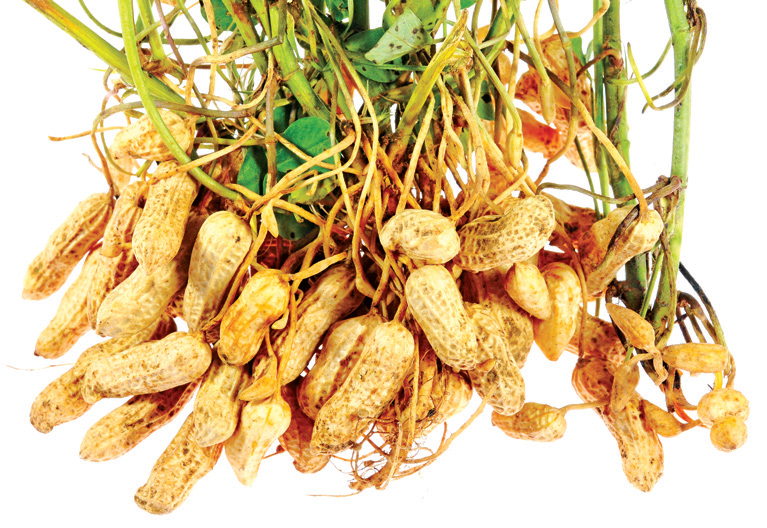
The learner will be able to
Acquire knowledge about origin, area of cultivation and uses of various food yielding plants.
Describe the different spices and condiments and their uses.
Elicit the uses of fibre, timbers, paper and dye yielding plants.
Acquire knowledge about the active principles, chemical composition and medicinal uses of plants.
Gains knowledge of organic farming- bio fertilisers and bio pest repellants.
10.1 Food Plants
10.2 Spices and Condiments
10.3 Fibre
10.4 Timber
10.5 Latex
10.6 Pulp wood
10.7 Dye
10.8 Cosmetics
10.9 Traditional system of medicines
10.10 Medicinal plants
10.11 Entrepreneurial Botany

The land and water of the earth sustain a vast assemblage of plants upon which all other living forms are directly or indirectly dependent. Pre-historic humans lived on berries, tubers, herbage, and the wild game which they collected and hunted that occupied whole of their time. Domestication of plants and animals has led to the production of surplus food which formed the basis for civilizations. Early civilization in different parts of the world has domesticated different species of plants for various purposes. Based on their utility, the economically useful plants are classified into food plants, fodder plants, fibre plants, timber plants, medicinal plants, and plants used in paper industries, dyes and cosmetics. Selected examples of economically important plants for each category are discussed in this chapter.
Currently about 10,000 food plants are being used of which only around 1,500 species were brought under cultivation. However, food base of majority of the population depends only on three grass species namely rice, wheat and maize.
The word cereal is derived from Ceres, which according to the Roman mythology denotes “Goddess of agriculture”. All cereals are members of grass family OPEN BRACKET Poaceae CLOSE BRACKET that are grown for their edible starchy seeds. The prominence of cereals as food plants is due to the following attributes:
1. Greater adaptability and successful colonisation on every type of habitat.
2. The relative ease of cultivation
3. Tillering property that produce more branches which results in higher yield per unit area.
4. Compact and dry grains that they can be easily handled, transported and stored without undergoing spoilage.
5. High caloric value that provides energy.
The nutrients provided by cereals include carbohydrates, proteins, fibres and a wide range of vitamins and minerals. Cereals can be classified into two different types based on their size namely Major Cereals and Minor Cereals.

Figure 10.1: Major Cereals
Botanical name : Oryza sativa
Paddy is a semi-aquatic crop and is grown in standing water. It is an important food crop of the world, occupying the second position in terms of area under cultivation and production, next to wheat. Rice is the chief source of carbohydrate.
Origin and Area of cultivation
South East Asia is considered as the center of origin of rice. Earliest evidences of rice cultivation have been found in China, India and Thailand. It is mainly cultivated in Delta and irrigated regions of Tamil Nadu.
Uses
Rice is the easily digestible calorie rich cereal food which is used as a staple food in Southern and North East India. Various rice products such as Flaked rice OPEN BRACKET Aval CLOSE BRACKET, Puffed rice SLASH parched rice OPEN BRACKET Pori CLOSE BRACKET are used as breakfast cereal or as snack food in different parts of India.
Rice bran oil obtained from the rice bran is used in culinary and industrial purposes.
Husks are used as fuel, and in the manufacture of packing material and fertilizer.
Botanical name : Triticum aestivum
Origin and Area of cultivation
Earliest evidence for wheat cultivation comes from Fertile Crescent region. The common cultivated wheat, Triticum aestivum is cultivated for about 7,500 years. Wheat is mostly cultivated in the North Indian states such as Uttar Pradesh, Punjab, Haryana, Rajasthan, Madhya Pradesh and Bihar.
Uses
Wheat is the staple food in Northern India. Wheat flour is suitable to make bread and other bakery products. Processed wheat flour, that has little fibre, is called Maida which is used extensively in making parota, naan and bakery products. Malted wheat is a major raw material for producing alcoholic beverages and nutritive drinks.
Box item

Pseudo cereal - Chenopodium quinoa
PSEUDO-CEREAL
The term pseudo-cereal is used to describe foods that are prepared and eaten as a whole grain, but are botanical outliers from grasses. Example: quinoa. It is actually a seed from the Chenopodium quinoa plant belongs to the family Amaranthaceae. It is a gluten-free, whole-grain carbohydrate, as well as a whole protein OPEN BRACKET meaning it contains all nine essential amino acids CLOSE BRACKET and have been eaten for 6000 years in Andes hill region.
Uses
Most of the corn produced is used as fodder than food. Corn syrup is used in the manufacture of infant foods. Corn is a raw material in the industrial production of alcohol and alcoholic beverages.
The term millet is applied to a variety of very small seeds originally cultivated by ancient people in Africa and Asia. They are gluten free and have less glycemic index.

Figure 10.2: Millets
Finger Millet – Ragi
Botanical name : Eleusine coracana
Finger millet is the crop of early introduction from East Africa into India. Ragi is rich in calcium.
Uses
It is used as a staple food in many southern hilly regions of India. Ragi grains are made into porridge and gruel. Ragi malt is the popular nutrient drink. It is used as a source of fermented beverages.
Sorghum
Botanical name : Sorghum vulgare
Sorghum is native to Africa. It is one of the major millets in the world and is rich in calcium and iron.
Uses
It is fed to poultry, birds, pigs and cattle and a source of fermented alcoholic beverage.

Figure 10.3: Minor Millets
Botanical name : Setaria italica
This is one of the oldest millet used traditionally in India. Which is domesticated first in China about 6000 years. Rich in protein, carbohydrate, vitamin B and C, Potassium and Calcium.
Uses
It supports in strengthening of heart and improves eye sight. Thinai porridge is given to lactating mother.
Kodo Millet
Botanical name : Paspalum scrobiculatum
Kodo millet is originated from West Africa, which is rich in fibre, protein and minerals.
Uses
Kodo millet is ground into flour and used to make pudding. Good diuretic and cures constipation. Helps to reduce obesity, blood sugar and blood pressure.

Figure 10.4: Pulses
The word Pulse is derived from the Latin words ‘puls’ or ‘pultis’ meaning “thick soup”. Pulses are the edible seeds that are harvested from the fruits of Fabaceae. They provide vital source of plant-based protein, vitamins and minerals for people around the globe.
Botanical name : Vigna mungo
Origin and Area of cultivation
Black gram is native to India. Earliest archeobotanical evidences record the presence of black gram about 3,500 years ago. It is cultivated as a rain fed crop in drier parts of India. India contributes to 80 percentage of the global production of black gram. Important states growing black gram in India are Uttar Pradesh, Chattisgarh and Karnataka.
Uses
Black gram is eaten whole or split, boiled or roasted or ground into flour. Black gram batter is a major ingredients for the preparation of popular Southern Indian breakfast dishes. Split pulse is used in seasoning Indian curries.
Botanical name : Cajanus cajan
Origin and Area of cultivation: It is the only pulse native to Southern India. It is mainly grown in the states of Maharashtra, Andhra Pradesh, Madhya Pradesh, Karnataka and Gujarat.
Uses
Red gram is a major ingredient of sambar, a characteristic dish of Southern India. Roasted seeds are consumed either salted or unsalted as a popular snack. Young pods are cooked and consumed.
Botanical name : Vigna radiata
Origin and Area of cultivation
Green gram is a native of India and the earliest archaeological evidences are found in the state of Maharashtra. It is cultivated in the states of Madhya Pradesh, Karnataka and Tamil Nadu.
Uses
It can be used as roasted cooked and sprouted pulse. Green gram is one of the ingredients of pongal, a popular breakfast dish in Tamil Nadu. Fried dehulled and broken or whole green gram is used as popular snack. The flour is traditionally used as a cosmetic, especially for the skin.
While walking through a market filled with fresh vegetables like stacks of lady’s finger, mountains of potatoes, pyramids of brinjal, tomatoes, cucurbits, we learn to choose the vegetables that is fresh, tender, ripe and those suit the family taste through experience and cultural practices.
Why do we need to eat vegetables and what do they provide us QUESTION MARK
Vegetables are the important part of healthy eating and provide many nutrients, including potassium, fiber, folic acid and vitamins A, E and C. The nutrients in vegetables are vital for maintenance of our health.
Botanical name : Abelmoschus esculentus
Family: Malvaceae
Origin and Area of cultivation
Lady’s finger is a native of the Tropical Africa. Assam, Maharashtra and Gujarat are the important states where Lady’s finger is grown in abundance. Coimbatore, Dharmapuri and Vellore are the major cultivating regions of Tamil Nadu.
Uses
The fresh and green tender fruits are used as a vegetable. Often they are sliced and dehydrated to conserve them for later use. It has most important nutrients.
Edible fruits are fleshy structures with a pleasant aroma and flavours. Fruits are sources of many nutrients including potassium, dietary fiber, folic acid and vitamins.Depending on the climatic region in which fruit crops grow, they can be classified into temperateOPEN BRACKET apple, pear, plum CLOSE BRACKET and tropical fruits OPEN BRACKET mango, jack, banana CLOSE BRACKET. In this chapter we will study an example of tropical fruit.
Botanical name : Mangifera indica
Family: Anacardiaceae
Origin and Area of cultivation
The mango is the native to Southern Asia, especially Burma and Eastern India. It is the National fruit of India. Major mango producing States are Andhra Pradesh, Bihar, Gujarat and Karnataka. Salem, Krishnagiri, Dharmapuri are the major mango producing districts of Tamil Nadu. Some of the major cultivars of mango in India are Alphonsa, Banganapalli, neelam and malgova.
Uses
Mango is the major table fruit of India, which is rich in beta carotenes. It is utilized in many ways, as dessert, canned, dried and preserves in Indian cuisine. Sour, unripe mangoes are used in chutneys, pickles, side dishes, or may be eaten raw with salt and chili. Mango pulp is made into jelly. Aerated and non-aerated fruit juice is a popular soft drink.

Figure 10.5: Mango
Nuts are simple dry fruits composed of a hard shell and an edible kernel. They are packed with a good source of healthy fats, fibre, protein, vitamins, minerals and antioxidants.

Figure 10.6: Nuts
Cashew nut
Botanical name : Anacardium occidentale
Family: Anacardiaceae
Origin and Area of cultivation
Cashew has originated in Brazil and made its way to India in the 16th century through Portuguese sailors. Cashew is grown in Kerala, Karnataka, Goa, Maharashtra, Tamil Nadu, and Orissa.
Uses
Cashews are commonly used for garnishing sweets or curries, or ground into a paste that forms a base of sauces for curries or some sweets. Roasted and raw kernels are used as snacks.
We experienced sweetness while eating the stems of sugarcane, roots of sugar beet, fruits of apple and while drinking palmyra sap. This is due to the different proportions of sugars found in it. Sugar is the generic name for sweet tasting soluble carbohydrate, which are used in foods and beverages. Sugars found in sugarcane and palmyra make them ideal for efficient extraction to make commercial sugar.
Botanical name : Saccharum officinarum
Family : Poaceae
Origin and Area of cultivation
The cultivated Saccharum officinarum has evolved by repeated back crossing of S.officinarum of New Guinea with wild S.spontaneum of India to improve the quality. All districts except Kanyakumari and Nilgiris of Tamil Nadu cultivate Sugarcane.
Uses
Sugar cane is the raw material for extracting white sugar. Sugarcane supports large number of industries like sugar mills producing refined sugars, distilleries producing liquor grade ethanol and millions of jaggery manufacturing units. Fresh sugarcane juice is a refreshing drink. Molasses is the raw material for the production of ethyl alcohol.

Figure 10.7: Sugars
Palmyra OPEN BRACKET State tree of Tamil Nadu CLOSE BRACKET
Botanical name : Borassus flabellifer
Family: Arecaceae
Origin and Area of cultivation
Palmyra is native to tropical regions of Africa, Asia and New Guinea. Palmyra grows all over Tamil Nadu, especially in coastal districts.
Uses
Exudate from inflorescence axis is collected for preparing palm sugar. Inflorescence is tapped for its sap which is used as health drink.
Sap is processed to get palm jaggery or fermented to give toddy.
Endosperm is used as a refreshing summer food.
Germinated seeds have an elongated embryo surrounded by fleshy scale leaf which is edible.
Why fried foods are tastier than boiled foods QUESTION MARK
There are two kinds of oils namely, essential oils and vegetable oils or fatty oils. The essential oils or volatile oils which possess aroma evaporate or volatilize in contact with air. Any organ of a plant may be the source of essential oil. For example, flowers of Jasmine, fruits of orange and roots of ginger. The vegetable oils or non-volatile oils or fixed oils that do not evaporate. Whole seeds or endosperm form the sources of vegetable oils.
Let us know about few oil seeds

Botanical name : Arachis hypogaea
Family : Fabaceae
Origin and Area of Cultivation:
Groundnut is native of Brazil. Portuguese introduced groundnut into Africa. The Spanish took it to the South East Asia and India via Philippines. In India Gujarat, Andhra Pradesh and Rajasthan are top producers.
Uses
Nuts contain about 45 percentage oil. The kernels are also rich sources of phosphorous and vitamins, particularly thiamine, riboflavin and niacin. It is premium cooking oil because it does not smoke. Lower grade oil is used in manufacture of soaps and lubricants.
Sesame SLASH Gingelly
Botanical name : Sesamum indicum
Family : Pedaliaceae
Origin and Area of cultivation:
Sesamum indicum has originated from Africa.Sesame is cultivated as a dry land crop. West Bengal and Madhya Pradesh are the top producers in India during 2017-18. It is considered as a healthy oil in Southern Indian culture.
Uses
Sesame oil is used for mostly culinary purposes in India. Lower grades are used in manufacture of soaps, in paint industries, as a lubricant and as an illuminant. In India, the oil is the basis of most of the scented oils used in perfumes. Sesame seed snacks are popular throughout India.

Figure 10.8: Oil Seeds
How about a cup of coffee or tea QUESTION MARK We always entertain our guests with this offer.
All non-alcoholic beverages contain alkaloids that stimulate central nervous system and also possess mild diuretic properties.

Figure 10.9: Beverages
Botanical name : Coffea arabica
Family : Rubiaceae
Why does a student or a driver prefer tea or coffee during night work QUESTION MARK
Origin and Area of cultivation:
Coffea arabica is the prime source of commercial coffee which is native to the tropical Ethiopia An Indian Muslim saint, Baba Budan introduced coffee from Yemen to Mysore.Karnataka is the largest coffee producing state in India followed by Tamil Nadu and Kerala. Tamil Nadu is the largest consumer of coffee in India.
Uses
Drinking coffee in moderation provides the following health benefits:
Caffeine enhances release of acetylcholine in brain, which in turn enhances efficiency. It can lower the incidence of fatty liver diseases, cirrhosis and cancer. It may reduce the risk of type 2 diabetes.
“Aroma attracts everyone” History:
Spices were used extensively throughout the world for several thousands of years. Records of use of garlic and onion dates back 2500 years.
Majority of the spices are native to Mediterranean region, India and South East Asian countries. Spices, especially pepper triggered the search for sea route to India and paved way for the exploratory voyages by Spanish and Portuguese.
Spices are accessory foods mainly used for flavouring during food preparation to improve their palatability. Spices are aromatic plant products and are characterized by sweet or bitter taste. Spices are added in minimal quantities during the cooking process. For example black pepper.
Condiments, on the other hand, are flavouring substances having a sharp taste and are usually added to food after cooking. For example, curry leaves.
The following spices and condiment are discussed in detail.
Spices

Figure 10.10: Spices
Botanical name : Elettaria cardamomum
Family : Zingiberaceae
Origin and Area of cultivation:
It is indigenous to Southern India and Sri Lanka. Cardamom is called as “Queen of Spices”. In India it is one of the main cash crops cultivated in the Western Ghats, and North Eastern India
Uses
The seeds have a pleasing aroma and a characteristic warm, slightly pungent taste. It is used for flavouring confectionaries, bakery products and beverages. The seeds are used in the preparation of curry powder, pickles and cakes. Medicinally, it is employed as a stimulant and carminative. It is also chewed as a mouth freshener.
Botanical name : Piper nigrum
Family : Piperaceae
Origin and Area of cultivation:
It is indigenous to Western Ghats of India. Pepper is one of the most important Indian spices referred to as the “King of Spices” and also termed as “Black Gold of India”. Kerala, Karnataka and Tamil Nadu are the top producers in India.
The characteristic pungency of the pepper is due to the presence of alkaloid Piperine. There are two types of pepper available in the market namely black and white pepper.
Uses
It is used for flavouring in the preparation of sauces, soups, curry powder and pickles. It is used in medicine as an aromatic stimulant for enhancing salivary and gastric secretions and also as a stomachic. Pepper also enhances the bio-absorption of medicines.
Botanical name : Curcuma longa
Family : Zingiberaceae
Origin and Area of cultivation:
It is indigenous to Southern Asia India is the largest producer, consumer and exporter of turmeric. Erode in TamilNadu is the World’s largest wholesale turmeric market.
Uses
Turmeric is one of the most important and ancient Indian spices and used traditionally over thousands of years for culinary, cosmetic, dyeing and for medicinal purposes.
It is an important constituent of curry powders.
Turmeric is used as a colouring agent in pharmacy, confectionery and food industry.
Rice coloured with turmeric OPEN BRACKET yellow CLOSE BRACKET is considered sacred and auspicious which is used in ceremonies.
It is also used for dyeing leather, fibre, paper and toys.
Curcumin extracted from turmeric is responsible for the yellow colour.
Curcumin is a very good anti-oxidant which may help fight various kinds of cancer. It has anti-inflammatory, anti-diabetic, anti-bacterial, anti-fungal and antiviral activities. It stops platelets from clotting in arteries, which leads to heart attack.
Botanical name : Capsicum annuum,
C. frutescens.
Family : Solanaceae
Origin and Area of cultivation:
Capsicum is native to South America and is popularly known as chillies or red pepper in English.
India is leading producer and exporter. C. annuum and C. frutescens are important cultivated species of chillies.
Uses
The fruits of C.annuum are less pungent than the fruits of C.frutescens. C.annum includes large, sweet bell peppers. Long fruit cultivars of this species are commercially known as ‘Cayenne pepper’ which are crushed, powdered and used as condiment. Chillies are used in manufacture of sauces, curry powders and preparation of pickles. Capsaicin is an active component of chillies. It has pain relieving properties and used in pain relieving balms. Chillies are a good source of Vitamin C, A and E.
Capsaicin is responsible for the pungency or spicy taste of chillies. Pungency of Chillies is measured
in Scoville Heat Units OPEN BRACKET SHU CLOSE BRACKET. World’s hottest chilli, Carolina reaper pepper measures 2200000 SHU. Naga viper chilli is the hottest in India that measures 1349000 SHU. Commonly used cayenne
pepper measures 30000 to 50000 SHU.
Tamarind
Botanical name:
Tamarindus indica
Family : Fabaceae- Caesalpinioideae
Caesalpinioideae
Origin and Area of cultivation: Tamarind is native of tropical African region and was introduced into India several thousand years before. It is cultivated in India, Myanmar, south asian countries and several African and Central American countries. Tamarind has long been used in Africa and in Southern Asia. The name tamarindus is of Arabian origin, which means “dates of India”. OPEN BRACKET tamar – dates; Indus – India CLOSE BRACKET.
Uses
It is used in flavouring sauces in the United States and Mexico. In India, the fruit pulp is major ingredients for many culinary preparations. Sweet tamarinds are sold as table fruits in India imported from Thailand and Malaysia.

Figure 10.11 : Tamarind
Botanically a fiber is a long narrow and thickwalled cell.

Figure 10.12: Fibres
Botanical name : Gossypium spp.
Family : Malvaceae
Cotton is the world’s most important nonfood commercial crop.
Origin and Area of cultivation:
It is one of the oldest cultivated crops of the world. It has been cultivated for about 8000 years both in new world and in old world. Commercial cotton comes from four cotton species: two from the new world and two from the old world. OPEN BRACKET 1 CLOSE BRACKET G. hirsutum OPEN BRACKET 2 CLOSE BRACKET G.barbadense are the New world species and OPEN BRACKET 3 CLOSE BRACKET G. arboretum OPEN BRACKET 4 CLOSE BRACKET G. herbaceum are the old world species. In India cotton is cultivated in Gujarat, Maharashtra, Andhra Pradesh and Tamil Nadu.
Uses
It is mainly used in the manufacturing of various textile, hosiery products, toys and is also used in hospitals.
Botanical name : Corchorus species.
Family : Malvaceae
Origin and Area of cultivation:
Jute is derived from the two cultivated species OPEN BRACKET 1 CLOSE BRACKET Corchorus capsularis and OPEN BRACKET 2 CLOSE BRACKET C.olitorius is of African origin whereas C. capsularis, is believed to be Indo-Burmese origin. It is an important cultivated commercial crop in Gangetic plains of India and Bangladesh.
Uses
It is one of the largest exported fibre material of India. The jute industry occupies an important place in the national economy of India. Jute is used for ‘safe’ packaging in view of being natural, renewable, bio-degradable and eco-friendly product. It is used in bagging and wrapping textile. About 75 percentage of the jute produced is used for manufacturing sacks and bags. It is also used in manufacture of blankets, rags, curtains etc. It is also being used as a textile fibre in recent years.
The basic need of shelter is obtained from the timber trees.

Figure 10.13: Timber
Botanical name : Tectona grandis
Family: Lamiaceae
Origin and Area of cultivation:
This is native to South east Asia. It is observed wild in Assam. But cultivated in Bengal, Assam, Kerala, Tamil Nadu and North-West India.
Uses
It is one of best timbers of the world. The heartwood is golden yellow to golden brown when freshly sawn, turning darker when exposed to light. Known for its durability as it is immune to the attack of termites and fungi. The wood does not split or crack and is a carpenter friendly wood. It was the chief railway carriage and wagon wood in India. Ship building and bridge-building depends on teakwood. It is also used in making boats, toys, plywood, door frames and doors.

Figure 10.14: Rubber Tree
Botanical name : Hevea brasiliensis
Family : Euphorbiaceae
Origin and Area of cultivation:
It is a native of Brazil and was introduced outside its native range during the colonial period and has become an important cash crop. Asia contributed 90 percentage of the world production. Kerala is the largest producer in India followed by Tamil Nadu.
Uses
Tyre and other automobile parts manufacturing industries consume 70 percentage of the rubber production. Rubber is used in manufacturing footwear, wire and cable insulations, raincoats, household and hospital goods, shock absorbers, belts, sports goods, erasers, adhesives, and rubber-bands Hard rubber is used in the electrical and radio engineering industries Concentrated latex is used for making gloves, balloons and condoms. Foamed latex is used in the manufacture of cushions, pillows and lifebelts.

Box item
Rubber – Vulcanization
Charles Goodyear invented vulcanization in 1839. He found that the defects in rubber articles could be overcome by heating rubber with sulphur under pressure at 1500 C. The process was called vulcanization. The name was given from the Roman God of Fire, Vulcan. Because of this, solid rubber tyres were used for first time in 1867. That is why we smoothly travel on road.

Figure 10.15 : Wood pulp
The term paper is derived from the word ‘papyrus’ a plant OPEN BRACKET Cyperus papyrus CLOSE BRACKET that was used by Egyptians to make paper-like materials. Paper production is a Chinese invention. The Chinese discovered the paper that was prepared from the inner bark of paper mulberry in 105 A.D. For a long time, the art of paper making remained a monopoly of the Chinese until Arabs learned the technique and improved it around 750 A.D. Invention of printing increased the demand for paper.
Manufacture of Wood pulp:
Wood is converted into pulp by mechanical, and chemical processes. Wood of Melia azadirachta, Neolamarkia chinensis, Casuarina spp, Eucalyptus s p p are used for making paper pulp.
Box item
Purified dissolving pulp is used as a basic material in the manufacture of rayon or artificial silk, fabrics, transparent films OPEN BRACKET cellophane, cellulose acetate films CLOSE BRACKET, plastics. The viscose process of making rayon is the most common process.
The ability to perceive colour is a wonderful aspect of human eyes and dyes add colour to the goods we use. They have been in use since the ancient times. The earliest authentic records of dyeing were found in the tomb painting of ancient Egypt. Colourings on mummy cements OPEN BRACKET wrapping CLOSE BRACKET included saffron and indigo. They can also be seen in rock paintings in India.
Henna
Botanical name : Lawsonia inermis
Family : Lythraceae
Origin and Area of cultivation:
It is indigenous to North Africa and South-west Asia. It is grown mostly throughout India, especially in Gujarat, Madya Pradesh and Rajasthan.
Uses
An orange dye ‘Henna’ is obtained from the leaves and young shoots of Lawsonia inermis. The principal colouring matter of leaves ‘lacosone” is harmless and causes no irritation to the skin. This dye has long been used to dye skin, hair and finger nails. It is used for colouring leather, for the tails of horses and in hair-dyes.

Figure 10.16: Naturals Dyes
Traditionally in Southern India, people have been using turmeric, green gram powder, henna, sigaikai and usilai for their skin and hair care. These were mostly home prepared products that are used for grooming. Today, cosmetics have a high commercial value and have become chemical based industrial products. Providing personal care services has become a major industry. In recent years,people have realized the hazards of chemicalbased cosmetics and are turning back to natural products. In this chapter one of the major plants namely Aloe which is used in the cosmetic industries is discussed.

Figure 10.17: Aloe vera
Botanical name : Aloe vera
Family: Asphodelaceae OPEN BRACKET formerly Liliaceae CLOSE BRACKET
Origin and Area of cultivation:
It is a native of Sudan. It is cultivated on a large scale in Rajasthan, Gujarat, Maharashtra, Andhra Pradesh and Tamil Nadu.
Uses
‘Aloin’ OPEN BRACKET a mixture of glucosides CLOSE BRACKET and its gel are used as skin tonic. It has a cooling effect and moisturizing characteristics and hence used in preparation of creams, lotions, shampoos, shaving creams, after shave lotions and allied products. It is used in gerontological applications for rejuvenation of aging skin. Products prepared from aloe leaves have multiple properties such as emollient, antibacterial, antioxidant, antifungal and antiseptic. Aloe vera gel is used in skin care cosmetics.
The word perfume is derived from the Latin word Per OPEN BRACKET through CLOSE BRACKET and fumus OPEN BRACKET to smoke CLOSE BRACKET, meaning through smoke. It refers to the age-old tradition of burning scented woods at religious ceremonies.In early days, when people were less conscious of personal hygiene, essential oils not only masked offensive odours, but also may have acted as antiseptics. Perfumes are added to baths and used for anointing the body.
Perfumes are manufactured from essential oil which are volatile and aromatic. Essential oils are found at different parts of the plant such as leaves, OPEN BRACKET curry leaf, mint CLOSE BRACKET, flowers OPEN BRACKET rose, jasmine CLOSE BRACKET, fruits OPEN BRACKET citrus, straw berry CLOSE BRACKET and wood OPEN BRACKET sandal, eucalyptus CLOSE BRACKET.

‘Madurai Malli’ is the pride of Madurai has a distinct reputation universally because of its uniqueness and has been given the Geographical Indications OPEN BRACKET GI CLOSE BRACKET mark by the Geographical indication Registry of India. Madurai malli has thick petals with long stalk equal to that of petals and the distinct fragrance is due to the presence of chemicals such as jasmine and alpha terpineol. This makes it easy to distinguish Madurai Malli from other places. This is the second GI tag for Jasmine after ‘Mysore Malli’.

Figure 10.18: Jasmine
Botanical name : Jasminum grandiflorum
Family: Oleaceae
Jasmine, as a floral perfume, ranks next to the rose oil. Major species cultivated on the commercial scale is Jasminum grandiflorum, a native of the north-western Himalayas. In Tamil Nadu, the major jasmine cultivation centres are Madurai and Thovalai of Kanyakumari District. The essential oil ispresent in the epidermal cells of the inner and outer surfaces of both the sepals and petals. One ton of Jasmine blossom yields about 2.5 to 3 kg of essential oil, comprising 0.25 to 3 percentage of the weight of the fresh flower.
Uses
Jasmine flowers have been used since ancient times in India for worship, ceremonial purposes,
incense and fumigants, as well as for making perfumed hair oils, cosmetics and soaps. Jasmine oil is an essential oil that is valued for its soothing, relaxing, antidepressant qualities.
Jasmine blends well with other perfumes. It is much used in modern perfumery and cosmetics and has become popular in air freshners, anti-perspirants, talcum powders, shampoos and deodorants.
India has a rich medicinal heritage. A number of Traditional Systems of Medicine OPEN BRACKET TSM CLOSE BRACKET are practiced in India some of which come from outside India. TSM in India can be broadly classified into institutionalized or documented and non-institutionalized or oral traditions. Institutionalized Indian systems include Siddha and Ayurveda which are practiced for about two thousand years. These systems have prescribed texts in which the symptoms, disease diagnosis, drugs to cure, preparation of drugs, dosage and diet regimes, daily and seasonal regimens. Non- institutional systems, whereas, do not have such records and or practiced by rural and tribal peoples across India. The knowledge is mostly held in oral form. The TSM focus on healthy lifestyle and healthy diet for maintaining good health and disease reversal.
Siddha is the most popular, widely practiced and culturally accepted system in Tamil Nadu. It is based on the texts written by 18 Siddhars. There are different opinions on the constitution of 18 Siddhars. The Siddhars are not only from Tamil Nadu, but have also come from other countries. The entire knowledge is documented in the form of poems in Tamil. Siddha is principally based on the Pancabūta philosophy. According to this system three humors namely Vātam, Pittam and Kapam that are responsible for the health of human beings and any disturbance in the equilibrium of these humors result in ill health. The drug sources of Siddha include plants, animal parts, marine products and minerals. This system specializes in using minerals for preparing drugs with the long shelf-life. This system uses about 800 herbs as source of drugs. Great stress is laid on disease prevention, health promotion, rejuvenation and cure.
Ayurveda supposed to have originated from Brahma. The core knowledge is documented by Charaka, Sushruta and Vagbhata in compendiums written by them. This system is also based on three humor principles namely, Vatha, Pitha and Kapha which would exist in equilibrium for a healthy living. This system Uses more of herbs and few animal parts as drug sources. Plant sources include a good proportion of Himalayan plants. The Ayurvedic Pharmacopoeia of India lists about 500 plants used as source of drugs.
Folk systems survive as an oral tradition among innumerable rural and tribal communities of India. A consolidated study to document the plants used by ethnic communities was launched by the Ministry of Environment and Forests, Government of India in the form of All India Coordinated Research Project on Ethnobiology. As a result about 8000 plant species have been documented which are used for medicinal purposes. The efforts to document in several under-explored and unexplored pockets of India still continue. Major tribal communities in Tamil Nadu who are known for their medicinal knowledge include Irulas, Malayalis, Kurumbas, Paliyans and Kaanis. Some of the important medicinal plants are discussed below.
India is a treasure house of medicinal plants. They are linked to local heritage as well as to global-trade. All institutional systems in India primarily use medicinal plants as drug sources. At present, 90 percentagecollection of medicinal plants is from the non-cultivated sources. Growing demand for herbal products has led to quantum jump in volume of plant materials traded within and across the countries. Increasing demand exerts a heavy strain on the existing resources. Now efforts are being made to introduce cultivation techniques of medicinal plants to the farmers. Medicinal plants play a significant role in providing primary health care services to rural and tribal people. They serve as therapeutic agents as well as important raw materials for the manufacture of traditional and modern medicines. Medicinally useful molecules obtained from plants that are marketed as drugs are called Biomedicines. Medicinal plants which are marketed as powders or in other modified
forms are known as Botanical medicines.

Figure 10.19: Medicinal Plants
Botanical name : Phyllanthus amarus
Family : Euphorbiaceae OPEN BRACKET Now in Phyllanthaceae CLOSE BRACKET
Origin and Area of cultivation:
The plant is a native of Tropical American region and is naturalised in India and other tropical countries. It is not cultivated and is collected from moist places in plains. Phyllanthus maderspatensis is also commonly sold in the medicinal plant markets collected from non-forest are as keelaanelli.
Active principle: Phyllanthin is the major chemical component.
Medicinal importance
Phyllanthus is a well-known hepato-protective plant generally used in Tamil Nadu for the treatment of Jaundice. Research carried out by Dr. S P Thyagarajan and his team from University of Madras has scientifically proved that the extract of P. amarus is effective against hepatitis B virus.
Botanical name : Andrographis paniculata
Family : Acanthaceae
Andrographis paniculata, known as the King of Bitters is traditionally used in Indian systems of medicines.
Active principle:
Andrographolides.
Medicinal importance:
Andrographis is a potent hepatoprotective and is widely used to treat liver disorders. Concoction of Andrographis paniculata and eight other herbs OPEN BRACKET Nilavembu Kudineer CLOSE BRACKET is effectively used to treat malaria and dengue.
Psychoactive Drugs
In the above chapter you have learnt about plants that are used medicinally to treat various diseases. Phytochemicals SLASH drugs from some of the plants alter an individual’s perceptions of mind by producing hallucination are known as psychoactive drugs. These drugs are used in all ancient culture especially by Shamans and by traditional healers. Here we focus on two such plants namely Poppy and Marijuana.
Opium poppy
Family: Papaveraceae
Origin and Area of cultivation:
Opium poppy is native to South Eastern Europe and Western Asia. Madhya Pradesh, Rajasthan and Uttar Pradesh are the licenced states to cultivate opium poppy.
Opium is derived from the exudates of fruits of poppy plants. It was traditionally used to induce sleep and for relieving pain. Opium yields Morphine, a strong analgesic which is used in surgery. However, opium is an addiction forming drug.
Botanical name : Cannabis sativa
Family: Cannabiaceae
Origin and Area of Cultivation:
Marijuana is native to China. States such as Gujarat, Himachal Pradesh, Uttarkand, Uttarpradesh and Madhaya Pradesh have legally permitted to cultivate industrial hempSLASHMarijuana
The active principle in Marijuana is trans-tetrahydrocanabinal OPEN BRACKET THC CLOSE BRACKET. It possess a number of medicinal properties. It is an effective pain reliever and reduces hypertension. THC is used in treating Glaucoma a condition in which pressure develops in the eyes. THC is also used in reducing nausea of cancer patients undergoing radiation and chemotherapy. THC provides relief to bronchial disorders, especially asthma as it dilates bronchial vessels. Because of these medicinal properties, cultivation of cannabis is legalized in some countries. However, prolonged use causes addiction and has an effect on individual’s health and society.
Hence most of the countries have banned its cultivation and use.
Serial Number |
Common Name |
Tamil Name |
Botanical Name |
Family |
Plant part used |
Medicinal Uses |
1. |
Holy basil |
Thulasi |
Ocimum sanctum |
Lamiaceae |
Leaves and Roots |
The leaves are stimulant, antiseptic, antihypertensive and anti-bacterial and expectorant used in bronchitis. Decoction of roots is given as a diaphoretic in malarial fevel. |
2. |
Indian gooseberry |
Nelli |
Phyllanthus emblica |
Phyllanthaceae |
Fruit |
It is a potent rejuvenator and immune modulator. It has a anti-ageing properties. It helps to promote longevity, enhance digestion, treat constipation and reduce fever and cough |
3. |
Indian Acalypha |
Kupaimeni |
Acalypha indica |
Euphorbiaceae |
Leaves |
Used to cure skin diseases caused by ringworms. Powdered leaves are used to cure bedsores and infected wounds. |
4. |
Vilvam |
vilvam |
Aegle marmelos |
Rutaceae |
Fruit |
The unripe fruit is used to treat problems of stomach indigestion. It kills intestinal parasites. |
5. |
Veldt grape |
Pirrndai |
Cissus quadrangulais |
Vitaceae |
Stem and root |
Paste obtained from the powdered stem and root of this plant is used in bone fractures. Whole plant is useful to treat asthma and stomach troubles. |

Drugs come in various forms and can be taken in numerous ways. Some are legal and others are not. Drug abuse and misuse can cause numerous health problems and in serious cases death can occur.
The Narcotics Control Bureau OPEN BRACKET NCB CLOSE BRACKET is the nodal drug law enforcement and intelligence agency of India and is responsible for fighting drug trafficking and the abuse of illegal substances.
Entrepreneurial Botany is the study of how new businesses are created using plant resources as well as the actual process of starting a new business. An entrepreneur issomeone who has an idea and who works to create a product or service that people will buy, by building an organization to support the sales. Entrepreneurship is now a popular topic for higher secondary students, with a focus on developing ideas to create new ventures among the young people. Vast opportunities are there for the students of Botany. In the present scenario students should acquire ability to merge skills and knowledge in a meaningful way. Converting botanical knowledge into a business idea that can be put into practice for earning a livelihood is the much-needed training for the students.
Few examples for activities of entrepreneurship are Mushroom cultivation, Single cell protein OPEN BRACKET SCP CLOSE BRACKET production, Seaweed liquid fertilizer, Organic farming, Terrarium, Bonsai and Cultivation of medicinal and aromatic plants This part of the chapter is dealt about organic farming in brief.
Organic farming is an alternative agricultural system in which plantsSLASHcrops are cultivated in natural ways by using biological inputs to maintain soil fertility and ecological balance thereby minimizing pollution and wastage. Indians were organic farmers by default until the green revolution came into practice.
Use of biofertilizers is one of the important components of integrated organic farm management, as they are cost effective and renewable source of plant nutrients to supplement the chemical fertilizers for sustainable agriculture. Several microorganisms and their association with crop plants are being exploited in the production of biofertilizers. Organic farming is thus considered as the movement directed towards the philosophy of Back to Nature.

Figure 10.20: Preparation of organic pesticide
Pest like aphids, spider and mites can cause serious damage to flowers, fruits, and vegetables.These creatures attack the garden in swarms, and drain the life of the crop and often invite disease in the process. Many chemical pesticides prove unsafe for human and the environment. It turns fruits and vegetables unsafe for consumption. Thankfully, there are many homemade, organic options to turn to war against pests.
Botanical pest repellent and insecticide made with the dried leaves of Azadirachta indica
Preparation of Bio-pest repellent

Pluck leaves from the neem tree and chop the leaves finely.
The chopped up leaves were put in a 50-liter container and fill to half with water; put the lid on and leave it for 3 days to brew.
Using another container, strain the mixture which has brewed for 3 days to remove the leaves, through fine mesh sieve. The filtrate can be sprayed on the plants to repel pests.
To make sure that the pest repellent sticks tothe plants, add 100 ml of cooking oil and the same amount of soap water. OPEN BRACKET The role of the soap water is to break down the oil, and the role of the oil is to make it stick to the leaves CLOSE BRACKET.
The stewed leaves from the mixture can be used in the compost heap or around the base of the plants.
Early civilization in different parts of the world has domesticated different species of plants for various purposes. Based on their utility, the economically useful plants are classified into food plants, fibre plants, timber plants, medicinal plants, and plants used in paper industries, dyes and cosmetics.
However, food base of majority of the population depends on very few Cereals, Millets, Pulses, Vegetables, Fruits, Nuts, Sugars, Oil seeds, Beverages, Spices and Condiments.
Oils can be classified into two types namely, essential oils and vegetable oils. Fatty acids in oil may be saturated or unsaturated. The oil yielding plants are groundnut and sesame. The oils are used in cooking, making soaps and other purposes. Beverages contain alkaloids that stimulate central nervous system. Spices were used throughout the world for several years. Cardamom is ‘Queen of Spices’ used for flavouring confectionaries and beverages. Black pepper is King of Spices.
Botanically a fibre is a long, narrow, thick walled cell. Cotton and Jute are fibre yielding plants. Teak is wood used for making furniture. Rubber is produced from the latex of Hevea brasiliensis. Paper production is a Chinese invention. Dyes have been used since ancient times. The orange dye henna is from the leaves of Lawsonia. Perfumes are volatile and aromatic in nature, manufactured from essential oils which are found at different parts of the plant. Medicinal plants serve as therapeutic agents. Medicinally useful molecules obtained from these plants are marketed as drugs are called Biomedicines. Whereas phytochemicals from some of the plants which alter an individual’s perceptions of mind by producing hallucination are known as psychoactive drugs.
Entrepreneurial Botany is the study of how new businesses are created using plant resources as well as the actual process of starting a new business.

1. Consider the following statements and choose the right option.
1 CLOSE BRACKET Cereals are members of grass family.
2 CLOSE BRACKET Most of the food grains come from monocotyledon.
a CLOSE BRACKET OPEN BRACKET 1 CLOSE BRACKET is correct and OPEN BRACKET 2 CLOSE BRACKET is wrong
b CLOSE BRACKET Both OPEN BRACKET 1 CLOSE BRACKET and OPEN BRACKET 2 CLOSE BRACKET are correct
c CLOSE BRACKET OPEN BRACKET 1 CLOSE BRACKET is wrong and OPEN BRACKET 2 CLOSE BRACKET is correct
d CLOSE BRACKET Both OPEN BRACKET 1 CLOSE BRACKET and OPEN BRACKET 2 CLOSE BRACKET are wrong
2. Assertion: Vegetables are important part of healthy eating.
Reason: Vegetables are succulent structures of plants with pleasant aroma and flavours.
a CLOSE BRACKET Assertion is correct, Reason is wrong
b CLOSE BRACKET Assertion is wrong, Reason is correct
c CLOSE BRACKET Both are correct and reason is the correct explanation for assertion.
d CLOSE BRACKET Both are correct and reason is not the correct explanation for assertion.
3. Groundnut is native of dash
a CLOSE BRACKET Philippines
b CLOSE BRACKET India
c CLOSE BRACKET North America
d CLOSE BRACKET Brazil
4. Statement A: Coffee contains caffeine
Statement B: Drinking coffee enhances cancer
a CLOSE BRACKET A is correct, B is wrong
b CLOSE BRACKET A and B – Both are correct
c CLOSE BRACKET A is wrong, B is correct
d CLOSE BRACKET A and B – Both are wrong
5. Tectona grandis is coming under family
a CLOSE BRACKET Lamiaceae
b CLOSE BRACKET Fabaceae
c CLOSE BRACKET Dipterocaipaceae
d CLOSE BRACKET Ebenaceae
6. Tamarindus indica is indigenous to
a CLOSE BRACKET Tropical African region
b CLOSE BRACKET South India, Sri Lanka
c CLOSE BRACKET South America, Greece
d CLOSE BRACKET India alone
7. New world species of cotton
a CLOSE BRACKET Gossipium arboretum
b CLOSE BRACKET G.herbaceum
c CLOSE BRACKET Both a and b
d CLOSE BRACKET G.barbadense
8. Assertion: Turmeric fights various kinds of cancer
Reason: Curcumin is an anti-oxidant present in turmeric
a CLOSE BRACKET Assertion is correct, Reason is wrong
b CLOSE BRACKET Assertion is wrong, Reason is correct
c CLOSE BRACKET Both are correct d CLOSE BRACKET Both are wrong
9. Find out the correctly matched pair.
a CLOSE BRACKET Rubber Shorea robusta
b CLOSE BRACKET Dye Lawsonia inermis
c CLOSE BRACKET Timber Cyperus papyrus
d CLOSE BRACKET Pulp Hevea brasiliensis
10. Observe the following statements and pick out the right option from the following:
Statement 1 – Perfumes are manufactured from essential oils.
Statement 2 – Essential oils are formed at different parts of the plants.
a CLOSE BRACKET Statement 1 is correct
b CLOSE BRACKET Statement 2 is correct
c CLOSE BRACKET Both statements are correct
d CLOSE BRACKET Both statements are wrong
11. Observe the following statements and pick out the right option from the following:
Statement 1: The drug sources of Siddha include plants, animal parts, ores and minerals.
Statement 2: Minerals are used for preparing drugs with long shelf-life.
a CLOSE BRACKET Statement 1 is correct
b CLOSE BRACKET Statement 2 is correct
c CLOSE BRACKET Both statements are correct
d CLOSE BRACKET Both statements are wrong
12. The active principle trans-tetra hydro canabial is present in
a CLOSE BRACKET Opium
b CLOSE BRACKET Curcuma
c CLOSE BRACKET Marijuana
d CLOSE BRACKET Andrographis
13. Which one of the following matches is correct QUESTION MARK
a CLOSE BRACKET Palmyra - Native of Brazil
b CLOSE BRACKET Saccharun - Abundant in Kanyakumari
c CLOSE BRACKET Steveocide - Natural sweetener
d CLOSE BRACKET Palmyra sap - Fermented to give ethanol
14.Write the cosmetic uses of Aloe.
15.What is pseudo cereal QUESTION MARK Give an example. 17.Discuss which wood is better for making furniture.
16 A person got irritation while applying chemical dye. What would be your suggestion for alternative.
17. Name the humors that are responsible for the health of human beings.
18 Give definitions for organic farming QUESTION MARK
19.Which is called as the “King of Bitters” QUESTION MARK Mention their medicinal importance.
20. Differentiate bio-medicines and botanical medicines.
21. Write the origin and area of cultivation of green gram and red
22. What are millets QUESTION MARK What are its types QUESTION MARK Give example for each type.
24. If a person drinks a cup of coffee daily it will help him for his health. Is this correct QUESTION MARK
If it is correct, list out the benefits.
25. Enumerate the uses of turmeric.
26. What is TSM QUESTION MARK How does it classified and what does it focuses on QUESTION MARK
27. Write the uses of nuts you have studied.
28. Give an account on the role of Jasminum in perfuming
29. Give an account of active principle and medicinal values of any two plants you have studied.
30. Write the economic importance of rice.
31. Which TSM is widely practiced and culturally accepted in Tamil Nadu QUESTION MARK – explain
32. What are psychoactive drugs QUESTION MARK Add a note Marijuana and Opium
33. What are the King and Queen of spices QUESTION MARK Explain about them and their uses.
34. How will you prepare an organic pesticide for your home garden with the vegetables available from your kitchen QUESTION MARK
Glossary
Alzheimer’s disease:
A type of dementia that causes problems with memory, thinking and behavior
Antiperspirant:
Products whose primary function is to inhibit perspiration SLASH sweat
Anti-inflammatory:
The property of a substance or treatment that reduces swelling.
Antioxidant:
A substance that scavenges free radicals.
Carminative:
A drug causing expulsion of gas from the stomach or bowel.
Cirrhosis:
A chronic liver disease typically caused by alcoholism or hepatitis.
Confectionary:
A place where confectionsSLASH sweets are kept or made
Cosmetics:
Substances or products used foe personal grooming.
Diuretic:
Substance that promote urine production
Ethnobiology:
Ethnobiology is the study of relationships between peoples and plants.
Fixative:
A substance used to reduce the evaporation rate and improve stability when added to more volatile components.
Lubricant:
Oily substance reduces friction.
Malnutrition:
Deficiencies, excesses or imbalances in a person’s intake of energy and SLASH or nutrients
Odour:
Smell OPEN BRACKET pleasant or unpleasant CLOSE BRACKET.
Perfumery:
The art or process of making perfume
Pharmacopoeia:
Is a book containing directions for the identification of compound medicines, and published by the authority of a government or a medical or pharmaceutical society.
Seasoning:
The processing of food with spices and condiments to enhance the flavour

Economically Useful Plants
Let us know about the agriculture in detail through this activity
Steps
Type the URL or scan the QR code to open the activity page then Introduction page will open.
Select Package of Practices to know the various methods of agricultural crops breeding system.
Click on Chat with expert helps the farmers to clarify their doubts.
Click on Videos to know about the agricultural methods visually through videos


URL: https:SLASHSLASHplay.google.comSLASHstoreSLASHappsSLASHdetails QUESTION MARKid=com.criyagen

Let us know about the Agri book in detail through this activity
Steps
Type the URL or scan the QR code to open the activity page then Introduction page will open.
Click on Agriculture it will display the approaches to cultivate the planted paddy, cotton and sugarcane.
Click on Horticulture it will display the approaches to cultivate the agricultural crops like tea, coffee.
Click on Organic Farming it will explain the Traditional method of farming and Traditional Fertilizers.
Click on Forestry it will explain the gardening methods about plants.

URL:
https:SLASHSLASHplay.google.comSLASHstoreSLASHappsSLASHdetails QUESTION MARKid=com.agribook.venkatmc.agri
Annexure
1. Gangulee, H.C., and Datta, C., 1972 College Botany,-Volume 1 New Central Book Agency, Calcutta-9.
2. Bhojwani,S.S and Bhatnagar, S.P. 1997. The Embryology of Angiosperms. VIKAS Publishing Housing Pvt Limited, New Delhi.
3. Rao,K.N and Krishnamurthy, K.V. 1976 Angiosperms ,Publisher S.Viswanathan, Chennai.
4. Maheswari, P. 1950. An introduction to the embryology of angiosperms Tata Mcgraw Hill Publishing Co Ltd. New Delhi.
5. Pat Willmer, 2011. Pollination and Floral Ecology, Princeton University Press. USA
6. Embryology of Flowering Plants Terminology and Concepts. 2009 Vol. 3:Reproductive Systems OPEN BRACKET Edited by T.B.Batygina CLOSE BRACKET Science Publishers Enfield OPEN BRACKET NH CLOSE BRACKET USA.
1. Anthony J.F. Griffiths, Susan R. Wessler, Richard C. Lewontin, Sean B. Carroll OPEN BRACKET 2004 CLOSE BRACKET
Introduction to Genetics Analysis 8th Edition, USA: W.H. Freeman & Co. Ltd.
2. Benjamin A. Pierce OPEN BRACKET 2010 CLOSE BRACKET, Genetics: A conceptual approach, 3rd Edition, New York
3. Carl P. Swanson, Timothy Merz, William J. Yound, Cytogenetics, OPEN BRACKET 1965 CLOSE BRACKET Eastern Economy Edition.
4. Carl-Erik Tornqvist, William G Hopkins, OPEN BRACKET 2006 CLOSE BRACKET, Plant Genetics, New York: Chelsa House publications.
5. Clegg C J, OPEN BRACKET 2014 CLOSE BRACKET Biology, London: Hooder Education
6. Daniel L, Hartl, David Freifelder, Leon A. Snyder, Jones OPEN BRACKET 2009 CLOSE BRACKET, Basic Genetics, Bartlett publishers, USA
7. James D.Watson, Tania A. Baker, Stephen P.Bell, Alexander Gann, Michael Levine, Richard Losick, OPEN BRACKET 2013 CLOSE BRACKET Molecular Biology of the Gene –London: Pearson Education
8. Krishnan.V, N. Senthil, Kalaiselvi Senthil OPEN BRACKET 2015 CLOSE BRACKET, Principles of Genetics, 2nd Edition.
9. Leland H. Hartwell, Leroy Hood, OPEN BRACKET 2011 CLOSE BRACKET, Genetics, 4th Edition, New York: McGraw Hill Companies.
10. Linda E Graham, James M. Graham, Lee W. Wilcox OPEN BRACKET 2006 CLOSE BRACKET, Plant Biology, 2nd Edition, Pearson Education, Inc.
11. Monroe W. Strickberger, Genetics – London: Pearson Education, Inc.
12. Peter J. Russell OPEN BRACKET 2003 CLOSE BRACKET, Essential Genetics, Pearson Education, Benjamin Cummings, San Francisco.
13. Randhawa S.S OPEN BRACKET 2010 CLOSE BRACKET, A Text Book of Genetics, 3rd Edition, S.Vikas and company.
14. Rober J. Brooker OPEN BRACKET 2015 CLOSE BRACKET, Genetics, 4th Edition , London: McGraw Hill.
1. Alan Seragg OPEN BRACKET 2010 CLOSE BRACKET. Environmental Biotechnology. Second Edition. Oxford University Press, Oxford, New York.
2. Bernard R. Glick; Jack J. Pasternak, Cheryl L. Patten OPEN BRACKET 2010 CLOSE BRACKET. Molecular Biotechnology:
Principles and Applications of Recombinant DNA. ASM Press, USA.
3. Bhojwani, S. S. and Razdan, M. K. OPEN BRACKET 2004 CLOSE BRACKET. Plant Tissue Culture: Theory and Practice. Elsevier Science.
4. Bhojwani, S. S. and Razdan, M. K. OPEN BRACKET 1996 CLOSE BRACKET. Plant Tissue Culture Theory and Practice. A Revised Edition, Elsevier, Amsterdam.
5. Bimal, C., Bhattacharyya and Rintu Banerjee OPEN BRACKET 2010 CLOSE BRACKET. Environmental Biotechnology. Oxford University Press, Oxford, New York.
6. Brown, T. A. OPEN BRACKET 2007 CLOSE BRACKET. Gene Cloning and DNA Analysis - An Introduction. 6th ed., Wiley-Blackwell, UK.
7. Chen, Z. and Evans, D. A. OPEN BRACKET 1990 CLOSE BRACKET. General techniques of tissue cultures in perennial crops. In: Z. Chen et al. OPEN BRACKET ed. CLOSE BRACKET. Handbook of Plant Cell Culture. Vol. 6. Perennial Crop. McGraw-Hill Publishing Company, New York.
8. Dixon, R. A. and Gonzales, R. A. OPEN BRACKET 2004 CLOSE BRACKET. Plant Cell Culture. IRL Press.
9. Dubey, R. C. OPEN BRACKET 2009 CLOSE BRACKET. A Textbook of Biotechnology. S. Chand & Co. Ltd., New Delhi.
10. Glick, B. R. and Pasternak, J. J. OPEN BRACKET 2002 CLOSE BRACKET. Molecular Biotechnology: Principles and
Applications of Recombinant DNA. Panima Publishers Co., USA.
11. Gupta, P. K. OPEN BRACKET 2010 CLOSE BRACKET. Elements of Biotechnology. Rastogi & Co., Meerut.
12. Kalyankumar De OPEN BRACKET 2007 CLOSE BRACKET. An Introduction to Plant Tissue Culture Techniques, New Central Book Agency, Kolkata.
13. Morgan, Thomas Hunt OPEN BRACKET 1901 CLOSE BRACKET. Regeneration. New York: Macmillan.
14. Ramawat, K. G. OPEN BRACKET 2000 CLOSE BRACKET. Plant Biotechnology. S. Chand & Co. Ltd., New Delhi.
15. Razdan, M. K. OPEN BRACKET 2004 CLOSE BRACKET. Introduction to Plant Tissue Culture. Second Edition. Oxford & IBH Publishing Co. Pvt. Ltd., New Delhi.
26. Smita Rastogi and Neelam Pathak OPEN BRACKET 2010 CLOSE BRACKET. Genetic Engineering. Oxford University Press, New Delhi.
1. Chapman J.L. and Reiss M.J., OPEN BRACKET 1995 CLOSE BRACKET, Ecology – Principles and Applications, NewYork: Cambridge University Press,
2. Dash M.C., OPEN BRACKET 2011 CLOSE BRACKET, 3rd Edition, Fundamental of Ecology, Tata McGrawhill, New Delhi.
3. Eugene P. Odum, Ecology, 2nd Edition, New Delhi:Oxford & IBH Publishing Co. Pvt. Ltd.,
4. Kochar P.L., OPEN BRACKET 1995 CLOSE BRACKET, Plant Ecology, Agra: Ratch Prakashon Mandir,
5. Madhab Chandra Dash, Sathya Prakash, OPEN BRACKET 2011 CLOSE BRACKET, Fundamentals of Ecology, New Delhi: Tata McGrawhill,.
6. Mannel C. Molles Jr., OPEN BRACKET 2010 CLOSE BRACKET, Ecology – Concepts and Applications, New Delhi: Tata McGrawhill,
7. Michael Cain, William D. Bowman, Sally D. Hacker, OPEN BRACKET 2008 CLOSE BRACKET, Ecology, V Publisher: Sinauer Associates, Inc
8. Misra K.C., OPEN BRACKET 1998 CLOSE BRACKET, Manual of Plant Ecology, Oxford & IBH Publishing Co. Pvt. Ltd., New Delhi.
9. Mohan P. Arora, OPEN BRACKET 2016 CLOSE BRACKET, Ecology, Mumbai: Himalaya Publishers
10. Peter J. Russel, Stephan L. Wolla, Paul E. Hertz, Cacie Starr, Haventy McMillan, OPEN BRACKET 2008 CLOSE BRACKET, Ecology, New Delhi: Cengage Learing India Pvt. Ltd.,
11. Peter Stiling, OPEN BRACKET 2012 CLOSE BRACKET, Ecology Global Insighto and Investigations, New Delhi:.Tata McGrawhill,
12. Sharma P.D., OPEN BRACKET 2018 CLOSE BRACKET, 13th Edition, Ecology and Environment, Meerut : Rastogi Publication.
13. Shukla and Handel.C, OPEN BRACKET 2016 CLOSE BRACKET, Plant Ecology, S. Chand & Company Ltd., New Delhi.
14. Singh. H.R., OPEN BRACKET 2009 CLOSE BRACKET, Environmental Biology, New Delhi: S. Chand and Company Limited.
15. Sir Harry G. Champion, Seth S.K., OPEN BRACKET 2005 CLOSE BRACKET, The forest types of India, Natraj Publication, Dehradun.
16. Thomas M. Smith, Robert Leo Smith, OPEN BRACKET 2015 CLOSE BRACKET, Elements of Ecology, England: Pearson Education Ltd.,
17. Verma. V, OPEN BRACKET 2011 CLOSE BRACKET, Plant Ecology, New Delhi: Anu Books Pvt. Ltd.,
1. Gopalan C, Rama Sastri B.V, and Balasubramanian S.C., OPEN BRACKET 1989 CLOSE BRACKET Nutritive value of Indian Foods – Revised and updated by Narasinga RaoB.S., Deosthale Y.G. and Pant K.C., Hyderabad; National Institute of Nutrition, ICMR.
2. Kochhar, S.L. OPEN BRACKET 2016 CLOSE BRACKET Economic Botany in the Tropics, OPEN BRACKET Fifth Edition CLOSE BRACKET, Delhi:Cambridge
University Press
3. Simpson, B.B., Ogozaly, M.C., OPEN BRACKET 2001 CLOSE BRACKET Economic Botany OPEN BRACKET 3rd Edition CLOSE BRACKETNewyork: McGraw- Hill.
4. Marriyaom H. Reshid, OPEN BRACKET 2017 CLOSE BRACKET, The Flavour of Spices – Journeys, Recipes and Stores, Hochette India.
5. Gerrald E. Wickens, OPEN BRACKET 2001 CLOSE BRACKET Economic Botany Principles and Practices, Netherlands: Springer.
6. Rajkumar Joshi, OPEN BRACKET 2013 CLOSE BRACKET Aromatic and Vital Oil Plants. New Delhi:Agrotech Press,
7. Mukund Joshi, OPEN BRACKET 2015 CLOSE BRACKET, Text Book of Field Crops, Delhi: PHI Learning Private Limited.
8. Rajesh Kumar Dubey, OPEN BRACKET 2016 CLOSE BRACKET Green Growth, Eco-Livelihood & Sustainability New Delhi:
Ocean Books Private Limited.
Unit 6 – Reproduction in plants |
|
Apomixis |
கருவுறா இனப்பெருக்கம் |
Apospory |
கருவுறா வித்து |
Archesporium |
முன்வித்து திசு |
Cleistogamous flower |
மூடிய பூ |
Cryopreservation |
குளிர்பாதுகாப்பு |
Embryo sac |
கருப்பை |
Floral primordium |
மலர் தோற்றுவி |
Funiculus |
சூல் காம்பு |
Microsporogenesis |
நுண் வித்துருவாக்கம் |
Polyembryony |
பல்கருநிலை |
Scion |
ஒட்டுத் தண்டு |
Stock |
வேர்கட்டை |
Unit 7 – Genetics |
|
Allele |
அல்லீல் |
Allopolyploidy |
அயல்பன்மடியம் |
Alternative splicing |
மாற்று இயைத்தல் |
Autopolyploidy |
தன்பன்மடியம் |
Backcross |
பிற்கலப்பு |
Blending inheritance |
கலப்பு பாரம்பரியம் |
Branch migration |
கிளைவழி இடம்பெயர்தல் |
Codominance |
இணைஓங்குத்தன்மை |
Complete linkage |
முழுமையான பிணைப்பு |
Complementation test |
நிரப்பு சோதனை |
Coupling |
இணைப்பு |
Crossing over |
குறுக்கேற்றம் |
DNA metabolism |
DNA வளர் சிதை மாற்றம் |
Dominance |
ஓங்குத்தன்மை |
Duplication |
இரட்டிப்பாதல் |
F1 generation OPEN BRACKET first filial generation CLOSE BRACKET |
முதல் மகவுச்சந்ததி |
Frame shift mutation |
கட்ட நகர்வு சடுதி மாற்றம் |
Gene interaction |
மரபணு இடைச்செயல் |
Gene mapping |
மரபணு வரைபடம் |
Genome |
மரபணுத்தொகையம் |
Genotype |
மரபணுவகையம் |
Haploidy |
ஒருமடியம் OPEN BRACKET பன்மம் CLOSE BRACKET |
Heredity |
பாரம்பரியம் |
Heterozygous |
மாறுபட்ட பண்பிணைவு |
Homologous chromosome |
ஒத்த அமைவிட குரோமோசோம் |
Incomplete dominance |
முழுமைபெறா ஓங்குத்தன்மை |
Incomplete linkage |
முழுமையற்ற பிணைப்பு |
Independent assortment |
சாராஒதுங்கு விதி |
Internal methylation |
அக மெத்திலாக்கம் |
Inversion |
தலை கீழ் திருப்பம் |
Jumping genes |
தாவும் மரபணுக்கள் |
Linkage group |
பிணைப்புத் தொகுதி |
Locus |
நிலையிடம் |
Map unit |
வரைபட அலகு |
Mis-sense mutation |
தவறாக வெளிப்பாட்டடையும் சடுதிமாற்றம் |
Monohybrid |
ஒரு பண்புக்கலப்புயிரி |
Multiple alleles |
பல்கூட்டு அல்லீல்கள் |
Mutagen |
சடுதிமாற்றக் காரணி |
Mutation |
சடுதிமாற்றம் |
Non-sense mutation |
வெளிப்பாடடையாத சடுதி மாற்றம் |
Palindrome |
முன்பின்ஒத்தவரிசை |
Phenotype |
புறத்தோற்ற வகையம் |
Purity of gametes |
இனச்செல்கலப்பற்றது |
Recessive |
ஒடுங்குத்தன்மை |
Repulsion |
விலகல் |
Restriction enzymes |
தடைக்கட்டு நொதிகள் |
Saltation |
திடீர் மாற்றம் |
Segregation |
தனித்தொதுங்குதல் |
Sequence |
தொடர்வரிசை |
Sex linkage |
பால் பிணைப்பு |
Silent mutation |
அமைதி சடுதிமாற்றம் |
Split genes |
பிளவுறு மரபணு |
Synaptonemal complex |
இணைப்பிணைப்புக் கூட்டமைப்பு |
Synopsis |
இணைச் சேர்தல் |
Tassel seed |
கதிர் குஞ்சவிதை |
Test cross |
சோதனைக்கலப்பு |
Tetrad stage |
நான்மய நிலை |
Three point test cross |
முப்புள்ளி சோதனைக்கலப்பு |
Translocation |
இடம் பெயர்தல் |
Unit 8 – Biotechnology |
|
Artificial seeds |
செ யற்கை விதைகள் |
Aseptic condition |
நுண்ணுயிர் அற்ற நிலை |
Autoradiography |
கதிரியக்க படமெடுப்பு |
Biochip |
உயிரி சில்லு |
Biomass |
உயிரி கூளம் |
Biopharming |
உயிரி மருந்தாக்கம் |
Biopiracy |
உயிரிபொருள் கொள்ளை |
Bioreactor SLASHFermentor |
உயிரி வினை கலன் SLASH நொதிகலன் |
Biosynthesis |
உயிரி உற்பத்தி |
Buffer |
தாங்கல் கரைசல் |
Carriers |
கடத்தி |
Cloned Plants |
நகலொத்த தாவரங்கள் |
Cloning |
நகல்பெருக்கம் |
Cloning Site |
நகலாக்க களம் |
Cryoconservation |
உறை குளிர் வெப்பநிலைபேணல் |
Cybrids |
கலப்பின பிளாஸ்மிட்கள் |
Dedifferentiation |
வேறுபாடு இழத்தல் |
Differentiation |
வேறுபாடுறுதல் |
DNA Bank |
DNA வங்கி |
Downstream Process |
கீழ்காற் பதப்படுத்தம் |
Embryogenesis |
கரு உருவாக்கம் |
Embryoids |
சிறுகருக்கள் |
Explant |
பிரிகூறு |
Fermentation |
நொ தித்தல் |
Gel Electrophoresis |
இழும மின்னாற் பிரித்தல் |
Gene |
மரபணு |
Gene Bank |
மரபணு வங்கி |
Gene Gun |
மரபணு துப்பாக்கி |
Gene Manipulation Technique |
மரபணு கையாளும் தொழில்நுட்பம் |
Genetically modified plants |
மரபணு மாற்றப்பட்ட தாவரங்கள் |
Genome |
மரபணு தொகையம் |
Green Fluorescence Protein |
பசுமை ஒளிர் புரதம் |
Hardening |
வன்மையாக்குதல் |
Human Genome Sequence |
மனித மரபணு தொகைய தொடர் வரிசை |
Inoculation |
உள்நுழைத்தல் |
Insert |
செருகி |
invitro culture |
ஆய்வுகூட சோதனை வளர்ப்பு |
Isolation |
தனிமைபடுத்துதல் |
Laminar air flow chamber |
சீரடுக்கு காற்று பாய்வுஅறை |
Liquid mediumSLASH liquid culture |
திரவ ஊடகம் SLASH திரவ வளர்ப்பு |
Marker |
அடை யாளக் குறி |
Microinjection |
நுண்செலுத்துதல் |
Micropropagation |
நுண்பெருக்கம் |
Mycoremediation |
பூஞ்சை சீரமை ப்பா க்கம் |
Nutritional medium |
ஊட்ட ஊடகம் |
Organogenesis |
உறுப்புகளாக்கம் |
Palindrome Sequence |
முன்பின் ஒத்த வரிசை |
Phytoremediation |
தாவர சீரமை ப்பா க்கம் |
Pollen Bank |
மகரந்த வங்கி |
Probe |
துருவி |
Recombinant DNA |
மறுகூட்டிணைவு DNA |
Recombinant |
மறுகூட்டிணைவு |
Redifferentiation |
மறுவேறுபாடுறுதல் |
Regeneration |
மீள் உருவாக்கம் |
Replica Blotting Technique |
நகல் முலாம் தொழில்நுட்பம் |
Restriction Enzyme |
தடை கட்டு நொதி |
Somatic Embryoids |
உடல் கருவுருக்கள் |
Sterile condition |
நுண்ணுயிர் நீக்கிய நிலை |
Sterilization |
நுண்ணுயிர் நீக்கம் |
Tissue culture |
திசு வளர்ப்பு |
Totipotency |
முழு ஆக்குத்திறன் பெற்றவை |
Transfection |
தொற்றுதல் |
Transposon |
இடமாற்றிக் கூறுகள் |
Upstream Process |
மேல்காற் பதப்படுத்தம் |
Vector |
தாங்கி கடத்தி |
Virus free plants |
வைரஸ் அற்றத் தாவரங்கள் |
Walking Genes |
நடக்கும் மரபணுக்கள் |
Unit 9 – Plant Ecology |
|
Agroforestry |
வேளாண்காடுகள் |
Alien Invasive species |
அயல் ஊடுருவும் சிற்றினங்கள் |
Allelopathic chemicals |
வேதியத்தடைப் பொருட்கள் |
Altitude |
குத்துயரம் |
Autecology |
சுய சூழ்நிலையில் |
Benthic |
ஆழ்மிகு மண்டலம் |
Benthos |
ஆழ் உயிரிகள் |
Biochar |
உயிரித்தொகுப்பு |
Biome |
உயிர்மம் |
Biotope |
உயிரி நில அமைவு |
Carbon foot print |
கார்பன் தடம் |
Carbon sequestration |
கார்பன் ஒதுக்கமடைதல் |
Carbon sink |
கார்பன் தேக்கி |
Co-evolution |
கூட்டுப் பரிணாமம் |
Decomposers |
சிதைப்பவைகள் |
Ecological hierarchy |
சூழ்நிலைப்படிகள் |
Ecotone |
இடைச் சூழலமைப்பு |
Ecotope |
சூழல் நில அமைவு |
Frugivores |
பழ உண்ணிகள் |
Gnano |
கடல் அருகு வாழ் பறவைகளின் எச்சம் |
Habitat |
புவி வாழிடம் |
Humus |
மட்கு |
Latitude |
விரிவகலம் |
Mimicry |
பாவனை செயல்கள் |
Niche |
செயல் வாழிடம் |
Ozone depletion |
ஓசோன் குறைதல் |
Photosyntheicaly active radioactive |
ஒளிச்சேர்க்கை சார் செயலூக்கக் கதிர்வீச்சு |
Plant Ecology |
தாவர சூழ்நிலையியல் |
Predation |
கொன்றுண்ணும்வாழ்க்கை முறை |
Sacred groves |
கோயில்காடுகள் |
Seedball |
விதை ப்பந்து |
Social forestry |
சமூகக்காடுகள் |
Soil profile |
மண்ணின் நெடுக்குவெட்டு விவரம் |
Standing crops |
நிலைப்பயிர் |
Standing quality |
நிலைத்தரம் |
Succession |
வழிமுறை வளர்ச்சி |
Synecology |
கூட்டுச் சூழ்நிலையில் |
Topographic factors |
நிலப்பரப்பு வடிவமைப்பு காரணிகள் |
Trophic level |
ஊட்டஞ்சார் மட்டம் |
Unit X – Economic Botany |
|
Acclimatization |
புதிய தட்பவெப்பநிலைக்கு பழகுதல் |
Archeological records |
தொல்லியல் பதிவுகள் |
Bio medicine |
உயிரிமூலக்கூறு மருந்து |
Biofertilizers |
உயிரி உரம் |
Culinary |
சமையல் |
Decoction |
வடிநீர் |
Domestification |
வளர்ப்புச் சூழலுக்கு உட்படுத்துதல் |
Emasculation |
மகரந்தத்தாள் நீக்கம் |
Entrepreneur |
தொழில் முனைவோர் |
Essential oil |
நறுமண எண்ணெய் |
Gluten |
பசையம் |
Green manuring |
தழை உரம் |
Kelp |
பழுப்பு பாசி |
Organic agriculture |
இயற்கை வேளாண்மை |
Plant pathology |
தாவர நோயியல் |
Pseudo cereal |
பொய் தானியம் |
Pungent |
நெடி OPEN BRACKET அல்லது CLOSE BRACKET காரம் |
Resin |
பிசின் |
Sapwood |
மென்கட்டை |
Saturated fatty acids |
நிறைவுற்ற கொழுப்பு அமிலம் |
Stimulant |
தூண்டி |
Tillering |
புல் கிளைத்தல் |
Unsaturated fatty acids |
நிறைவுறா கொழுப்பு அமிலம் |
Vigour |
வீரியம் |
Volatile oil |
எளிதில் ஆவியாகும் எண்ணெய் |
1. Which of the following are found in extreme saline conditions question mark
a Archaebacteria
b Eubacteria
c Cyanobacteria
d Mycobacteria
2. Select the mismatch open bracket NEET hyphen 2017 close bracket
a Frankia Alnus
b Rhodospirillum Mycorrhiza
c Anabaena Nitrogen fixer
d Rhizobium Alfalfa
3. Which among the following are the smallest living cells, known without a definite cell wall, pathogenic to plants as well as animals and can survive without oxygen question mark open bracket NEET hyphen 2017 close bracket
a Bacillus
b Pseudomonas
c Mycoplasma
d Nostoc
4. Read the following statements open bracket A to E close bracket and select the option with all correct statements open bracket AIPMT hyphen 2015 close bracket.
A. Mosses and Lichens are the first organisms to colonise a bare rock.
B. Selaginella is a homosporous pteridophyte.
C. Coralloid roots in Cycas have VAM.
D. Main plant body in bryophytes is gametophytic, whereas in pteridophytes it is sporophytic.
E. In gymnosperms, male and female gametophytes are present within sporangia located on sporophyte.
a B, C and E
b A, C and D
c B, C and D
d A, D and E
5. An example of colonial alga is open bracket NEET hyphen 2017 close bracket
a Chlorella
b Volvox
c Ulothrix
d Spirogyra
6. Five kingdom system of classification suggested by R.H. Whittaker is not based on open bracket AIPMT hyphen 2014 close bracket
a Presence or absence of a well defined nucleus
b Mode of reproduction
c Mode of nutrition
d complexity of body organisation
7. Mycorrhizae are the example of open bracket NEET hyphen 2017 close bracket
a Fungitasis
b Antibiosis
c Amensalism
d Mutualism
8. Which of the following shows coiled RNA strand and capsomeres question mark open bracket AIPMT hyphen 2014 close bracket
a Polio virus
b Tobacco mosaic virus
c Measles virus
d Retrovirus
9. Viroids differ from viruses in having: open bracket NEET hyphen 2017 close bracket
a DNA molecules with protein coat
b DNA Molecules without protein coat
c RNA molecules with protein coat
d RNA molecules without protein coat
10. Select the mismatch open bracket NEET hyphen 2017 close bracket
a Pinus hyphen Dioecious
b Cycas hyphen Dioecious
c Salvinia hyphen Heterosporous
d Equisetum hyphen Homosporous
11. Life cycle of Ectocarpus and Fucus respectively and open bracket NEET hyphen 2017 close bracket
a Haplontic, Diplontic
b Diplontic, Haplodiplontic
c Haplodiplontic, Diplontic
d Haplodiplontic, Halplontic
12. Zygote meiosis is characterisitic of open bracket NEET hyphen 2017 close bracket
a Marchantia
b Fucus
c Funaria
d Chalmydomonas
13 Which of the following is correctly matched for the product produced by them question mark open bracket NEET hyphen 2017 close bracket
a Acetobacter acetic: Antibiotics
b Methanobacterium: Lactic acid
c Penicillium notatum: Acetic acid
d Saccharomyces cerevisiae: Ethanol
14. Which of the following components provides sticky character to the bacterial cell question mark open bracket NEET hyphen 2017 close bracket
a Cell wall
b Nuclear membrane
c Plasma membrane
d Glycocalyx
15. Which of the following statements is wrong for viroids open bracket NEET hyphen 2016 close bracket
a They lack a protein coat
b They are smaller than viruses
c They causes infections
d Their RNA is a high molecular weight
16. In bryophytes and pteridophytes, transport of male gametes require open bracket NEET hyphen 2016 close bracket
a Wind
b Insects
c Birds
d Water
17. How many organisms in the list below are autotrophs question mark open bracket AIPMT Mains 2012 close bracket
a Four
b Five
c Six
d Three
18. which of the following would appear as the pioneer organisms on bare rocks question mark open bracket NEET hyphen 2016 close bracket
a Lichens
b Liverworts
c Mosses
d Green algae
19. Monoecious plant of Chara shows occurrence of open bracket NEET hyphen 2013 close bracket
a Stamen and carpel on the same plant
b Upper antheridium and lower oogonium on the same plant
c Upper oogonium and lower antheridium on the same plant
d Anteridiophore and archegoniophore on the same plant
20. Read the following five statement open bracket A hyphen E close bracket and answer as asked next to them open bracket AIPMT Prelims hyphen 2012 close bracket
a In Equisetum, the female gametophyte is retained on the parent sporophyte
b In Ginkgo, male gametophyte is not independent
c The sporophyte in Riccia is more developed than that in Polytrichum
d Sexual reproduction in Volvox is isogamous
How many of the above statement are correct question mark open bracket AIPMT Prelims hyphen 2012 close bracket
a Two
b Three
c Four
d One
21. one of the major components of cell wall of most fungi is open bracket NEET hyphen 2016 close bracket
a Chitin
b Peptidoglycan
c Cellulose
d Hemicellulose
22. Which one of the following statements is wrong question mark open bracket NEET hyphen 2016 close bracket
a Cyanobacteria are also called blue hyphen green algae
b Golden algae are also called desmids
c Eubacteria are also called false bacteria
d Phycomycetes are also called algal fungi
23. Flagellated male gametes are present in all the three of which one of the following sets question mark open bracket AIPMT Prelims hyphen 2007 close bracket
a Riccia, Dryopteris and cycas
b Anthoceros, Funaria and Spirogyra
c Zygnema, Saprolegnia and Hydrilla
d Fucus, Marsilea and Calotropis
24. Ectophloic siphonostele is found in open bracket AIPMT Prelims hyphen 2005 close bracket
a Adiantum and Cucurbitaceae
b Osmunda and Equisetum
c Marsilea and Botrychium
d Dicksonia and maiden hair fern
25. Which part of the tobacco plant is infected by Meloidogyne incognita question mark open bracket NEET hyphen 2016 close bracket
a Flower
b Leaf
c Stem
d Root
26. Select the correct statement open bracket NEET hyphen 2016 close bracket
a Gymnosperms are both homosporous and heterosporous
b Salvinia, Ginkgo and Pinus all are gymnosperms
c Sequoia is one of the tallest trees
d The leaves of gymnosperms are not well adapted to extremes of climate
27. Seed formation without fertilization in flowering plants involves the process open bracket NEET hyphen 2016 close bracket
a Sporulation
b Budding
c Somatic hybridization
d Apomixis
28. Chrysophytes, Euglenoids, Dinoflagellates and slime moulds are included in the kingdom open bracket NEET hyphen 2016 close bracket
a Halophiles
b Thermoacidophiles
c Methanogens
d Eubacteria
1. Leaves become modified into spines in open bracket AIPMT hyphen 2015 close bracket
a Silk Cotton
b Opuntia
c Pea
d Onion
2. Keel is the characteristic feature of flower of open bracket AIPMT hyphen 2015 close bracket
a Tomato
b Tulip
c Indigofera
d Aloe
3. Perigynous flowers are found in open bracket AIPMT hyphen 2015 close bracket
a Rose
b Guava
c Cucumber
d China rose
4. Which one of the following statements is correct open bracket AIPMT hyphen 2014 close bracket
a The seed in grasses is not endospermic
b Mango is a parthenocarpic fruit
c A proteinaceous aleurone layer is present in maize grain
d A sterile pistil is called a staminode
5. An example of edible underground stem is open bracket AIPMT hyphen 2014 close bracket
a Carrot
b Groundnut
c Sweet potato
d Potato
6. Placenta and pericarp are both edible portions in open bracket AIPMT hyphen 2014 close bracket
a Apple
b Banana
c Tomato
d Potato
7. When the margins of sepals or petals overlap one another without any particular direction, the condition is termed as open bracket AIPMT hyphen 2014 close bracket
a Vexilllary
b Imbricate
c Twisted
d Valvate
8. An aggregate fruit is one which develops from open bracket AIPMT hyphen 2014 close bracket
a Multicarpellary syncarpous gynoecium
b Multicarpellary apocarpous gynoecium
c Complete inflorescence
d Multicarpellary superior ovary
9. Non albuminous seed is produced in open bracket AIPMT hyphen 2014 close bracket
a Maize
b Castor
c Wheat
d Pea
10. Seed coat is not thin, membranous in open bracket NEET hyphen 2013 close bracket
a Coconut
b Groundnut
c Gram
d Maize
11. In china rose the flower are open bracket NEET hyphen 2013 close bracket
a Actinomorphic. Epigynous with valvate aestivation
b Zygomorphic, hypogynous with imbricate aestivation
c Zygomorphic, epigynous with twisted aestivation
d Actinomorphic, hypogynous with twisted aestivation
12. Placentation in tomato and lemon is open bracket AIPMT Prelims hyphen 2012 close bracket
a Marginal
b Axile
c Parietal
d Free central
13. Vexillary aestivation is characteristic of the family open bracket AIPMT Prelims hyphen 2012 close bracket
a Solanaceae
b Brassicaceae
c Fabaceae
d Asteraceae
14. Phyllode is present in open bracket AIPMT Prelims hyphen 2012 close bracket
a Australian Acacia
b Opuntia
c Asparagus
d Euphorbia
15. How many plants in the list given below have composite fruits that develop from an inflorescence question mark Walnut, poppy, radish, pineapple,apple, tomato. open bracket AIPMT Prelims hyphen 2012 close bracket
a Two
b Three
c Four
d Five
16. Cymose inforescence is present in open bracket AIPMT Prelims hyphen 2012 close bracket
a Trifolium
b Brassica
c Solanum
d Sesbania
17. Which one of the following organism is correctly matched with its three characteristics question mark open bracket AIPMT Mains hyphen 2012 close bracket
a Pea: C 3 pathway, Endospermic seed, Vexillary aestivation
b Tomato: Twisted aestivation, Axile placentation, Berry
c Onion, Bulb, Imbricate aestivation, Axile placentation
d Maize: C 3 pathway, closed vascular bundles, scutellum
18. How many plants in the list given below have marginal placentation question mark
Mustard, Gram, Tulip, Asparagus, Arhar, sun hemp, Chilli, Colchicine, Onion Moong, Pea, Tobacco, Lupin open bracket AIPMT mains hyphen 2012 close bracket
a Four
b Five
c Six
d Three
19. The Eyes of the potato tuber are open bracket AIPMT Prelims hyphen 2011 close bracket
a Axillary buds
b Root buds
c Fower buds
d Shoot buds
20 Which one of the following statements is correct question mark open bracket AIPMT Prelims hyphen 2011 close bracket
a Flower of tulip is a modified shoot
b In tomato, fruit is a capsule
c seeds of orchids have oil hyphen rich endosperm
d Placentation in primrose is basal
21. A drup develops in open bracket AIPMT Prelims hyphen 2011 close bracket
a Tomato
b Mango
c Wheat
d Pea
1. Who invented electron microscope question mark open bracket 2010 AIMS,2008 JIPMER close bracket
a Janssen
b Edison
c Knoll and Ruska
d Landsteiner
2. Specific proteins responsible for the flow of material and information into the cell are called open bracket 2009 AIIMS close bracket
a Membrane receptors
b carrier proteins
c integeral proteins
d none of these
3. Omnis hyphen cellula hyphen e hyphen cellula open bracket 2007 AIIMS close bracket
a Virchow
b Hooke
c Leeuwenhoek
d Robert brown
4. Which of the following is responsible for the mechanical support, protein synthesis and enzyme transport open bracket 2007 AIIMS close bracket
a cell membrane
b mitochondria
c dictyosomes
d endoplasmic reticulum
5. Genes present in the cytoplasm of eukaryotic cells are found in open bracket 2006 AIIMS close bracket
a mitochondria and inherited via egg cytoplasm
b lysosomes and peroxisomes
c Golgi bodies and smooth endoplasmic reticulum
d Plastids inherited via male gametes
6. In which one the following would you expect to find glyoxysomes open bracket 2005 AIIMS close bracket
a Endosperm of wheat
b endosperm of castor
c. Palisade cells in leaf
d Root hairs
7. A quantosome is present in open bracket JIPMER 2012 close bracket
a Mitochondria
b Chloroplast
c Golgi bodies
d ER
8. In mitochondria the enzyme cytochrome oxidase is present in open bracket 2012 JIPMER close bracket
a Outer mitochondrial membrane
b inner mitochondrial membrane
c Stroma
d Grana
9. Which organelle is present in higher number in secretory cell open bracket JIPMER 2008 close bracket
a Mitochondria
b Chloroplast
Nucleus
D Dictyosomes
10. Major site for the synthesis of lipids open bracket 2013 NEET close bracket
a Rough ER
b smooth ER
c Centriole
d Lysosome
11. Golgi complex plays a major role in open bracket 2013 NEET close bracket
a post translational modification of proteins and glycosidation of lipids
b translation of proteins
c Transcription of proteins
d Synthesis of lipid
12. Main arena of various types of activities of a cell is open bracket 2010 AIPMET close bracket
a Nucleus
b Mitochondria
c Cytoplasm
d Chloroplast
13. The thylakoids in chloroplast are arranged in open bracket 2005 JIPMER close bracket
a regular rings
b linear array
c diagonal direction
d stacked discs
14. Sequences of which of the following is used to know the phylogeny open bracket 2002 JIPMER close bracket
a m RNA
b r RNA
c t RNA
d Hn RNA
15.Structures between two adjacent cells which is an effective transport pathway hyphen open bracket 2010 AIPMET close bracket
a Plasmodesmata
b Middle lamella
c Secondary wall layer
d Primary wall layer
16. In active transport carrier proteins are used, which use energy in the form of ATP to
a transport molecules against concentration gradient of cell wall
b transport molecules along concentration gradient of cell membrane
c transport molecules against concentration gradient of cell wall
d transport molecules along concentration gradient of cell wall
17. The main organelle involved in modification and routing of newly synthesised protein to their destinations is open bracket 2005 AIPMET close bracket
a Mitochondria
b Glyoxysomes
c Spherosomes
d Endoplasmic reticulum
18. Alge have cell wall made up of open bracket 2010 AIPMET close bracket
a Cellulose, galactans and mannans
b Cellulose, chitin and glucan
c Cellulose, mannan and peptidoglycan
d Muramic acid and galactans
1. The balloon hyphen shaped structures called tyloses open bracket NEET 2 hyphen 2016 close bracket
a originate in the lumen of vessels
b characterise the sap wood
c are extensions of xylem parenchyma cells into vessels
d are linked to the ascent of sap through xylem vessels
2. Cortex is the region found between open bracket NEET 2 hyphen 2016 close bracket
a epidermis and stele
b pericycle and endodermis
c endodermis and pith
d endodermis and vascular bundle
3. Read 1 hyphen 5 and find the correct order of components from outer side to inner sidein a woody dicot stem open bracket CBSE hyphen AIPMT hyphen 2015 close bracket
1 Secondary cortex
2 wood
3 secondary phloem
4 phellem
a 3,4,2 and 1
b 1,2,4 and 3
c 4,1,3 and 2
d 4,3,1 and 2
4. You are given a fairly old piece of a dicot stem and a dicot root. Which of the following anatomical structures will you use to distinguish between the two question mark open bracket CBSE hyphen AIPMT hyphen 2014 close bracket
a secondary xylem
b secondary phloem
c proto xylem
d cortical cells
5. Heart wood differs from sapwood in open bracket CBSE hyphen AIPMT hyphen 2010 close bracket
a the presence of rays and fibres
b the absence of vessels and parenchyma
c having dead and non – conducting elements
d being susceptible to hosts and pathogens
6. The annular and spirally thickened conducting elements generally develop in the protoxylem when the root or stem is open bracket CBSE hyphen AIPMT hyphen 2009 close bracket
a maturing
b elongating
c widening
d differentiating
7. Anatomically fairly old dicotyledonous root is distinguished from the dicotyledonous stem by the open bracket CBSE hyphen AIPMT hyphen 2009 close bracket
a absence of secondary xylem
b absence of secondary phloem
c presence of cortex
d position of protoxylem
8. In barley stem, vascular bundles are open bracket CBSE hyphen AIPMT hyphen 2009 close bracket
a open and scattered
b closed and scattered
c open and in a ring
d closed and radial
9. Palisade parenchyma is absent in the leaves of open bracket CBSE hyphen AIPMT hyphen 2009 close bracket
a sorghum
b mustard
c soyabean
d gram
10. Sugarcane plant has open bracket AIIMS 2009 close bracket
a reticulate venation
b capsular fruits
c pentamerous flowers
d dump – bell shaped guard cells
11. Vascular tissues in flowering plants develop from open bracket CBSE hyphen AIPMT 2008 and JIPMER 2012 close bracket
a phellogen
b plerome
c periblem
d dermatogen
12. The length of different internodes in a culm of sugarcane is variable because of open bracket CBSE hyphen AIPMT 2008 close bracket
a short apical meristem
b position of axillary buds
c size of leaf lamina at the node below each internode
d intercalary meristems
13. Passage cells are thin – walled cells found in open bracket CBSE hyphen AIPMT 2007 close bracket
a endodermis of roots facilitating rapid transport of water from cortex to pericycle
b phloem elements that serve as entry points for substances for transport to other plant parts
c testa of seeds to enable emergence of growing embryonic axis during seed germination
d central region of style through which the pollen tube grows towards the ovary
14. which one of the following is not a lateral meristem open bracket CBSE hyphen AIPMT 2010 close bracket
a interfascicular cambium
b phellogen
c intercalary meristem
d intrafacicular cambium
15. A common feature of vessel elements and sieve tube elements is open bracket CBSE hyphen AIPMT 2007 close bracket
a enucleate condition
b presence of P. Protein
c thick secondary wall
d pores on lateral walls
16. In a longitudinal section of a root, starting from the tip upward, the four zones occur in the following order open bracket CBSE hyphen AIPMT 2004 close bracket
a root cap, cell division, cell enlargement, cell maturation
b root cap, cell division, cell maturation, cell enlargement
c cell division, cell enlargement, cell maturation, root cap
d cell division, cell maturation, cell enlargement, root cap
17. The cells of the quiescent centre are characterized by open bracket CBSE hyphen AIPMT 2003 close bracket
a having dense cytoplasm and prominent nucleus
b having light cytoplasm and small nucleus
c dividing regularly to add to the corpus
d dividing regularly to add to tunica
18. P. Protein is found in open bracket CBSE hyphen AIPMT 2000 close bracket
a parenchyma
b collenchyma
c sieve tube
d xylem
19. Specialized epidermal cells surrounding the guard cells are called open bracket NEET open bracket 1 close bracket 2016 close bracket
a bulliform cells
b lenticels
c complementary cells
d subsidiary cells
Directions:
The following questions 20 and 21 consist of two statements, one labelled Assertion and the another labelled Reason. Select the correct answer from the codes given below:
a Both assertion and reason are true and reason is the correct explanation of assertion
b Both assertion and reason are true, but reason is not the correct explanation of assertion
c Assertion is true but reason is false
d Assertion and reason are false
20. Assertion: Conducting tissues, especially xylem show greatest reduction in submerged hydrophytes.
Reason: Hydrophytes live in water. So no need of tissues. Open bracket AIIMS hyphen 2010 close bracket Answer: c
21. Assertion: long distance flow of photo assimilates in plants occurs through sieve tubes.
Reason: Mature sieve tubes have partial cytoplasm and perforated sieve plates open bracket AIIMS hyphen 2012
Answer: a
22. Duramen is present in open bracket JIPMER 2016 close bracket
a the inner region of secondary wood
b a part of sap wood
c the outer region of secondary wood
d region of pericycle
23. The interxylary phloem is found in the stem of open bracket JIPMER 2013 close bracket
a Cucurbita
b Salvia
c Calotropis
d none of these
25. Which of the following tissues consists of living cells open bracket JIPMER 2012 close bracket
a vessels
b tracheids
c companion cell
d sclerenchyma
26. The Quiescent centre in root meristem serves as a open bracket JIPMER 2011 close bracket
a site for storage of food, which is utilized during maturation
b reservoir of growth hormones
c Reserve for replenishment of damaged cells of the meristem
d region for absorption of water
27. In the sieve elements, which one of the following is the most likely function of P. Proteins question mark open bracket JIPMER 2011 close bracket
a Deposition of callose on sieve plates
b Providing energy for active translocation
c Autolytic enzymes
d Sealing – off mechanism on wounding
28. Which of the following is made up of dead cells question mark open bracket NEET 2017 close bracket
a Xylem parenchyma
b collenchyma
c Phellem
d Phloem
29. The vascular cambium normally gives rise to open bracket NEET 2017 close bracket
a phelloderm
b primary phloem
c secondary xylem
d periderm
30. Which of the following plants sow multiple epidermis question mark open bracket Manipal 2012 close bracket
a Croton
b Allium
c Nerium
d Cucurbita
1. The water potential of pure water is open bracket NEET 2017 close bracket
a Less than zero
b More than zero but less than one
c More than one
d Zero
2. Transpiration and root pressure cause water to rise in plants by open bracket NEET 2015 close bracket
a pulling it upward
b pulling and pushing it, respectively
c pushing it upward
d pushing and pulling it, respectively
3. Movement of ions or molecules in a direction opposite to that of prevailing electro – chemical gradient is known as open bracket CBSE 2000 close bracket
a Active transport
b Pinocytosis
c Brownian movement
d Diffusion
4. Correct sequence of events in wilting question mark open bracket P.M.T. Kerala 2001close bracket
a Exosmosis – deplasmolysis – temporary and permanent wilting
b Exosmosis – plasmolysis temporary and permanent wilting
c Endosmosis – plasmolysis -temporary and permanent wilting
d Endosmosis – deplasmolysis – temporary and permanent wilting
e Exosmosis – deplasmolysis – plasmolysis temporary and permanent wilting
5. What will be the direction of net osmotic movement of water if a solution Daash A Daash enclosed in a semi permeable membrane, having an osmotic potential of Daash hyphen 30 Daash bars and turgor pressure of Daash 5 Daash bars is submerged in a solution Daash B Daash with and osmotic potential of Daash hyphen 10 Daash bars and Daash 0 Daash turgor pressure question mark open bracket C.E.T. Karnataka 2002 close bracket
a Equal movement in both directions
b Daash B Daash to Daash A Daash
c No movement
d Daash A Daash to Daash B Daash
6. The pressure exerted by a swollen vacuole on the cell wall is open bracket C.M.C Vellore 2002 close bracket
a O P
b W P
c T P
d D P D
7. Who said that Daash transpiration is a necessary evil Daash question mark open bracket JIPMER 2006 close bracket
a Curtis
b Steward
c Anderson
d J.C. Bose
8. Which one gives the most valid and recent explanation for stomatal movements question mark open bracket NEET 2015 close bracket
a Transpiration
b Potassium influx and efflux
c Starch hydrolysis
d Guard cell photosynthesis
9. Carrier proteins are involved in open bracket PMT UP 1998 close bracket
a Active transport of ions
b Passive transport of ions
c Water transport
d Water evaporation
10. Active transport of ions in the cell requires open bracket PMT MP 2002 close bracket
a High temperature
b A T P
c Alkaline pH
d Salts
11. Guttated liquid is open bracket AFMC 2002 close bracket
a Pure water
b Water plus minerals
c Water plus enzymes
d All of these
12. Stomata of a plant open due to open bracket CBSE 2003 close bracket
a Influx of potassium ions
b Efflux of potassium ions
c Influx of hydrogen ions
d Influx of calcium ions
13. Potometer works on the principle of open bracket CBSE 2000 close bracket
a Osmotic pressure
b Amount of water absorbed equals the amount transpired
c Potential difference between the tip of the tube and then of the plant
d Root pressure
14. Most suitable theory for ascent of sap is open bracket CBSE 1991, CPMT UP 1995 close bracket
a Transpirational pull and cohesion theory of Dixon and Jolly
b Pulsation theory of J.C. Bose
c Relay pump theory of Godlewski
d None of these
15. If a cell kept in a solution of unknown concentration gets deplasmolysed, the solution is, open bracket CPMT UP 1996 close bracket
a Detonic
b Hypertonic
c Isotonic
d Hypotonic
16. Which is essential for the growth of root tip question mark open bracket NEET PHASE 2 2016 close bracket
a zinc
b ferrous
c calcium
d magnesium
17. On the basis of symptoms of chlorosis in leaves, a student inferred that this was due to deficiency of nitrogen. The inference could be correct only if we assume that yellowing of leaves appeared first in open bracket AIIMS 2007 close bracket
a old leaves
b young leaves
c young leaves followed by mature leaves
d mature leaves followed by young leaves
18. Cytochrome oxidase contains open bracket UP CPMT 2006 close bracket
a Iron
b Magnesium
c Zinc
c Copper
19. Which is correct to saprophytic angiosperms question mark open bracket UP CPMT 2006 close bracket
a They secrete enzyme outside the body and absorb
b They have mycorrhizae fungi
c They take food and then digest it
d They are photosynthetic
20. The ability of the venus fly trap to capture insects is due to open bracket JIPMER 2008 close bracket
a chemical stimulation by the prey
b a passive process requiring no special ability on the part of the plant
c Specialized muscle like cells
d rapid turgor pressure changes
21. Boron in green plants assists in open bracket RPMT 2007 close bracket
a photosynthesis
b sugar transport
c activation of enzyme
d acting as enzyme cofactor
22. Which of the following elements is very essential for the uptake of C a 2 plus and membrane function question mark open bracket Kerala CEE 2007 close bracket
a phosphorus
b molybdenum
c manganese
d boron
23. Sulphur is not a constituent of open bracket AMU 2011 close bracket
a cysteine
b methionine
c ferredoxin
d pyridoxine
24. Deficiency symptoms of nitrogen and potassium are visible first in Daash open bracket AIPMT 2014 close bracket
a senescent leaves
b young leaves
c roots
d buds
25. The first stable product of fixation of atmospheric nitrogen in leguminous plants is Daash AIPMT 2013 close bracket
a NO -3
b glutamate
c NO – 2
d ammonia
26. C 4 plants are more efficient in photosynthesis than c 3 plants due to open bracket AIPMT 2010
a presence of thin cuticle
b lower rate of photorespiration
c higher leaf area
d presence of larger number of chloroplast in the leaf cells.
27. Chlorophyll b is open bracket JIPMER 1980 close bracket
a C 54 H 70 O 6 N 4 Mg
b C 55 H 70 O 6 N 4 Mg
c C 55 H 72 O 5 N4 Mg
d C 45 H 72 O 5 N 4 Mg
28. Synthesis of A D P plus Pi arrow A T P in grana is open bracket AIIMS 1993 close bracket
a phosphorylation
b photophosphorylation
c oxidative phosphorylation
d photolysis
29. In chloroplast, chlorophyll is present in the open bracket AIIMT 2004 close bracket
a stroma
b outer membrane
c inner membrane
4+d thylakoids
30. Electrons from the excited chlorophyll molecule of photosystem 2 are accepted first by open bracket AIPMT 2008 close bracket
a quinone
b ferredoxin
c cytochrome – b
d cytochrome – f
31. Read the following four statements A,B,C and D. select the right option open bracket AIPMT 2010 close bracket
a Z scheme of light reaction takes place in the presence of PS 1 only
b only PS 1 is functional in cyclic photophosphorylation
c cyclic photophosphorylation results into synthesis of A T P and N A D P H 2
d stroma lamellae lack PS 2 as well as N A D P
a a and b
b b and c
c c and d
d b and d
32. Photolysis of each water molecule in light reaction will yield daash open bracket Kerala C E E 2007 close bracket
a 2 electrons and 4 protons
b 4 electrons and 4 protons
c 4 electrons and 3 protons
d 2 electrons and 2 protons
33. photosynthetic active radiation open bracket P A R close bracket has the following range of wavelength open bracket AIPMT 2005 close bracket
a 400 – 700 nanometer
b 450 – 920 nanometer
c 340 – 450 nanometer
d 500 – 600 nanometer
34. Phosphoenol pyruvate open bracket P E P close bracket is the primary C O 2 acceptor in daash open bracket NEET 2017 close bracket
a C 3 plants
b C 4 plants
c C 2 plants
d C 3 and C 4 plants
35. With reference to factors affecting the rate of photosynthesis, which of the following statements is not correct question mark open bracket NEET 2017 close bracket
a light saturation for C O 2 fixation occurs at 10 percentage of full sunlight
b increasing atmospheric C O 2 concentration up to 0.05 percentage can enhance C O 2 fixation rate
c C 3 plants respond to higher temperature with enhanced photosynthesis while C 4 plants have much lower temperature optimum.
d tomato is a greenhouse crop which can be grown in C O 2 enriched atmosphere for higher yield
36. A plant in your garden avoids photorespiratory losses, has improved water use efficiency, shows high rates of photosynthesis at high temperatures and has improved efficiency of nitrogen utilization. In which of the following physiological groups would you assign this plant question mark open bracket NEET PHASE 1 2016 close bracket
a C 4
b C A M
c Nitrogen fixer
d C 3
37. Emerson’s enhancement effect and Red drop have been instrumental in the discovery of open bracket NEET PHASE 1 2016 close bracket
a two photosystems operating simultaneously
b photophosphorylation and cyclic electron transport
c oxidative phosphorylation
d photophosphorylation and non cyclic electron transport
38. The process which makes major difference between C 3 and C 4 plants is open bracket NEET PHASE 2 2016 close bracket
a glycolysis
b calvin cycle
c photorespiration
d respiration
39. In a chloroplast the highest number of protons are found in open bracket NEET PHASE 1 2016 close bracket
a lumen of thylakoids
b inter membrane space
c antennae complex
d stroma
40. Oxidative phosphorylation is open bracket NEET 2016 close bracket
a formation of A T P by transfer of phosphate group from a substrate to A D P
b oxidation of phosphate group in A T P
c Aaddition of phosphate group to A T P
d formation of A T P by energy released from electrons during substrate oxidation
41. Which of the biomolecules is common to respiration mediated breakdown of fats, carbohydrates and proteins question mark NEET 2013, 2016 close bracket
a glucose – 6 – phosphate
b fructose 1, 6 – bisphosphate
c pyruvic acid
d acetyl C o A
1. Which of the following plant reproduces by leaf OPEN BRACKET DPMT 2003 CLOSE BRACKET
a CLOSE BRACKET Agave
Answer b CLOSE BRACKET Bryophyllum
c CLOSE BRACKET Gladiolus
d CLOSE BRACKET Potato
2. Advantage of cleistogamy OPEN BRACKET NEET 2013 CLOSE BRACKET
a CLOSE BRACKET Higher genetic variability
b CLOSE BRACKET More vigorous offspring
Answer c CLOSE BRACKET No dependence on pollinators
d CLOSE BRACKET Vivipary
3. An example for edible underground stem is OPEN BRACKET NEET 2014 CLOSE BRACKET
a CLOSE BRACKET Carrot
b CLOSE BRACKET Groundnut
c CLOSE BRACKET Sweet potato
Answer d CLOSE BRACKET Potato
4. Pollen tablets are available in the market for OPEN BRACKET NEET 2014 CLOSE BRACKET
a CLOSE BRACKET invitro fertilization
b CLOSE BRACKET Breeding programmes
Answer c CLOSE BRACKET supplementing food
d CLOSE BRACKET ex situ conservation
5. Geitonogamy involves OPEN BRACKET NEET 2014 CLOSE BRACKET
Answer a CLOSE BRACKET Fertilization of a flower by pollen from another flower of a same plant
b CLOSE BRACKET Fertilization of a flower by pollen of the same flower
c CLOSE BRACKET Fertilization of a flower by pollen from a flower of another plant in a same population
d CLOSE BRACKET Fertilization of a flower by the pollen from a flower of another plant belongs to distant population.
6. Which one of the following generates new genetic combinations leading to variations QUESTION MARK
OPEN BRACKET NEET 2016 CLOSE BRACKET
a CLOSE BRACKET vegetative reproduction
b CLOSE BRACKET parthenogenesis
Answer c CLOSE BRACKET Sexual reproduction
d CLOSE BRACKET Nucellar polyembryony
7. Functional megaspore in angiosperm develops into an OPEN BRACKET NEET 2017 CLOSE BRACKET
a CLOSE BRACKET endosperm
Answer b CLOSE BRACKET Embryo sac
c CLOSE BRACKET embryo
d CLOSE BRACKET ovule
8. Which of the statement is not true. OPEN BRACKET NEET 2016 CLOSE BRACKET
a CLOSE BRACKET Pollen grain of many species cause severe allergies
b CLOSE BRACKET Stored pollen in liquid nitrogen can be used in crop breeding programmes
Answer c CLOSE BRACKET Tapetum helps in the dehiscence of anther
d CLOSE BRACKET Exine of pollen grains is made up of sporopollenin
9 CLOSE BRACKET When a diploid female plant is crossed with a tetraploid male, the ploidy of endosperm cells in the resulting seed is OPEN BRACKET AIPMT 2004 CLOSE BRACKET
a CLOSE BRACKET pentaploidy
b CLOSE BRACKET diploidy
Answer c CLOSE BRACKET triploidy
d CLOSE BRACKET tetraploidy
10 CLOSE BRACKET Which one of the following pairs of plant structures has haploid number of chromosomes QUESTION MARK OPEN BRACKET AIPMT 2008 CLOSE BRACKET
a CLOSE BRACKET Egg nucleus and secondary nucleus
b CLOSE BRACKET Megaspore mother cell and antipodal cells
Answer c CLOSE BRACKET Egg cell and and antipodal cells
d CLOSE BRACKET Nucellus and antipodal cells
11 CLOSE BRACKET The arrangement of nuclei in a normal embryo sac in the dicot plant is OPEN BRACKET AIPMT 2006 CLOSE BRACKET
a CLOSE BRACKET 2 plus 4 plus 2
Answer b CLOSE BRACKET 3 plus 2 plus 3
c CLOSE BRACKET 2 plus 3 plus 3
d CLOSE BRACKET 3 plus 3 plus 2
12 CLOSE BRACKET Wind pollinated flowers are OPEN BRACKET AIPMT PRE 2010 CLOSE BRACKET
a CLOSE BRACKET Small, producing nectar and dry pollen
b CLOSE BRACKET small, brightly colored, producing large number of pollen grains
Answer c CLOSE BRACKET small, producing large number of pollen grains
d CLOSE BRACKET large, producing abundant nectar and pollen
13 CLOSE BRACKET Function of filiform apparatus is to OPEN BRACKET AIPMT 2014 CLOSE BRACKET
a CLOSE BRACKET recognize the suitable pollen at stigma
b CLOSE BRACKET stimulate division of generative cell
c CLOSE BRACKET produce nectar
Answer d CLOSE BRACKET guide the entry of pollen tube
14 CLOSE BRACKET The coconut water from tender coconut represents OPEN BRACKET NEET 2016 CLOSE BRACKET
a CLOSE BRACKET endocarp
b CLOSE BRACKET fleshy mesocarp
c CLOSE BRACKET free nuclear proembryo
Answer d CLOSE BRACKET free nuclear endosperm
15 CLOSE BRACKET Pollination in water hyacinth and water lily is brought about by the agency of
OPEN BRACKET NEET 2016 CLOSE BRACKET
Answer a CLOSE BRACKET insects or wind
b CLOSE BRACKET birds
c CLOSE BRACKET bats
d CLOSE BRACKET water
16 CLOSE BRACKET Perisperm differs from endosperm in OPEN BRACKET NEET 2013 CLOSE BRACKET
a CLOSE BRACKET being haploid tissue
b CLOSE BRACKET having no reserve food
Answer c CLOSE BRACKET being a diploid tissue
d CLOSE BRACKET its formation by fusion of secondary nucleus with several sperms
17 CLOSE BRACKET Male gametes in angiosperms are formed by the division of OPEN BRACKET AIPMT 2007 CLOSE BRACKET
a CLOSE BRACKET microspore mother cell
b CLOSE BRACKET microspore
Answer c CLOSE BRACKET generative cell
d CLOSE BRACKET vegetative cell
18 CLOSE BRACKET In a type of apomixes known as adventive polyembryony,embryo develop directly from the OPEN BRACKET AIPMT 2005 CLOSE BRACKET
a CLOSE BRACKET synergids or antipodals in an embryo sac
Answer b CLOSE BRACKET nucellus or integuments
c CLOSE BRACKET zygote
d CLOSE BRACKET accessory embryo sac in the ovule
19 CLOSE BRACKET In a cereal grain the single cotyledon of the embryo is represented by OPEN BRACKET AIPMT 2006 CLOSE BRACKET
a CLOSE BRACKET coleorhizae
Answer b CLOSE BRACKET scutellum
c CLOSE BRACKET prophyll
d CLOSE BRACKET coleoptiles
20 CLOSE BRACKET An ovule which becomes curved so that the nucellus and embryo sac lie at right angles
to the funicle is OPEN BRACKET AIPMT 2004 CLOSE BRACKET
a CLOSE BRACKET camylotropous
b CLOSE BRACKET anatropous
c CLOSE BRACKET orthotropous
Answer d CLOSE BRACKET hemianatropous
21 CLOSE BRACKET Endosperm is formed during the double fertilization by OPEN BRACKET AIPMT 2000 CLOSE BRACKET
Answer a CLOSE BRACKET two polar nuclei and one male gamete
b CLOSE BRACKET one polar nuclei and one male gamete
c CLOSE BRACKET ovum and male gametes
d CLOSE BRACKET two polar nuclei and two male gametes
1. Genes for cytoplasmic male sterility in plants are generally located in OPEN BRACKET AIPMT 2005 CLOSE BRACKET
Answer a CLOSE BRACKET Mitrochondrial genome
b CLOSE BRACKET Cytosol
c CLOSE BRACKET Chloroplast genome
d CLOSE BRACKET Nuclear genome
2. In which mode of inheritance do you expect more maternal influence among the off spring OPEN BRACKET AIPMT 2006 CLOSE BRACKET
a CLOSE BRACKET Autosomal
Answer b CLOSE BRACKET Cytoplasmic
c CLOSE BRACKET Y-linked
d CLOSE BRACKET X-linked
3. Which one of the following cannot be explained on the basis of Mendel’s Law of Dominance QUESTION MARK OPEN BRACKET AIPMT 2010 CLOSE BRACKET
a CLOSE BRACKET Factors occur in pairs
b CLOSE BRACKET The discrete unit controlling a particular
character is called a factor
c CLOSE BRACKET Out of one pair of factors one is dominant and the other is recessive
Answer d CLOSE BRACKET Alleles does not show any blending and both the characters recover as such in F2 generation
4. F2 generation in a Mendelian cross show that both genotypic and phenotypic ratios are same as 1:2:1. It represents a case of OPEN BRACKET AIPMT 2012 CLOSE BRACKET
Answer a CLOSE BRACKET Monohybrid crosses with incomplete dominance
b CLOSE BRACKET Co-dominance
c CLOSE BRACKET Dihybrid cross
d CLOSE BRACKET Monohybrid cross with complete dominance
5. A Pleiotropic gene OPEN BRACKET AIPMT 2015 – Re-exam CLOSE BRACKET
Answer a CLOSE BRACKET Controls multiple traits in an individual
b CLOSE BRACKET Is expressed only in primitive plants
c CLOSE BRACKET Is a gene evolved during Pliocene
d CLOSE BRACKET Controls a trait only in combination with another L gene
6. A true breeding plant is OPEN BRACKET NEET Phase II 2016 CLOSE BRACKET
a CLOSE BRACKET Near homozygous and produces offspring of its own kind
b CLOSE BRACKET Always homozygous recessive in its genetic construction
c CLOSE BRACKET One that is able to breed on its own
d CLOSE BRACKET Produced due to cross pollination among unrelated plants
7. Mendel obtained wrinkled seeds in pea due to the deposition of sugars instead of starch.
It was due to which enzyme QUESTION MARK OPEN BRACKET AIPMT 2001 CLOSE BRACKET
a CLOSE BRACKET Amylase
b CLOSE BRACKET Invertase
c CLOSE BRACKET Diastase
d CLOSE BRACKET Absence of starch branching enzyme
8. Ratio of complementary gene is OPEN BRACKET AIPMT 2001 CLOSE BRACKET
a CLOSE BRACKET 9:3:4
b CLOSE BRACKET 12:3:1
c CLOSE BRACKET 9:3:3:4
d CLOSE BRACKET 9:7
9. If there are 999 bases in an RNA that codes for a protein with 333 amino acid and the base at position 901 is deleted such that the length of the RNA becomes 998 bases, how many codons will be altered QUESTION MARK OPEN BRACKET NEET 2017 CLOSE BRACKET
a CLOSE BRACKET 1
b CLOSE BRACKET 11
c CLOSE BRACKET 33
d CLOSE BRACKET 333
10. If a homozygous red flowered plant is crossed with a homozygous white flowered plant, then the off-springs will be OPEN BRACKET AIIMS 1999, 2002, 2007 CLOSE BRACKET
a CLOSE BRACKET Half-white flowered
b CLOSE BRACKET Half-red flowered
c CLOSE BRACKET All white flowered
d CLOSE BRACKET All red flowered
11. The ratio in a dihyrbid test cross between two individuals is given by OPEN BRACKET AIIMS 2001 CLOSE BRACKET
a CLOSE BRACKET 2:1
b CLOSE BRACKET 1:2:1
c CLOSE BRACKET 3:1
d CLOSE BRACKET 1:1:1:1
12. Pure line breed refers to OPEN BRACKET AIIMS 2002, AIIMS 2007 CLOSE BRACKET
a CLOSE BRACKET Heterozygosity only
b CLOSE BRACKET Heterozygosity and linkage
c CLOSE BRACKET Homozygosity only
d CLOSE BRACKET Homozygosity and self assortment
13. How many different types of gametes can be formed by F1 progeny, resulting from the following cross AABBCC x aabbcc OPEN BRACKET AIIMS 2004 CLOSE BRACKET
a CLOSE BRACKET 3
b CLOSE BRACKET 8
c CLOSE BRACKET 27
d CLOSE BRACKET 64
14. Which of the following conditions represents a case of co-dominant genes QUESTION MARK OPEN BRACKET AIIMS 2009 CLOSE BRACKET
a CLOSE BRACKET A gene expresses itself, suppressing the phenotypic effect of its alleles
b CLOSE BRACKET Genes that are similar in phenotypic effect when present separately, but when together interact to produce a different trait
c CLOSE BRACKET Alleles both of which interact to produce a trait which may or may not resemble either of the parental type
d CLOSE BRACKET Alleles, each of which produces an independent effect in a heterozygous condition.
15. If ‘A’ represents the dominant gene and ‘a’ represents its recessive allele, which of the following would be most likely result in the first generation off spring when Aa is crossed with aa QUESTION MARK OPEN BRACKET AIIMS 2016 CLOSE BRACKET
a CLOSE BRACKET All will exhibit dominant phenotype
b CLOSE BRACKET All will exhibit recessive phenotype
c CLOSE BRACKET Dominant and recessive phenotypes will be 50 percentage each
d CLOSE BRACKET Dominant phenotype will be 75 percentage
16. In Pisum Sativum, there are 14 chromosomes. How many types of homologous pairs can be prepared QUESTION MARK OPEN BRACKET JIPMER 2010 CLOSE BRACKET
a CLOSE BRACKET 14
b CLOSE BRACKET 7
c CLOSE BRACKET 214
d CLOSE BRACKET 210
17. The year 1900 AD is highly significant for geneticists due to OPEN BRACKET JIPMER 2013 CLOSE BRACKET
a CLOSE BRACKET Discovery of genes
b CLOSE BRACKET Principle of linkage
c CLOSE BRACKET Chromosomal theory of heredity
d CLOSE BRACKET Rediscovery of Mendelism
18. The phenotypic ratio of trihybrid cross in F2 generation is OPEN BRACKET JIPMER 2016 CLOSE BRACKET
a CLOSE BRACKET 27:9:9:9:3:3:3:1
b CLOSE BRACKET 9:3:3:1
c CLOSE BRACKET 1:4:6:4:1
d CLOSE BRACKET 27:9:3:3:9:1:2:1
19. In a mutational event when adenine is replaced by guanine, it is the case of OPEN BRACKET AIPMT 2004 CLOSE BRACKET
a CLOSE BRACKET Frameshift mutatin
b CLOSE BRACKET Transcription
c CLOSE BRACKET Transition
d CLOSE BRACKET Transversion
20. Mutations can be induced with OPEN BRACKET AIPMT 2011 CLOSE BRACKET
a CLOSE BRACKET Gamma radiations
b CLOSE BRACKET Infrared radiations
c CLOSE BRACKET IAA
d CLOSE BRACKET Ethylene
21. The mechanism that causes a gene to move from one linkage group to another is called OPEN BRACKET AIPMT 2015, NEET OPEN BRACKET Phase –2 CLOSE BRACKET 2016 CLOSE BRACKET
a CLOSE BRACKET Translocation
b CLOSE BRACKET Crossing over
c CLOSE BRACKET Inversion
d CLOSE BRACKET Duplication
22. A point mutation comprising the substitution of a purine by pyrimidine is called OPEN BRACKET AIIMS 2002 CLOSE BRACKET
a CLOSE BRACKET Transition
b CLOSE BRACKET Translocation
c CLOSE BRACKET Deletion
d CLOSE BRACKET Transversion
23. Frameshift mutation occurs when OPEN BRACKET AIPMT 2008 CLOSE BRACKET
a CLOSE BRACKET Base is substituted
b CLOSE BRACKET base is deleted or added
c CLOSE BRACKET Anticodons are absent
d CLOSE BRACKET None of these
24. The distance between two genes in a chromosome is measured in cross-over units which represent OPEN BRACKET AIIMS 2008 CLOSE BRACKET
a CLOSE BRACKET Ratio of crossing over between them
b CLOSE BRACKET Percentage of crossing over between them
c CLOSE BRACKET Number of crossing over between them
d CLOSE BRACKET None of these
25. When a cluster of genes show linkage behaviour they OPEN BRACKET AIPMT 2003 CLOSE BRACKET
a CLOSE BRACKET do not show a chromosome map
b CLOSE BRACKET show recombination during meiosis
c CLOSE BRACKET do not show independent assortment
d CLOSE BRACKET induce cell division
26. Genetic map is one that OPEN BRACKET AIPMT 2003 CLOSE BRACKET
a CLOSE BRACKET Establish sites of the genes on a chromosome
b CLOSE BRACKET Establishes the various stages in gene evolution
c CLOSE BRACKET Shows the stages during the cell division
d CLOSE BRACKET Shows the distribution of various species in a region
27. After a mutation at a genetic locus of the character of an organism changes due to the change in OPEN BRACKET AIPMT 2004 CLOSE BRACKET
a CLOSE BRACKET DNA replication
b CLOSE BRACKET Protein synthesis pattern
c CLOSE BRACKET RNA transcription pattern
d CLOSE BRACKET Protein structure
28. In a hexaploidy wheat, the haploid OPEN BRACKET n CLOSE BRACKET and basic OPEN BRACKET x CLOSE BRACKET numbers of chromosomes are OPEN BRACKET AIPMT 2007 CLOSE BRACKET
a CLOSE BRACKET n IS EQUAL TO21 and x IS EQUAL TO7
b CLOSE BRACKET n IS EQUAL TO7 and x IS EQUAL TO21
c CLOSE BRACKET n IS EQUAL TO21 and x IS EQUAL TO21
d CLOSE BRACKET n IS EQUAL TO21 and x IS EQUAL TO14
29. Point mutation involves OPEN BRACKET AIPMT 2009 CLOSE BRACKET
a CLOSE BRACKET Deletion
b CLOSE BRACKET Insertion
c CLOSE BRACKET Change in single base pair
d CLOSE BRACKET duplication
30. Which one of the following is a wrong statement regarding mutations QUESTION MARK OPEN BRACKET AIPMT 2012 CLOSE BRACKET
a CLOSE BRACKET UV and Gamma rays are mutagens
b CLOSE BRACKET Change in a single base pair of DNA does not cause mutation
c CLOSE BRACKET Deletion and insertion of base pairs cause frame shift mutations.
d CLOSE BRACKET Cancer cells commonly showchromosomal aberrations.
31. Which of the following statement is not true of two genes that show 50 percentage recombination frequency QUESTION MARK OPEN BRACKET NEET 2013 CLOSE BRACKET
a CLOSE BRACKET The genes may be on different chromosomes
b CLOSE BRACKET The genes are tightly linked
c CLOSE BRACKET The genes show independent assortment
d CLOSE BRACKET If the genes are present on the same chromosome, they undergo more than one crossover in every meiosis.
32. Haploids are more suitable for mutation studies than the diploids. This is because OPEN BRACKET AIPMT 2008 CLOSE BRACKET
a CLOSE BRACKET All mutations, whether dominant or recessive are expressed in haploids
b CLOSE BRACKET Haploids are reproductively more stable than diploids
c CLOSE BRACKET Mutagens penetrate in haploids more effectively than diploids
d CLOSE BRACKET Haploids are more abundant in nature than diploids
33. Crossing over that results in genetic recombination in higher organisms occurs between OPEN BRACKET AIPMT 2004 CLOSE BRACKET
a CLOSE BRACKET Non-sister chromatids of a bivalent
b CLOSE BRACKET Two daughter nuclei
c CLOSE BRACKET Two different bivalents
d CLOSE BRACKET Sister chromatids of bivalents
1. What is the criterion for DNA fragments movement on agarose gel during gel electrophoresis QUESTION MARK OPEN BRACKET NEET 2017 CLOSE BRACKET
a CLOSE BRACKET The smaller the fragment size, the farther it moves.
b CLOSE BRACKET Positively charged fragments move to farther end.
c CLOSE BRACKET Negatively charged fragments do not move.
d CLOSE BRACKET The larger the fragment size, the farther it moves
2. Stirred-tank bioreactors have been designed for OPEN BRACKET NEET –22016 CLOSE BRACKET
a CLOSE BRACKET Purification of product.
b CLOSE BRACKET Addition of preservatives to the product
c CLOSE BRACKET Availability of oxygen throughout the process
d CLOSE BRACKET Ensuring anaerobic conditions in the culture vessel.
3. Which of the following is not a component of downstream processing QUESTION MARK OPEN BRACKET NEET-2 2016 CLOSE BRACKET
a CLOSE BRACKET Separation
b CLOSE BRACKET Purification
c CLOSE BRACKET Preservation
d CLOSE BRACKET Expression
4. Which of the following is not a feature of the plasmids QUESTION MARK OPEN BRACKET NEET-1 2016 CLOSE BRACKET
a CLOSE BRACKET Transferable
b CLOSE BRACKET Single-stranded
c CLOSE BRACKET Independent replication
d CLOSE BRACKET Circular structure
5. Which of the following is not required for nay of the techniques of DNA fingerprinting
available at present QUESTION MARK OPEN BRACKET NEET-1 2016 CLOSE BRACKET
a CLOSE BRACKET Restriction enzymes
b CLOSE BRACKET DNA-DNA hybridization
c CLOSE BRACKET Polymerase chain reaction
d CLOSE BRACKET Zinc finger analysis
6. Which vector can clone only a small fragment of DNA QUESTION MARK OPEN BRACKET AIPMT 2014 CLOSE BRACKET
a CLOSE BRACKET Bacterial artificial chromosome
b CLOSE BRACKET Yeast artificial chromosome
c CLOSE BRACKET Plasmid
d CLOSE BRACKET Cosmid
7. The colonies of recombinant bacteria appear white in contrast to blue colonies of non-recombinant bacteria because of OPEN BRACKET NEET 2013 CLOSE BRACKET
a CLOSE BRACKET Insertional inactivation of alpha galactosidase in recombinant bacteria.
b CLOSE BRACKET Inactivation of glycosidase enzyme in recombinant bacteria.
c CLOSE BRACKET Non-recombinant bacteria containing beta galactosidase.
d CLOSE BRACKET Insertional inactivation of alpha galactosidase in non-recombinant bacteria.
8. During the process of isolation of DNA, chilled ethanol is added to OPEN BRACKET Karnataka NEET 2013 CLOSE BRACKET
a CLOSE BRACKET Precipitate DNA
b CLOSE BRACKET Break open the cell to release DNA
c CLOSE BRACKET Facilitate action of restriction enzymes
d CLOSE BRACKET Remove proteins such as histones.
9. For transformation, micro-particles coated with DNA to be bombarded with gene gun are made up of OPEN BRACKET AIPMT 2012 CLOSE BRACKET
a CLOSE BRACKET Silver or platinum
b CLOSE BRACKET Platinum or zinc
c CLOSE BRACKET Silicon or platinum
d CLOSE BRACKET Gold or tungsten.
10. Biolistics OPEN BRACKET gene-gun CLOSE BRACKET is suitable for OPEN BRACKET AIPMT Mains 2012 CLOSE BRACKET
a CLOSE BRACKET disarming pathogen vectors
b CLOSE BRACKET transformation of plant cells
c CLOSE BRACKET constructing recombinant DNA by joining with vectors
d CLOSE BRACKET DNA fingerprinting.
11. Genetic engineering is possible because OPEN BRACKET CBSE 1998 CLOSE BRACKET
a CLOSE BRACKET phenomenon of transduction in bacteria understood
b CLOSE BRACKET we can see DNA by electron microscope
c CLOSE BRACKET we can cut DNA at specific sites by endonuclease like DNAase I
d CLOSE BRACKET restriction endonuclease purified from bacteria can be used invitro
12. Genetic Engineering is OPEN BRACKET BHU 2003 CLOSE BRACKET
a CLOSE BRACKET Making artificial genes
b CLOSE BRACKET Hybridisation of DNA of one organism to that of the others
c CLOSE BRACKET Production of alcohol by using microorganisms
d CLOSE BRACKET Making artificial limbs, diagnostic instruments such as ECG, EFG, etc.
13. Ligase is used for OPEN BRACKET AMU 2006 CLOSE BRACKET
a CLOSE BRACKET Joining of two DNA fragments
b CLOSE BRACKET Separating DNA
c CLOSE BRACKET DNA polymerase reaction
d CLOSE BRACKET All of these
14. In genetic engineering, gene of interest is transferred to the host cell through a vector.
Consider the following four agents OPEN BRACKET 1-4 CLOSE BRACKET in this regard and select the correct option about which one or more of these can be used as vectors
1. A bacterium
2. Plasmid
3. Plasmodium
4. Bacteriophage
OPEN BRACKET AIPMT Main 2010 CLOSE BRACKET
a CLOSE BRACKET 1 and 4 only
b CLOSE BRACKET 2 and 4 only
c CLOSE BRACKET 1 only
d CLOSE BRACKET 1 and 3 only
15. Given below is a sample of a portion of DNA strand giving the base sequence on the opposite strands. What is so special shown in it QUESTION MARK OPEN BRACKET AIPMT 2014 CLOSE BRACKET
5’---GAATTC---3’ 3’---CTTAAG---5’
a CLOSE BRACKET Palindromic sequence of base pairs
b CLOSE BRACKET Replication completed
c CLOSE BRACKET Deletion mutation
d CLOSE BRACKET Start codon at the 5’end
16. There is a restriction endonuclease called EcoRI. What does “co” part in it stand for QUESTION MARK OPEN BRACKET AIPMT 2011 CLOSE BRACKET
a CLOSE BRACKET Coelom
b CLOSE BRACKET Colon
c CLOSE BRACKET Coli
d CLOSE BRACKET Coenzyme
17. The figure below is the diagrammatic representation of the vector pBR322. Which one of the given options correctly identifies its certain components QUESTION MARK OPEN BRACKET AIPMT 2012 CLOSE BRACKET

a CLOSE BRACKET Ori-original restriction enzyme
b CLOSE BRACKET rop-reduced osmotic pressure
c CLOSE BRACKET Hind 3, EcoRI – selectable markers
d CLOSE BRACKET ampR, tetR – antibiotic resistance genes
18. A mixture containing DNA fragments a,b,c,d with molecular weights of a plus b IS EQUAL TOc, a is greater than b and d is greater than c, was subjected to agarose gel electrophoresis. The position of these fragments from cathode to anode sides of the gel would be OPEN BRACKET DPMT 2010 CLOSE BRACKET
a CLOSE BRACKET b,a,c,d
b CLOSE BRACKET a,b,c,d
c CLOSE BRACKET c,b,a,d
d CLOSE BRACKET b,a,d,c
19. An analysis of chromosomal DNA using the southern hybridisation technique does not use OPEN BRACKET AIPMT 2014 CLOSE BRACKET
a CLOSE BRACKET Electrophoresis
b CLOSE BRACKET Blotting
c CLOSE BRACKET Autoradiography
d CLOSE BRACKET PCR
20. The colonies of recombinant bacteria appear white in contrast to blue colonies of non- recombinant bacteria because of OPEN BRACKET NEET 2013 CLOSE BRACKET
a CLOSE BRACKET Non-recombinant bacteria containing beta galactosidase
b CLOSE BRACKET Insertional inactivation of a-galactosidase in non-recombinant bacteria
c CLOSE BRACKET Insertional inactivation of b-galactosidase in recombinant bacteria
d CLOSE BRACKET Inactivation of glycosidase enzyme in recombinant bacteria
21. Which one of the following palindromic base sequence in DNA can be easily cut at about the middle by some particular restriction enzyme QUESTION MARK OPEN BRACKET AIPMT 2010 CLOSE BRACKET
a CLOSE BRACKET 5’CGTTCG3’ 3’ATCGTA 5’
b CLOSE BRACKET 5’ GATATG 3’ 3’ CTACTA 5’
c CLOSE BRACKET 5’ GAATTC 3’ 3’ CTTAAG 5’
d CLOSE BRACKET 5’ CACGTA 3’ 3’ CTCAGT 5’
22. Silencing of mRNA has been used in producing transgenic plants resistant to OPEN BRACKET AIPMT, 2011 CLOSE BRACKET
a CLOSE BRACKET Boll worms
b CLOSE BRACKET Nematodes
c CLOSE BRACKET White rusts
d CLOSE BRACKET Bacterial blights
23. Some of the characteristics of Bt cotton are OPEN BRACKET AIPMT,2010 CLOSE BRACKET
a CLOSE BRACKET Long fibre and resistant to aphids
b CLOSE BRACKET Medium yield, long fibre and resistant to beetle pests
c CLOSE BRACKET High yield and production of toxic protein crystals which kill dipteran pests
d CLOSE BRACKET High yield and resistant to boll worms
24. An improved variety of transgenic basmati rice OPEN BRACKET AIPMT,2010 CLOSE BRACKET
a CLOSE BRACKET Does not require chemical fertilisers and growth hormones
b CLOSE BRACKET Gives high yield and is rich in vitamin A
c CLOSE BRACKET Is completely resistant to all insect pests and diseases of paddy
d CLOSE BRACKET Gives high yield but no characteristic aroma
25 CLOSE BRACKET Consumption of which one of the following foods prevent the kind of blindness associated with vitamin A deficiency QUESTION MARK OPEN BRACKET AIPMT 2012 CLOSE BRACKET
a CLOSE BRACKET Flavr Savr
b CLOSE BRACKET Canola
c CLOSE BRACKET Golden rice
d CLOSE BRACKET Bt brinjal
26. A protoplast is a cell OPEN BRACKET NEET 2016 CLOSE BRACKET
a CLOSE BRACKET undergoing division
b CLOSE BRACKETwithout cell wall
c CLOSE BRACKET without plasma membrane
d CLOSE BRACKET without nucleus.
27. A technique of micropropagation is OPEN BRACKET NEET 2015 CLOSE BRACKET
a CLOSE BRACKET Protoplast fusion
b CLOSE BRACKET embryo rescue
c CLOSE BRACKET somatic hybridization
d CLOSE BRACKET somatic embryogenesis
28. To obtain virus-free healthy plants from a diseased one by tissue culture technique, which partSLASHparts of the diseased plant will be taken QUESTION MARK OPEN BRACKET AIPMT 2014 CLOSE BRACKET
a CLOSE BRACKET Apical meristem only
b CLOSE BRACKET Palisade parenchyma
c CLOSE BRACKET Both apical and axillary meristems
d CLOSE BRACKET Epidermis only.
29. Cellular totipotency was demonstrated by OPEN BRACKET AIPMT 1991 CLOSE BRACKET
a CLOSE BRACKET Theodore Schwann
b CLOSE BRACKET A.V. Leeuwenhoek
c CLOSE BRACKET F.C. Steward
d CLOSE BRACKET Robert Hooke
30. Tissue culture technique can produce infinite number of new plants from a small parental tissue. The economic importance of the technique is raising. OPEN BRACKET Karnataka NEET 2013 CLOSE BRACKET
a CLOSE BRACKET genetically uniform population identical to the original parent.
b CLOSE BRACKET homozygous diploid plants
c CLOSE BRACKET new species
d CLOSE BRACKET variants through picking up somaclonal variations
31. Which of the following statements is not true about somatic embryogenesis QUESTION MARK OPEN BRACKET Karnataka NEET 2013 CLOSE BRACKET.
a. The pattern of development of a somatic embryo is comparable to that of a zygotic embryo.
b CLOSE BRACKET Somatic embryos can develop from microspores.
c CLOSE BRACKET Somatic embryo is induced usually by an auxin such as 2, 4-D.
d CLOSE BRACKET A somatic embryo develops from a somatic cell.
32. Which one of the following is a case of wrong matching QUESTION MARK OPEN BRACKET AIPMT 2012 CLOSE BRACKET
a CLOSE BRACKET Somatic - Fusion of two diverse hybridization cells
b CLOSE BRACKET Vector DNA - Site for Trna synthesis
c CLOSE BRACKET Micropropagation - in vitro production of plants in large numbers
d CLOSE BRACKET Callus - Un o r g a n i s e d mass of cells produced in tissue culture.
33. Polyethylene glycol method is used for OPEN BRACKET AIPMT 2010 CLOSE BRACKET
a CLOSE BRACKET biodiesel production
b CLOSE BRACKET seedless fruit production
c CLOSE BRACKET energy production from sewage
d CLOSE BRACKET gene transfer without a vector.
34. Somaclones are obtained by OPEN BRACKET AIPMT 2009 CLOSE BRACKET
a CLOSE BRACKET Plant breeding
b CLOSE BRACKET Irradiation
c CLOSE BRACKET genetic engineering
d CLOSE BRACKET tissue culture.
35. The technique of obtaining large number of plantlets by tissue culture method is called
a CLOSE BRACKET Plantlet culture OPEN BRACKET AIPMT 2005 CLOSE BRACKET
b CLOSE BRACKET Organ culture
c CLOSE BRACKET Micropropagation
d CLOSE BRACKET Macropropagation
36. Coconut milk is used in tissue culture in which present OPEN BRACKET AIPMT 2000 CLOSE BRACKET
a CLOSE BRACKET cytokinin
b CLOSE BRACKET auxin
c CLOSE BRACKET gibberellins
d CLOSE BRACKET ethylene.
37. Haploid plants can be obtained by culturing. OPEN BRACKET AIPMT 1994 CLOSE BRACKET
a CLOSE BRACKET pollen grains
b CLOSE BRACKET root tips
c CLOSE BRACKET young leaves
d CLOSE BRACKET endosperm.
1. Plants which produce characteristic pneumatophores and show vivipary belong to OPEN BRACKET NEET 2017 CLOSE BRACKET
a CLOSE BRACKET Halophytes
b CLOSE BRACKET psammophytes
c CLOSE BRACKET hydrophytes
d CLOSE BRACKET mesophytes
2. Mycorrhizae are the example of OPEN BRACKET NEET I 2017 CLOSE BRACKET
a CLOSE BRACKET amensalism
b CLOSE BRACKET antibiosis
c CLOSE BRACKET mutualism
d CLOSE BRACKET fungistatis
3. If ‘plus’ sign is assigned to beneficial interaction, ‘minus’ sign to detrimental and ‘0’ sign to neutral
interaction, then the population interaction represented by ‘plus’ ‘minus’ refers to OPEN BRACKET NEET 2016 CLOSE BRACKET
a CLOSE BRACKET mutualism
b CLOSE BRACKET amensalism
c CLOSE BRACKET commensalism
d CLOSE BRACKET parasitism
4. Which of the following is correctly matched QUESTION MARK OPEN BRACKET NEET Phase 2 – 2016 CLOSE BRACKET
a CLOSE BRACKET Aerenchyma - Opuntia
b CLOSE BRACKET Age pyramid - Biome
c CLOSE BRACKET Parthenium - Threat to
hysterophorus biodiversity
d CLOSE BRACKET Stratification – Population
5. An association of individuals of different species living in the same habitat and having functional interactions is OPEN BRACKET Re-AIPMT 2015 CLOSE BRACKET
a CLOSE BRACKET Population
b CLOSE BRACKET Ecological niche
c CLOSE BRACKET Biotic community
d CLOSE BRACKET Ecosystem
6. Roots play in significant role in absorption of water in OPEN BRACKET Re-AIPMT 2015 CLOSE BRACKET
a CLOSE BRACKET Wheat
b CLOSE BRACKET Sunflower
c CLOSE BRACKET Pistia
d CLOSE BRACKET Pea
7. If we uncover half of the forest covering the earth, what crisis will be produced at most and the first QUESTION MARK OPEN BRACKET AIPMT 1996 CLOSE BRACKET
a. Some species will be extinct
b. Population and ecological imbalance will rise up
c. Energy crisis will occur
d. Rest half forests will maintain this imbalance.
8. Most animals are tree dwellers in a OPEN BRACKET AIPMT 2015 CLOSE BRACKET
a CLOSE BRACKET Tropical rain forest
b CLOSE BRACKETConiferous forest
c CLOSE BRACKET Thorn woodland
d CLOSE BRACKET Temperate deciduous fo
9. Cuscuta is an example of OPEN BRACKET AIPMT Mains 2012 CLOSE BRACKET
a CLOSE BRACKET Ectoparasitism
b CLOSE BRACKET Brood parasitism
c CLOSE BRACKET Predation
d CLOSE BRACKET Endoparasitism
10. Large woody vines are more commonly found in OPEN BRACKET AIPMT Prelims 2011 CLOSE BRACKET
a CLOSE BRACKET Alphine forests
b CLOSE BRACKET Temperate forests
c CLOSE BRACKET Mangroves
d CLOSE BRACKET Tropical rain forests
11. Niche overlap indicates OPEN BRACKET AIPMT Prelims 2006 CLOSE BRACKET
a CLOSE BRACKET Active co-operation between two species
b CLOSE BRACKET Two different parasites on the same host
c CLOSE BRACKET Sharing of one or more resources between the two species
d CLOSE BRACKET Mutualism between two species
12. Which one of the following pairs is mismatched QUESTION MARK OPEN BRACKET AIPMT Prelims 2005 CLOSE BRACKET
a CLOSE BRACKET Savanna – Acacia trees
b CLOSE BRACKET Prairie – Epiphytes
c CLOSE BRACKET Tundra – Permafrost
d CLOSE BRACKET Coniferous forest – Evergreen trees
13. Which ecosystem has the maximum biomass QUESTION MARK OPEN BRACKET NEET 2017 CLOSE BRACKET
a CLOSE BRACKET Grassland ecosystem
b CLOSE BRACKET Pond ecosystem
c CLOSE BRACKET Lake ecosystem
d CLOSE BRACKET Forest ecosystem
14. Which of the following would appear as the pioneer organisms on bare rocks QUESTION MARK OPEN BRACKET NEET 2016 CLOSE BRACKET
a CLOSE BRACKET Mosses
b CLOSE BRACKET Green algae
c CLOSE BRACKET Lichens
d CLOSE BRACKET Liverworts
15. In which of the following both pairs have correct combination QUESTION MARK OPEN BRACKET NEET 2015 CLOSE BRACKET
a CLOSE BRACKET |
Gaseous nutrient cycle Sedimentary nutrient cycle |
Nitrogen and Sulphur Carbon and Phosphorous |
b CLOSE BRACKET |
Gaseous nutrient cycle Sedimentary nutrient cycle |
Sulphur and Phosphorous Carbon and Nitrogen |
c CLOSE BRACKET |
Gaseous nutrient cycle Sedimentary nutrient cycle |
Carbon and Nitrogen Sulphur and Phosphorous |
d CLOSE BRACKET |
Gaseous nutrient cycle Sedimentary nutrient cycle |
Carbon and Sulphur Nitrogen and Phosphorous |
16. Secondary succession takes place on SLASH in OPEN BRACKET NEET 2015 cancelled CLOSE BRACKET
a CLOSE BRACKET newly created pond
b CLOSE BRACKET newly cooled lava
c CLOSE BRACKET bare rock
d CLOSE BRACKET degraded forest
17. In an ecosystem the rate of production of organic matter during photosynthesis is termed as OPEN BRACKET NEET 2015 cancelled CLOSE BRACKET
a CLOSE BRACKET Secondary productivity
b CLOSE BRACKET net productivity
c CLOSE BRACKET Net primary productivity
d CLOSE BRACKET gross primary productivity
18. Natural reservoir of phosphorous is OPEN BRACKET NEET 2013 CLOSE BRACKET
a CLOSE BRACKET rock
b CLOSE BRACKET fossils
c CLOSE BRACKET sea water
d CLOSE BRACKET animal bones
19. Secondary productivity is rate of formation of new organic matter by OPEN BRACKET NEET 2013 CLOSE BRACKET
a CLOSE BRACKET consumers
b CLOSE BRACKET decomposers
c CLOSE BRACKET producers
d CLOSE BRACKET parasites
20. Which one of the following processes during decomposition is correctly described QUESTION MARK OPEN BRACKET NEET 2013 CLOSE BRACKET
a CLOSE BRACKET Catabolism – Last step in the decomposition under fully anaerobic condition
b CLOSE BRACKET Leaching – Water soluble inorganic nutrient rise to the top layers of soil
c CLOSE BRACKET Fragmentation – Carried out by organisms such as earthworms.
d CLOSE BRACKET Humification – Leads to the accumulative of a dark coloured substance humus which
undergoes microbial action in a very fast rate.
21. Which one of the following is not a functional unit of an ecosystem QUESTION MARK OPEN BRACKET AIPMT 2012 CLOSE BRACKET
a CLOSE BRACKET Energy flow
b CLOSE BRACKET decomposition
c CLOSE BRACKET Productivity
d CLOSE BRACKET stratification
22. The upright pyramid of number is absent in OPEN BRACKET AIPMT 2012 CLOSE BRACKET
a CLOSE BRACKET Pond
b CLOSE BRACKET forest
c CLOSE BRACKET lake
d CLOSE BRACKET grassland
23. The rate of formation of new organic matter by rabbit in a grassland is called OPEN BRACKET Mains 2012 CLOSE BRACKET
a CLOSE BRACKET net productivity
b CLOSE BRACKET secondary productivity
c CLOSE BRACKET net primary productivity
d CLOSE BRACKET gross primary productivity
24. The second stage of hydrosere is occupied by plants like OPEN BRACKET Mains 2012 CLOSE BRACKET
a CLOSE BRACKET Azolla
b CLOSE BRACKET Typha
c CLOSE BRACKET Salix
d CLOSE BRACKET Vallisneria
25. Which one of the following is a characteristic feature of cropland ecosystem QUESTION MARK OPEN BRACKET NEET 2016 CLOSE BRACKET
a CLOSE BRACKET Ecological succession
b CLOSE BRACKET Absence of soil organisms
c CLOSE BRACKET Least genetic diversity
d CLOSE BRACKET Absence of weeds
26. Most animals that live in deep oceanic waters are OPEN BRACKET Re-AIPMT 2015 CLOSE BRACKET
a CLOSE BRACKET Detritivores
b CLOSE BRACKET Primary consumers
c CLOSE BRACKET Secondary consumers
d CLOSE BRACKET Tertiary consumers
27. During ecological succession OPEN BRACKET Re-AIPMT 2015 CLOSE BRACKET
a CLOSE BRACKET The changes lead to a community that is in near equilibrium with the environment and is called pioneer community.
b CLOSE BRACKET The gradual and predictable change in species composition occurs in a given area.
c CLOSE BRACKET The establishment of a new biotic community is very fast in its primary phase.
d CLOSE BRACKET The number and types of animals remain constant.
28. The mass of living material at a trophic level at a particular time is called OPEN BRACKET AIPMT 2015 CLOSE BRACKET
a CLOSE BRACKET Standing crop
b CLOSE BRACKET Gross primary productivity
c CLOSE BRACKET Standing state
d CLOSE BRACKET Net primary productivity
29. Match the following and select the correct option OPEN BRACKET AIPMT 2014 CLOSE BRACKET
Column 1 Column 2
OPEN BRACKET 1 CLOSE BRACKET Earthworm OPEN BRACKET 1 CLOSE BRACKET pioneer species
OPEN BRACKET 2 CLOSE BRACKET Succession OPEN BRACKET 2 CLOSE BRACKET Detritivore
OPEN BRACKET 3 CLOSE BRACKET Ecosystem service OPEN BRACKET 3 CLOSE BRACKET Natality
OPEN BRACKET 4 CLOSE BRACKET Population growth OPEN BRACKET 4 CLOSE BRACKET Pollination
|
1 |
2 |
3 |
4 |
a CLOSE BRACKET |
1 |
2 |
3 |
4 |
b CLOSE BRACKET |
4 |
1 |
3 |
2 |
c CLOSE BRACKET |
3 |
2 |
4 |
1 |
d CLOSE BRACKET |
2 |
1 |
4 |
3 |
30. Given below is a simplified model of phosphorous cycling in a terrestrial ecosystem with four blanks OPEN BRACKET A – D. Identify the blanks. OPEN BRACKET AIPMT 2014 CLOSE BRACKET

|
A |
B |
C |
D |
a CLOSE BRACKET |
Rock minerals |
Detritus |
Litter fall |
Producers |
b CLOSE BRACKET |
Litter fall |
Producers |
Rock minerals |
Detritus |
c CLOSE BRACKET |
Detritus |
Rock minerals |
Producers |
Litter fall |
d CLOSE BRACKET |
Producers |
Litter fall |
Rock minerals |
Detritus |
31. If 20 J of energy is trapped at producer level, then how much energy will be available to peacock as food in the following chain QUESTION MARK OPEN BRACKET AIPMT 2014 CLOSE BRACKETPlant eaten by Mice eaten by Snake eaten by Peacock
a CLOSE BRACKET 0.02 J
b CLOSE BRACKET 0.002 J
c CLOSE BRACKET 0.2 J
d CLOSE BRACKET 0.0002 J
32. Given below is an imaginary pyramid of numbers. What could be one of the possibilities about certain organisms at some of the different levels QUESTION MARK OPEN BRACKET AIPMT Prelims 2012 CLOSE BRACKET

a CLOSE BRACKET Level one PP is ‘pipal trees’ and the level SC is ‘sheep’.
b CLOSE BRACKET Level PC is ‘rats’ and level SC is ‘cats’
c CLOSE BRACKET Level PC is ‘insects’ and level SC is ‘small insectivorous birds’
d CLOSE BRACKET Level PP is ‘phytoplanktons’ in sea and ‘whale’ on top level TC
33. Which one of the following statements for pyramid of energy is incorrect, whereas the remaining three are correct QUESTION MARK OPEN BRACKET AIPMT Prelims 2011 CLOSE BRACKET
a CLOSE BRACKET It is upright in shape
b CLOSE BRACKET Its base is broad
c CLOSE BRACKET It shows energy content of different trophic level organisms
d CLOSE BRACKET It is inverted in shape
34. Which one of the following animals may occupy more than one trophic levels in the same ecosystem at the same time QUESTION MARK OPEN BRACKET AIPMT Mains 2011 CLOSE BRACKET
a CLOSE BRACKET Goat
b CLOSE BRACKET Frog
c CLOSE BRACKET Sparrow
d CLOSE BRACKET Lion
35. Both hydrarch and xerarch successions lead to OPEN BRACKET AIPMT Mains 2011 CLOSE BRACKET
a CLOSE BRACKET Highly dry conditions
b CLOSE BRACKET Excessive wet conditions
c CLOSE BRACKET Medium water conditions
d CLOSE BRACKET Xeric conditions
36. Of the total incident solar radiation the proportion of PAR is OPEN BRACKET AIPMT Prelims 2011 CLOSE BRACKET
a CLOSE BRACKET More than 80 percentage
b CLOSE BRACKET About 70 percentage
c CLOSE BRACKET About 60 percentage
d CLOSE BRACKET Less than 50 percentage
37. The breakdown of detritus into smaller particles by earthworm is a process called OPEN BRACKET AIPMT Mains 2011 CLOSE BRACKET
a CLOSE BRACKET Mineralisation
b CLOSE BRACKET Catabolism
c CLOSE BRACKET Humification
d CLOSE BRACKET Fragmentation
38. The biomass available for consumption by the herbivores and the decomposers is called OPEN BRACKET AIPMT Prelims 2010 CLOSE BRACKET
a CLOSE BRACKET Gross primary productivity
b CLOSE BRACKET Net primary productivity
c CLOSE BRACKET Secondary productivity
d CLOSE BRACKET Standing crop
39. The correct sequence of plants in a hydrosere is OPEN BRACKET AIPMT Prelims 2009 CLOSE BRACKET
a CLOSE BRACKET Volvox linked to Hydrilla linked to Pistia linked to Scirpus linked to Lantana linked to Oak
b CLOSE BRACKET Pistia linked to Volvox linked to Scirpus linked to Hydrilla linked to Oak linked to Lantana
c CLOSE BRACKET Oak linked to Lantana linked to Volvox linked to Hydrilla linked to Pistia linked to Scirpus
d CLOSE BRACKET Oak linked to Lantana linked to Scirpus linked to Pistia linked to Hydrilla linked to Volvox
40. About 70 percentage of the total global carbon is found in OPEN BRACKET AIPMT Prelims 2008 CLOSE BRACKET
a CLOSE BRACKET Forests
b CLOSE BRACKET Grasslands
c CLOSE BRACKET Agro ecosystems
d CLOSE BRACKET Oceans
41. Consider the following statements concerning food chains
1 CLOSE BRACKET Removal of 80 percentage tigers from an area resulted in greatly increased growth of vegetation.
2 CLOSE BRACKET Removal of most of the carnivores resulted in an increased population of deers.
3 CLOSE BRACKET The length of food chains is generally limited to 3 to 4 trophic levels due to energy loss.
4 CLOSE BRACKET The length of food chains may vary from 2 to 8 trophic levels.
Which two of the above statements are correct QUESTION MARK OPEN BRACKET AIPMT Prelims 2008 CLOSE BRACKET
a CLOSE BRACKET 1 and 2
b CLOSE BRACKET 2 and 3
c CLOSE BRACKET 3 and 4
d CLOSE BRACKET 1 and 4
42. Which one of the following is not used for construction of ecological pyramids QUESTION MARK OPEN BRACKET AIPMT Prelims 2006 CLOSE BRACKET
a CLOSE BRACKET Dry weight
b CLOSE BRACKET Number of individuals
c CLOSE BRACKET Rate of energy flow
d CLOSE BRACKET Fresh weight
43. The UN Conference of Parties on climate change in the year 2012 was held at OPEN BRACKET NEET 2015 CLOSE BRACKET
a. Lima
b. Warsaw
c. Durban
d. Doha.
44. Which of the following are most suitable indicators of SO2 pollution in the environment QUESTION MARK OPEN BRACKET NEET 2015 CLOSE BRACKET
a. Algae
b. Fungi
c. Lichens
d. Conifers
45. Which of the following is not one of the prime health risks associated with greater UV radiations through the atmosphere due to depletion of stratospheric ozone QUESTION MARK OPEN BRACKET NEET 2015 CLOSE BRACKET
a. Damage to eyes
b. Increased liver cancer
c. Increased skin cancer d.
d. Reduced Immune system
46. A location with luxuriant growth of lichens on the trees indicates that the OPEN BRACKET AIPMT 2014 CLOSE BRACKET
a. trees are very healthy
b. trees are heavily infested
c. location is highly polluted
d. location is not polluted.
47. The ozone of atmosphere in which the ozone layer is present is called OPEN BRACKET AIPMT 2014 CLOSE BRACKET
a. ionosphere
b. mesosphere
c. stratosphere
d. troposphere
48. Which one of the following is a wrong statement QUESTION MARK OPEN BRACKET AIPMT 2012 CLOSE BRACKET
a. Most of the forests have been lost in tropical areas.
b. Ozone in upper part of atmosphere is harmful to animals.
c. Greenhouse effect is a natural phenomenon.
d. Eutrophication is a natural phenomenon in freshwater bodies.
49. Good ozone is found in the OPEN BRACKET Mains 2011 CLOSE BRACKET
a. mesosphere
b.troposphere
c. stratosphere
d. ionosphere
50. Chipko movement was launched for the protection of OPEN BRACKET AIPMT 2009 CLOSE BRACKET
a. forests
b. livestock
c.wetlands
d.grasslands
51. Identify the correctly matched pair. OPEN BRACKET AIPMT 2005 CLOSE BRACKET
a. Basal convention - Biodiversity conservation
b.Kyoto protocol -Climatic change
c. Montreal protocol -Global warming
d. Ramsar convention -Ground water pollution
52. Common indicator organism of water pollution is OPEN BRACKET AIPMT 2004 CLOSE BRACKET
a. Lemna pancicostata
b. Eichhornia crassipes
c. Escherichia coli
d. Entamoeba histolytica
53. Which country has the greatest contribution for the hole formation in ozone layer QUESTION MARK OPEN BRACKET AIPMT 1996 CLOSE BRACKET
a. Russia
b. Japan
c. USA
d Germany
1. The name of Dr. Norman Borlaug is associated with OPEN BRACKET JIPMER 2007 CLOSE BRACKET
a CLOSE BRACKET Green revolution
b CLOSE BRACKET Yellow revolution
c CLOSE BRACKET White revolution
d CLOSE BRACKET Blue revolution
2. Which of the following is generally used for induced mutageneis in crop plants OPEN BRACKET JIPMER 2007 CLOSE BRACKET
a CLOSE BRACKET Alpha
b CLOSE BRACKET X-ray
c CLOSE BRACKET UV ray
d CLOSE BRACKET Gamma ray
3. A man-made allopolyploid cereal crop is OPEN BRACKET OJEE 2010 CLOSE BRACKET
a CLOSE BRACKET Hordeum vulgare
b CLOSE BRACKET Triticale
c CLOSE BRACKET Raphanus brassica
d CLOSE BRACKET Zee mays
4. Objective of plant breeding is OPEN BRACKET MP PMT 2001 CLOSE BRACKET
a CLOSE BRACKET better yield
b CLOSE BRACKET better quality
c CLOSE BRACKET disease SLASH stress resistance
d CLOSE BRACKET All of the above
5. Selection is a method of OPEN BRACKET MP Pmet 2001 CLOSE BRACKET
a CLOSE BRACKET cytology
b CLOSE BRACKET plant phycology
c CLOSE BRACKET plant breeding
d CLOSE BRACKET genetics
6. Green revolution in India occurred during OPEN BRACKET AIPMT 2012 CLOSE BRACKET
a CLOSE BRACKET 1960’s
b CLOSE BRACKET 1970’s
c CLOSE BRACKET 1980’s
d CLOSE BRACKET 1950’s
7. Jaya and ratna developed for green revolution in India are the varieties of OPEN BRACKET AIPMT 2011 CLOSE BRACKET
a CLOSE BRACKET maize
b CLOSE BRACKET rice
c CLOSE BRACKET sugarcane
d CLOSE BRACKET wheat.
8. First man-made cereal triticale is OPEN BRACKET HPMT 2008 CLOSE BRACKET
a CLOSE BRACKET Octaploid
b CLOSE BRACKET hexaploid
c CLOSE BRACKET Both a & b
d CLOSE BRACKET diploid
9. In plant breeding programmes, the entire collection OPEN BRACKET of plants SLASH seeds CLOSE BRACKET having all the diverse alleles for all genes in a given crop is called OPEN BRACKET NEET 2013 CLOSE BRACKET
a CLOSE BRACKET cross hybridization among the selected parents
b CLOSE BRACKET evaluation is selection of parents
c CLOSE BRACKET germplasm collection
d CLOSE BRACKET selection of superior recombinants
10. An example for semi dwarf variety of wheat is OPEN BRACKET HPPMT 2012 CLOSE BRACKET
a CLOSE BRACKET IR 8
b CLOSE BRACKET Sonalika
c CLOSE BRACKET Triticum
d CLOSE BRACKET Saccharum
11. Himgiri developed by hybridization is selection for disease resistance against rust pathogen is a variety of OPEN BRACKET AIPMT 2011 CLOSE BRACKET
a CLOSE BRACKET Chilli
b CLOSE BRACKET Maize
c CLOSE BRACKET Sugarcane
d CLOSE BRACKET Wheat
12. Breeding of crops with high levels of minerals, vitamins and proteins is called OPEN BRACKET CBSE AIPMT 2010 CLOSE BRACKET
a CLOSE BRACKET somatic hybridization
b CLOSE BRACKET biofortification
c CLOSE BRACKET bio magnification
d CLOSE BRACKET micro propagation
13. The reason for vegetatively reproducing crop plants to suit for maintaining hybrid vigour is that OPEN BRACKET AIPMT 1998 CLOSE BRACKET
a CLOSE BRACKET they are more resistant to disease
b CLOSE BRACKET once a desired hybrid produced, no chances of losing it
c CLOSE BRACKET they can be easily propagated
d CLOSE BRACKET they have a longer life span.
14. Wonder wheat is a new wheat variety developed by OPEN BRACKET AIIMS 2009 CLOSE BRACKET
a CLOSE BRACKET Mexico’s International Wheat and Maize improvement centre
b CLOSE BRACKET Indian National Botanical Research Institute
c CLOSE BRACKET Australian crop Improvement centre
d CLOSE BRACKET African Crop Improvement centre
Laboratory is a place where ideas and concepts can be tested through experiments. Laboratory
investigations in biology increase the reasoning abilities, brings scientific attitude in a learner and also helps in acquisition of skills of scientific processes. Hence, a biology student too, is obliged to attend practical in laboratory with utmost sincerity, honesty and inquisitiveness. The practical work includes
Study of permanent slides
Microscopic preparation of slides
Study of preserved and fresh specimens
Section, cutting and mounting
Analysing the problem and solving it
Physiological experiments, etc.

In order to perform experiments successfully, a learner needs to go to the Biology Laboratory well
prepared. This includes the following.
1. Laboratory record book
2. Dissection box
3. Laboratory manual
4. A laboratory coat or apron
5. A hand towel
6. Drawing pencil OPEN BRACKET HB CLOSE BRACKET and pencil eraser to record various experiments and to draw diagrams
7. Any item more as per the instructions of the teacher
While in the laboratory, a student should be very careful and methodical. One should listen carefully to the instructions given by the teacher SLASH instructor before performing an experiment. Maintain a complete silence and working atmosphere in the laboratory. Record keeping is most important in practical. Diagrams should be correctly drawn and well labelled. Always get the signature of the teacher in the practical note book on each day after the practical class.
However, it is important that every student of Botany SLASH Biology may pay proper attention to the
practical work and should try to acquire basic laboratory skills and develop a keen sense of observation and acquire a sound training in the reporting of the work done.
If the material suggested for a particular experiment is not available, a suitable alternate material
may be used.


BIOLOGY BOTANY PRACTICALS
Note: Teacher has to prepare a temporary slide using fresh specimen for demonstration.
OPEN BRACKET During examination permanent slides can be used if temporary slide preparation is not
possible CLOSE BRACKET

Figure 1: Pollen grain stage of anther
Aim:
To study and identify the given slide – T.S of Anther
Principle:
Androecium is made up of stamens. Each stamen possesses an anther and a filament.
Anther bears pollen grains which represent the male gametophyte.
Requirements:
Anther of Datura metel, glycerine, safranin, slide, cover slip, blade, brush, needle to prepare temporary slides, permanent slide of T.S. of mature anther and compound microscope.
Collect buds and opened flowers of Datura metel. Dissect the stamens, separate the anthers and take thin sections and observe the structure under the microscope. Record the various stages of anther from your observation.
Diagnostic Features
A mature anther is bilobed OPEN BRACKET dithecous CLOSE BRACKET and the two lobes are joined by a connective.
Each anther lobe has two pollen chambers in which pollen grains are produced.
A microsporangium or pollen sac is surrounded by four wall layers. They are epidermis endothecium, middle layers and tapetum.
Centre of the microsporangium OPEN BRACKET pollen sac CLOSE BRACKET is filled with haploid pollen grains.
Aim:
To study and identify the L.S. of an Angiospermic Ovule.
Principle:
In female reproductive part of a flower, the basal swollen part is ovary. The ovules are present inside the ovary, later they develops to seed.
Requirement:
Permanent slide of L.S. of Ovule, microscope
Diagnostic Features
Ovule or megasporangium is protected by one SLASH two coverings called integuments.
The stalk of the ovule is called funicle.
The point of attachment of funicle to the body of the ovule is known as hilum.
The body of the ovule is made up of a central mass of parenchymatous tissue called nucellus.
The integuments form a pore called micropyle and the region opposite to the micropyle is called as chalaza.
The nucellus has a large, oval, sac like structure towards the micropylar end called embryo sac.
A mature ovule, has 8 nuclei in its embryo sac.

Aim:
To observe and understand the xerophytic adaptations found in Nerium leaves for living in dry or xeric habitat.
Principle:
The plants which are living in dry or xeric condition are known as Xerophytes.
Requirements:
Nerium leaf, few pieces of carrot SLASH pith SLASH styrofoam, blade, brush, needle, compound microscope, glycerine, coverslip, wash glass, microslide, saffranin solution, petri dish, etc.
Diagnostic Features
Presence of multilayered epidermis with thick cuticle.
Sunken stomata are present only in the lower epidermis.
Mesophyll is well differentiated into palisade and spongy parenchyma.
Mechanical tissues are well developed.

Start cutting transverse sections of Nerium leaf placing it in between a piece of carrot. Select the thinnest section of the material with the help of a delicate brush. Take a clean watch glass with water, transfer thin sections of the material. Put a few drops of safranin stain in the watch glass with water. Leave it for 3-5 minutes. Drain off stain and wash with water if necessary. Put the thinnest section in the centre of the slide. Put a drop of glycerine over the material. Cover it with a coverslip with the help of needle. Observe it under a compound microscope.
Aim:
To study the adaptations in flowers for pollination by different agents OPEN BRACKET wind and insects CLOSE BRACKET
Principle:
The process of transfer of pollen grains from the anther to stigma of a flower is called pollination.
Requirements:
Fresh flowers of maize or any other cereal SLASH gram, any insect pollination flowers like Salvia, Calotropis, Ocimum and Asteraceae flowers.
Place the given flower on a slide and observe it with the help of hand lens. Note down the
adaptations of the flowers meant for pollination by the external agents.
Diagnostic Features
The flowers are small, inconspicuous, colourless, odourless and nectarless.
Anthers and stigmas are commonly exerted.
Pollen grains are light, small, powdery and produced in large numbers.
The stigmas are large, sometimes feathery and branched adapted to catch the pollens.


Diagnostic Features
The flowers are showy, brightly coloured and scented.
The flowers produce nectar or edible pollen.
Anthers and stigmas are commonly inserted.
Stigmas are usually unbranched and flat or lobed.

Figure 5: Dicot seed – Gram OPEN BRACKET Cicer CLOSE BRACKET
Aim:
To study and identify the Dicot seed
Principle:
The fertilized ovule is called seed and possesses an embryo, endosperm and a protective coat.
Seeds may be endospermous or non endospermous.
Requirements:
Chick pea, bowl, water Soak the seeds of chick pea or gram in water for 2 – 3 hours. Drain the water and place the seeds in a moist cotton cloth for 2 – 3 days. Observe for germination. Select some sprouted seeds, observe under a dissection microscope and record the parts.
Diagnostic Features
Seeds of gram have two cotyledons and an embryonal axis.
Each seed is covered by two seed coats OPEN BRACKET a CLOSE BRACKET Testa – outer coat and OPEN BRACKET b CLOSE BRACKET Tegmen – inner coat.
The embryonal axis consists of radicle and plumule.
The portion of the embryonal axis above the level of cotyledons is called epicotyl. It terminates into the plumule.
The portion of the embryonal axis below the level of cotyledons is called hypocotyl. It terminates into the radicle or root tip.
Aim:
To study and identify the features of cloning vector – pBR 322
Principle:
Vectors are used as carriers to deliver the desired foreign DNA into a host cell.
Requirements:
ModelsSLASH Photographs SLASH Pictures of E.coli Cloning vector pBR 322.
Diagnostic Features
pBR 322 plasmid is a reconstructed plasmid containing 4361 base pairs and most widely used as cloning vector.
In pBR, p denotes plasmid and B and R respectively the notes of scientists Boliver and Rodriguez who developed the plasmid. The number 322 is the number of plasmids developed from their
laboratory.
It contains two different antibiotic resistance genes and recognition site for several restriction enzymes OPEN BRACKET Hind III, Eco R I, Bam H I, Sal I, Pvu II, Pst I, Cla I CLOSE BRACKET, Ori and antibiotic resistance genes OPEN BRACKET ampR and tetR CLOSE BRACKET. Rop codes for the proteins involved in the replication of the plasmid.


Aim:
To study and identify the Callus with plantlets.
Principle:
Growing the plant cells, tissues and organs in an artificial, synthetic medium under controlled conditions is called plant tissue culture. The technique of cloning plant is easier than animals because plant cells are simple in structure and most plant cells shows totipotency OPEN BRACKET i.e CLOSE BRACKET ability to regenerate from cells.
Requirements:
Model SLASH Photograph SLASH Picture of callus with plantlets.
Diagnostic Features
The callus is an unorganized mass of undifferentiated tissue.
The mechanism of callus formation is that auxin induce cell elongation and cytokinin induces cell
division as a result of which masses of cells are formed.
Roots and shoots are differentiated from the callus.
Aim:
To study and identify the different types of ecological pyramids
Principle:
The relationship between different trophic levels in an ecosystem when shown diagrammatically appear as ‘ecological pyramids’. In these ecological pyramids, the successive tiers represent successive trophic levels towards the apex. The base of the pyramid is of producers, the next one above it is of herbivores and the top tiers are of carnivores. The top most or apex represents the tertiary or top level consumers.
Requirements:
Models SLASH Photographs SLASH Pictures of different types of ecological pyramid.
Diagnostic Features

Figure 8 a: Pyramid of numbers in grassland ecosystem
The number of organism that are present in successive trophic levels of an ecosystem is shown in the pyramid of numbers of a grassland ecosystem.
There is a gradual decrease in the number of organisms in each trophic level from producers to primary consumers, then to secondary consumer, and finally to tertiary consumers.
Therefore, pyramid of number in grassland ecosystem is always upright.
T1 - Producers
T2 - Herbivores
T3 - Secondary consumers
T4 - Tertiary consumers
Diagnostic Features

Figure 8 b: Pyramid of biomass in aquatic ecosystem
Pyramid of biomass represents the total biomass or standing crop OPEN BRACKET dry weight CLOSE BRACKET of organisms in each trophic level at a particular time.
In aquatic ecosystem, the bottom of the pyramid is occupied by the producers, which comprises very small organisms OPEN BRACKET algae and phytoplanktons CLOSE BRACKET possessing the least biomass and so the value
gradually increases towards the tip of the pyramid.
Therefore, here the pyramid of biomass is always inverted in shape.
T1 - Producers
T2 - Herbivores
T3 - Secondary consumers
Diagnostic Features
Pyramid of energy represents the number of joules transferred from one trophic level to next.
The bottom of the pyramid of energy is occupied by the producers. There is a gradual decrease in energy transfer at successive trophic levels from producers to the upper levels.
Therefore pyramid of energy is always upright.

Figure 8 c: Pyramid of Energy

Figure 9 : Monohybrid cross
NOTE:
Student have to work in pairs to perform this experiment and record the data in the observation and record note book with the help of the teacher.
Need not consider this Monohybrid cross experiment for Board Practical Examination.
Aim:
To verify Mendel’s Monohybrid cross.
Principle:
When two purelines with contrasting traits of a particular character OPEN BRACKET phenotype CLOSE BRACKET are crossed to produce the next generation OPEN BRACKET F1 generation CLOSE BRACKET, all the members of the progeny are of only one phenotype, That is of one of the two parents. The phenotype that appears is called dominant and the one that does not appear is called recessive. When the F1 plants are selfed, the progeny That is the F2 generation, is in the ratio of 3 dominant is to 1 recessive OPEN BRACKET 3 divided by 4 is to 1 divided by 4 of 75 percentage is to 25 percentage CLOSE BRACKET. This reappearance of the recessive phenotype in F2 generation, verifies Mendel’s Monohybrid cross.
Requirements:
64 yellow and 64 green plastic beads, all of exactly same shape and size OPEN BRACKET when beads are not available, pea seeds may be painted and used CLOSE BRACKET. Plastic beakers, petri dish and a napkin SLASH hand towel.
Procedure
Make the student to work in pairs to perform the experiment. Follow the steps in given sequence.
1. Put 64 yellow beads in one beaker and 64 green beads in the other to represent male and female
gametes respectively. Let the yellow bead be indicated by ‘Y’ and the green bead by ‘y’
2. Take a bead from each container and place them together OPEN BRACKET it represents fertilization CLOSE BRACKET on the hand
towel spread before you on the table.
3. Just like the previous step, continue to pick beads and arrange them in pairs. Thus 64 pairs of beads are obtained representing the 64 heterozygous F1 progeny.
4. Put 32 F1 progeny in one petridish and the remaining 32 in another petridish OPEN BRACKET representing the F1 males and females CLOSE BRACKET.
5. To obtain the F2 generation, the student should withdraw one bead from one beaker labelled male and one from the other beaker labelled female keeping his SLASH her eyes closed OPEN BRACKET to ensure randomness CLOSE BRACKET and put them together on the hand towel spread over the table. Continue this process till all the beads are paired. Thus 64 offsprings of F2 progeny are obtained.
6. Note the genotype OPEN BRACKET capital Y capital Y or capital Y small y or small y small y CLOSE BRACKET of each pair and their possible phenotype.
7. Pool all the data and calculate the genotypic and phenotypic ratios.
Observation:
Record the result in the following table:

Phenotypic ratio : in F1 DASH
in F2 DASH
Genotypic ratio : in F1 DASH
in F2 DASH
Inference:
The results are so because when the F1 individuals are crossed together to raise the F2 generation, each F1 individual produces two types of gametes: 50 percentage having dominant allele and the remaining 50 percentage having recessive allele. These gametes undergo random fusion during fertilization to produce the F2 generation. According to simple probability of mixing of opposite sex gametes, offsprings of three genotypes are likely to appear as follows:
Among these, proportion of dominant phenotype would be YY plus Yy IS EQUAL TO yellow and recessive phenotype yy IS EQUAL TO green, which occur in 3 : 1 or 75 percentage 25 percentage ratio.
This ratio of 3 :1 in the F2 suggests that the hybrids or heterozygotes of F1 generation have two
contrasting factors or alleles of dominant and recessive type. These factors, though remain together
for a long time, do not contaminate or mix with each other. They separate or segregate at the time of gamete formation so that a gamete carries only one factor, either dominat or recessive.
Precautions:
1. Take a sufficiently large number of seeds for analysis to minimise the error.
2. Observe the contrasting form of trait carefully.

Figure 10 : Dihybrid cross
Aim:
To analyse seed sample of pea for Mendelian dihybrid ratio of 9 : 3 : 3 : 1.
Principle:
In a dihyrbid cross, the segregation of one gene pair is independent of the segregation of the other pair. It means that when the factors OPEN BRACKET genes CLOSE BRACKET for different characters inherited from parents do not remain linked in the offsprings, but their distribution in the gametes and in the progeny of subsequent generations is independent of each other.
Requirement:
Plastic beakers, Pea seed samples or plastic beads, tray, petri dishes, notebook, pencil SLASH pen.
Teachers should select the Pea seed or plastic beads which represents the four types of traits such
as yellow round, yellow wrinkled, green round and green wrinkled in the ratio of 9:3:3:1
Procedure:
1. Take a lot of about 160 Pea seeds or plastic beads in a tray.
2. Separate out yellow round, yellow wrinkled, green round and green wrinkled and put them in
separate petridishes.
3. Note down the number of seeds in each plate and find out their approximate ratio.
Observation:
Present your finding in the form of a table.
Total Number of seeds observed |
No. of yellow round seeds |
No. of yellow wrinkled seeds |
No. of green round seeds |
No. of green wrinkled seeds |
Approximate ratio
|
160 |
90 |
30 |
30 |
10 |
9:3:3:1 |
Inference:
The ratio of yellow round yellow wrinkled : Green round : green wrinkled is approximately 9 : 3 : 3 : 1 which is exactly the same as obtained by Mendel for a dihybrid cross. This indicates that the contrasting genes for seed colour and seed shape show an independent assortment in the population of pea seeds.

Figure 11: Ten percent law
Aim:
To understand the unidirectional flow of energy in an ecosystem and transfer of energy follows the
10 percentage law.
Principle:
The student studies about flow of energy and that only about 10 percentage of energy is made available to the next trophic level. Large amount of energy about 90 percentage is lost at each trophic level in a food chain.
Requirements:
Problems to be given to students based on different examples with alternating food chain and amount of energy.
The teacher must train the student by giving them various kinds of food chain with different
values.
Problem
Analyse the food chain given below and find out the amount of energy received by the organism in
third trophic level.

Given: The amount of energy in the producers, i.e. grass IS EQUAL TO 30,000 J.
Solution:

T1 – Grass OPEN BRACKET Producer CLOSE BRACKET IS EQUAL TO 30000 J of energy
T2 – Rabbit OPEN BRACKET Primary Consumer CLOSE BRACKET IS EQUAL TO
T3 – Snake OPEN BRACKET Secondary Consumer CLOSE BRACKET IS EQUAL TO
According to the ten percent law, during the transfer of energy, only about 10 percentage of the energy flows
from each trophic level to the next lower trophic level. So 10 percentage of energy from T1 gets
transferred to T2
So T2 Rabbit OPEN BRACKET primary consumer CLOSE BRACKET receives 30000 into 10 by 100 IS EQUAL TO 3000 J
Similarly, 10 percentage of energy from T2 gets transferred to T3
So T3 – Snake OPEN BRACKET Secondary consumer CLOSE BRACKET receives 3000 into 10 by 100 IS EQUAL TO 300 J
Answer:
1. The third tropic level T3 – OPEN BRACKET Snake CLOSE BRACKET receives 300 J of energy.

NOTE:
Teachers can take the students to open space and teach them how to construct plotSLASH
quadrats and to record the number of individuals of each plant species occurring in the quadrat.
The percentage frequency should be calculated and entered in the practical observation and
record note book. Examiner need not consider this experiment for Board Practical Examinations.
Aim:
To study population density and percentage frequency of different plant species of a given area by
quadrat method.
Principle:
The number of individuals in a population never remains constant. It may increase or decrease due
to many factors like birth rate, death rate, migration, etc. The number of individuals of a species
presents per unit area or space of a given time is called population density. The population density
and percentage frequency of different plant species can be determined by laying quadrats SLASH segments of suitable size and recording of the number of individuals of each species occurring in the quadrat.
Requirements:
Metre scale, string or cord, hammer, nails, paper, pencil, etc.
Procedure:
1. In the selected site of study, hammer the nails firmly in the soil without damaging the vegetation.
2. Fix four nails to make a square plot.
3. Tie each end of the nails using a thread, to make 1 m into 1 m plot.
4. If the number of plants in the plot is large, the plot can be divided into quadrats.
5. Count the number of individuals of a species “A” present in the first quadrat and record the data
in the table.
6. Similarly count the individuals of the species “A” in other quadrats respectively and record the data in the table.
7. Count the number of individuals of a species “B” present in the all quadrats and record the data
in the table.
8. Repeat the same procedure for other species and record the data in the table.

Observation and Inference:
Different plant species, their population density and percentage frequency occurring in a given area.

Precautions:
1. The measurement of quadrat should be accurate.
2. The string or cord used should not be very thick.
Problem:
Given below is the representation of a kind of chromosomal aberration such as deletion, duplication
and inversion. Identify and give reasons for identification. Also mentions its significance.
Aim:
To understand the abnormality in the chromosomal structure in an organism.
Principle:
To study about the chromosomal aberration which can occur due to ionizing radiations or chemicals.
On the basis of breaks and reunions in the chromosomal segment different types of aberrations can
be recognized.
Requirements:
Copper wire, Alphabets marked OPEN BRACKET A to H CLOSE BRACKET yellow colour beads denotes gene, and red colour bead
without alphabet denote centromere. Using this materials make different kinds of chromosomal
segments with specific gene sequence, that can be given to the students and asked to analyse the
aberration involved in it.
Procedure:
1. Make a normal chromosome model using copper wire and yellow beads and place it on the table.
In the model chromosome with gene sequence A to H, along with centromere OPEN BRACKET red bead CLOSE BRACKET.
2. For Deletion - Give yellow colour beads without one or more marked alphabets A to H OPEN BRACKET The lack
of any one or more beads denotes deletion type of chromosomal aberration CLOSE BRACKET.
3. For Duplication – Give yellow colour beads with addition of one or more marked alphabets A to
H OPEN BRACKET The repetition of one or more beads denotes duplication type of chromosomal aberration CLOSE BRACKET.
4. For Inversion – Give yellow colour beads which marked alphabets from A to H as in normal
chromosome. OPEN BRACKET There is no addition or deletion of beads OPEN BRACKET A to H CLOSE BRACKET given, so the students can construct the inverted segment of the chromosome using the given beads CLOSE BRACKET.
Based on the type of beads given the student has to identify and construct the relevant chromosomal aberration.

Figure: 13 a: Deletion
Reasons:
1. The deletion of the chromosomal segement A and D. OPEN BRACKET Refer figure 13a CLOSE BRACKET
2. When there is a loss of a segment of the genetic material in a chromosome it is called deletion.
Significance:
Most of the deletions lead to death of an organism.

Figure 13 b:Duplication
Reasons:
1. When a segment of a chromosome is present more than once in a chromosome, then it is called duplication OPEN BRACKET Tandem duplication CLOSE BRACKET
2. The order of the genes in a chromosome is A, B, C, D, E, F, G, H and I. Due to aberration, the genes B and C are duplicated and the sequence of genes becomes A, B, C, B, C, D, E, F, G, H and I.
OPEN BRACKET Refer figure 13b CLOSE BRACKET
Significance:
Some duplications are useful in the evolution of the organism.

Figure: 13 c: Inversion
Problem:
Given below is the representation of a kind of chromosomal aberration. Identify it giving reasons for your identification. Also mentions its significance.
Identification:
The given genetic problem is identified as inversion type of chromosomal aberration.
Reasons:
1. When the order of genes in a chromosomal segment is reversed due to rotation by an angle of 180°, it is called inversion.
2. The order of genes in a chromosome is A, B, C, D, E, F, G, H and I. Due to aberration, the sequence
of genes become A, D, C, B, E, F, G, H and I OPEN BRACKET Refer figure 13c CLOSE BRACKET
Significance:
Sometimes inversion is responsible for evolution of the organism.
NOTE:
Likewise the teacher can give different types of chromosomal aberrations with various
gene sequence to students for practise. The external examiner can also use the same technique
by giving different gene sequence.
Aim:
To understand the frequency of recombination between the gene pairs on the same chromosome.
Principle:
To analyse the relative distance between the various genes and map their position in the chromosome, which is called genetic or linkage maps.
Requirements:
Different kinds of linkage SLASH genetic maps can be constructed by giving the students the relative distance between the linked genes of a chromosome. A diagrammatic representation can be drawn showing the location and arrangement of genes and their relative distance between them.
Solve the Problem Problem:
There are three linked genes A, B and C in a chromosome. Percentage of crossing over
OPEN BRACKET Recombination frequency CLOSE BRACKET between A and B is 20, B and C is 28 and A and C is 8. What is the
sequence of genes on the linkage map QUESTION MARK
Given:
Percentage of crossing over between the 3 linked genes A – B IS EQUAL TO 20 percentage, B – C IS EQUAL TO 28 percentage
and A – C IS EQUAL TO 8 percentage.
Solution

Figure 14: Linkage Map
Reasons:
1. The frequency of crossing over is directly proportional to the relative distance of the genes on the
chromosomes.
2. More crossing over IS EQUAL TO More distance between two genes and
Less crossing over IS EQUAL TO Less distance between the two genes.
In the above problem, the sequence of the genes on the linkage map is B, A, C
NOTE:
Teachers can give different crossing over percentage between its linked genes in a
chromosome and make the students construct the linkage maps. The external examiner can
also do the same for the Board Practical Examinations.

Figure 15: Pollen germination
NOTE:
Pollen germination can be studied by dusting some pollens from common flowers like
Crotalaria, Hibiscus, Pisum, etc. on a glass slide containing a drop of 10 percentage sugar solution or tender
coconut water or any nutrient medium.
Observe the slide after about 10 to 15 minutes under the low power of compound microscope. You will be able to observe the pollen tubes coming out of the pollen grains.
Aim:
To study the pollen germination on a slide.
Requirements:
Fresh seasonal flowers, cavity slide, cover slip, compound microscope, sucrose, boric acid, distilled water, beakers, etc.
Procedure:
1. Prepare a nutrient solution by dissolving 1 gm. of sucrose SLASH 1 gm. of boric acid in 100 ml. of distilled water.
2. Take a clean cavity slide and put a few drops of nutrient solution in the cavity of the slide.
3. Dust a few pollen grains from the stamen of a mature flower on it.
4. View the slide in the microscope after 5 minutes and then observe it regularly for about half an hour.
Observation:
In nutrient medium, the pollen grains germinate. The tube cell enlarges and comes out of the pollen grain through one of the germ pores to form a pollen tube. The tube nucleus descends to the tip of the pollen tube. The generative cell also passes into it. It soon divides into two male gametes.
Inference:
Different stages of germinating pollens are observed. Some pollens are in their initial
stage of germination while others have quite long pollen tube containing tube nucleus and two
male gametes.
Precautions:
1. Flowers should be freshly plucked.
2. Use clean cavity slide to observe the pollen grains.
3. The slides should not be disturbed, otherwise position of pollen grains will get changed.

Figure 16: Study of pH of different types of soil
Some nutrients become toxic in higher concentration. Therefore pH of the soil is an important
chemical property of the soil. Plants thrive well in neutral or slightly acidic soils. The pH of the
soil determines the types of soil organisms and also controls the solubility of different nutrients.
The pH of soil ranges from 0 to 14.
a. pH level 7 - Neutral soil
b. pH level below 7 - Acidic soil
c. pH level above 7 - Alkaline soil
d. Optimum pH for plant growth ranges from 5.5 to 7.
Most plants thrive best in neutral pH. Slight acidity favours tree growth and forms forests.
Slight alkalinity is favourable for grasses and legume crops.
Aim:
To study pH of different types of soil.
Requirements:
Soil samples OPEN BRACKET from two different sites such as crop soil, garden soil, roadside soil, pond soil, river bank soil CLOSE BRACKET, test tubes, funnel, filter papers, pH papers of different range, distilled water, beaker.
Procedure:
Dissolve one tablespoon or 1 gram of soil from each soil sample in 100 ml of distilled water in separate beakers. Stir the solutions well and keep aside for half an hour to settle down the suspended particles. Filter off each solution separately in different test tubes. Dip a small piece of broad range pH paper on each of the solution. Match the colour of the pH paper with the colour scale given on the pH paper booklet. This gives an approximate pH.
Observation:
Record the pH of different soil samples in the observation table.
S. No. |
Soil sample |
pH Value |
1 |
|
|
2 |
|
|
3 |
|
|
Inference:
Thus the pH value of different soil samples required for plant growth can be determined.
Precautions:
1. Wash the glassware thoroughly and get it dried before the experiment.
2. Dry the pH papers before comparing the colour with the colour scale.
3. Match the colour carefully and determine pH accurately.

Figure 22: Isolation of DNA
DNA is one of the nucleic acids found in living systems. DNA acts as the genetic material in most of the organisms.
Principle:
Recombinant DNA technology has allowed breeders to introduce foreign DNA in other organisms including bacteria, yeast, plants and animals. Such organisms are called Genetically Modified Organisms OPEN BRACKET GMOs CLOSE BRACKET. Thus rDNA technology involves isolation of DNA from a variety of sources and formation of new combination of DNA.
Aim:
To isolate DNA from available plant materials such as spinach leaves, fresh green pea seeds,
green papaya, etc.
Requirements:
Plant materials, mortar and pestle, beakers, test tubes, ethanol, etc.
Procedure:
Take a small amount of plant material and grind it in a mortar with a little amount of water and
sodium chloride. Make it into a solution and filter it. To this filterate, add liquid soap solution or any detergent solution and mix it with a glass rod. Then tilt the test tube and add chilled ethanol and leave it aside in the stand. After half-an-hour we can observe the precipitated DNA as fine threads. DNA that separates can be removed by spooling
Observation:
DNA appears as white precipitate of very fine threads on the spool.
Inference:
Thus DNA can be isolated from the plant cell nucleus by this technique.
Precautions:
1. All the glasswares must be thoroughly cleaned and dried.
2. The chemicals used for the experiments must be of standard quality.
3. If ordinary ethanol is used, the time duration for obtaining precipitated DNA may extend further.
Serial number |
Identification OPEN BRACKET Product name CLOSE BRACKET |
Botanical Name |
Useful parts |
Uses |
|
SesameSLASH Gingelly oil |
Sesamum indicum |
Seeds |
1. Sesame oil is mostly used for culinary purposes. 2. Lower grades are used in manufacture of soaps, in paint industries, as a lubricant and as an illuminant. |
|
Rubber |
Hevea brasiliensis |
Latex |
1. Rubber is used in the manufacture of footwear, wire and cable insulations, rain coat, sports goods, erasers, adhesives, rubber bands, household and hospital goods and shock absorbers. 2. Concentrated latex is used for making gloves and balloons. 3. Foamed latex is used in the manufacture of cushions, pillows and life-belts. |
|
Flaked Rice OPEN BRACKET Aval CLOSE BRACKET |
Oryza sativa |
Seeds |
1. Flaked rice OPEN BRACKET aval CLOSE BRACKET is used as breakfast cereal or as snacks. |
|
Henna Powder |
Lawsonia inermis |
Leaves |
1. An orange dye “henna” obtained from leaves and young shoots is used to dye skin, hair and fingernails. 2. It is also used for colouring leather, tails of horses and hair. |
|
Aloe Gel |
Aloe vera |
Leaves |
1. Aloe gel is used as skin tonic. 2. Because of its cooling effect and moisturizing characteristics, it is used in the preparation of creams, lotions, shampoos, shaving creams and allied products. 3. It is used in gerontological applications for rejuvenation of ageing skin. |
Reviewers
Dr. K. V. Krishnamurthy,
Professor and Head OPEN BRACKET Retd. CLOSE BRACKET Bharathidasan University, Trichy
Dr. S. Palaniappan,
Principal OPEN BRACKET Retd. CLOSE BRACKET, Govt. Arts College for Men OPEN BRACKET A CLOSE BRACKET, Nandanam, Chennai Domain Experts
Dr. M.N. Abubacker,
Associate Professor & Head, PG and Research Department of Biotechnology,
National College OPEN BRACKET A CLOSE BRACKET, Tiruchy
Dr. S.S. Rathinakumar,
Principal OPEN BRACKET Retd. CLOSE BRACKET, Sri Subramania Swamy Government Arts College , Thiruthani
Dr. D. Narashiman,
Professor and Head OPEN BRACKET Retd. CLOSE BRACKET Plant Biology & Biotechnology, MCC College
Tambaram, Kancheepuram
Dr. K.P. Girivasan,
Associate Professor of Botany, Govt. Arts & Science College, Nandanam, Chennai
Dr. C.V. Chitti Babu,
Associate Professor of Botany, Presidency College, Chennai
Dr. Renu Edwin,
Associate Professor of Botany, Presidency College, Chennai Academic Coordinators
K. Manjula,
Lecturer in Botany, DIET, Triplicane, Chennai.
J.Radhamani,
Lecturer in Botany, DIET, Kaliyampoondi, Kancheepuram
V. Kokiladevi,
PGT Botany, GHSS, Sunnambukulan, Thiruvallur. Illustration
A. Jeyaseelan,
Art Teacher GBHSS, Uthangarai, Krishnagiri.
S. Gopu
Gopu Rasuvel
Santhana Krishnan Art and Design Team Layout
Santhiyavu Stephen S
Balaji
Prasanth C
Pakkiri
In-House
QC - Arun Kamaraj Palanisamy - Rajesh Thangappan
Wrapper Design
Kathir Aarumugam
Co-ordination
Ramesh Munisamy
Typist
S. Chitra,
SCERT, Chennai Authors
P. Saravanakumaran,
PG Assistant in Botany, GHSS, Koduvalarpatti, Theni.
P. Anandhimala,
PG Assistant in Botany, GGHSSS, Pochampalli, Krishnagiri.
M.V. Vasudevan,
PG Assistant in Botany, Adhiyaman GBHSS, Dharmapuri
J. Mani,
PG Assistant in Botany, GHSS, R. Gobinathampatti, Dharmapuri.
G. Muthu,
PG Assistant in Botany, GHSS OPEN BRACKET ADW CLOSE BRACKET, Achampatti, Madurai.
G. Sathiyamoorthy,
PG Assistant in Botany, GHSS, Jayapuram, Tirupattur, Vellore.
T. Ramesh,
PG Assistant in Botany, GBHSS, Vettavalam, Thiruvannamalai
S. Malar Vizhi,
PG Assistant in Botany, GHSS, Chenbagaramanputhoor, Kanyakumari.
G. Bagyalakshmi,
PG Assistant in Botany, GGHSS, Jalagandapuram, Salem.
C. Kishore Kumar,
PG Assistant in Botany, GHSS, Thattaparai, Vellore.
Sathyawathi Sridhar,
PG Assistant in Botany, Sri Sankara Senior Secondary School, Adyar, Chennai.
M. Lakshmi,
PG Assistant in Botany, Sri Sankara Senior Secondary School, Adyar, Chennai.
M. Chamundeswari,
PG Assistant in Botany, Prince MHSS, Nanganallur, Kancheepuram.
D. Padma,
PG Assistant in Botany, Prince MHSS, Madipakkam, Chennai. OPEN BRACKET Author, Practicals CLOSE BRACKET Content Readers
Dr. T.S. Subha,
Associate Professor in Botany, Bharathi Womens College, Chennai.
Dr. P.T. Devarajan,
Associate Professor in Botany, Presidency College, Chennai
Dr. N. Pazhanisami,
Associate Professor in Botany, Govt. Arts College, Nandanam, Chennai
Dr. G. Rajalakshmi,
Associate Professor in Botany, Bharathi Womens College, Chennai.
Dr. R. Kavitha,
Associate Professor in Botany, Bharathi Womens College, Chennai OR Code Management Team
R. Jaganathan,
SGT, PUMS - Ganesapuram, Polur, Thiruvannamalai.
J.F. Paul Edwin Roy,
B.T.Assistant,
PUMS -Rakkipatty, Salem.
S. Albert Valavan Babu,
B.T.Assistant G.H.S, Perumal Kovil, Paramakudi, Ramanathapuram